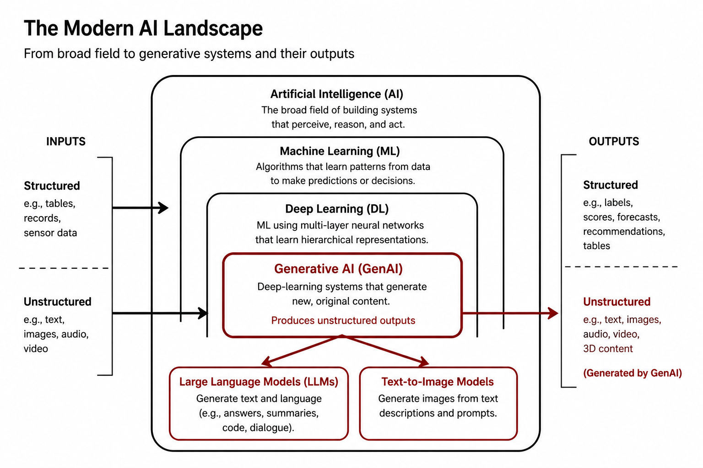
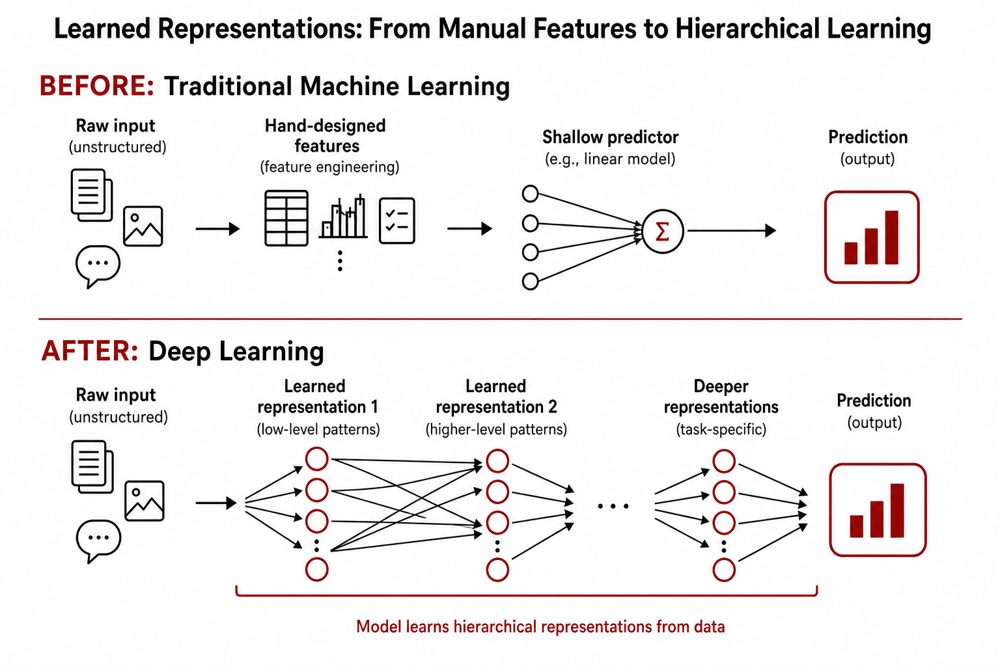
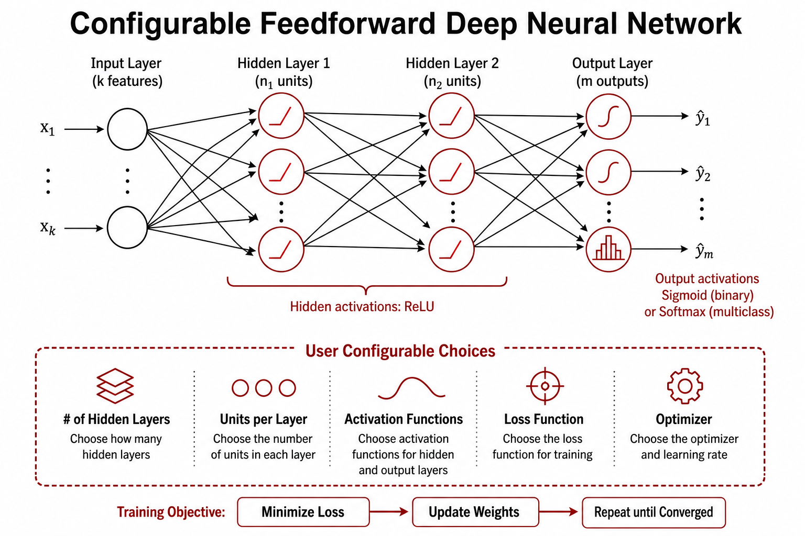
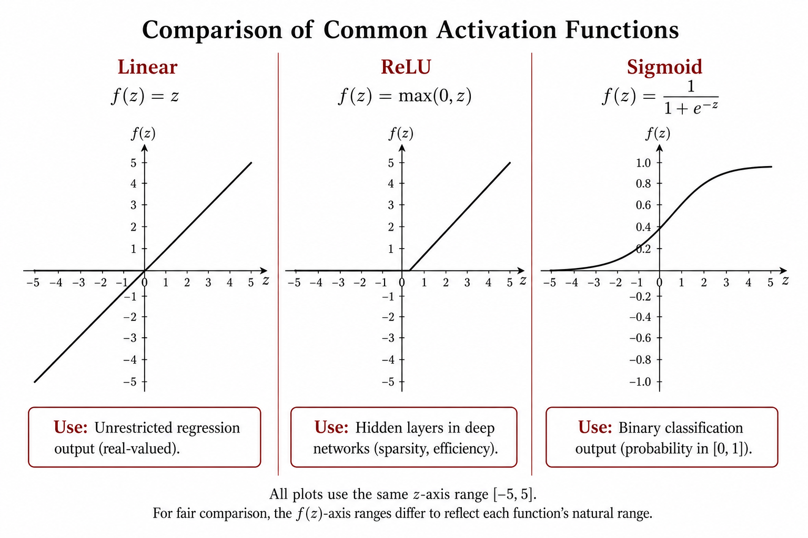
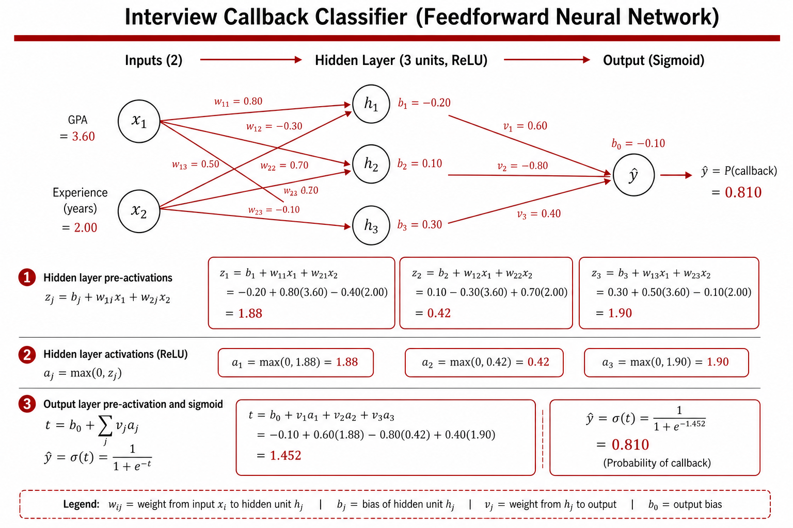
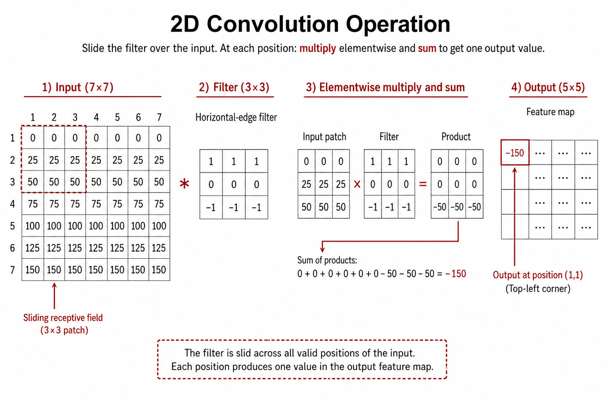
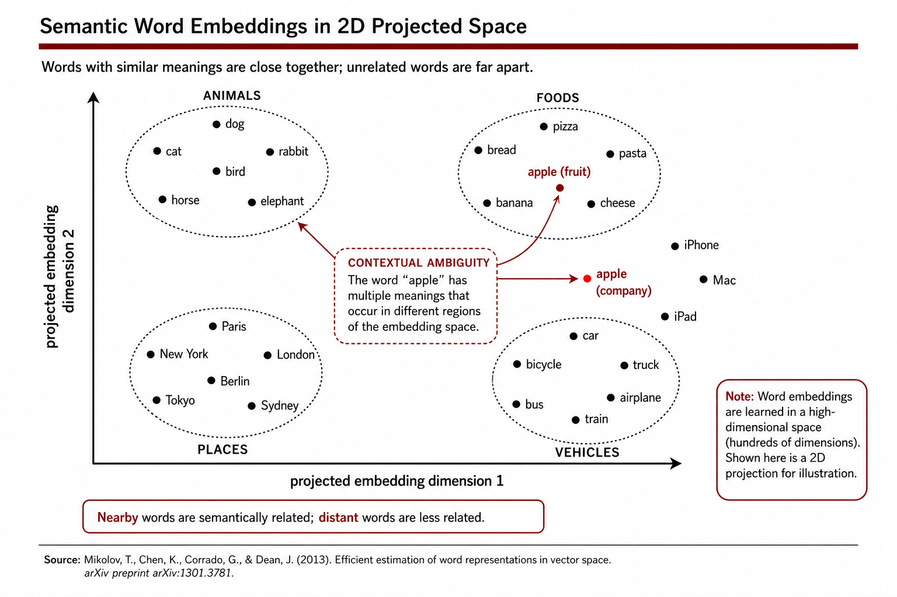
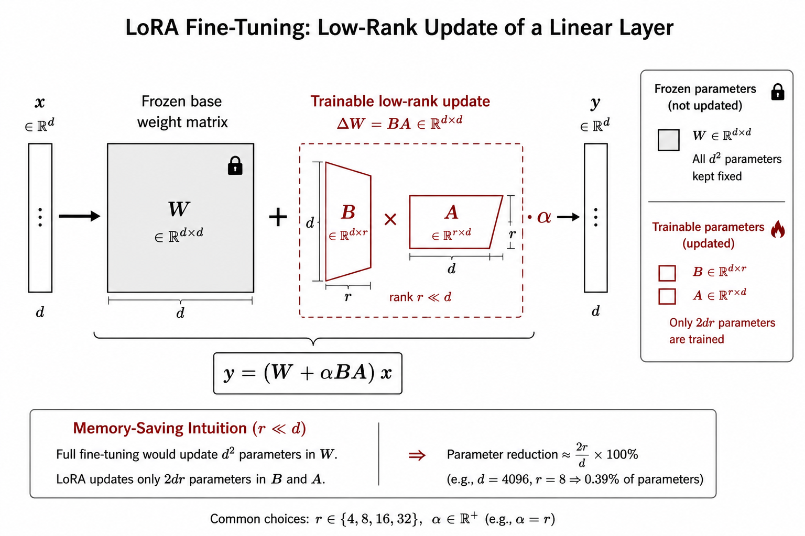
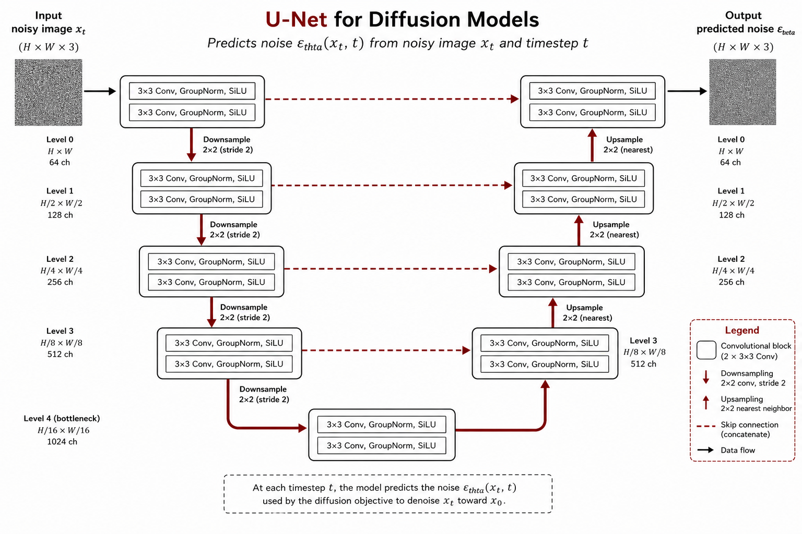

Hands-On Deep Learning
A Textbook Companion to MIT 15.773 (Spring 2024)
Based on the lectures of Prof. Rama Ramakrishnan, Professor of the Practice, AI/ML, MIT Sloan School of Management (course co-taught with Prof. Vivek Farias).
This book was assembled from the openly published materials of MIT OpenCourseWare course 15.773 Hands-On Deep Learning, Spring 2024: lecture videos and their transcripts, lecture slide decks, companion Google Colab notebooks, and homework assignments with solutions. MIT OCW materials are shared under a Creative Commons BY-NC-SA license. This companion is a derivative study aid, not an official MIT publication.
About the Course
Deep learning is the engine behind the predictive and generative AI advances around us today. Starting around 2010, this single algorithmic strategy has beaten incumbents and broken records in speech recognition, image recognition, natural language processing, and more. Many consider deep learning a general-purpose technology — like electricity and the Internet — whose impact will be pervasive and profound.
This course unpacks deep learning by developing its building blocks from scratch. The emphasis is on a deep, hands-on understanding of how to build models that process unstructured inputs (e.g., detecting whether a driver is falling asleep) and generate unstructured outputs (e.g., summarizing a customer-service call transcript). Throughout, the course connects the technology to sources of business value — it was designed for MIT Sloan MBA and analytics students, and roughly 229 graduate students took it in Spring 2024.
Prerequisites: working Python and fundamental machine-learning concepts (train/validation/test splits, overfitting/underfitting, regularization).
Companion textbook used in the course: Deep Learning with Python, 2nd ed., by François Chollet (Manning, 2021). ISBN 9781617296864.
Original grading: 10% class participation, 50% homework (2 × 25%), 40% final project.
How to Use This Book
Each chapter corresponds to one lecture and is built from three ingredients:
- The lecture itself — the narrative, intuition, analogies, and business framing come from the video transcript. Watch the linked video for the full experience; timestamps like (video 12:30) point you to live demos.
- The slide deck — definitions, equations, and figures. Each chapter links the original PDF.
- The Colab notebook(s) — nearly every chapter has a Hands-On Lab built on the course's actual notebooks. Open them in Colab and run every cell. The course's whole philosophy is that you learn deep learning by training models, not by reading about them.
Every chapter ends with Key Takeaways and Check Your Understanding self-test questions (with hidden answers). Appendix A contains both homework assignments with full solution walkthroughs — do the homework before reading the solutions.
Table of Contents
| Part | Chapter | Topic |
|---|---|---|
| I. Foundations | 1. Introduction to Neural Networks and Deep Learning | AI history, learned representations, layers, activations |
| 2. Training Deep Neural Networks | Loss functions, gradient descent, backpropagation, regularization | |
| 3. Keras/TensorFlow and CNNs from Scratch | The Keras workflow, tabular data, first vision models | |
| II. Computer Vision | 4. CNNs, Transfer Learning, and Fine-Tuning | Convolution, pooling, pretrained backbones, HuggingFace |
| III. Natural Language | 5. NLP Basics: Tokenization and Bag-of-Words | Text vectorization, n-grams, genre classification |
| 6. Embeddings | Word vectors, embedding layers, semantic arithmetic | |
| 7. Transformers | Attention, self-attention, the transformer block | |
| 8. Transformers II and Self-Supervised Learning | Pretraining, BERT/GPT, HuggingFace pipelines | |
| IV. Generative AI | 9. Large Language Models and RAG | How LLMs are built, prompting, retrieval-augmented generation |
| 10. Adapting LLMs: Parameter-Efficient Fine-Tuning | Prompt vs. RAG vs. fine-tune, LoRA | |
| 11. Text-to-Image Diffusion Models | Forward/reverse diffusion, Stable Diffusion | |
| Appendices | A. Homework Assignments and Solutions | HW1 and HW2 with walkthroughs |
| B. Resource Index | Every video, PDF, and Colab in one table |
Course Schedule (as taught)
| Session | Topic | Key dates |
|---|---|---|
| 1 | Intro to neural networks and deep learning; training deep NNs | |
| 2 | Training deep NNs (cont.); intro to Keras/TensorFlow; tabular data | |
| 3 | Computer vision — CNNs from scratch | HW1 posted |
| 4 | Computer vision — transfer learning and fine-tuning; HuggingFace | |
| 5 | NLP basics — tokenization, n-grams, bag-of-words | HW1 due |
| 6 | NLP — embeddings | HW2 posted |
| 7 | NLP — transformers | Project proposal due |
| 8 | NLP — transformers, self-supervised learning | |
| 9 | Generative AI — LLMs and RAG | HW2 due |
| 10 | Generative AI — parameter-efficient fine-tuning | |
| 11 | Generative AI — text-to-image models | Projects due |
| 12 | Project presentations |
Chapter 1: Introduction to Neural Networks and Deep Learning
Lecture video: https://www.youtube.com/watch?v=kyQ0CRkYhy4 Slides (PDF): https://ocw.mit.edu/courses/15-773-hands-on-deep-learning-spring-2024/mit15_773_s24_lec01.pdf
This chapter is based on Lecture 1 of MIT 15.773 Hands-on Deep Learning (Spring 2024), taught by Professors Vivek Farias and Rama Ramakrishnan at the MIT Sloan School of Management. The course philosophy is worth stating up front, because it shapes everything that follows: focus on the key concepts that underlie deep learning, skip most of the heavy math, and code deep learning models — because, as the instructors put it, coding is "the only way to develop a visceral (not just intellectual) understanding of how this stuff works." The goal is not to turn you into an ML engineer, but to enable you to build a V1.0 deep learning model yourself, without waiting for a data scientist to help you out.
Learning objectives. After working through this chapter, you should be able to:
- Explain the relationship between Artificial Intelligence, Machine Learning, Deep Learning, and Generative AI, and describe the breakthrough that motivated each.
- State Polanyi's Paradox and explain why the traditional rule-based approach to AI succeeded in only a few areas.
- Distinguish structured from unstructured data, and explain why the "raw form" of unstructured data defeats traditional machine learning.
- Explain what a representation of data is, why learning representations automatically was the key breakthrough of deep learning, and what "human bottleneck" it removed.
- Re-express logistic regression as a network of mathematical operations, and use the network view to motivate hidden layers.
- Define the core vocabulary of neural networks: neuron, weight, bias, layer, hidden layer, activation function, dense (fully connected) layer, architecture.
- Describe the sigmoid, linear, and ReLU activation functions and know when each is used.
- Count the parameters of a small feedforward network and hand-compute a forward pass (a prediction) through it.
1.1 A Very Short History of AI: Three Breakthroughs

The field of Artificial Intelligence was founded in 1956 at a summer workshop at Dartmouth College. MIT was well represented among the founders — Marvin Minsky (who went on to found the MIT AI Lab), John McCarthy (inventor of LISP), and Claude Shannon (inventor of information theory) were all there. The founders were brilliant and, in retrospect, wildly optimistic: they expected AI to be substantially solved "by that fall." Nearly seven decades later, Ramakrishnan argues, the field has instead gone through three seminal breakthroughs beyond the original, traditional approach: machine learning, deep learning, and generative AI. Understanding what motivated each breakthrough is the fastest way to understand where deep learning fits.
The traditional approach and why it failed
The goal of AI, informally, is to give computers the ability to do tasks that traditionally only humans have been able to do — cognitive tasks, perception, judgment. The traditional approach was commonsensical: ask human experts how they do it, write their knowledge down as IF–THEN rules, and program those rules explicitly into the computer. Want a chess program? Interview grandmasters about board positions and moves. Want to read ECGs? Interview cardiologists and encode their diagnostic rules.
This approach had success in only a few areas. Why didn't it work more broadly? Two reasons, one practical and one deep.
The practical reason is that hand-written rules are brittle: the real world presents an effectively infinite variety of situations, and any set of rules you write down covers only a small sample of them. Rule-based systems do not generalize to new situations — and the world is full of edge cases.
The deeper reason is Polanyi's Paradox: "We know more than we can tell." We can do many things easily — recognizing a dog versus a cat takes a human on the order of tens of milliseconds — but we find it very hard to describe how exactly we do them. Ask someone how they recognized the cat and they will offer alleged reasons ("it has whiskers"), but their articulation is both incomplete and often has no correspondence with what their brain actually did.
💬 From the lecture: "If you can't even tell me how you do something, how am I supposed to take it and put it into a computer? It doesn't work."
Machine learning: learn from examples instead
To address this problem, a different approach was developed. Instead of explicitly telling the computer what to do, provide it with lots of examples of inputs and outputs — chess positions and next moves, ECGs and diagnoses — and use statistical techniques to learn the relationship between them. This is Machine Learning (ML), which sits inside AI as a subfield. As Ramakrishnan puts it in lecture, machine learning is "just a fancy way of saying: learn from input–output examples using statistical techniques."
There are numerous ways to build ML models — linear regression, logistic regression, classification and regression trees, support vector machines, random forests, gradient boosted machines, and neural networks, among others. (If you have ever run a linear regression, congratulations: you have been doing machine learning.) ML has had tremendous worldwide impact — credit scoring, loan approval, disease prediction, demand forecasting, and countless other applications. In fact, when people talk about "AI" in industry, chances are they are actually talking about machine learning; AI just sounds cooler.
1.2 The Unstructured Data Problem and the Idea of Representations

Machine learning's success stories share one crucial property: the input data is structured — data that can be "numericalized" into the rows and columns of a spreadsheet (an informal but useful definition). Age, blood pressure, smoking status (yes/no), past purchases: these are either numbers already, or categorical variables that are easily converted to numbers (for example, via one-hot encoding).
The situation is very different for unstructured data: images, video, text, audio. Consider a photograph of a puppy. (In lecture, Ramakrishnan uses a photo of his own late dog — whose name, delightfully, was Google.) Digitally, the picture is just three tables of numbers — the amount of red, green, and blue light at each pixel, each on a scale of 0 to 255. Here is the problem: a value of 251 in the blue channel tells you there is a lot of blue light at that pixel — but not why. It could be sky, water, or a bucket of blue paint. The raw form of unstructured data has no intrinsic meaning: there is no connection between the number and the underlying object it describes. And if there's no connection between the numbers and the reality, no traditional algorithm can do anything useful with the numbers directly.
The historical workaround was feature engineering (also called feature extraction): manually transform the raw data into a better representation before applying machine learning. Building a bird-species classifier? Take each photo and measure beak length, wingspan, primary color, and so on — in effect, manually structuring the unstructured data. Once you had a good representation, you could often finish the job with something as simple as linear or logistic regression. The whole name of the game was the representations. Ramakrishnan notes that computer-vision PhD students would spend years handcrafting representations to solve one narrow problem — say, detecting evidence of a particular kind of stroke in CT scans.
This dependence on manual, expert-crafted representations created a massive human bottleneck that sharply limited the reach of machine learning. Hold on to the word representation — it is the single most important concept in this chapter.
1.3 Deep Learning: Representations Learned Automatically
Deep Learning (DL) sits inside machine learning, and it exists to solve exactly this problem: it can handle unstructured input data without upfront manual preprocessing, because it automatically learns smart representations from the raw input. "Automatically" is the keyword. You can feed it structured data, pictures, text — anything — and it extracts useful representations by itself.
The conceptual picture is a pipeline: raw data comes in; a stack of machinery in the middle learns representations automatically, without your help; and at the end you attach a plain linear or logistic regression to make the prediction. That, in a nutshell, is deep learning.
💬 From the lecture: "This simple idea is just incredibly powerful. It has led to ChatGPT, to AlphaGo, to AlphaFold. I've been doing deep learning for about ten years, and I still get goosebumps that something so simple could be so powerful."
Deep learning demolished the human bottleneck for using machine learning with unstructured data. The breakthrough came from the confluence of three forces:
- New algorithmic ideas,
- Unprecedented amounts of data (from the digitization of everything), and
- Compute power, specifically the parallel-processing muscle of Graphics Processing Units (GPUs).
These three forces were applied to an old ML idea — neural networks — and deep learning was born.
The immediate application: give every sensor a brain
What is the no-brainer application of automatically handling unstructured data? Every "sensor" in the world can be given the ability to detect, recognize, and classify what it is sensing. A sensor is just a receptacle for unstructured data: a camera collects images or video, a microphone collects audio. Attach a small deep learning system behind the sensor, and suddenly you can count, classify, detect — analyze and predict.
The lecture offers a string of examples: Face ID on your phone (camera + image classifier), breast-cancer detection from mammograms, pedestrian and stoplight detection in self-driving systems, and automated visual inspection in manufacturing (dent detectors, scratch detectors). One example is worth retelling. MIT EECS professor Regina Barzilay built a deep-learning breast-cancer detection system deployed at Massachusetts General Hospital. Herself a breast cancer survivor, she reportedly ran the system on her own mammograms from years earlier — mammograms a radiologist had read as clean — and the system flagged a problem. Deep learning systems can pick up signals that human experts miss.
Ramakrishnan frames this as a lens for spotting business opportunities: look at the world and ask, where are the sensors, and can I attach a deep learning system behind them? His freshly spotted example: the world's first "smart binoculars" (Swarovski Optik's AX Visio), which identify the bird species you are looking at, in the binoculars. Binoculars + DL = smart binoculars.
💬 From the lecture: "There are no long-term monopoly windows in the world — only short-term windows. So the hunt is always on for a little monopoly window."
1.4 Generative AI: Unstructured Outputs, and the X-to-Y World
So far we have discussed the input side. What about outputs? With deep learning, structured outputs were always easy: a single number (the probability a borrower repays a loan; next week's demand for a product), or a few numbers (the four probabilities that an image contains a chair, stool, table, or sofa; the two GPS coordinates of a taxi). What deep learning historically could not do well was generate unstructured output — produce a new image, a paragraph of text, a piece of music. We could consume unstructured data, but not create it.
Generative AI removed that limitation. It sits inside deep learning — it still runs on deep learning; it is one kind of deep learning — and it can produce unstructured outputs:
- Text-to-text: ChatGPT and other large language models (LLMs).
- Image-to-text: captioning ("two cats laying on a pink blanket with remotes").
- Text-to-image: elaborate prompts turned into photorealistic concept art (e.g., Stable Diffusion).
- Text-to-music: a prompt describing an arcade-game soundtrack turned into audio (e.g., MusicLM).
- Multi-modal: text and images in, text (and images) out.
A fun multi-modal example from lecture: someone photographed a notoriously complicated San Francisco parking sign and asked GPT-4, "It's Wednesday at 4 PM. Can I park here? Tell me in one line." GPT-4 answered: yes, for up to one hour starting at 4 PM — and Ramakrishnan double-checked that it was correct. ("We all know these things hallucinate. Can you imagine getting a parking ticket and telling the judge, 'I'm sorry, I didn't realize it was hallucinating'?") The separate circles inside GenAI — text-to-text, text-to-image, text-to-music — are merging as multi-modal models become the norm.
The summary slide compresses the whole landscape into one picture: X → Deep Learning → Y, where X and Y can be anything, and can be multi-modal. You can learn a mapping from anything to anything, as long as you have enough data. And note carefully: all of the current AI excitement — LLMs, ChatGPT, text-to-image, all of it — stems from the success of deep learning. If you understand deep learning, everything becomes possible.
1.5 So What Is a Neural Network? Start with Logistic Regression

Let's start at the beginning. Recall logistic regression: you send in a vector of numbers $[x_1, x_2, \dots, x_k]$ and get out a probability between 0 and 1. The model takes a linear function of the inputs and passes the result through the sigmoid:
$$ y = \frac{1}{1 + e^{-(b + w_1 x_1 + w_2 x_2 + \cdots + w_k x_k)}} $$
This should be familiar. The new move — the whole point of this lecture — is to look at this humble operation through the lens of a network of mathematical operations.
A concrete example: predicting interview callbacks
We will use a simple classification problem throughout: given two independent variables, GPA and years of Experience, predict whether a job applicant will be called for an interview (1) or not (0). Fitting a logistic regression to the lecture's small dataset (using glm in R, or statsmodels/scikit-learn in Python — any standard tool) yields:
$$ P(\text{interview}) = \frac{1}{1 + e^{-(0.4 + 0.2\,\text{GPA} + 0.5\,\text{Exp})}} $$
with intercept $0.4$, GPA coefficient $0.2$, and Experience coefficient $0.5$.
Rewriting the formula as a network
Now redraw this formula as data flowing left-to-right through a network (slide 61 shows the picture):
- On the left, two input nodes: circles holding GPA and Experience.
- Each input flows along an arrow and is multiplied by its coefficient as it travels: GPA is multiplied by 0.2, Experience by 0.5.
- The arrows converge on a node marked "+", which adds everything coming into it — including the intercept 0.4, drawn as its own incoming arrow.
- The sum flows into a final node that applies the sigmoid $\sigma(a) = 1/(1+e^{-a})$, and out pops a probability.
To make a prediction, just push numbers through. An applicant with GPA 3.8 and 1.2 years of experience: $0.2 \times 3.8 = 0.76$; $0.5 \times 1.2 = 0.6$; sum with the intercept, $0.76 + 0.6 + 0.4 = 1.76$; apply the sigmoid, $\sigma(1.76) = 0.85$. The predicted probability of an interview callback is 0.85. So far we are doing nothing but logistic regression, in what Ramakrishnan cheerfully admits is a "ridiculously long-winded way of writing a simple function." The payoff comes next.
Terminology: weights and biases
The world of neural networks has its own vocabulary for things statistics named long ago. What regression calls coefficients, neural networks call weights. What regression calls the intercept, neural networks call the bias. (Loosely, people often call the whole collection "the weights.") So when you read in the news that some famous model's weights were leaked on the internet, this is what leaked: the learned coefficients. Given the weights and the architecture, you can reconstruct the model.
1.6 Why the Network View Matters: Doing Things in the Middle
Why bother drawing a simple formula as a network? One answer is usability — with lots of operations, a graphical form is easier to reason about. But the deeper answer is this:
💬 From the lecture: "The moment you write it down as a network, you suddenly realize: I could have lots of things in the middle. I don't have to go from the input to the output directly."
Recall the notion of learning smart representations of the input. Where does that automatic learning happen? Right here — in the middle. The output is the output; it's a dog or a cat, and you have no agency over that. The input is the input. The only agency you have is to transform the raw input one or more times before you make the prediction.
What is the simplest transformation in all of mathematics? A linear function. So the simplest thing we can do is insert linear functions between input and output. Take all $k$ inputs and run them through a linear function — think $2x_1 + 4x_3 + \cdots + 9x_k + \text{intercept}$ — producing one number. In network notation, that is a circle with a "+" in it: a circle with a plus is shorthand for a linear function.
But why stop at one? We can insert a stack of linear functions — say three of them, each with its own weights and bias, each producing its own number. Now we have transformed a $k$-dimensional input (where $k$ might be 1,000) into a 3-dimensional vector. Is 3 the right number? Maybe 4, maybe 10 — how to choose comes later.
Next, each of those three numbers flows through another small function. As we will see shortly, that function is called an activation function, and it must be chosen to be nonlinear — if it isn't, all this stacking effort is a total waste of time. (Take that on faith for the moment; Chapter 2 and the discussion of ReLU will make it plausible. The intuition: a linear function of a linear function is just another linear function, so without nonlinearity the whole stack collapses back to plain logistic regression.) Note the dimensionality: three numbers in, three numbers out — the activation transforms each number individually.
And once we've done this once, we can do it again. And again — 100 times if we want. Every repetition gives the network more capacity to learn something interesting from the data:
💬 From the lecture: "If I don't even give you the opportunity to transform the input once, you have no opportunity. If I give you ten chances to transform it, you have ten shots at doing something useful."
Whether the network actually lives up to that potential depends on training — the subject of Chapter 2. Finally, when we are done transforming, we feed the resulting vector to our good old logistic-regression-style sigmoid output, exactly as before.
Key takeaway (slide 77): Instead of feeding the raw input to logistic regression, we feed a repeatedly transformed input. Before: input → linear function → sigmoid → output. After: input → transform → transform → … → sigmoid → output. The input hasn't changed; the output hasn't changed; everything interesting happens in the middle.
This is a neural network. A neural network is nothing more than repeatedly transformed inputs that are finally fed to a linear or logistic regression model.
1.7 The Vocabulary of Neural Networks
With the picture in place, the standard terminology attaches to it directly:
- Neuron (or node, or unit): one linear function followed by a nonlinear activation function. A neuron receives many numbers in, runs them through its linear function, passes the resulting single number through its activation, and emits one number out. That one number may be copied to every node in the next layer, but each node outputs a single number. (The name is loosely inspired by biological neurons — in the brain, dendrites of one neuron connect to axons of others at synapses, forming a network — but the connections between neuroscience and deep learning are heavily argued, and for building practical DL systems you need not worry about them.)
- Layer: a vertical stack of neurons.
- Activation function: the small scalar-in, scalar-out nonlinear function inside each neuron (Section 1.8).
- Input layer: the inputs themselves. "Layer" is in scare quotes here — it doesn't compute anything; it's just where the data enters.
- Output layer: the final layer that produces the output.
- Hidden layers: everything in between.
- Dense / fully connected: a layer is dense (fully connected) when every neuron in it is connected to every neuron in the next layer — that is, each neuron's single output number is sent along an arrow to every neuron in the following layer.
- Weights and biases (parameters): the coefficients and intercepts of all the linear functions in the network.
Under this vocabulary, plain logistic regression is itself a neural network — just about the simplest one imaginable, with an input layer and an output layer and no hidden layers. Barely a neural network at all.
And now the punchline of the chapter's title. Deep Learning is just neural networks with lots and lots of hidden layers. The lecture shows the architecture diagram of ResNet — famous as (roughly) the first network to surpass human-level performance at image classification ("the Skynet of image classification," Ramakrishnan jokes) — a skyscraper of stacked layers. The course returns to ResNet later to fine-tune it on a real problem.
1.8 Activation Functions

The activation function of a node is just a function that receives a single number and outputs a single number — scalar in, scalar out. The linear function inside the neuron may combine a thousand inputs, but what it hands to the activation is one number. Three activations cover most of what you need:
Sigmoid. $$ \sigma(a) = \frac{1}{1 + e^{-a}} $$ An S-shaped curve squashing any real number into $(0, 1)$. For very negative inputs the output is near 0 (the node barely "activates"); for very large inputs it is near 1; all the action — the steep, sensitive region — is in the middle. Because its output lives in $(0,1)$, the sigmoid is the natural choice when the output must be a probability.
Linear (identity). $$ f(a) = a $$ Ramakrishnan is "almost embarrassed to call it an activation function because it's literally not doing anything" — it passes its input straight through. It is listed for completeness (and it is what you use in an output layer that must produce an unconstrained number).
ReLU (Rectified Linear Unit) — "the hero of deep learning." $$ \text{ReLU}(a) = \max(0, a) $$ If the number is positive, pass it along unchanged; if it is negative, send out 0 instead — squash it. Your million-variable linear function produced a carefully computed negative number? The ReLU is not impressed: out comes 0. Many longtime practitioners believe the adoption of ReLUs is one of the key factors behind deep learning's success, thanks to properties discussed in Chapter 2 (in particular, how gradients flow through it).
The slides introduce a visual shorthand used for the rest of the course: a node drawn with a straight diagonal line is a linear activation, a node with a hockey-stick bend (flat then rising — mimicking the graph) is a ReLU, and a node with an S-curve is a sigmoid.
There are many other activation functions — tanh, leaky ReLU, GELU, swish; "a menagerie," as Ramakrishnan puts it, since researchers keep proposing variants. The practical guidance is simple and worth memorizing:
- Hidden layers: just use ReLU. There is a mountain of empirical evidence that it is a great default; you can get almost anything done with it.
- Output layer: you don't really have a choice — the nature of the output dictates the activation. A probability in $(0,1)$? Sigmoid. Ten class probabilities that must sum to 1? Softmax (introduced in the next lecture). An unconstrained number? Linear.
1.9 Designing and Using a DNN: The Interview Classifier, End to End
Designing a deep neural network comes down to a clean division of labor. Given to you by the problem: the input (its size and content) and the output (its type). Chosen by you: the number of hidden layers, the number of units in each hidden layer, and the activation functions for the hidden layers — plus an output activation that matches the output type. (A rule of thumb from lecture: start with the simplest network you can think of; if it gets the job done, stop.)
Let's apply this to the interview classifier. The problem hands us two inputs ($x_1$ = GPA, $x_2$ = Experience) and one output that must lie in $(0,1)$. Design choices: one hidden layer with 3 neurons, ReLU activations; and since the output is a probability, a sigmoid output layer — no choice there.
Counting parameters
First concept check: how many parameters (weights and biases) does this network have? Count: 2 inputs × 3 hidden neurons = 6 weights, plus 3 hidden-layer biases; 3 hidden outputs × 1 output neuron = 3 weights, plus 1 output bias. Total: $6 + 3 + 3 + 1 = \mathbf{13}$. The classic mistake (which yields 12) is forgetting a bias. Ramakrishnan's advice: for your first few networks, get in the habit of hand-calculating the parameter count until it's reflexive (video 50:00).
A forward pass through a trained network

Suppose training (covered in Chapter 2) has produced these parameter values — hidden layer: top neuron with bias $-0.3$ and weights $(0.5, 0.1)$; middle neuron with bias $0.2$ and weights $(-0.1, 0.3)$; bottom neuron with bias $0.5$ and weights $(0.2, -0.1)$; output neuron with bias $0.05$ and weights $(-0.15, -0.2, -0.3)$ on the three hidden outputs.
The hidden layer computes, for any input $(x_1, x_2)$:
$$ \begin{aligned} a_1 &= \max(0,\; -0.3 + 0.5 x_1 + 0.1 x_2) \ a_2 &= \max(0,\; \phantom{-}0.2 - 0.1 x_1 + 0.3 x_2) \ a_3 &= \max(0,\; \phantom{-}0.5 + 0.2 x_1 - 0.1 x_2) \end{aligned} $$
and the output layer computes
$$ y = \sigma!\left(0.05 - 0.15\,a_1 - 0.2\,a_2 - 0.3\,a_3\right). $$
Now push a specific applicant through: $x_1 = 2.3$, $x_2 = 10.2$.
$$ \begin{aligned} a_1 &= \max(0,\; -0.3 + 0.5(2.3) + 0.1(10.2)) = \max(0, 1.87) = 1.87 \ a_2 &= \max(0,\; 0.2 - 0.1(2.3) + 0.3(10.2)) = \max(0, 3.03) = 3.03 \ a_3 &= \max(0,\; 0.5 + 0.2(2.3) - 0.1(10.2)) = \max(0, -0.06) = 0 \end{aligned} $$
Notice the ReLU at work in $a_3$: the linear part came out negative, so the neuron emits 0. Then:
$$ y = \sigma!\left(0.05 - 0.15(1.87) - 0.2(3.03) - 0.3(0)\right) = \sigma(-0.8365) \approx 0.226 $$
The network predicts a probability of about 0.226. Work through this example until the mechanics are automatic — the lecture is emphatic that if the forward pass isn't reflexive now, transformers later in the course will be hard.
The network as a function — and why complexity is the point
If you feel "a little mathy," you can write the whole trained network as one closed-form function: substitute the three $\max(0, \cdot)$ expressions into the output sigmoid. The result is an unwieldy nested expression — "super interpretable, right?" — which makes two points at once. First, the graphical network layout is vastly easier to reason about than the raw formula (this is a real advantage of the network lens). Second, contrast it with the logistic regression from Section 1.5:
$$ y = \frac{1}{1 + e^{-(0.4 + 0.2 x_1 + 0.5 x_2)}} $$
Even this tiny network — one hidden layer, three neurons, the same two inputs and one output — is a far more complex function of $x_1$ and $x_2$ than logistic regression, and it can therefore capture far more complex relationships between inputs and output.
💬 From the lecture: "It is from this complexity that springs the ability of these networks to do basically magical things — as long as we know how to train them the right way. That's the secret sauce."
A note on interpretability, raised by a student in lecture: for any given input we know exactly how it flows through the network — there is no mystery about the computation. What is hard is ascribing credit: saying the prediction was high "because of this particular attribute" is difficult, because the attributes get enmeshed together through the layers. The fields of explainability and interpretability tackle this, and the course returns to it later.
1.10 Architecture: Putting It All Together
A network like the ones in this chapter — where data flows strictly left to right, layer by layer — is called a feedforward (or "vanilla") neural network. (This contrasts with recurrent networks, which the course skips because transformers have proven more capable and have become the norm.) The overall arrangement — how neurons are organized into layers, which activation functions are used, and how layers are connected — is called the network's architecture. The famous transformer is simply one particular architecture, just as convolutional neural networks (coming up for computer vision) are another. Everything in this course builds on the picture assembled in this chapter:
- Input layer (your independent variables) — fixed by the problem.
- Hidden layers — your design choices: how many layers, how many neurons each, which activations (default: ReLU).
- Output layer — its size and activation dictated by the type of output you must produce.
In the next chapter, we take this designed-but-untrained network and answer the obvious question: where do the weights and biases come from? The answer — loss functions, gradient descent, and backpropagation — is the secret sauce of deep learning.
Key Takeaways
- AI has gone through successive breakthroughs: traditional rule-based AI → machine learning → deep learning → generative AI. Each solved the central limitation of the one before.
- Rule-based AI failed broadly because of Polanyi's Paradox ("we know more than we can tell") and because hand-written rules don't generalize to the endless edge cases of the real world.
- Machine learning learns from input–output examples using statistical techniques, and works wonderfully — when the input data is structured (numericalizable into a spreadsheet).
- The raw form of unstructured data (pixels, waveforms, characters) has no intrinsic meaning, so ML historically required manual feature engineering to create good representations — a massive human bottleneck.
- Deep learning's defining capability is automatically learning smart representations from raw unstructured data; feed those representations to a simple linear/logistic model and you get remarkable performance. The breakthrough came from new algorithms + massive data + GPUs, applied to the old idea of neural networks.
- Generative AI (a subset of deep learning) added the ability to generate unstructured outputs. The modern landscape is "X → DL → Y" where X and Y can be anything, including multi-modal combinations.
- A neural network is just repeatedly transformed inputs finally fed to a linear or logistic regression. Logistic regression itself is a neural network with no hidden layers; deep learning means many hidden layers.
- Core vocabulary: weights (coefficients), biases (intercepts), neurons (linear function + nonlinear activation, one number out), layers, hidden layers, dense/fully-connected connections, architecture.
- Activations: use ReLU ($\max(0,a)$) in hidden layers by default; the output activation is dictated by the output type (sigmoid for probabilities, linear for unconstrained numbers).
- You choose the hidden structure; the problem fixes the input and output. Always be able to count a small network's parameters and hand-compute a forward pass.
Check Your Understanding
1. What is Polanyi's Paradox, and why did it doom the traditional (rule-based) approach to AI?
Answer
Polanyi's Paradox: "We know more than we can tell." Humans perform many tasks (like recognizing a cat in ~20 ms) without being able to articulate how they do it — and even when they offer explanations, those explanations often don't correspond to what their brains actually do. If experts can't accurately state their own rules, we can't encode those rules into a computer. Combined with the brittleness of any finite rule set in a world full of edge cases (rules don't generalize to new situations), this limited rule-based AI to success in only a few areas.2. Why can't traditional machine learning work directly on the raw pixels of an image?
Answer
Because the raw form of unstructured data has no intrinsic meaning. Each pixel value just records the amount of red, green, or blue light (0–255) at a location. A blue channel value of 251 is the same whether the object is sky, water, or blue paint — the number carries no connection to the underlying object. With no relationship between the raw numbers and the semantics of the task, traditional algorithms have nothing to work with; historically, humans had to manually engineer better representations (features) first.3. In one sentence each: what new capability did (a) machine learning, (b) deep learning, and (c) generative AI add?
Answer
(a) Machine learning replaced hand-coded rules with learning the input→output relationship from examples using statistical techniques. (b) Deep learning added the ability to *automatically learn representations* from raw unstructured input data, removing the manual feature-engineering bottleneck. (c) Generative AI added the ability to *generate unstructured outputs* (text, images, audio), not just consume unstructured inputs and emit numbers.4. Translate: what neural-network terms correspond to regression's "coefficients" and "intercept"? And what does it mean when a company's model "weights" are leaked?
Answer
Coefficients are called **weights**; the intercept is called the **bias** (informally, "weights" can mean both). If the weights are leaked, all the learned parameter values are public — and since the weights plus the architecture are sufficient to reconstruct the model, the model itself has effectively been leaked. The weights are the crown jewels: they encode the result of all the training data and compute.5. A feedforward network has 2 inputs, one hidden layer with 3 ReLU neurons, and a single sigmoid output neuron. How many parameters does it have? Show the count.
Answer
13. Input→hidden: $2 \times 3 = 6$ weights, plus 3 hidden biases (one per hidden neuron). Hidden→output: $3 \times 1 = 3$ weights, plus 1 output bias. $6 + 3 + 3 + 1 = 13$. The most common wrong answer is 12 — from forgetting a bias.6. Using the trained interview network of Section 1.9 (hidden neurons: $a_1 = \max(0, -0.3 + 0.5x_1 + 0.1x_2)$, $a_2 = \max(0, 0.2 - 0.1x_1 + 0.3x_2)$, $a_3 = \max(0, 0.5 + 0.2x_1 - 0.1x_2)$; output $y = \sigma(0.05 - 0.15a_1 - 0.2a_2 - 0.3a_3)$), what roles do the ReLUs play when you evaluate the input $(x_1, x_2) = (2.3, 10.2)$?
Answer
For that input, the first two neurons' linear parts are positive ($1.87$ and $3.03$), so their ReLUs pass the values through unchanged: $a_1 = 1.87$, $a_2 = 3.03$. The third neuron's linear part is negative ($0.5 + 0.46 - 1.02 = -0.06$), so its ReLU squashes it to $a_3 = 0$ — the neuron is "off" for this input. The output is $\sigma(0.05 - 0.15(1.87) - 0.2(3.03) - 0.3(0)) \approx 0.226$. This selective on/off behavior across inputs is the nonlinearity that gives the network its expressive power.7. Why must the hidden-layer activation functions be nonlinear?
Answer
Because a composition of linear functions is itself just a linear function. If every activation were linear, stacking any number of hidden layers would collapse into a single linear transformation of the input, and the whole network would be equivalent to plain linear/logistic regression — all the stacking effort would be "a total waste of time." Nonlinear activations are what allow each additional layer to add genuine capacity to learn more complex representations and input–output relationships.8. What parts of a DNN's design are dictated by the problem, and what parts are the designer's choice? What are the default/forced choices for activation functions?
Answer
Dictated by the problem: the input layer (size/content of the independent variables) and the *type* of the output (which fixes the output layer's size and activation). Designer's choices: the number of hidden layers, the number of neurons in each, and the hidden activation functions. Defaults: use ReLU in hidden layers (strong empirical track record); for the output layer you have essentially no choice — sigmoid for a single probability, softmax for multi-class probabilities summing to 1, linear for an unconstrained numeric output.Chapter 2: Training Deep Neural Networks
Lecture video: https://www.youtube.com/watch?v=3Lr8nVUDCpk Slides (PDF): Lecture 2 — Training Deep Neural Networks · Lecture 2 — Worked Backprop Example
In Chapter 1 we learned how to design a neural network: the input and output layers are dictated by your problem, and everything in between — the number of hidden layers, the number of neurons in each, the activation functions — is in your hands. But a freshly designed network is full of question marks: hundreds of parameters (or, for GPT-class models, hundreds of billions) whose values we do not yet know. This chapter is about how those question marks become numbers. As Ramakrishnan says at the top of the lecture, "Today, we're going to talk about how do you actually train a neural network, because that is the heart of the game here."
The chapter follows the lecture's arc. We start with a concrete case study — predicting heart disease from patient data — and design a network for it. We take a first look at how that design translates into four lines of Keras code. Then we build the conceptual machinery of training: loss functions (including a from-scratch derivation of binary cross-entropy), gradient descent (an algorithm from 1847 that powers GPT-4), backpropagation (with a fully worked example, reconstructed from the course's companion handout), and finally stochastic gradient descent, the workhorse of all modern deep learning.
One meta-rule from the lecture is worth stating before anything else, because it governs every design decision to come: start with the simplest network you can think of, and if it gets the job done, stop working on it. If it's not good enough, make it slightly more complicated.
Learning objectives
After working through this chapter, you should be able to:
- Design a small feedforward network for a real tabular classification problem, justify each design choice, and count its parameters.
- Read and write the four lines of Keras functional-API code that define a simple network, and explain what each line does.
- Define a loss function, explain why "discrepancy" is a deliberately broader word than "error," and match loss functions to output types (MSE for numeric outputs, binary cross-entropy for probabilities).
- Derive the binary cross-entropy loss from first principles, starting from the shapes we want the loss curve to have for $y=1$ and $y=0$ data points.
- State the gradient descent update rule $w \leftarrow w - \alpha \nabla g(w)$, explain the role of the learning rate, and extend the rule from one variable to billions via partial derivatives and the gradient vector.
- Explain why local minima and saddle points do not derail deep learning in practice.
- Compute the gradient of a small model's loss both "the old-fashioned way" and via backpropagation on a computational graph, and articulate where backprop's efficiency (and its synergy with GPUs) comes from.
- Explain what stochastic (minibatch) gradient descent changes relative to full-batch gradient descent, why it works, and why its "approximation error" can actually help.
2.1 The Case Study: Predicting Heart Disease
Rather than discuss training in the abstract, the lecture anchors everything in a real problem with real data. The Cleveland Clinic heart disease dataset contains records of patients who came to the clinic not for a heart problem — perhaps just for a physical — and for whom a battery of measurements was taken: demographics (age, gender), symptoms (chest pain), and biomarkers (blood pressure, cholesterol, blood sugar, and so on). The clinic then tracked these patients and recorded whether they were diagnosed with heart disease within the following year. The modeling opportunity: when a new patient walks in for something unrelated, predict whether something is going to happen to them in the next year. As Ramakrishnan puts it, "It's a nice classic machine learning setup."
You could absolutely attack this with random forests or gradient boosting — this is structured data, "data sitting in the columns of a spreadsheet," which is exactly where those methods shine. But the course strategy is to warm up our neural network knowledge on structured data before moving on to unstructured data — images the following week, then text — so we will solve it with a neural network.
A student asks the natural question (video ~4:00): when do you use a neural network versus a simpler model like logistic regression? Ramakrishnan offers two dimensions to think along. First, explainability: how important is it to explain or interpret the model for a non-technical consumer? "If they can't understand it, they won't use it" — and simpler models (logistic regression, decision trees, to some extent random forests) are more amenable to explanation, although the growing research field of mechanistic interpretability is working to open up the big black boxes. Second, sheer predictive accuracy: in some situations accuracy trumps everything else, in which case you just go with whatever predicts best.
Designing the network

Recall the checklist from Chapter 1: the input and output are handed to you by the problem; everything in the middle is yours. Here is how the lecture's design plays out:
- Input layer. The dataset has 13 input variables, but several are categorical (e.g., cholesterol coded as low/medium/high), so each categorical variable is one-hot encoded — a variable with five levels becomes five 0/1 columns. After encoding, the 13 variables become 29 inputs, $x_1, \dots, x_{29}$.
- Hidden layers. The simplest possible choice would be zero hidden layers — but a network with no hidden layers and a sigmoid output is just logistic regression. Since the point is to build a neural network, the design uses one hidden layer of 16 ReLU neurons. Why 16? Honest trial and error: Ramakrishnan tried 4, 8, and 16 (powers of 2, by convention), and 16 did well — while going above 16 made the model start to do worse, because of something called overfitting, which we take up properly in Chapter 3. And why ReLU? As in Chapter 1: a mountain of empirical evidence says ReLU is a really good default for hidden layers (plus some theoretical reasons we will glimpse when we discuss gradients later in this chapter).
- Output layer. The output is categorical and binary (heart disease: 1 or 0) — a classification problem — so we want the network to emit a probability, which means a single output unit with a sigmoid activation.
Every input is connected to every hidden unit, and every hidden unit to the output: the fully connected (dense) default for structured data. (We will see deviations from this default when we get to image and language processing.)
Counting the parameters
As urged in Chapter 1, get in the habit of quickly counting parameters every time you meet a network (video 10:01). Between the input and hidden layers there are $29 \times 16$ weights — one per arrow — plus one bias for each of the 16 hidden neurons. Between the hidden and output layers there are $16 \times 1$ weights plus one output bias:
$$29 \times 16 + 16 + 16 \times 1 + 1 = 497 \text{ parameters.}$$
Notice something important: going from a layer of size $A$ to a layer of size $B$ costs on the order of $A \times B$ parameters, because each layer is fully connected to the next. That is a dramatic explosion in the number of parameters — it is both where neural networks get their capacity and something to watch out for to prevent overfitting.
💬 From the lecture: "When you go from one layer to another layer, the number of weights is roughly on the order of A times B. And that's a dramatic explosion in the number of parameters. That's something we have to watch for later on to prevent overfitting."
2.2 A First Taste of Keras: Four Lines of Code
Before diving into the theory of training, the lecture "translates" this network into Keras code, just to demonstrate how easy it is (video ~12:00). A fuller introduction to Keras and TensorFlow — and the actual training of this model in Colab — comes in Chapter 3; for now, suspend disbelief and watch the picture become code. The convention is to define the layers from left to right, one after another:
input = keras.Input(shape=29)
h = keras.layers.Dense(16, activation="relu")(input)
output = keras.layers.Dense(1, activation="sigmoid")(h)
model = keras.Model(input, output)
Line by line:
keras.Input(shape=29)creates the input layer. We specify a shape rather than a length because inputs will not always be flat vectors — later in the course we will send Keras matrices, 3D cubes, and higher-dimensional tensors. Here the input happens to be a plain vector of 29 numbers. The result is given the nameinput.keras.layers.Dense(16, activation="relu")defines the hidden layer. "Dense" means fully connected to the prior and later layers;16is the number of neurons;"relu"is the activation. (A student asks whether we need to specify where the ReLU's bend is — no: the bend is always at 0.) But defining the layer is not enough: as far as this layer is concerned, the input layer doesn't exist yet. Appending(input)feeds the input layer's output into it — "the moment you do that, boom, it's going to receive the input from the previous layer" — and we name the resulth(for hidden; you can call it anything).- The output layer is just another
Denselayer, with one unit (we need to emit exactly one probability) and a sigmoid activation, fed byh. - Finally,
keras.Model(input, output)formally defines a model object — the thing Keras can train, evaluate, and use for prediction — by pointing at the input and the output.
That's it: a neural model for heart disease prediction in four lines. The Q&A around this demo (video ~17:00) is worth mining. Yes, you can define custom activation functions. For multi-class classification into, say, 10 classes, you would use 10 output units with a softmax activation (covered in the next lecture). And if your network needs 100 layers, you write a little loop rather than 100 lines: Keras only needs to know the input and the output, and it traces whatever transformations connect them — "a beautiful example of the power of abstraction."
💬 From the lecture: "These innocent four lines hide the potential that's possible here — but I guarantee you, in two to three weeks, you folks will be thinking in building blocks like LEGOs."
2.3 What "Training" Means
You have trained models before, even if nobody used the word. In linear regression you have a model with unknown coefficients; you add data; you run it through lm (in R) or scikit-learn or statsmodels; and out come actual numbers for the coefficients — 2.8, 2.9, and so on. Likewise for logistic regression with glm. The role of the data is to give you the coefficients — indeed, you can think of the fitted coefficients as a compressed version of the data.
Training simply means finding values for the weights and coefficients so that the model's predictions come as close to the actual values as possible. Under the hood, lm and glm run optimization algorithms to find those "best" values — you just never had to look, because it was all done for you. Training a deep neural network — even GPT-4 — is exactly the same process: the network "just happens to be a very complex function with lots of parameters." You fix the architecture first (a student asks about this — yes, the architecture must be defined before training, or Keras cannot even compute an output from an input), you add data, you optimize, and the question marks become numbers. For neural networks, though, we don't get to leave the optimization under the hood: we need to understand how it is done, because it matters.
To make "as close as possible" precise, we set up a function that measures the discrepancy between the actual and predicted values, and we find the parameter values that minimize it. In the deep learning world these functions are called loss functions. Ramakrishnan is deliberate about the word discrepancy rather than error: "error" tempts you to think only of predicted-minus-actual, which is too limiting. There is incredible creativity in the field around defining measures of discrepancy — many deep learning breakthroughs began as a cleverly designed loss function, and every paper you read seems to introduce a new one.
2.4 Loss Functions
A loss function is a function that quantifies the error in a model's predictions:
- If the predictions are close to the actual values, the loss is small.
- A perfect model has a loss of exactly zero.
A student in lecture summarizes it well — "loss is my way of finding out how good my model is" — and Ramakrishnan sharpens it: "Or rather, how bad your model is. And you want to minimize badness. That's the whole point of optimization."
You have already met a loss function: in linear regression, the sum of squared errors is the loss function — we just never called it that, because we weren't doing deep learning. The key design principle is that the loss function must be well matched to the kind of output that comes out of the model.
Mean squared error for numeric outputs
If the output is a general number — say a predicted product demand of 23 against an actual demand of 21 — plain differences make sense as discrepancies. For each data point $i$ (written as a superscript, indexing data points) we take the difference between the actual value $y^{(i)}$ and the predicted value $\hat{y}^{(i)}$, square it, and average over all $n$ points:
$$\text{MSE} = \frac{1}{n}\sum_{i=1}^{n}\left(y^{(i)} - \hat{y}^{(i)}\right)^2$$
This is the Mean Squared Error (MSE) loss, commonly used for general numeric outputs. It is the easiest loss function there is.
Deriving a loss for probabilities: binary cross-entropy

Now, as Ramakrishnan says, "let's crank it up a notch." In the heart disease model, the prediction is a probability — a fraction between 0 and 1, coming out of the sigmoid — while the actual output is exactly 0 or 1. How do you measure the discrepancy between a fraction and a binary label? What is a good loss function in this situation? Rather than just state the answer, the lecture builds it from intuition, sketched live on an iPad (video 25:06).
Case 1: the patient has heart disease ($y = 1$). Plot predicted probability on the horizontal axis (from 0 to 1) and loss on the vertical axis. If the model predicts a probability close to 1, it is doing well — the loss should be close to 0. If it predicts a probability close to 0, it is "screwing up badly" — the loss should be really high. So we want a curve that starts high at probability 0 and sweeps down to zero at probability 1.
Could that curve be a straight line? A student asks exactly this. It certainly could — but ideally, the more the model makes a mistake, the more harshly we want to penalize it. If the model says "one in a million" for a patient who actually has heart disease, we want the loss to be enormous — "a huge rap on the knuckles for the model: don't do that!" A steep, curved loss captures that dynamic (and, as a bonus, behaves better for gradient descent than a linear one — a technical point we can defer).
There is a very simple function with exactly this shape: the negative logarithm. For data points with $y = 1$,
$$\text{loss} = -\log\big(\text{predicted probability}\big)$$
Check it numerically:
| Predicted probability | $-\log_2(\text{predicted probability})$ |
|---|---|
| $1/1000$ | $9.97$ |
| $1/10$ | $3.32$ |
| $1/2$ | $1.0$ |
| $1$ | $0.0$ |
A confident wrong answer (probability $1/1000$ when the truth is 1) is punished roughly ten times as hard as a wishy-washy one ($1/2$), and a perfect prediction costs nothing.
Case 2: the patient does not have heart disease ($y = 0$). Same setup, flipped: a predicted probability near 0 should have near-zero loss, and the loss should climb higher and higher as the prediction approaches 1. The same trick works, applied to $1$ minus the probability. For data points with $y = 0$,
$$\text{loss} = -\log\big(1 - \text{predicted probability}\big)$$
| Predicted probability | $-\log_2(1 - \text{predicted probability})$ |
|---|---|
| $1/1000$ | $0.001$ |
| $1/10$ | $0.15$ |
| $1/2$ | $1.0$ |
| $0.999999$ | $19.93$ |
💬 From the lecture: "Mathematicians, once again, saved by the logarithm."
Combining the cases. We now have an if-then: use $-\log(p)$ when $y=1$ and $-\log(1-p)$ when $y=0$. If-thens are mathematically irksome — "you can't do derivatives and so on very easily." But there is a standard bag-of-math-tricks move for merging the two branches into a single expression. Writing $model(x^{(i)})$ for the predicted probability of the $i$-th data point:
$$\text{loss}_i = -\,y^{(i)} \log\big(model(x^{(i)})\big) \;-\; \big(1 - y^{(i)}\big)\log\big(1 - model(x^{(i)})\big)$$
Convince yourself this works. If $y^{(i)} = 1$, the factor $(1 - y^{(i)})$ is zero, so the second term collapses and we are left with $-\log(model(x^{(i)}))$ — exactly Case 1. If $y^{(i)} = 0$, the first term vanishes and the second becomes $-\log(1 - model(x^{(i)}))$ — exactly Case 2. "Simple and neat, right? In one expression, we have defined the perfect loss. No if-thens."
Finally, that was the loss for a single data point. We have lots of data points, so we add them all up and take the average:
$$\mathcal{L} = \frac{1}{n}\sum_{i=1}^{n}\Big[-\,y^{(i)} \log\big(model(x^{(i)})\big) - \big(1 - y^{(i)}\big)\log\big(1 - model(x^{(i)})\big)\Big]$$
This is the binary cross-entropy loss function. When you read about some massive deep neural network built by Google for a binary classification problem, chances are it was trained by minimizing exactly this.
Two good student questions round out the discussion. Can you edit the loss to penalize false negatives more strongly than false positives? Absolutely — the version here is the basic symmetric case, but asymmetric losses exist; if you are curious, look up the pinball loss. Why the log rather than some other curve — say, flatter for small mistakes and steeper later? You can totally do that. The log is not the only game in town; it is chosen because it is easy to work with, has good gradients, is mathematically well behaved — and happens to be empirically very effective.
2.5 Minimizing Functions: Gradient Descent
The name of the game is now to minimize the loss function. But loss functions are just a particular kind of function, so the lecture first considers the general problem of minimizing an arbitrary function, builds intuition there, and only then returns to loss functions.
Warming up with one variable
Take a little single-variable function $g(w)$ — the lecture uses a quartic (fourth-power) polynomial whose graph dips to a minimum somewhere around $w \approx -1.5$ (video ~36:00). It is a toy, but as Ramakrishnan warns, "the intuition we use here is going to be exactly what we use for GPT-4, so pay attention."
How do we minimize it? A student offers the calculus-class answer: take the derivative and set it equal to zero. Half right. Taking the derivative is exactly the right idea — but setting it to zero and solving becomes hopeless for very complicated functions; it is not at all clear what values make the derivative zero. So instead of solving, we will use the derivative as a local guide.
What does the derivative tell you? It is the rate of change: the derivative (slope) of $g$ at a point $w$ tells you how $g(w)$ changes for a small increase in $w$. That gives three cases:
| If the derivative at $w$ is… | What it means | Since we want to minimize, do this |
|---|---|---|
| Positive | Increasing $w$ slightly will increase $g(w)$ | Reduce $w$ slightly |
| Negative | Increasing $w$ slightly will decrease $g(w)$ | Increase $w$ slightly |
| $\approx 0$ | Changing $w$ slightly won't change $g(w)$ | Stop |
This immediately suggests an algorithm:
- Start at some point $w$.
- Calculate the derivative (slope) of $g$ at $w$, and nudge $w$ against it per the table.
- If you have hit the maximum number of iterations or run out of time (or the derivative is $\approx 0$), stop. Otherwise, go back to step 2.
This is gradient descent. The whole "very PowerPointy MBA table," as Ramakrishnan calls it, collapses into one compact update:
$$w \;\leftarrow\; w - \alpha \,\frac{dg(w)}{dw}$$
Check for yourself that this one line captures all three rows of the table: a positive derivative gets subtracted (reducing $w$), a negative derivative gets subtracted (increasing $w$), and a near-zero derivative leaves $w$ essentially unchanged.
💬 From the lecture: "This is the basic intuition behind how GPT-4 was built, which is kind of shocking if you think about it. All the heavy-duty optimization stuff that people have figured out over the decades is kind of not used. This algorithm is what's being used, with some flavors on top of it."
And the history is delicious: gradient descent was invented in 1847 by Augustin-Louis Cauchy. GPT-4 was built with an algorithm from 1847 — "which I find astonishing, frankly."
The learning rate
The little number $\alpha$ is called the learning rate, and it is our way of ensuring we increase or decrease $w$ only slightly. Why slightly? Because the derivative is a local statement — it is only valid for small movements around your current point. "If you take a big step, all bets are off." Typical values are small: 0.1, 0.01, 0.001, and so on, determined largely by trial and error. Ramakrishnan notes that when researchers publish a paper on training a big model, practitioners flip straight to the appendix to find the learning rates used — the learning-rate recipe is "part of the IP for how it's built." Intuitively (video ~52:00): if you are confident the function keeps sloping down in your direction for a while, you can afford a big step; if the terrain might curve away underneath you, take small steps so you don't have to backtrack.
Applied to the quartic warm-up, starting at $w = 2.5$ with $\alpha = 1$, the algorithm marches downhill — boom, boom, boom — and finds the minimum in four or five iterations (video ~42:00).
From one variable to 175 billion: the gradient
That was one variable. GPT-3 has 175 billion parameters (GPT-4's count is unpublished, rumored to be about 8 times larger), so the loss function has billions of $w$'s to minimize over. The tool for this is the partial derivative. Take baby steps with a two-variable function:
$$g(w_1, w_2) = w_1^2 + w_2^2 + 2$$
To get the partial derivative with respect to $w_1$, pretend everything except $w_1$ is a constant and differentiate as usual; likewise for $w_2$. Stack the results into a list:
$$\nabla g = \left[\frac{\partial g}{\partial w_1},\; \frac{\partial g}{\partial w_2}\right] = [\,2w_1,\; 2w_2\,]$$
The interpretation is the same as before, one coordinate at a time: the first number is the change in $g$ for a small increase in $w_1$ with $w_2$ held fixed; the second is the change for a small increase in $w_2$ with $w_1$ held fixed. This vector of partial derivatives is called the gradient of $g$, written $\nabla g$ (the upside-down triangle is a nabla — a fun bit of lecture trivia settled by consulting the class).
Now simply run gradient descent on each coordinate using its own partial derivative:
$$w_1 \leftarrow w_1 - \alpha \frac{\partial g}{\partial w_1}, \qquad w_2 \leftarrow w_2 - \alpha \frac{\partial g}{\partial w_2}$$
which stacks up compactly into the vector form
$$\mathbf{w} \;\leftarrow\; \mathbf{w} - \alpha \nabla g(\mathbf{w})$$
We have just generalized gradient descent to an arbitrary number of variables. "Whether it's 2 or 175 billion, who cares? It's the same thing." In two dimensions you can visualize it: the loss surface is a bowl over the $(w_1, w_2)$ plane, and gradient descent walks down the bowl from wherever it starts — or, viewed from above on a contour plot, marches from the starting point toward the center (video ~47:00).

Local minima, saddle points, and why we don't worry
A student raises the classic objection (video ~39:30): what about local minima? Gradient descent stops wherever the gradient is near zero — and that could be a local minimum rather than the global one, or not even a minimum at all: it could be a saddle point, where the function takes a break on its way down (slope zero in some directions, still descending in others). Sketching a wiggly one-dimensional function, Ramakrishnan points out several local dips, one global minimum, and a saddle — gradient descent could park at any of them, with no guarantees.
And yet, in practice, it has not mattered. Two reasons come up in lecture:
- A decent solution is good enough. For these very complex networks, even finding a reasonably good solution solves the problem — you do not need the absolute best. In fact, chasing the true global minimum of the training loss courts overfitting: the global minimum on training data need not be anywhere near the minimum for future test data. (A student asks whether reaching a global minimum would eliminate hallucinations; no — a global minimum can still have nonzero loss, and it is a minimum of the training data's loss function, not the test data's.) GPT-4's training probably stopped nowhere near even a local minimum: "Oh God, it's been running for six days, it's spent \$2 million, let's stop."
- High dimensions make local minima rare. To be at a local minimum, every direction around you must slope upward. With a billion dimensions, what are the odds that all billion slope up at once? Really low. Chances are some slope up, some slope down — so the best you can realistically hope to encounter in very high-dimensional loss landscapes is a saddle point, and it turns out that's good enough.
For these reasons, we are content to run gradient descent (with some tweaks coming shortly), and it performs admirably. It is worth remembering, though, what a real deep learning loss landscape looks like: the lecture shows a published visualization of an actual neural network loss surface (video ~66:30; see Li et al. 2018) — a craggy terrain of hills, valleys, and cracks, a far cry from the tidy bowls in the illustrations.
2.6 Minimizing a Loss Function with Gradient Descent
Back to our binary cross-entropy loss:
$$\mathcal{L} = \frac{1}{n}\sum_{i=1}^{n}\Big[-\,y^{(i)} \log\big(model(x^{(i)})\big) - \big(1 - y^{(i)}\big)\log\big(1 - model(x^{(i)})\big)\Big]$$
Where are the variables we need to change to minimize this? Not the $x^{(i)}$'s and $y^{(i)}$'s — those are just data. You never optimize the data. The variables are the parameters — the weights and biases — "hiding" inside the term $model(x^{(i)})$. Recall from Chapter 1 that $model(x)$ is really a big nested mathematical expression of the inputs and all the weights: for the little GPA-and-experience network we hand-computed, it was an explicit formula in $x_1, x_2$ and $w_1, \dots, w_{13}$. Imagine substituting that full expression everywhere $model(x^{(i)})$ appears in the loss. Now the loss is just a "good old function" of $w_1, w_2, \dots$ — the fact that it is a loss function is irrelevant — and you can apply gradient descent to it exactly as we normally would.
This point trips people up, so the lecture lingers on it (video ~53:30): the output of this whole minimization is the weights of your model. When you read that Meta "released the weights" of Llama 2, this is what was released — the solution of this optimization. The weights are the crown jewels, because they are the result of enormous amounts of data, money, compute, and smartness.
2.7 Backpropagation
💬 From the lecture: "If you remember nothing else about backpropagation, just remember this: never use the word backpropagation again. Only use the word backprop. You're hip and cool to the deep learning community."
So we know what to compute: the gradient of the loss with respect to every parameter, at every step of gradient descent. But think about the scale: a billion $w$'s, 10 million data points — and that is just one step of gradient descent. Backprop is a very efficient and clever way to compute the gradient of the loss function, and its cleverness comes from exploiting the fact that our model is not some arbitrary function — it is a neural network with a layer-by-layer architecture and an output at the very end.
The idea (video ~57:00): organize the computation as a computational graph and work backwards. Start at the very end and calculate the gradient of the loss with respect to the output. Then step left: calculate the gradient of the output with respect to the last hidden layer's output. Step left again: the gradient of the current layer with respect to the previous one. You get the idea — it is iterative and it moves backwards, and by doing so you never wastefully repeat the same computation: you calculate each piece once and reuse it many, many times. Why backwards rather than forwards? A student asks exactly this (video ~69:00). If you traversed left-to-right instead, many different paths from parameters to loss would recompute the same intermediate quantities — including the final gradient factors — again and again. Starting from the loss and working backwards means everything downstream of you has already been computed, and you just reuse it.
Backprop is not new mathematics. It is the calculus chain rule — to differentiate a composite function, multiply the derivative of the outer function by the derivative of the inner function, and so on — organized to fit the layer-by-layer structure of a neural network. Two more facts complete the picture:
- Organized this way, the whole backward pass becomes a sequence of matrix multiplications (plus other simple operations).
- GPUs — Graphics Processing Units, originally invented to accelerate video-game rendering — happen to be specialized hardware for exactly that: fast matrix multiplication. At some point someone had the bright idea to point GPUs at gradient calculations, "and all hell broke loose." (That, in large part, is why NVIDIA is valued in the trillions.)
$$\text{Backprop} + \text{GPUs} \;\Longrightarrow\; \text{fast calculation of loss-function gradients}$$
💬 From the lecture: "If this thing were not true, this class would not exist, because there wouldn't be any deep learning revolution. This is a fundamental, seminal reason."
The lecture's historical footnote: GPUs were first used for deep learning around 2005–2006, but the approach burst onto the world stage in 2012, when a deep learning model called AlexNet won a famous computer vision competition by a record margin — the moment everyone sat up and asked, "what is this thing?" (More on AlexNet in the computer vision chapters.)

2.8 Backprop, Fully Worked
Because of time, the lecture does not walk through the numbers live; instead, Ramakrishnan hand-worked an example in a companion handout (the second PDF linked at the top of this chapter) showing a gradient calculated both "the old-fashioned way" and via backprop, so that "you will understand exactly where the savings come from." This section works through that example.
Setup. Consider a problem with two inputs $x_1, x_2$, a continuous output $y$, and the simplest possible "network": each input passes through one linear unit, and the results are summed with a bias to produce the prediction. The parameters to be learned are $w_1$, $w_2$, and $b$:
$$\hat{y} = b + w_1 x_1 + w_2 x_2$$
and, since the output is continuous, we use a squared-error loss on a single data point:
$$\mathcal{L} = (\hat{y} - y)^2 = (b + w_1 x_1 + w_2 x_2 - y)^2$$
We need the gradient: $\partial \mathcal{L}/\partial w_1$, $\partial \mathcal{L}/\partial w_2$, and $\partial \mathcal{L}/\partial b$.
The old-fashioned way
Differentiate the expanded expression directly, one parameter at a time. Using the chain rule on the outer square:
$$\frac{\partial \mathcal{L}}{\partial w_1} = 2\,(b + w_1 x_1 + w_2 x_2 - y)\cdot x_1, \qquad \frac{\partial \mathcal{L}}{\partial w_2} = 2\,(b + w_1 x_1 + w_2 x_2 - y)\cdot x_2, \qquad \frac{\partial \mathcal{L}}{\partial b} = 2\,(b + w_1 x_1 + w_2 x_2 - y)$$
This works — but look closely: the bulky factor $2(b + w_1 x_1 + w_2 x_2 - y)$ was computed three separate times, once per parameter. For a three-parameter model, who cares. For a billion-parameter model, this redundancy is fatal.
Organizing the calculation differently
Now rewrite the same model as a sequence of small steps — intermediate variables that mirror the network's layers:
$$a_1 = w_1 x_1, \qquad a_2 = w_2 x_2, \qquad \hat{y} = b + a_1 + a_2, \qquad \mathcal{L} = (\hat{y} - y)^2$$
Each step is trivially easy to differentiate locally — each little derivative asks only "how does this node respond to its immediate input?":
$$\frac{\partial \mathcal{L}}{\partial \hat{y}} = 2(\hat{y} - y)$$
$$\frac{\partial \hat{y}}{\partial b} = 1, \qquad \frac{\partial \hat{y}}{\partial a_1} = 1, \qquad \frac{\partial \hat{y}}{\partial a_2} = 1$$
$$\frac{\partial a_1}{\partial w_1} = x_1, \qquad \frac{\partial a_2}{\partial w_2} = x_2$$
Draw these equations as a computational graph — nodes for $w_1, w_2, b, x_1, x_2$, then $a_1, a_2$, then $\hat{y}$, then $\mathcal{L}$, with arrows showing what feeds what — and attach each little derivative to its arrow.
Traveling backwards
Here is the entire algorithm: to calculate $\partial \mathcal{L}/\partial(\text{any parameter})$, start from the loss and travel backwards through the graph to that parameter, multiplying the partial derivatives along the path as you go. This is backpropagation.
For example, to get $\partial \mathcal{L}/\partial w_1$, the path from $\mathcal{L}$ back to $w_1$ runs through $\hat{y}$ and $a_1$. Multiply the derivatives along that path:
$$\frac{\partial \mathcal{L}}{\partial w_1} = \frac{\partial \mathcal{L}}{\partial \hat{y}} \cdot \frac{\partial \hat{y}}{\partial a_1} \cdot \frac{\partial a_1}{\partial w_1} = 2(\hat{y} - y)\cdot 1 \cdot x_1$$
Does this match the old-fashioned calculation? Yes — expand $\hat{y}$ and it is exactly $2(b + w_1 x_1 + w_2 x_2 - y)\,x_1$. Likewise:
$$\frac{\partial \mathcal{L}}{\partial w_2} = 2(\hat{y} - y)\cdot 1 \cdot x_2, \qquad \frac{\partial \mathcal{L}}{\partial b} = 2(\hat{y} - y)\cdot 1$$
The crucial difference is bookkeeping. The shared upstream factor $\partial \mathcal{L}/\partial \hat{y} = 2(\hat{y} - y)$ is computed once, at the start of the backward journey, and then reused by every path that passes through $\hat{y}$ — which is all of them. The old-fashioned way recomputed it for every parameter. In a deep network, these shared upstream products stack up layer by layer, and the savings compound: everything downstream of a layer is computed once and reused by all the parameters upstream of it.
Plugging in numbers
To make it fully concrete, run one complete cycle with actual values. Take the data point $x_1 = 2$, $x_2 = 3$, $y = 10$, and current parameters $w_1 = 1$, $w_2 = 2$, $b = 1$.
Forward pass (left to right, caching every intermediate value):
$$a_1 = w_1 x_1 = 1 \cdot 2 = 2, \qquad a_2 = w_2 x_2 = 2 \cdot 3 = 6$$
$$\hat{y} = b + a_1 + a_2 = 1 + 2 + 6 = 9, \qquad \mathcal{L} = (9 - 10)^2 = 1$$
Backward pass (right to left, multiplying local derivatives along each path):
$$\frac{\partial \mathcal{L}}{\partial \hat{y}} = 2(\hat{y} - y) = 2(9 - 10) = -2$$
$$\frac{\partial \mathcal{L}}{\partial b} = (-2)(1) = -2, \qquad \frac{\partial \mathcal{L}}{\partial w_1} = (-2)(1)(x_1) = -4, \qquad \frac{\partial \mathcal{L}}{\partial w_2} = (-2)(1)(x_2) = -6$$
The factor $-2$ was computed once and used three times. The signs make sense, too: the prediction ($9$) is below the target ($10$), so increasing any of $b$, $w_1$, $w_2$ raises $\hat{y}$ toward the target and lowers the loss — negative derivatives, exactly as the table in Section 2.5 predicts.
One gradient descent step with $\alpha = 0.01$:
$$w_1 \leftarrow 1 - 0.01(-4) = 1.04, \qquad w_2 \leftarrow 2 - 0.01(-6) = 2.06, \qquad b \leftarrow 1 - 0.01(-2) = 1.02$$
Re-running the forward pass with the new parameters gives $\hat{y} = 1.02 + 2.08 + 6.18 = 9.28$ and $\mathcal{L} = (9.28-10)^2 \approx 0.52$ — the loss roughly halved in a single step. That cycle — forward pass, backward pass, update — is deep learning training, whether the model has 3 parameters or 175 billion.
One last observation from the handout: this toy example had one path per parameter and single neurons at each stage. When layers contain many neurons, each backward step from one layer to the previous one becomes — as promised — a matrix multiplication, and GPUs are perfect for matrix multiplications.
Two practical questions: initialization and gradient flow
Two student questions from the lecture's Q&A belong here, because they only make sense once you understand gradients flowing backwards.
Where do the initial weights come from? (video ~61:00) Gradient descent has to start somewhere. The weights are initialized randomly — but "randomly" does not mean carelessly. Initialize a big network badly and the gradients in the earlier layers blow up as backprop multiplies factors together (the exploding gradient problem) or shrink toward nothing (the vanishing gradient problem). Researchers have devised initialization schemes that keep gradients well behaved — Keras bakes in strong defaults such as He and Xavier/Glorot initialization, which account for the sizes of the layers being connected. The whole network is initialized in one shot (otherwise you couldn't even run the forward pass). Practical advice: go with the default.
Can any function be an activation function? (video ~75:20) In principle you have wide latitude, but remember that during backprop the gradient must flow through the activation function in the reverse direction — and the activation should neither squish the gradient nor explode it. This is precisely why ReLU is so popular: for any positive input, the ReLU's slope is exactly 1, so whatever gradient arrives simply gets multiplied by 1 and passed out the other side, unharmed. ReLU preserves the gradient while injecting just about the minimum amount of nonlinearity needed to do interesting things — the theoretical virtue promised back in Section 2.1.
2.9 From Gradient Descent to Stochastic Gradient Descent
The final twist in the tale. Stochastic gradient descent (SGD) is the workhorse of all deep learning — "and funnily enough, SGD is simpler than GD. Just when you thought it couldn't get simpler."
The problem. For large datasets — $n$ in the millions or billions — computing the gradient of the loss is very expensive, because the loss averages over all $n$ data points, and the gradient must be recomputed at every single step of gradient descent. Even with backprop and GPUs, this is punishing; with enough data, the full-batch gradient computation may not even fit in memory.
The solution. At each iteration, instead of using all $n$ data points, randomly choose just a few of them — called a minibatch — and compute the gradient using only those. You might have 10 billion data points and grab just 32 or 64 per iteration — "something really small. Like absurdly small." Pretend that's all the data you have; compute the loss on those points, get the gradient by backprop, take one gradient step:
$$\mathbf{w} \;\leftarrow\; \mathbf{w} - \alpha \nabla \mathcal{L}_{\text{minibatch}}(\mathbf{w})$$
Then grab the next minibatch and repeat — one iteration per minibatch, using the freshly updated weights. Two student questions pin down the mechanics (video ~68:00):
- Do you iterate on one minibatch until it converges? No. Each minibatch gets exactly one iteration. Iterating one minibatch to convergence would waste effort (there's no guarantee of finding anything optimal anyway), and it is far better to keep taking in new information — you can always revisit the minibatch later. (This leads to the vocabulary of epochs and batch size, covered in gory detail alongside the Colab in Chapter 3.)
- Don't different minibatches give different weights — how do you combine them? You don't combine anything. There is one running set of weights. You start with $\mathbf{w}_1$, run a minibatch through, compute the gradient, update to $\mathbf{w}_2$; the next minibatch uses $\mathbf{w}_2$ to compute its predictions, and so on. Each minibatch nudges the same weights.
A terminology footnote from the slides: strictly speaking, "SGD" refers to using just one observation per iteration, and what we described is minibatch gradient descent — but the field universally says SGD for the minibatch version, and the course (and this book) follows suit.
(A student asks whether you could instead minibatch on features — keep all rows but use only 5 of 10 columns per iteration. Essentially no: computing a prediction requires all the features, or defaults for the missing ones — at which point you are using all features anyway. Observations can be subsampled because the loss is an average over data points; features enter the prediction itself.)
Why does this work? Because not all $n$ points are used, the minibatch gradient is only an approximation of the true gradient. It is not the real thing. But it works extremely well in practice — and, very tantalizingly, the approximation error can actively help. When you are at a local minimum of the true loss function, you are generally not at a minimum of the current minibatch's loss function, so SGD keeps moving — hopping from the neighborhood of one local minimum of the true loss to another rather than getting stuck. There is no complete theory yet of why SGD is as effective as it is; it is an active research area.
💬 From the lecture: "It's almost like you work less and you do better. How many times does that happen in life? This is one of them."
SGD comes in many flavors — a big family of siblings and variations. The course's default is a flavor called Adam, which we will meet again when we start running Colabs in Chapter 3.
2.10 The Overall Training Flow

Putting the whole chapter together, here is the complete training loop (video ~71:30, and the summary figure on the final slide):
- Forward pass. A batch of inputs flows through the network's layers, producing predictions.
- Loss. The predictions are compared with the true targets by the loss function, yielding a single loss score for the batch.
- Gradient. The loss score goes to the optimizer (SGD or a sibling like Adam), which computes the gradient of the loss with respect to every parameter — efficiently, via backprop.
- Update. Every layer's weights are updated by the gradient descent rule $\mathbf{w} \leftarrow \mathbf{w} - \alpha \nabla \mathcal{L}(\mathbf{w})$.
- Repeat, minibatch after minibatch, until you stop.
This is how the little 497-parameter heart disease network gets trained — and it is also, quite literally, how GPT was built, how AlphaFold was built, and how AlphaGo was built.
💬 From the lecture: "If you're not getting goosebumps at the thought that this simple thing can do all these complicated things, we really need to talk offline."
One loose end: the lecture ends with three minutes on the clock, and Ramakrishnan declines to rush into regularization and overfitting — "I don't want to go into regularization and overfitting in three minutes." We have already seen overfitting lurking twice in this chapter (more than 16 hidden units hurt the heart disease model; the global minimum of training loss can be worse for future data). The proper treatment — validation curves, early stopping, and friends — comes in Chapter 3, alongside the hands-on Keras workflow and the actual training of the heart disease model in Colab.
Key Takeaways
- Design before training. For the heart disease problem: 13 raw variables → 29 one-hot-encoded inputs, one hidden layer of 16 ReLU units (found by trial and error over powers of 2), one sigmoid output — $29 \times 16 + 16 + 16 + 1 = 497$ parameters. Fully connected layers multiply parameter counts ($\sim A \times B$ per layer pair), which is where both capacity and overfitting risk come from.
- Keras makes the design executable in four lines:
keras.Input(shape=29), aDense(16, activation="relu")hidden layer, aDense(1, activation="sigmoid")output layer — each fed the previous layer's output — wrapped bykeras.Model(input, output). - Training = optimization. Find the weights and biases that minimize a loss function measuring the discrepancy between predictions and actual values. The $x$'s and $y$'s are just data; the weights are the variables — and the trained weights are the crown jewels.
- Match the loss to the output. MSE for general numeric outputs; binary cross-entropy for probability-vs-binary-label outputs. BCE is built from $-\log(p)$ for $y=1$ points and $-\log(1-p)$ for $y=0$ points, merged into one if-then-free expression and averaged over the data. It punishes confident mistakes ferociously.
- Gradient descent (Cauchy, 1847): repeatedly nudge each parameter against its (partial) derivative, $\mathbf{w} \leftarrow \mathbf{w} - \alpha \nabla g(\mathbf{w})$, with a small learning rate $\alpha$ because gradients are only locally valid. The same one-liner works for 2 parameters or 175 billion.
- Local minima and saddle points don't derail us in practice: decent solutions are good enough (and true global minima of training loss risk overfitting), and in billion-dimensional spaces genuine local minima are vanishingly rare anyway.
- Backprop computes the gradient efficiently by organizing the chain rule on a computational graph and traveling backwards from the loss, multiplying local derivatives along the path and reusing every shared upstream factor instead of recomputing it per-parameter. The computation reduces to matrix multiplications — which GPUs devour. Backprop + GPUs = the deep learning revolution.
- SGD replaces the full-data gradient with a minibatch estimate (32 or 64 points per iteration, one update per minibatch). It is cheaper, fits in memory, and — because it only approximates the true gradient — can escape local minima. The course default optimizer is the SGD flavor Adam.
Check Your Understanding
1. The heart disease dataset has 13 input variables, yet the network has 29 inputs. Where do the extra 16 come from? And how many parameters does the full network (29 → 16 ReLU → 1 sigmoid) have?
Answer
Several of the 13 variables are categorical (e.g., cholesterol as low/medium/high), and each is **one-hot encoded** — a categorical variable with $k$ levels becomes $k$ binary columns. After encoding, the 13 variables expand to 29 inputs. Parameter count: $29 \times 16$ input-to-hidden weights $+ 16$ hidden biases $+ 16 \times 1$ hidden-to-output weights $+ 1$ output bias $= 497$.2. In the four-line Keras definition, what does the trailing (input) in h = keras.layers.Dense(16, activation="relu")(input) accomplish, and why is it necessary?
Answer
`keras.layers.Dense(16, activation="relu")` only *defines* the layer — 16 fully connected ReLU neurons. The layer does not yet know what feeds it; as far as it is concerned, the input layer doesn't exist. Appending `(input)` *connects* the layer to the input layer's output, and the result of that connected computation is named `h` so it can in turn be fed to the output layer. Define, then connect, then name — that is the functional-API pattern.3. Why does binary cross-entropy use $-\log(p)$ rather than, say, a linear penalty like $1 - p$ for $y = 1$ data points?
Answer
A linear penalty would work in principle, but the log penalizes bigger mistakes increasingly harshly: predicting $p = 1/2$ for a diseased patient costs $1.0$, while predicting $p = 1/1000$ costs nearly $10$ — a "huge rap on the knuckles" for confident wrongness. The log is also easy to work with, has good gradients, and is mathematically well behaved, which matters for gradient descent (a linear loss would be less effective there). It is not the only valid choice — just an easy one that is empirically very effective.4. Show algebraically why the single expression $-y\log(p) - (1-y)\log(1-p)$ reproduces the correct loss in both the $y=1$ and $y=0$ cases.
Answer
If $y = 1$: the second term is multiplied by $(1 - 1) = 0$ and vanishes, leaving $-\log(p)$ — high loss when the predicted probability $p$ is near 0, zero loss when $p = 1$. If $y = 0$: the first term is multiplied by $0$ and vanishes, leaving $-\log(1 - p)$ — near-zero loss when $p$ is near 0, huge loss as $p \to 1$. The multiplication by $y$ and $(1-y)$ acts as a differentiable switch, eliminating the mathematically awkward if-then.5. You are minimizing $g(w)$ and the derivative at your current $w$ is negative. According to the gradient descent update $w \leftarrow w - \alpha\, dg/dw$, what happens to $w$, and why is that the right move? What is the role of $\alpha$?
Answer
A negative derivative means increasing $w$ slightly will *decrease* $g$. The update subtracts a negative quantity, so $w$ *increases* — exactly the right move for minimization. The learning rate $\alpha$ (typically small: 0.1, 0.01, 0.001, found by trial and error) keeps the step small, because the derivative is only a *local* guide: it is valid for small movements around the current point, and "if you take a big step, all bets are off."6. Gradient descent can stop at local minima or saddle points rather than the global minimum. Give the two reasons from lecture why practitioners don't worry about this.
Answer
(1) *Decent is good enough — and "perfect" can hurt.* For complex networks, a reasonably good solution solves the business problem, and actually reaching the global minimum of the *training* loss risks overfitting: the training-data minimum need not be a minimum for future/test data. (Big models like GPT-4 likely stopped nowhere near any minimum — training was halted when time and money ran out.) (2) *High dimensions.* A local minimum requires *every* direction to slope upward; with a billion dimensions the odds of that are tiny, so what you encounter is at best a saddle point — and that turns out to be good enough.7. In the worked example with $\hat{y} = b + w_1x_1 + w_2x_2$ and squared-error loss, what specific quantity does the "old-fashioned" method compute redundantly, and how does backprop avoid the redundancy?
Answer
The old-fashioned per-parameter differentiation computes the upstream factor $2(\hat{y} - y) = 2(b + w_1x_1 + w_2x_2 - y)$ three separate times — once each for $\partial\mathcal{L}/\partial w_1$, $\partial\mathcal{L}/\partial w_2$, and $\partial\mathcal{L}/\partial b$. Backprop starts at the loss, computes $\partial\mathcal{L}/\partial\hat{y} = 2(\hat{y}-y)$ **once**, and reuses it on every backward path, multiplying by each path's remaining local derivatives ($1 \cdot x_1$, $1 \cdot x_2$, and $1$). In deep networks this reuse compounds layer by layer, and with many neurons per layer each backward step becomes a matrix multiplication — which GPUs execute extremely fast.8. In SGD, do you (a) iterate on one minibatch until its loss is minimized before moving on, and (b) somehow average the weights obtained from different minibatches? Explain why the minibatch gradient being "only an approximation" can be a feature rather than a bug.
Answer
(a) No — each minibatch gets exactly *one* forward pass, one gradient, one weight update; then you move to the next minibatch (you can revisit data in later epochs). (b) No averaging — there is a single running set of weights: minibatch 1 updates $\mathbf{w}_1$ to $\mathbf{w}_2$, minibatch 2 computes with and updates $\mathbf{w}_2$, and so on. Because the minibatch gradient only approximates the true gradient, a point that is a local minimum of the *true* loss generally isn't a minimum of the current minibatch's loss — so SGD keeps moving and can *escape* local minima. Less work, better results.Chapter 3: The Keras/TensorFlow Workflow — From Tabular Data to Image Classification
Lecture video: https://www.youtube.com/watch?v=8QuyDcMIdRc Slides: Lecture 3A — Lightning Introduction to Keras/TF · Lecture 3B — Deep Learning for Computer Vision: The Basics Companion Colabs: Predicting Heart Disease (tabular binary classification) · Fashion MNIST from Scratch (image classification)
In the previous chapters we assembled the conceptual machinery of deep learning: neurons, layers, loss functions, and gradient descent. This chapter is where the course becomes truly hands-on. We will train our first two real models in Keras — a binary classifier that predicts heart disease from tabular patient data, and a ten-way image classifier for the Fashion MNIST clothing dataset. Along the way we make precise several ideas that were only sketched before: what exactly an epoch and a batch are, how overfitting shows up during training and how to guard against it, what a tensor is, and what TensorFlow and Keras actually do for you.
Learning objectives
After working through this chapter and its two companion Colabs, you should be able to:
- Explain the difference between gradient descent and stochastic gradient descent, and compute the number of batches per epoch for a given training-set size and batch size.
- Recognize overfitting and underfitting from training/validation loss and accuracy curves, and apply early stopping as a regularization strategy.
- Define a tensor, state its rank, and give real-world examples of tensors of rank 0 through 5.
- Describe what TensorFlow provides (automatic gradients, optimizers, parallel/distributed execution) and what conveniences Keras adds on top.
- Build a neural network with the Keras functional API, and use
model.compile,model.fit, andmodel.evaluateto train and assess it. - Preprocess tabular data for a neural network: one-hot encode categorical variables, standardize numeric variables, and split data into train/validation/test sets in the right order.
- Explain how grayscale and color images are represented digitally, and name the key computer-vision task types (classification, localization, detection, segmentation).
- Choose the correct output layer (sigmoid vs. softmax) and the matching cross-entropy loss (
binary_crossentropy,sparse_categorical_crossentropy,categorical_crossentropy) for a given prediction problem.
3.1 Recap: how a deep learning model is trained
Training a neural network is, at its heart, no different from training any other statistical model. The network has a collection of parameters — weights and biases — and we must use data to find good values for them. "Good" means that we define some measure of discrepancy between what the model predicts and what the ground truth says, and we search for weights that minimize that discrepancy. The discrepancy measure is the loss function.
The overall training flow is a loop:
- Feed inputs through the network's layers to produce predictions.
- Compare the predictions $\hat{y}$ against the true targets $y$ using the loss function to obtain a loss score.
- Hand the loss score to the optimizer, which computes the gradient of the loss with respect to every parameter.
- Update every weight a small step in the direction that decreases the loss:
$$w \leftarrow w - \alpha \, \frac{d\,Loss(w)}{dw}$$
where $\alpha$ is the learning rate. Then repeat.
We also saw two flavors of this loop. In plain gradient descent (GD), every data point is used at each iteration to compute the gradient. In stochastic gradient descent (SGD), we instead randomly choose a small subset of the data points, pretend for a moment that those are the only points we have, compute predictions, loss, and gradient from just that subset, update the weights, and move on. SGD is both cheaper computationally and tends to find better solutions — a rare case where you get to have your cake and eat it too.
3.2 Epochs and batches

Because SGD only looks at a few points at a time, we need some careful bookkeeping vocabulary before we start training in Keras.
An epoch is one full pass through the training set. But an epoch plays out very differently under GD and SGD:
- Gradient descent: every training sample flows through the network; we compute predictions for all of them, calculate the gradient of the loss once, and update the parameters once per epoch.
- Stochastic gradient descent: we divide the training data into minibatches — which, following convention (and to save breath), we will simply call batches from now on. For each batch we run its samples through the network, compute the gradient, and update the weights. By the time we get to batch 2, the weights have already changed from processing batch 1.
💬 From the lecture: "Within that epoch, we update the weights many times. Basically, we update the weights as many times as we have batches."
So how many batches are in one epoch?
$$#\text{batches per epoch} = \left\lceil \frac{\text{training set size}}{\text{batch size}} \right\rceil$$
For the neural heart-disease model we will train shortly, the effective training set has 194 patients and we choose a batch size of 32, so:
$$\lceil 194 / 32 \rceil = 7$$
The first six batches have 32 samples each and the seventh batch has the last 2 samples — and that's fine; nothing says every batch must be the same size. Batch sizes like 32, 64, and 128 are conventional because they align well with the parallel hardware (GPUs) we run on. As Ramakrishnan notes in lecture, Keras handles all of this bookkeeping automatically — but you should know the details anyway: "If you don't know the details... you will not actually be able to think new and creative thoughts for a new problem, because the concepts are not manipulable in your head yet."
Two practical clarifications that came up repeatedly in class:
- A batch consists of rows (data points — patients, images), not variables. Each batch is run through the entire network, because you cannot compute a prediction, and hence a loss, and hence a gradient, without going through every layer.
- The advantage of batching is that after batch 1's update, batch 2 is processed with slightly better weights. Rather than waiting for a full pass to make one update, we improve as we go.
3.3 Overfitting and regularization

Recall from your machine-learning background what happens as a model becomes more complex: error on the training data steadily decreases, but error on held-out validation data decreases, bottoms out, and then starts climbing again. The climbing region is overfitting — the model is memorizing idiosyncrasies of the training data rather than learning generalizable patterns. The left side of the curve is underfitting — the model cannot yet capture the richness of the data. We are hunting for the sweet spot in between.
This matters enormously for neural networks. To learn smart representations of complex, unstructured data, the network needs large capacity — many layers, many neurons per layer (GPT-3, for example, has 96 layers). But more layers means more parameters, more complexity, and more risk of overfitting. So regularization is not optional; it is part of the standard workflow. The course uses two regularization strategies:
Early stopping. Split off a validation set from the training data, keep training, and monitor the validation loss. Training loss will keep falling, but at some point validation loss flattens out and begins to rise — and that is where you stop. Geoffrey Hinton, one of the "godfathers" of deep learning, famously called early stopping a "beautiful free lunch." Crucially, the validation set is never used to compute gradients — it is used only to evaluate loss and accuracy at the end of each epoch. That is what keeps you honest.
Dropout. Randomly zero out the outputs of some fraction (typically 50%) of the nodes in a hidden layer during training, implemented in Keras as a "dropout layer." We will meet dropout properly in Chapter 4, the first time we actually use it.
Putting it all together, here is the checklist for creating and training a deep neural network from scratch:
- Get the data ready.
- Design ("lay out") the network — number of hidden layers, neurons per layer, and the right output layer for the type of output.
- Pick a loss function matched to the output type, and an optimizer from the many SGD flavors (we default to Adam, just as we default to ReLU for hidden activations — both are empirically excellent).
- Decide on a regularization strategy (early stopping and/or dropout).
- Set it all up in Keras/TensorFlow and start training.
3.4 What's a tensor?

Before firing up TensorFlow, we should know what a tensor is. A tensor is a generalization of numbers, vectors, and matrices to arbitrarily many dimensions. Every tensor has a rank — the number of axes it has:
| Rank | Name | Example |
|---|---|---|
| 0 | Scalar | 42 |
| 1 | Vector | (42, 23.4, 11.2) |
| 2 | Matrix (table) | a grayscale image |
| 3 | "Cube" | a color image (three stacked tables: R, G, B) |
| 4 | — | a color video (a stream of color images) |
| 5 | — | a list of videos |
The last two rows illustrate the most important mental model: a tensor of rank $n$ is just a list of rank $n{-}1$ tensors. A video is a list of color images (rank 3 + 1 = 4); a list of videos is rank 5. Whenever you see a tensor of any complexity, you can iterate through its first axis and get back a collection of one-rank-lower tensors. As Ramakrishnan admits, the concept — which traces back to Einstein — is "simultaneously kind of easy to understand and also slippery," so read Chapter 2.2 of the Chollet textbook and practice until it becomes second nature.
3.5 TensorFlow and Keras
Neural networks are literally tensors flowing from input to output — hence the name TensorFlow. TensorFlow (TF) is a library that provides four things that would be painful to build yourself:
- Automatic gradient calculation of arbitrarily complicated loss functions, $\nabla Loss(w)$ — no hand-derived chain rule required. This is the single best part.
- A library of state-of-the-art optimizers, including SGD and all its variants (Adam among them).
- Automatic distribution of computational load across servers — parallelizing computation is a genuinely hard CS problem, and TF solves it for you.
- Automatic adaptation of your code to parallel hardware — GPUs, and Google's own TPUs ("Tensor Processing Units").
Keras sits on top of TensorFlow and supplies the convenience layer: pre-defined layers (we've already seen Dense), flexible ways to specify architectures, easy data preprocessing, easy training with metric reporting, and a library of pre-trained models you can download and customize. (The course uses TensorFlow/Keras rather than PyTorch deliberately: PyTorch is a fantastic framework but demands more object-oriented programming background, and Keras is just as powerful for our purposes while being easier to get going with.)
There are three broad ways to build models in Keras — the Sequential API, the Functional API, and subclassing. This course uses the Functional API almost exclusively; Ramakrishnan describes it as "a beautifully designed LEGO-block environment" in which very complicated models can be composed easily. Section 7.2.2 of the textbook covers it in detail. Here is our heart-disease network from Chapter 2, expressed in the functional API — the whole model in four lines:
input = keras.Input(shape=29)
h = keras.layers.Dense(16, activation="relu")(input)
output = keras.layers.Dense(1, activation="sigmoid")(h)
model = keras.Model(input, output)
Notice the pattern that defines the functional API: each layer is a callable that you apply to the output of the previous layer, and at the end you tell Keras which (input, output) pair constitutes your model.
Filling in the training checklist for this model: one hidden layer with 16 ReLU neurons; a sigmoid output (binary classification); binary cross-entropy loss (we're predicting a probability to be compared against a 0/1 label); the Adam optimizer; and early stopping for regularization. Let's train it.
3.6 Hands-on: predicting heart disease from tabular data
The dataset (UCI Heart Disease) has 303 patients, one per row, with 13 features — demographics like age and sex, plus biomarkers such as resting blood pressure (trestbps), cholesterol (chol), maximum heart rate (thalach), and so on — and a binary target column: heart disease, yes or no.
3.6.1 Technical preliminaries
Every notebook in this course begins the same way — importing TensorFlow, Keras, and the three workhorse Python packages:
import tensorflow as tf
from tensorflow import keras
import numpy as np
import pandas as pd
import matplotlib.pyplot as plt
NumPy for manipulating arrays and tensors, Pandas for wrangling raw data into a shape Keras can consume, and Matplotlib for plotting the loss and accuracy curves that tell us whether early stopping is needed.
Randomness enters deep learning training in several places: the random initialization of the weights, the shuffling of data into batches for SGD, the random train/validation/test split, and (later) dropout. To make results reproducible for anyone re-running the notebook, we set a single seed for all of these random number generators:
keras.utils.set_random_seed(42)
(42, of course, being the answer to life, the universe, and everything — a Hitchhiker's Guide to the Galaxy reference the course returns to often.) A caveat from lecture: even with a fixed seed, bitwise reproducibility is not guaranteed across hardware and device drivers — hence the notebook's fingers-crossed 🤞.
3.6.2 Reading and inspecting the data
François Chollet has made the dataset available as a CSV, which loads into a Pandas dataframe in one line:
df = pd.read_csv("http://storage.googleapis.com/download.tensorflow.org/data/heart.csv")
df.shape # (303, 14)
The first thing to check in any binary classification problem is class balance:
df.target.value_counts(normalize=True, dropna=False)
# 0 0.726073
# 1 0.273927
72.6% of patients do not have heart disease. This immediately gives us a baseline model: predict 0 (no disease) for everyone, and you will be right 72.6% of the time. As Ramakrishnan puts it, any fancy model we build has got to beat this — "otherwise, it's not worth its weight in layers."
3.6.3 Preprocessing: one-hot encoding and standardization
The data mixes categorical and numeric variables, so we group them:
categorical_variables = ['sex', 'cp', 'fbs', 'restecg', 'exang', 'ca', 'thal']
numerics = ['age', 'trestbps', 'chol', 'thalach', 'oldpeak', 'slope']
Unlike, say, a decision tree, a neural network cannot handle categorical inputs directly — everything must be numeric. The standard fix is one-hot encoding, which Pandas does in one line:
df = pd.get_dummies(df, columns=categorical_variables)
The thal column, for instance, had three values (fixed, normal, reversible); after encoding it becomes three 0/1 columns: thal_fixed, thal_normal, thal_reversible.
Neural networks also work best when numeric inputs are all in a relatively small, similar range, so we standardize the numeric variables — subtract the mean, divide by the standard deviation. But before standardizing, we must split off the test set:
test_df = df.sample(frac=0.2, random_state=42)
train_df = df.drop(test_df.index)
# train_df.shape -> (242, 30); test_df.shape -> (61, 30)
Why split before normalizing? Because if the means and standard deviations were computed on the full dataset, information about the test set would leak into the modeling process — and the test set wouldn't really be locked away anymore. The test set's job is to give an honest, one-time estimate of how the final model will perform in the wild, so it must not influence anything, including preprocessing statistics. Accordingly, we compute the statistics from the training set only and apply them to both:
means = train_df[numerics].mean()
sd = train_df[numerics].std()
train_df[numerics] = (train_df[numerics] - means) / sd
test_df[numerics] = (test_df[numerics] - means) / sd
Finally, Keras is happiest receiving NumPy arrays, and it needs $X$ and $y$ separated. The target column is column #6 (counting from 0), so np.delete carves out the features and slicing extracts the label:
train = train_df.to_numpy()
test = test_df.to_numpy()
train_X = np.delete(train, 6, axis=1) # (242, 29)
test_X = np.delete(test, 6, axis=1) # (61, 29)
train_y = train[:, 6] # (242,)
test_y = test[:, 6] # (61,)
The 29 features here are exactly the 29 input nodes in the network we designed — that's where the shape=29 comes from.
3.6.4 Define the model
Everything so far, in Ramakrishnan's words, has been "boring preprocessing." Now the action:
num_columns = train_X.shape[1]
# define the input layer
input = keras.Input(shape=num_columns)
# feed the input vector to the hidden layer
h = keras.layers.Dense(16, activation="relu", name="Hidden")(input)
# feed the output of the hidden layer to the output layer
output = keras.layers.Dense(1, activation="sigmoid", name="Output")(h)
# tell Keras that this (input, output) pair is your model
model = keras.Model(input, output)
The name= arguments are purely cosmetic — they just make the model summary easier to read. Speaking of which, always run model.summary() immediately after building: it lists each layer, the shape of the tensors flowing in and out, and the parameter count — here, 497 parameters. And as the course insists for your first few models, hand-verify that number:
(29 + 1) * 16 + (16 + 1) * 1 # 497
That's 29 inputs × 16 hidden neurons plus 16 biases, then 16 × 1 output weight plus 1 bias. You can also render the network graphically with keras.utils.plot_model(model, show_shapes=True) — handy once networks get large.
3.6.5 Compile: loss, optimizer, metrics
model.compile tells Keras three things: which loss function, which optimizer, and which metrics to report.
model.compile(optimizer="adam",
loss="binary_crossentropy",
metrics=["accuracy"])
- Loss:
binary_crossentropy, because the output is a single probability compared against a 0/1 label. - Optimizer: Adam, the empirically excellent "set-and-forget" default flavor of SGD.
- Metrics: accuracy. Important nuance from lecture: metrics are reported only — they play no role in optimization. You can ask Keras for error rates, F1, or anything from its long list of metrics, with no mathematical consequence for training.
The compile step is not mere ceremony: Keras takes the model you defined and reorganizes it so the computation becomes amenable to parallelization and distribution across hardware.
3.6.6 Fit: training the model
Three final decisions: the batch size (32 is the standard starting default — or, as researchers half-joke, "the biggest batch size that doesn't make your machine die"), the number of epochs (20–30 is a good starting point; since this dataset is tiny we'll run 300 just to watch overfitting happen), and whether to hold out a validation set (yes — 20% of the training data, for overfitting detection and early stopping).
history = model.fit(train_X, # the array with the input X columns
train_y, # the array with the output y column
epochs=300, # number of epochs to run
batch_size=32, # number of samples per batch
verbose=1, # verbosity during training
validation_split=0.2) # use 20% of the data for validation
validation_split=0.2 takes 20% of the training data out once, at the very beginning, and sets it aside; the remaining 194 samples get divided into the 7 batches we computed in Section 3.2. At the end of every epoch, Keras evaluates loss and accuracy on that same fixed validation set. Reading one line of the training log: 7/7 means 7 batches were processed this epoch; loss and accuracy are computed on the training data; val_loss and val_accuracy are computed on the held-out validation set.
Keep the distinction between the three datasets straight — it came up several times in class discussion. The validation set is used during modeling: to detect overfitting, to decide when to stop, and later to choose among hyperparameter settings. The test set is opened from the safe exactly once, at the very end, with your final-final model — not to improve the model but to get a realistic estimate of deployed performance.
3.6.7 Diagnose with loss and accuracy curves
Staring at 300 epochs' worth of numbers is painful, so we plot. The history object returned by model.fit contains a dictionary, history.history, with keys ['loss', 'accuracy', 'val_loss', 'val_accuracy']:
history_dict = history.history
loss_values = history_dict["loss"]
val_loss_values = history_dict["val_loss"]
epochs = range(1, len(loss_values) + 1)
plt.plot(epochs, loss_values, "bo", label="Training loss")
plt.plot(epochs, val_loss_values, "b", label="Validation loss")
plt.title("Training and validation loss")
plt.xlabel("Epochs")
plt.ylabel("Loss")
plt.legend()
plt.show()
The training loss falls steadily; the validation loss falls, flattens around epoch 50, and then gently rises — some overfitting. A purist response would be to re-initialize and retrain for only ~50 epochs (manual early stopping). But the analogous accuracy plot complicates the story: validation accuracy flattens and then, strangely, climbs a bit at the very end.
Why can accuracy improve while loss worsens? Because they are related but not the same thing. Accuracy is discrete and jumpy: if a patient's predicted probability moves from 0.49 to 0.51, the cross-entropy loss changes only slightly, but the accuracy for that patient jumps from 0 to 1.
💬 From the lecture: "Binary cross-entropy is a beautiful proxy, but an imperfect proxy for the thing we actually care about in the real world, which is error rate and accuracy. That's why I tend to want both — and if accuracy is telling me one thing, I kind of tend to believe that."
A workflow tip from class: if at the end of your chosen epochs the validation loss is still dropping, you can call model.fit again and Keras continues where it left off — run 10 more epochs, check, run 10 more, back off when validation performance turns. And all this manual monitoring can be automated with Keras callbacks, which can stop training when validation loss stops improving or save the best model as you go — covered later in the course.
3.6.8 Evaluate on the test set
Finally, the moment of truth — evaluate once on the untouched test set:
model.evaluate(test_X, test_y)
# 2/2 [====] - loss: 0.3866 - accuracy: 0.8361
83.6% accuracy, versus the 72.6% baseline. The little neural network earns its keep.
One shortcoming to note: we did the one-hot encoding and normalization outside the model, which means anyone deploying this model must remember and carry along the preprocessing details (e.g., each variable's mean and standard deviation). The elegant fix is Keras preprocessing layers, which fold the preprocessing into the model itself; we'll use that idea (via a Rescaling layer) in Chapter 4.
3.7 Computer vision: representing images digitally

The second half of the lecture pivots to images. A grayscale image is a rectangular array of pixels, each holding a light intensity between 0 (black) and 255 (blinding white); the image is literally a table — a rank-2 tensor — of these numbers. In the classic MNIST "5" example from fast.ai, the black background is all zeros, the pen strokes are large numbers, and if you step back and squint at the number grid you can actually see the 5. (What do the units mean? Think of it as a normalized relative scale from 0 to 255 that the digitization process maps light levels onto.)
A color image represents each pixel with three intensities — its "redness," "greenness," and "blueness" (RGB) — each still 0–255. So a color image is three tables of numbers, one per color channel (the standard deep-learning lingo): a rank-3 tensor.
Key tasks in computer vision
- Image classification: given an image and a list of possible categories, decide which category the image contains (the canonical dog-vs-cat problem).
- Classification and localization: also output where the object is, as bounding-box coordinates (top-left and bottom-right corners).
- Object detection: find and localize every object in a scene — this is what a self-driving car's vision system does many times a second: pedestrian box, zebra-crossing box, stroller box.
- Semantic segmentation: classify every pixel into one of N categories — these pixels are road, these are sheep, these are grass.
- Instance segmentation: classify every pixel and distinguish instances — sheep 1 versus sheep 2 versus sheep 3.
This chapter (and the next) focuses on classification, the foundational task.
3.8 Multi-class classification: flattening, softmax, and cross-entropy

Our motivating application is Fashion MNIST: 70,000 grayscale images of clothing items across 10 categories (T-shirts, trousers, boots, ...). The dataset is perfectly balanced — 10% per class — so the naive baseline model achieves only 10% accuracy. We will beat that handily with a simple network built from scratch.
Two new design problems arise.
Problem 1: the input is a table, not a vector. Each image is a 28×28 matrix (rank-2 tensor), but so far our networks consume vectors. The fix is flattening: take each of the 28 rows, rotate it, and string the rows end-to-end into one long vector of $28 \times 28 = 784$ numbers. Nothing clever has happened — we've merely reorganized the same numbers — but now we are back in familiar territory and can feed the vector to a dense hidden layer (256 ReLU neurons works well here).
Problem 2: the output is 10-way, not binary. We know how to output 10 arbitrary numbers (10 linear-activation units) and we know how to output 10 independent probabilities (10 sigmoids). But 10 sigmoids won't do here — the probabilities wouldn't sum to 1, and exactly one category is the right answer. We need 10 probabilities that sum to 1. Enter the softmax layer: take the 10 numbers $a_1, \dots, a_{10}$ emerging from the final linear layer, exponentiate each, and divide by the total:
$$\text{softmax}(a_i) = \frac{e^{a_i}}{\sum_{j=1}^{n} e^{a_j}}$$
Exponentiation makes every value positive, and dividing by the sum forces the results to add to exactly 1 — a valid probability distribution, guaranteed.
💬 From the lecture: "Pay attention to this, because this is actually how GPT-4 works. Every word it's emitting — it's doing a 52,000-way softmax. Think of it as every word in the language is a possible output, and it just picks the most probable word and emits that."
The full output-layer/loss-function pairing table, which you should internalize:
| Output variable | Output layer | Loss function |
|---|---|---|
| Single number (regression) | Single linear unit | Mean squared error |
| Single probability (binary classification) | Sigmoid | Binary cross-entropy |
| Vector of $n$ numbers (multi-output regression) | Stack of linear units | Mean squared error |
| Vector of $n$ probabilities summing to 1 (multi-class) | Softmax | Categorical cross-entropy |
One last wrinkle: for multi-class problems, Keras offers two cross-entropy losses, and you must pick the one matching how your labels are encoded:
- Labels as integers
0..9(the sparse encoding) →sparse_categorical_crossentropy - Labels one-hot encoded (a length-10 vector with a single 1) →
categorical_crossentropy - Binary 0/1 labels →
binary_crossentropy
These are mathematically equivalent formulations; the choice depends purely on how the data arrives in your notebook. Fashion MNIST's labels come as integers, so we use sparse_categorical_crossentropy.
3.9 Hands-on: Fashion MNIST from scratch

The Fashion MNIST data ships with Keras (one of its standard datasets), pre-split into train and test sets — deliberately, so that everyone benchmarking on this dataset evaluates against the same test set:
(x_train, y_train), (x_test, y_test) = keras.datasets.fashion_mnist.load_data()
print(x_train.shape, y_train.shape) # (60000, 28, 28) (60000,)
print(x_test.shape, y_test.shape) # (10000, 28, 28) (10000,)
The training input is a rank-3 tensor — which, per Section 3.4, you should read as a list of 60,000 rank-2 tensors, each a 28×28 table of pixel intensities. The labels are integers 0–9; a small lookup list makes them human-readable:
labels = ["T-shirt/top", "Trouser", "Pullover", "Dress", "Coat",
"Sandal", "Shirt", "Sneaker", "Bag", "Ankle boot"]
labels[y_train[0]] # 'Ankle boot'
Data prep. The tip from the notebook: NNs learn best when each input is in a small range. Since pixels are guaranteed to lie in 0–255, we can skip mean/sd standardization and simply divide by the max:
x_train = x_train / 255.0
x_test = x_test / 255.0
Model. Translating the design of Section 3.8 into the functional API:
# define the input layer
input = keras.Input(shape=(28, 28))
# convert the 28 x 28 matrix of numbers into a loooooooong vector
h = keras.layers.Flatten()(input)
# feed the long vector to the hidden layer
h = keras.layers.Dense(256, activation="relu", name="Hidden")(h)
# feed the output of the hidden layer to the output layer
output = keras.layers.Dense(10, activation="softmax", name="Output")(h)
model = keras.Model(input, output)
Note the new Flatten layer — it has no parameters; it just reshapes. Hand-verifying the parameter count reported by model.summary():
(784 * 256 + 256) + (256 * 10 + 10) # 203530
Compile and fit. Sparse labels → sparse categorical cross-entropy; Adam as always; accuracy as the reported metric:
model.compile(loss="sparse_categorical_crossentropy",
optimizer="adam",
metrics=["accuracy"])
batch_size = 64
epochs = 20
history = model.fit(x_train,
y_train,
batch_size=batch_size,
epochs=epochs,
validation_split=0.2)
The notebook wraps the loss- and accuracy-curve plotting code from the heart-disease Colab into reusable functions plot_loss_curves(history) and plot_acc_curves(history), and asks the same diagnostic questions: is validation loss rising while training loss falls? Would early stopping at epoch N help?
Evaluate.
model.evaluate(x_test, y_test)
# 313/313 [====] - loss: 0.3604 - accuracy: 0.8845
88.5% accuracy on the test set, from a model that has no idea it is looking at images — it just consumed 784 numbers per example. Against the 10% naive baseline, that's impressive. And extending the network is trivially easy in the functional API: adding a second 256-neuron hidden layer is literally one more line (h = keras.layers.Dense(256, activation="relu", name="Hidden_2")(h)) sandwiched between the first hidden layer and the output.
Can we do even better by telling the network that its input is an image — exploiting the spatial structure we destroyed when we flattened? That is exactly the subject of Chapter 4: convolutional neural networks.
Hands-On Lab
Two Colab notebooks accompany this chapter. For each: make your own copy first (File → Save a copy in Drive), and for vision/NLP notebooks request a GPU runtime (Runtime → Change runtime type). The instructor's advice: don't cut-and-paste — retype the code; you will learn far more.
Lab 3A — Predicting Heart Disease (tabular binary classification)
The full CSV-to-trained-model workflow:
- Setup: import
tensorflow,keras,numpy,pandas,matplotlib; callkeras.utils.set_random_seed(42)for reproducibility. - Load & explore:
pd.read_csv(...)→ 303×14 dataframe; check class balance withdf.target.value_counts(normalize=True)→ 72.6%/27.4%, establishing the 72.6% predict-all-zeros baseline. - Preprocess: one-hot encode 7 categorical variables with
pd.get_dummies; split 80/20 into train/test before standardizing; standardize numerics using training-set means/sds; convert to NumPy with.to_numpy(); separate features (np.delete(train, 6, axis=1)) from the target column. - Build: functional-API model —
Input(shape=29)→Dense(16, relu)→Dense(1, sigmoid); verify 497 parameters viamodel.summary()and by hand; visualize withplot_model. - Compile:
optimizer="adam",loss="binary_crossentropy",metrics=["accuracy"]. - Train:
model.fit(..., epochs=300, batch_size=32, validation_split=0.2), storing the result inhistory. - Diagnose: plot training vs. validation loss and accuracy from
history.history; identify the overfitting point (~epoch 50) and discuss early stopping. - Evaluate:
model.evaluate(test_X, test_y)→ 83.6% test accuracy vs. 72.6% baseline. Closing pointer: Keras preprocessing layers let you fold the encoding/normalization into the model itself for cleaner deployment.
Lab 3B — Fashion MNIST from Scratch (multi-class image classification)
- Load:
keras.datasets.fashion_mnist.load_data()→ 60,000 training + 10,000 test images, each 28×28; labels are integers 0–9, decoded via alabelslist. - Explore: print the raw pixel matrix of the first image (an ankle boot); render the first 25 images with Matplotlib's
imshow. - Data prep: normalize pixels to [0, 1] by dividing by 255.
- Build:
Input((28,28))→Flatten→Dense(256, relu)→Dense(10, softmax); verify 203,530 parameters by hand. - Compile & train:
sparse_categorical_crossentropy+ Adam;fitwithbatch_size=64,epochs=20,validation_split=0.2; plot loss/accuracy curves with the reusable helper functions. - Evaluate:
model.evaluate(x_test, y_test)→ 88.5% test accuracy vs. 10% baseline. - Extend (exercise): add a second hidden layer (one extra line), then compile/fit/evaluate the deeper model yourself.
Key Takeaways
- An epoch is one full pass through the training data. Under SGD, each epoch contains $\lceil \text{training size} / \text{batch size} \rceil$ batches, and the weights are updated once per batch — not once per epoch.
- Big networks overfit; regularization is a standard part of the workflow. Early stopping — monitoring validation loss and halting when it turns upward — is a "beautiful free lunch." The validation set is never used for gradient computation, only evaluation.
- A tensor is the generalization of scalar → vector → matrix to any rank; a rank-$n$ tensor is a list of rank-$(n{-}1)$ tensors. Grayscale image = rank 2, color image = rank 3, video = rank 4.
- TensorFlow gives you automatic gradients, optimizers, and automatic parallel/distributed execution; Keras adds layers, preprocessing, training conveniences, and pre-trained models on top. The functional API — layers as callables chained from
Inputto output — is the course's tool of choice. - The core Keras workflow is always: prepare data → define model →
model.compile(optimizer, loss, metrics)→model.fit(...)→ plot curves fromhistory→model.evaluate(test). - For tabular data: one-hot encode categoricals, standardize numerics, and split train/test before computing normalization statistics to avoid leakage. Always compare against a naive baseline (majority class: 72.6% for heart disease, 10% for Fashion MNIST).
- Match the output layer and loss to the problem: sigmoid +
binary_crossentropyfor binary; softmax +sparse_categorical_crossentropy(integer labels) orcategorical_crossentropy(one-hot labels) for multi-class. Softmax converts $n$ arbitrary numbers into $n$ probabilities that sum to 1 via $e^{a_i} / \sum_j e^{a_j}$. - Loss is a mathematically convenient proxy; accuracy (or the metric closest to real-world deployment) is what you actually care about — plot and judge both.
Check Your Understanding
1. A training set has 1,000 samples and you train with a batch size of 64. How many batches are there per epoch, and how many weight updates occur in 5 epochs of SGD?
Answer
Batches per epoch = ⌈1000/64⌉ = **16** (15 full batches of 64 plus one final batch of 40). SGD updates the weights once per batch, so 5 epochs produce 16 × 5 = **80 weight updates**. (Plain gradient descent, by contrast, would make only 5 updates — one per epoch.)2. Why must you split off the test set before standardizing the numeric variables?
Answer
Standardization is part of the modeling process. If the means and standard deviations are computed on the full dataset, information from the test set leaks into training, and the test set is no longer truly held out. The correct procedure: split first, compute means/sds on the training set only, then apply those *training* statistics to both the training and test sets. This preserves the test set's role as a one-time, honest estimate of deployed performance.3. What is the rank of the tensor representing (a) a grayscale image, (b) a color image, (c) a color video, (d) a batch of color videos?
Answer
(a) Rank 2 (a table of pixel intensities). (b) Rank 3 (three tables — R, G, B channels). (c) Rank 4 (a list of color images, one per frame). (d) Rank 5 (a list of videos). The general rule: a rank-$n$ tensor is a list of rank-$(n{-}1)$ tensors, so wrapping anything in a list adds one to the rank.4. For Fashion MNIST, why can't we use 10 sigmoid units as the output layer? What do we use instead, and how does it work?
Answer
Ten independent sigmoids would each output a probability in (0, 1), but the ten probabilities would not sum to 1 — and since exactly one clothing category is correct, we need a proper probability distribution over the classes. We use a **softmax** layer: exponentiate each of the 10 raw outputs and divide by the sum, $\text{softmax}(a_i) = e^{a_i}/\sum_j e^{a_j}$. Exponentiation guarantees positivity and the division guarantees the outputs sum to exactly 1.5. Your labels arrive as integers 0–9 in one project and as one-hot vectors in another. Which Keras loss function do you use in each case?
Answer
Integer ("sparse") labels → `sparse_categorical_crossentropy`. One-hot encoded labels → `categorical_crossentropy`. (And a single 0/1 binary label → `binary_crossentropy`.) The losses are mathematically equivalent formulations of cross-entropy; the choice depends purely on how the labels are encoded in your data.6. During training you observe validation loss slowly rising after epoch 50, but validation accuracy continues to improve through epoch 300. How can both be true, and what would you do?
Answer
Loss and accuracy are related but not identical. Accuracy is discrete: a prediction moving from 0.49 to 0.51 barely changes the cross-entropy loss but flips the accuracy for that example from 0 to 1. So loss can degrade slightly (predictions becoming less confident/calibrated) while the fraction of correct classifications still improves. As Ramakrishnan advises, favor the measure closest to real-world deployment — usually accuracy — so here you might reasonably accept the mild loss-overfitting and keep the later model.7. In model.compile(optimizer="adam", loss="binary_crossentropy", metrics=["accuracy"]), what role does the metrics argument play in optimization?
Answer
None. Metrics are purely for *reporting* — Keras computes and displays them per epoch (on training and validation data), but they are never used to compute gradients or update weights. Only the loss function drives optimization. That's why you can freely request accuracy, F1, error rates, etc., without any mathematical effect on training.8. What accuracy does the naive baseline achieve on (a) the heart-disease dataset and (b) Fashion MNIST, and why do we bother computing baselines at all?
Answer
(a) 72.6% — predict "no heart disease" for every patient, since 72.6% of patients are in that class. (b) 10% — the dataset is balanced across 10 classes, so always predicting one class is right 10% of the time. Baselines set the bar any real model must clear: the trained heart-disease network reached 83.6% (beating 72.6%) and the Fashion MNIST network reached 88.5% (crushing 10%). A "fancy" model that can't beat the naive baseline isn't worth its weight in layers.Chapter 4: Convolutional Neural Networks and Transfer Learning
Lecture video: https://www.youtube.com/watch?v=8xh7Y0pBrCE Slides: Lecture 4 — Deep Learning for Computer Vision: CNNs and Transfer Learning Worked convolution example (Excel): Convolution Example spreadsheet Companion Colabs: Learning a CNN for Image Classification · Handbags–Shoes Classifier with Transfer Learning
In Chapter 3 we trained a neural network with a single hidden layer on Fashion MNIST and reached accuracy in the high 80s — even though that network had no idea it was looking at images. It simply flattened each 28×28 grid of pixels into a 784-long vector and processed it like any other list of numbers. This chapter asks the obvious follow-up: if we tell the network that its input is an image, can we do better? The answer — the convolutional neural network (CNN) — turned out to be one of the great unlocks in machine learning. We build the concept up from its atomic unit (the convolutional filter), assemble filters into layers and layers into architectures, and then confront a practical reality: most real-world problems don't come with 60,000 labeled images. For that we learn transfer learning — adapting a large pre-trained network such as ResNet to your own problem — and close with the live-in-lecture demo in which a classifier trained on fewer than 100 examples per class correctly identifies a student's shoe and handbag through a laptop webcam.
Learning objectives
After working through this chapter and its two companion Colabs, you should be able to:
- Explain the three problems that arise when a flattened image is fed to a dense layer: too many parameters, loss of spatial adjacency, and no translation invariance.
- Perform the convolution operation by hand — overlay a filter on an image patch, multiply matching elements, sum, and pass through a ReLU — and verify your arithmetic against the course's worked Excel spreadsheet.
- Describe how a convolutional layer with $f$ filters transforms an input tensor, including the rank-3 filters needed for color (RGB) images, and predict the shape of the output tensor.
- Explain max pooling and average pooling, and articulate the "OR condition" intuition for why max pooling acts as a feature detector.
- Sketch the architecture of a basic CNN — convolutional blocks that shrink in height/width but grow in depth, followed by flattening and dense layers — and build one in Keras with
Conv2DandMaxPool2D. - Use
image_dataset_from_directory, aRescalinglayer, and data augmentation layers (RandomFlip,RandomRotation,RandomZoom) to train a CNN on your own folder of images. - Explain the logic of transfer learning: why a "headless" ImageNet-trained network produces a smart representation of everyday images, and how to attach and train a small classification head on top of it.
- Distinguish feature extraction (frozen pre-trained backbone) from fine-tuning (training end-to-end starting from the pre-trained weights), and know where to find pre-trained models — TensorFlow Hub, PyTorch Hub, and the Hugging Face Hub.
4.1 Why flattening images is the wrong thing to do
The dense network of Chapter 3 treated an image as an arbitrary vector of numbers. As Ramakrishnan puts it at the start of the lecture, that network "didn't know what was coming in was an image. It literally took this table of numbers... concatenated all the rows into one giant, long vector, and then sent it in." The clue for doing better is precisely that the network failed to exploit the input's type. Three things go wrong when we flatten (video 1:30).
Problem 1: Too many parameters. A photo from a modern phone is roughly $3024 \times 3024$ pixels. In color, that means three channels — about $3024 \times 3024 \times 3 \approx 27$ million numbers per image, each between 0 and 255. Connect that flattened vector to a single dense layer of just 100 neurons and you get
$$27{,}000{,}000 \times 100 \approx 2.7 \text{ billion parameters}$$
in one small piece of the network alone (ignoring biases). As Ramakrishnan asks the class: do you think we can find 2.7 billion images to train this thing so it doesn't overfit? The approach is computationally demanding, extraordinarily data-hungry, and practically guaranteed to overfit.
Problem 2: We lose spatial adjacency. If a pixel sits in the middle of a t-shirt, knowing that the surrounding pixels belong to the same underlying concept — "t-shirt" — is enormously informative. Flattening literally ignores what's nearby.
Problem 3: No learn-once, reuse-everywhere. Suppose the image contains a vertical line in the top-left and another in the bottom-right. A dense network must learn to detect each independently, which makes no sense — a vertical line is a vertical line, wherever it appears. We want to detect a feature once and reuse the detector everywhere. In math-speak this property is called translation invariance ("translation" just means moving things around) (video 5:01).
💬 From the lecture: "Detect once, reuse everywhere. That's what you need to do."
Convolutional layers were developed precisely to address these three shortcomings — and, as we'll see, they are an elegant solution to all three at once.
4.2 Convolutional filters and the convolution operation

The atomic building block of a convolutional layer is the convolutional filter: nothing more than a small square matrix of numbers, such as a $3 \times 3$ grid. A convolutional layer is simply composed of one or more of these filters.
What makes this humble object magical is that if you choose its numbers carefully and apply it to an image, the filter can detect features — lines, curves, gradations of color, circles. For example, this filter detects horizontal lines:
$$\begin{bmatrix} 1 & 1 & 1 \ 0 & 0 & 0 \ -1 & -1 & -1 \end{bmatrix}$$
and this one detects vertical lines:
$$\begin{bmatrix} 1 & 0 & -1 \ 1 & 0 & -1 \ 1 & 0 & -1 \end{bmatrix}$$
The mechanics
What does "applying" a filter mean? Take a small grayscale image (a grid of numbers between 0 and 255) and a $3 \times 3$ filter. The convolution operation works as follows (video 8:00):
- Overlay the filter on the top-left corner of the image, so that nine filter numbers sit directly on top of nine image numbers.
- Multiply matching elements and add them up. In the lecture's example: $0{\cdot}1 + 0{\cdot}1 + 0{\cdot}1 + 5{\cdot}0 + 5{\cdot}0 + 5{\cdot}0 + 10{\cdot}(-1) + 10{\cdot}(-1) + 10{\cdot}(-1) = -30$.
- Run the result through a ReLU: $\max(0, -30) = 0$. (Strictly speaking the ReLU isn't part of the convolution operation itself, but the course includes it here for convenience, since that is how it is used inside a network.) This number becomes the top-left cell of the output.
- Slide the filter one step to the right and repeat, producing the next output cell. When you finish a row, move to the start of the next row — and continue until you reach the bottom-right corner of the image.
The output is a new, slightly smaller grid of numbers — a feature map: a map of where in the image the filter's feature was found. There are nuances the course deliberately sets aside — you can pad the image's borders so the filter can hang over the edge, and you can slide more than one step at a time (the stride) — but, as Ramakrishnan notes in lecture, the basic default approach "works well, amazingly well, almost all the time."
Seeing it work: the Excel spreadsheet
To make the mechanics tangible, the lecture switches to a worked Excel spreadsheet (courtesy of the fast.ai team), which you should download and explore: convolution example spreadsheet (video 12:00). The spreadsheet contains an image of the digit 3 as a table of pixel values (normalized to 0–1 by dividing by 255), with conditional formatting that colors high values red — so the 3 visually pops out of the grid. Alongside it are the horizontal- and vertical-line filters, and output tables in which every cell is literally the Excel formula "multiply the nine matching cells, add them up, take max(0, ...)." Apply the horizontal filter and only the horizontal strokes of the 3 light up in the output; the vertical filter lights up only the vertical strokes.
Tracing a single bright output cell back to its inputs reveals why: the filter is an edge detector. It looks for places where a row of large values sits above a row of small values — the $+1$'s multiply the large values, the $-1$'s multiply the small values below, and the sum comes out strongly positive exactly at a horizontal edge, and near zero in flat regions where positives and negatives cancel.
💬 From the lecture: "Spend some time with it, with Excel, and it will become clear to you what I'm talking about here."
For further hands-on practice, the slides also point to the interactive demo at setosa.io/ev/image-kernels, where you can punch in your own filter numbers and watch what they detect.
4.3 Layers with many filters, and color images
A convolutional layer contains one or more filters, each a specialist for one particular feature — one may specialize in vertical lines, another in horizontal lines, another in semicircles. Modern images are complicated, so we typically want many filters. Crucially, though, we never assign the specialties. As Ramakrishnan says in lecture, you don't tell one filter "you better specialize in detecting vertical lines... stay in your lane" — the system figures out for itself what it wants to detect. There is no human bottleneck (there used to be one, as we'll see in a moment).
When a layer has multiple filters, they all run in parallel on the same input. Each filter produces its own 2-D feature map. If a layer with 2 filters applied to a small image produces two $5 \times 5$ output matrices, those are packaged as a tensor of shape $5 \times 5 \times 2$ (or equivalently $2 \times 5 \times 5$ — which convention you use is arbitrary) (video 17:30). This is why the tensor machinery of Chapter 3 matters: with 103 filters, the output would be a $5 \times 5 \times 103$ tensor.
Color images: make the filter rank-3
Grayscale images are 2-D tensors, but a color image is a rank-3 tensor — say $6 \times 6 \times 3$, with red, green, and blue channels. Should we just apply our 2-D filter to each channel independently? No — that would fail to inform the network that the three numbers at each pixel location are part of the same underlying thing. The fix is simple and elegant: make the filter rank-3 as well, with the same depth as the input (video 20:00). A $3 \times 3$ filter becomes a $3 \times 3 \times 3$ cube. At each position we now match up 27 image numbers with 27 filter numbers, multiply, add, and ReLU — every other aspect of the operation is unchanged. If the input were 10 channels deep, the filter would be 10 deep.
One point worth internalizing: no matter how deep the input and filter are, each filter's output is always a 2-D table, because at each position the whole multiply-and-add collapses to a single number. Depth in the output comes from having many filters: one rank-3 filter on a $6 \times 6 \times 3$ image yields a $4 \times 4$ map; $f$ filters yield a $4 \times 4 \times f$ tensor. (Chapter 8.1 of the course textbook — Chollet's Deep Learning with Python — covers these mechanics in more detail. As Ramakrishnan advises, "this convolutional stuff grows in the telling": revisit it a few times and it becomes muscle memory.)
4.4 The Big Idea: learn the filters from data
These filters seem excellent — but where are the numbers supposed to come from? Historically, they were designed by hand. Computer vision researchers invested prodigious amounts of time, effort, and talent devising filters for specific applications — for instance, hand-crafting exactly the right filter to extract stroke-predictive features from MRI images (video 26:00).
Then, as the field figured out how to train deep networks with many weights — ReLU activations, stochastic gradient descent, backpropagation, GPUs — a big idea emerged:
💬 From the lecture: "Why don't we think of the numbers in the filter as just weights? And why don't we just simply learn them from the data using backprop, just like we learn all the other weights? ... This simple idea — and it feels blindingly obvious in hindsight; I'm sure it was not obvious in foresight — this was the breakthrough."
This is possible because a convolutional filter is just a neuron — a slightly special one. Where a traditional first-hidden-layer neuron connects to all pixels of the input, a convolutional-filter neuron connects only to the pixels in one small window, and sliding the filter across the image can be thought of as a different neuron for each window position but with the same shared weights. (The lecture's appendix slide spells this out.) The weight-sharing delivers all three properties we wanted: local adjacency is preserved, there are far fewer parameters, and the same pattern is detected wherever it appears — translation invariance. And because a filter is just a neuron, our entire machinery — layers, loss functions, gradient descent, SGD — is immediately applicable, with nothing new to invent.
Historically, this was the turning point for the computer vision field. As Ramakrishnan recounts, in 2012 a system called AlexNet built on this idea "burst out onto the world stage" at the ImageNet competition: the previous best error rate was 26%, and AlexNet came in at 16% — in a field accustomed to yearly improvements of half a percent, a ten-point jump that looked like a typo (video 28:00).
Hierarchical features: later layers see more
One more conceptual pillar. With each successive convolutional layer, a filter implicitly "sees" more of the original input image. A cell in the first layer's output corresponds to a tiny patch of the photo — the top of a chimney, say; but a cell in the second layer's output is computed from a window of first-layer cells, each of which already summarizes a patch, so it reflects a much larger region. Stack enough layers and the network builds a hierarchical understanding: the first layer learns lines and edges; middle layers assemble them into corners, arcs, and textures; deeper layers assemble those into object parts and whole objects. The lecture shows the famous visualization from a face-detection network — lines and edges, then partial facial features (an ear, an eye), then entire faces emerging in the deepest layers (video 29:30). In the slides' shorthand: lines ⇒ edges, circles ⇒ faces!
4.5 Pooling layers
The second building block of a CNN is the pooling layer (also called a down-sampling or subsampling layer). Its job is to shrink the tensor coming out of a convolutional layer — and the very act of making it smaller forces the network to summarize what is going on in the complicated thing coming into it (video 31:00).
The mechanics are trivial, and — importantly — a pooling layer has no weights to learn; it is pure arithmetic. Take a $4 \times 4$ feature map and superimpose an empty $2 \times 2$ grid on its top-left corner:
- Max pooling: record the largest of the four numbers, then slide the $2\times2$ window over and repeat.
- Average pooling: record the average of the four numbers instead.
The lecture's worked example:
$$\begin{bmatrix} 23 & 14 & 0 & 109 \ 9 & 43 & 58 & 15 \ 105 & 85 & 35 & 25 \ 24 & 69 & 17 & 7 \end{bmatrix} \xrightarrow{\ 2\times2 \text{ max pool}\ } \begin{bmatrix} 43 & 109 \ 105 & 35 \end{bmatrix} \qquad \xrightarrow{\ 2\times2 \text{ avg pool}\ } \begin{bmatrix} 22.2 & 45.5 \ 70.75 & 21 \end{bmatrix}$$
A $2 \times 2$ pooling reduces the number of entries by 75%, and the shrunken output feeds the next layer as usual. When the input is a deep tensor — say $224 \times 224 \times 64$ — pooling operates on each of the 64 slices independently: every $224 \times 224$ table shrinks to $112 \times 112$, but the number of tables (the depth) does not change (video 36:30).
Why max pooling works: the "OR" intuition
Why would throwing away three quarters of the numbers help? A large value in a feature map means "the filter's feature was detected here." Max pooling over a region asks: did anything light up anywhere in this region? It behaves like an OR condition — if the feature exists anywhere in its input window, max pooling will pick it up. In that sense, max pooling itself acts like a feature detector.
💬 From the lecture: "You want to step back and say: in this picture, the top left, nothing lit up. The top right, something lit up... So you're operating at a higher level of abstraction. That's the effect of pooling."
Doesn't this destroy spatial information? Not really — by the time pooling summarizes a region, the network has already moved up a level of abstraction: an eye detector firing in the top-left tells you "there is an eye in the top-left" without needing pixel coordinates, and this coarsening proceeds slowly and incrementally across many layers. Since successive convolutional layers see more and more of the original image, the pooling layers that follow them can detect whether a feature exists in more and more of the original image too. By the seventh or eighth layer, the network is, in effect, operating with the image's features tagged at multiple resolutions.
4.6 The architecture of a basic CNN
We can now assemble the standard blueprint. A basic CNN is a series of convolutional blocks — each typically one or two convolutional layers followed by a pooling layer — capped by a classification head (video 37:30):
- The input image passes through convolutional block after convolutional block.
- As we go deeper, each block's tensor gets smaller in height and width (because of pooling) but deeper (because we choose to give later layers more filters).
- At the end, the final tensor is flattened into a long vector, run through zero or more dense hidden layers, and connected to the output layer (softmax for multi-class, sigmoid for binary).
Why smaller-but-deeper? Depth is a design choice — you decide how many filters a layer gets, just as you decide how many neurons a dense layer gets — and the field has found empirically that shrinking height/width while growing depth works remarkably well. Ramakrishnan's intuition (video 40:30): the number of atomic features worth detecting (lines, curves, color gradations) is small, but the ways they combine into real-world things are combinatorial — "I have 10 kinds of atoms; how many molecules can I make from them?" More depth means more filters, each able to capture some combination of what came before.
A concrete number to hold onto: ResNet, the famous network we will use shortly, takes in a $224 \times 224 \times 3$ color image and, after all its convolution-and-pooling business, ends with a tensor of shape $7 \times 7 \times 2048$ — dramatically smaller in height and width, dramatically deeper (video 39:30).
4.7 A CNN for Fashion MNIST
Time to build one. We return to Fashion MNIST from Chapter 3 — where a plain dense network got roughly 88% test accuracy — and follow the same workflow: data prep, define model, set optimization parameters, train, evaluate (video 43:00).
Data prep
As before, we normalize pixel values to the 0–1 range. One new wrinkle: convolutional layers expect a channel dimension. Color images have three channels; a grayscale image has one — a single table of numbers — so we reshape each image from $28 \times 28$ to $28 \times 28 \times 1$. Conceptually it's the same data; it's simply the format Conv2D expects.
x_train = x_train / 255.0
x_test = x_test / 255.0
x_train = np.expand_dims(x_train, -1)
x_test = np.expand_dims(x_test, -1)
x_train.shape # (60000, 28, 28, 1)
Define the model
Here is the course's first CNN, written in the Keras functional API from Chapter 3. Two new layer types appear: Conv2D for a convolutional layer (there are also Conv1D and Conv3D for other data shapes, but for images Conv2D is all you need) and MaxPool2D for max pooling.
# input layer
input = keras.Input(shape=x_train.shape[1:])
# the first convolutional block
x = keras.layers.Conv2D(32, # Number of filters
kernel_size=(2, 2), # The shape of each filter
activation="relu", # RELU activation as usual
name="Conv_1")(input)
x = keras.layers.MaxPool2D()(x) # pooling layer
# the second convolutional block
x = keras.layers.Conv2D(32,
kernel_size=(2, 2),
activation="relu",
name="Conv_2")(x)
x = keras.layers.MaxPool2D()(x)
# flatten, then a fully-connected (dense) ReLU layer
x = keras.layers.Flatten()(x)
x = keras.layers.Dense(256, activation="relu")(x)
# output softmax layer: 10 clothing categories
output = keras.layers.Dense(10, activation="softmax")(x)
model = keras.Model(input, output)
Reading it top to bottom: 32 filters of size $2 \times 2$ with ReLU, then max pooling — that's convolutional block one. Block two is a copy-paste ("I know how to cut and paste," Ramakrishnan jokes in lecture). A second block would often get more filters (say 64) to add depth, but for this simple problem 32 again is a fine starting point. Then flatten, one dense layer of 256 neurons, and a 10-way softmax. model.summary() reports about 302,000 parameters — which the lecture invites you to hand-calculate and verify. (A style note from the class Q&A: reusing the variable name x for every layer's output isn't naming the layers — it's just notational convenience; Keras tracks the actual graph under the hood.)
Compile, train, evaluate
The same compile-and-fit recipe as Chapter 3: Adam optimizer, sparse categorical cross-entropy (integer labels, 10 classes), batch size 64, 10 epochs, 20% validation split:
model.compile(loss='sparse_categorical_crossentropy',
optimizer='adam',
metrics=['accuracy'])
history = model.fit(x_train, y_train,
batch_size=64,
epochs=10,
validation_split=0.2)
Convolutional networks have more going on per example, so training runs a bit slower than the dense model. Training loss falls steadily while validation flattens out around the eighth epoch — the beginnings of overfitting, which is why 10 epochs is plenty. Then the moment of truth:
score = model.evaluate(x_test, y_test)
print("Test accuracy:", score[1])
# 313/313 [====] - loss: 0.2704 - accuracy: 0.9058
# Test accuracy: 0.9058
90.6% test accuracy (video 52:00). If going from 88% to 90.6% doesn't impress you, reframe it the way the lecture does: these are the proverbial diminishing-returns problems, so look at the error that's left. We had roughly 12% error; the CNN knocked about 2 points off that. The state of the art on Fashion MNIST is about 96.9%, and the Colab issues a challenge: can you get to the mid-90s by playing with the architecture — more blocks, more filters, different kernel sizes?
Iteratively improving the model
The Colab ends with a practical tip: once a model is built, look at the test-set predictions it gets wrong — that often suggests how to improve it. For image data, visualization helps:
# get the predictions and collect the mistakes
y_hat = np.argmax(model.predict(x_test), axis=1)
misses = np.where(y_hat != y_test)
Plotting a random sample of 25 misclassified images (predicted label vs. ground truth) shows the model struggling with visually similar categories. A confusion matrix completes the picture:
df = pd.DataFrame({'Predictions': predictions, 'Actuals': actuals})
pd.crosstab(df.Predictions, df.Actuals)
The most common mistake is confusing "Shirt" with "T-shirt/Top" — understandable, since the products genuinely look alike. The suggested remedy: get more data on exactly those confusable categories, enrich the training set, and retrain.
A question from the class Q&A is worth preserving: will a neural network always beat classical machine learning? For unstructured data (images, text, audio), deep learning is the best game in town. For structured/tabular data like Chapter 3's heart-disease problem, methods like gradient boosting (XGBoost) often work just as well or better — try both.
4.8 Kicking it up a notch: handbags vs. shoes with ~100 images
Fashion MNIST is grayscale and comes with 60,000 training examples; real problems are rarely so generous. The second half of the lecture poses a deliberately audacious challenge (video 55:30): Ramakrishnan web-scraped roughly 100 color images each of handbags and shoes. With ~200 images total — when even 60,000-image Fashion MNIST starts overfitting within a few epochs — can we build a genuinely good classifier?
💬 From the lecture: "It seems kind of absurd — 200 examples is not that much... Obviously there is hope. Otherwise it wouldn't be in the lecture."
Working with your own image files
Unlike Keras's packaged datasets, this one arrives as a zip file of JPEGs, so we get practice with the realities of custom data. First we split the files into train/validation/test folders, with a subfolder per class:
import os, shutil, pathlib
base_dir = pathlib.Path("/content/handbags-shoes")
for category in ('handbags', 'shoes'):
fnames = os.listdir(base_dir/category)
dir = base_dir / 'train' / category
os.makedirs(dir)
for fname in fnames[:50]: # the first 50 examples go into the training set
shutil.copyfile(src=base_dir/category/fname, dst=dir/fname)
dir = base_dir / 'validation' / category
os.makedirs(dir)
for fname in fnames[50:75]: # the next 25 go into the validation set
shutil.copyfile(src=base_dir/category/fname, dst=dir/fname)
dir = base_dir / 'test' / category
os.makedirs(dir)
for fname in fnames[75:]: # the remaining examples go into the test set
shutil.copyfile(src=base_dir/category/fname, dst=dir/fname)
This directory-per-class convention is the standard trick for image data: create one folder per class (here, handbags/ and shoes/), point Keras at the parent directory, and it infers the labels from the folder names. When working with JPEGs we need to (1) read them in, (2) convert them to tensors, (3) resize them to a standard size — web-scraped images come in all shapes and sizes — and (4) group them into batches. One Keras utility does all four in one shot:
train_dataset = keras.utils.image_dataset_from_directory(
base_dir / 'train',
image_size=(224, 224),
batch_size=32)
validation_dataset = keras.utils.image_dataset_from_directory(
base_dir / 'validation',
image_size=(224, 224),
batch_size=32)
test_dataset = keras.utils.image_dataset_from_directory(
base_dir / 'test',
image_size=(224, 224),
batch_size=32)
# Found 97 files belonging to 2 classes.
# Found 48 files belonging to 2 classes.
# Found 40 files belonging to 2 classes.
Fewer than 100 examples in the training set! Why resize to exactly $224 \times 224$? Because ResNet — the pre-trained network we're building toward — expects inputs of shape $224 \times 224 \times 3$. A quick check confirms each image is (224, 224, 3): three channels, since these are color images.
A from-scratch CNN baseline
First, the honest baseline: the same two-block CNN as before, adapted to color inputs and binary output. One upgrade: instead of manually dividing by 255, we graduate to a Rescaling layer, so the normalization lives inside the model and can never be forgotten at prediction time (video 58:30).
input = keras.Input(shape=(224, 224, 3))
# we normalize "inside" the model with a Rescaling layer
# so that we don't have to remember to do it every time
# we need to use the model to make a prediction
h = keras.layers.Rescaling(1./255)(input)
# first convolutional block
h = keras.layers.Conv2D(32, kernel_size=(2, 2),
activation="relu", name="Conv_1")(h)
h = keras.layers.MaxPool2D()(h)
# second convolutional block
h = keras.layers.Conv2D(32, kernel_size=(2, 2),
activation="relu", name="Conv_2")(h)
h = keras.layers.MaxPool2D()(h)
# flatten layer
h = keras.layers.Flatten()(h)
# output layer: handbag vs. shoe is binary, so one sigmoid neuron
output = keras.layers.Dense(1, activation="sigmoid")(h)
model = keras.Model(input, output)
model.compile(loss='binary_crossentropy',
optimizer='adam',
metrics=['accuracy'])
history = model.fit(train_dataset,
epochs=20,
validation_data=validation_dataset)
Because this is binary classification, we use one sigmoid output neuron and binary_crossentropy — the pairing rule from Chapter 3. The model has about 101,000 parameters against roughly 90 training examples, so what happens next is no surprise: training accuracy climbs toward 100% while the (very noisy — only ~50 validation images) validation accuracy hovers in the 80s. Classic overfitting. On the test set (video 62:00):
model.evaluate(test_dataset)
# 2/2 [====] - loss: 0.2934 - accuracy: 0.8684
About 87% accuracy — actually pretty good given ~100 examples per class, but we built the whole thing from scratch. Can we do better?
4.9 Data augmentation: an unbelievable free lunch
Before reaching for a bigger model, consider making the data bigger. Rotate a photo of a handbag by 10 degrees, zoom in slightly, or flip it left-to-right, and it is, as Ramakrishnan puts it, "sure as hell still a handbag" — the meaning doesn't change under small perturbations. So take every training image, perturb it slightly in random ways, and treat the perturbed versions as new training examples. This is data augmentation (video 63:00).
💬 From the lecture: "It's an unbelievable free lunch, frankly."
Keras provides these transformations as pre-built layers inserted right after the input; they perturb images randomly during training (only some images, in some ways, keeping diversity up):
input = keras.Input(shape=(224, 224, 3))
# data augmentation layers, inserted right after the input
h = keras.layers.RandomFlip("horizontal")(input)
h = keras.layers.RandomRotation(0.1)(h)
h = keras.layers.RandomZoom(0.2)(h)
# rest of the model is the same as before
h = keras.layers.Rescaling(1./255)(h)
# ... convolutional blocks, flatten, sigmoid output as above ...
The Colab includes a fun demonstration: apply the augmentation function nine times to the same handbag photo and plot the results — the bag appears slightly rotated one way, then the other, a bit zoomed, flipped (video 65:00). Because we effectively have more data, we can also train longer at lower risk of overfitting.
One caution from lecture: make sure your augmentation doesn't change the meaning of the picture. Horizontal flips are fine for everyday objects; vertical flips usually are not — "how many times will you have an upside-down dog picture that you need to classify?" — and domains like satellite imagery have their own rules. Don't let your augmentation go nuts. (The same family of ideas works for text too, as we'll see later in the course — and data augmentation figures prominently in Homework 1.)
4.10 Transfer learning with pre-trained networks
Augmentation stretches your 100 images further, but the real breakthrough comes from a different question: has someone else already learned most of what we need? Transfer learning rides on two research trends (video 60:30): first, researchers have designed architectures matched to data types — convolutional layers for images, transformers for sequences (natural language, audio, video, gene sequences — the subject of the coming weeks), residual connections for all deep networks. Second, using those innovations, they have trained high-performance networks on vast real-world datasets and made the weights publicly available.
Transfer learning means customizing such a pre-trained network to your problem rather than designing and training one from scratch. (Though, as the slides note with a wink, the first thing to do is check whether someone has already built the exact classifier you need and put it on GitHub.)
The logic, step by step
Handbags and shoes are everyday objects, and there is a dataset — ImageNet — containing millions of images of everyday objects in 1,000 categories: furniture, animals, automobiles, and so on. So we look for networks trained on ImageNet. A network that does well on ImageNet has necessarily developed a smart, hierarchical representation of everyday objects across its layers — the lecture shows the Zeiler–Fergus visualizations in which layer 1 picks up color gradations and lines, layer 2 edges, layer 3 honeycomb textures and human torsos, and deeper layers something that looks unmistakably like a Labrador retriever (video 66:30).
The ResNet family was trained on ImageNet and performed very well in its competition; its learned weights embody "knowledge" about lines, shapes, curves, and objects in millions of everyday images. But we can't use ResNet as is: it was built to classify an image into 1,000 categories, and we only care about two. So we perform a little surgery (video 68:30):
- Chop off the head. Take ResNet and stop just before its final 1,000-way classification layer, giving a "headless" ResNet.
- Run our images through it. What comes out is a smart representation of the image — imagine the image getting "tagged" with lots of general-purpose tags that can be used for any downstream categorization.
- Attach a small network. Feed that representation into a simple one-hidden-layer network ending in a sigmoid: handbag or shoe.
Because the inputs to our little network are now at a much higher level of abstraction than raw pixels, it can plausibly learn to separate handbags from shoes with very few examples.
Feature extraction in Keras
ResNet comes pre-packaged with Keras (the course uses ResNet-50, the 50-layer member of the family). The key argument is include_top=False — "the very top (final) layer, don't give it to me; give me everything up to but not including that" (video 71:00):
resnet50_base = keras.applications.ResNet50(
weights='imagenet', # download the ImageNet-trained weights
include_top=False, # chop off the 1000-way classification head
input_shape=(224, 224, 3))
resnet50_base.summary() # ~23 million parameters. It is a DEEP network!
Now we run every image — train, validation, and test — through headless ResNet once and store what comes out. (Note the model-specific preprocess_input: each pre-trained family expects images prepared exactly as during its original training.)
def get_features_and_labels(dataset):
all_features = []
all_labels = []
for images, labels in dataset:
preprocessed_images = keras.applications.resnet50.preprocess_input(images)
features = resnet50_base.predict(preprocessed_images)
all_features.append(features)
all_labels.append(labels)
return np.concatenate(all_features), np.concatenate(all_labels)
train_features, train_labels = get_features_and_labels(train_dataset)
val_features, val_labels = get_features_and_labels(validation_dataset)
test_features, test_labels = get_features_and_labels(test_dataset)
train_features.shape
# (98, 7, 7, 2048)
There it is — the shape from Section 4.6: each $224 \times 224 \times 3$ image has become a $7 \times 7 \times 2048$ tensor, small in height and width, very deep. These smart representations become the inputs to a tiny model of our own:
input = keras.Input(shape=(7, 7, 2048))
h = keras.layers.Flatten()(input)
h = keras.layers.Dense(256, activation="relu")(h)
h = keras.layers.Dropout(0.5)(h) # first time we are using this!
output = keras.layers.Dense(1, activation="sigmoid")(h)
model = keras.Model(input, output)
model.compile(loss='binary_crossentropy',
optimizer='adam',
metrics=['accuracy'])
history = model.fit(train_features, train_labels,
epochs=10,
validation_data=(val_features, val_labels))
(The Dropout layer is a regularization technique covered properly the following week — don't worry about it for now.) Training is blazingly fast: the expensive ResNet pass was done once, up front, so we are fitting a small dense network on pre-computed features. Training and validation accuracy are both very high, and then (video 73:30):
model.evaluate(test_features, test_labels)
# 2/2 [====] - loss: 0.0000e+00 - accuracy: 1.0000
💬 From the lecture: "On the test set, it's achieving 100% accuracy. It's unbelievable... We have built an amazingly accurate handbags-or-shoes classifier with just 100 training images. That's the power of transfer learning!"
(A dose of statistical humility: the test set has only 40 images, so treat "100%" as "near-perfect on a small sample" — but the qualitative point stands. Transfer learning turned a data-starved problem into a solved one.)
Fine-tuning: getting fancier
What we just did — use the frozen pre-trained network purely as a feature extractor and train only a new head — is the basic recipe. You can get fancier: connect headless ResNet directly to your little network and train the entire assembly end-to-end. This is called fine-tuning (video 69:45). One rule is non-negotiable:
💬 From the lecture: "You MUST start the training with the weights and biases that came with ResNet, rather than start from scratch — because that is the crown jewel that's been learned."
In Keras, the pattern (explored in Homework 1, and demonstrated in the course notebook with a Vision Transformer backbone from KerasHub) is to freeze the backbone via its trainable flag, train the new head briefly, and only then consider unfreezing:
# Freeze the backbone initially
backbone.trainable = False
# Compile the model for initial training
model.compile(
optimizer=keras.optimizers.Adam(learning_rate=1e-4),
loss="categorical_crossentropy",
metrics=["accuracy"],
)
# Train only the classification head
history = model.fit(
train_dataset,
validation_data=validation_dataset,
epochs=2,
batch_size=32
)
Setting backbone.trainable = False means backpropagation updates only the new head's weights; the pre-trained knowledge is protected. Fine-tuning then flips trainable back on (typically with a much smaller learning rate) so the whole network can adapt gently to your data — always starting from the downloaded weights.
Where to find pre-trained models: intro to the Hugging Face Hub
Pre-trained models are available all over the internet: the TensorFlow Hub, the PyTorch Hub, Keras's own keras.applications collection — and, above all, the Hugging Face Hub (huggingface.co/models) (video 70:30). Ramakrishnan notes in lecture that when he checked the day before class, the Hugging Face Hub hosted over half a million models available for download — up from about 50,000 the previous year he taught the course. Each model comes with its weights, configuration, and documentation, and the Hub spans vision, language, audio, and multimodal tasks. The practical upshot: rather than doing anything from scratch, "it's much better to just download a pre-trained model and adapt it for your particular problem. That is the norm by which people do these things." (The course builds a CNN from scratch anyway, for a reason worth quoting: "you should know how it was done. It should not be a black box to you.") One student asked whether publicly known weights create exposure to adversarial attacks — yes, there is some adversarial risk when everyone knows your backbone's weights; it's a real consideration in production.
The live demo
The lecture ends with the payoff (video 73:50). A Colab snippet captures a photo from the laptop webcam; a helper function loads it, resizes to $224 \times 224$, applies ResNet preprocessing, and runs it through headless ResNet and then the little classifier:
def predict_image(im):
img = keras.preprocessing.image.load_img(im, target_size=(224, 224))
arr = keras.preprocessing.image.img_to_array(img)
arr = keras.applications.resnet50.preprocess_input(arr)
arr = np.expand_dims(arr, axis=0)
arr = resnet50_base(arr) # smart representation from headless ResNet
pred = model.predict(arr) # our little classifier
pred = "SHOE" if pred > 0.5 else "HANDBAG"
print(f"...........it is a {pred}!")
A student volunteers a (rather large) shoe — "if it can't get this shoe, I'm worried about this model" — and the model gets it: "It's a shoe!" Applause. Then a handbag: "It's a handbag!" More applause. "I swear," Ramakrishnan concludes, "every time I do the demo, I age a few years." (video 74:30)
Hands-On Lab
Lab 4A — Learning a CNN for Image Classification
This Colab upgrades Chapter 3's Fashion MNIST model to a CNN.
- Setup and data. Import TensorFlow/Keras, set
keras.utils.set_random_seed(42), load Fashion MNIST withkeras.datasets.fashion_mnist.load_data(), and reuse theplot_loss_curves/plot_acc_curveshelpers from the previous Colab. - Data prep. Normalize to 0–1 by dividing by 255, then add the channel dimension with
np.expand_dims(x_train, -1)so shapes become(60000, 28, 28, 1). - Define the model. Two convolutional blocks —
Conv2D(32, kernel_size=(2,2), activation="relu")followed byMaxPool2D()— thenFlatten(),Dense(256, activation="relu"), and a 10-way softmax. About 302K parameters. - Compile and train.
sparse_categorical_crossentropyloss,adamoptimizer, accuracy metric; fit for 10 epochs withbatch_size=64andvalidation_split=0.2. Watch validation flatten near epoch 8. - Evaluate.
model.evaluate(x_test, y_test)→ about 90.6% test accuracy, up from ~88% for the dense model. SOTA is ~96.9% — try to close the gap by varying the architecture. - Error analysis. Collect misclassifications with
np.argmax(model.predict(x_test), axis=1)andnp.where(y_hat != y_test), plot 25 of them, and build a confusion matrix withpd.crosstab. Observe the Shirt / T-shirt confusion; the remedy is more data on the confusable classes.
Lab 4B — Handbags–Shoes Classifier with Transfer Learning
This Colab works with a real, tiny, web-scraped dataset and builds models of increasing power.
- Get the data.
wgetthe zip of ~100 handbag and ~100 shoe images from Dropbox and unzip it. - Organize into folders. Use
os/shutil/pathlibto split each class intotrain/(50),validation/(25), andtest/(remainder) subfolders — the directory-per-class convention Keras understands. - Load with one utility.
keras.utils.image_dataset_from_directory(..., image_size=(224, 224), batch_size=32)reads the JPEGs, converts to tensors, resizes to $224 \times 224$ (ResNet's expected size), and batches. Result: 97 training, 48 validation, 40 test images. Plot a 3×3 grid to inspect them. - From-scratch CNN. Build the two-block CNN with an in-model
Rescaling(1./255)layer and a single-sigmoid output; compile withbinary_crossentropyand Adam; train 20 epochs. Diagnose overfitting from the curves (training accuracy near 100%, noisy validation in the 80s);model.evaluate(test_dataset)→ ~86.8%. - Data augmentation. Define
RandomFlip("horizontal"),RandomRotation(0.1),RandomZoom(0.2)layers; visualize nine augmented variants of one image; insert the layers right afterkeras.Inputand retrain (left as an exercise — it also appears in Homework 1). - Transfer learning. Download headless ResNet-50 with
keras.applications.ResNet50(weights='imagenet', include_top=False, input_shape=(224,224,3))(~23M parameters). Run all splits through it once viaget_features_and_labels, obtaining $7 \times 7 \times 2048$ feature tensors. Train a small head —Flatten→Dense(256, relu)→Dropout(0.5)→ sigmoid — for 10 epochs.model.evaluate(test_features, test_labels)→ 100% on the 40-image test set. - Live webcam demo. Use the Colab camera-capture snippet plus
predict_image(load → resize →resnet50.preprocess_input→ headless ResNet → head → "SHOE"/"HANDBAG") to classify objects held up to your webcam.
Key Takeaways
- Flattening an image and feeding it to dense layers creates too many parameters (a phone photo into 100 neurons ≈ 2.7 billion weights), discards spatial adjacency, and forces the network to re-learn the same feature at every location.
- A convolutional filter is a small matrix of numbers; applying it — overlay, multiply matching elements, sum, ReLU, slide — produces a feature map showing where its feature occurs. Work through the course's Excel spreadsheet to see edge detection happen cell by cell.
- A layer with $f$ filters produces an output tensor of depth $f$. For color images each filter becomes rank-3 with depth matching the input, but each filter's output is still a 2-D map.
- The Big Idea: treat filter numbers as weights and learn them by backprop. A filter is just a special neuron with local connections and shared weights, so the whole training machinery applies unchanged — the breakthrough behind AlexNet's 2012 ImageNet win.
- Pooling (max or average) shrinks feature maps with zero learned parameters; max pooling acts like an OR condition — a feature detector at a higher level of abstraction. Each depth slice shrinks, but the number of slices doesn't change.
- A basic CNN is a stack of convolutional blocks (1–2 conv layers + pooling) that get smaller in height/width but deeper, then flatten → dense layer(s) → output. ResNet compresses $224 \times 224 \times 3$ down to $7 \times 7 \times 2048$.
- On Fashion MNIST, a simple two-block CNN lifts test accuracy from ~88% to ~90.6% — judge improvements by the fraction of remaining error removed, not raw percentage points.
- Data augmentation (random flips, rotations, zooms) is a near-free way to enlarge small datasets — provided the perturbations don't change the image's meaning.
- Transfer learning: chop the task-specific head off a pre-trained network (e.g., ResNet on ImageNet), use the "headless" output as a smart representation, and train a small classifier on top. With ~100 examples per class this achieved 100% test accuracy on handbags vs. shoes.
- Fine-tuning trains the connected network end-to-end — but you must start from the pre-trained weights, never from scratch. Freeze the backbone (
trainable = False) while training the new head first. - Pre-trained models live in the TensorFlow Hub, PyTorch Hub, and above all the Hugging Face Hub (over half a million models). Adapting a pre-trained model is the norm in practice — but build one from scratch once, so it's never a black box to you.
Check Your Understanding
1. Name the three "undesirable things" that happen when you flatten an image into a long vector and feed it to a dense layer.
Answer
(1) Too many parameters — a 3024×3024 color photo (≈27M numbers) into a single 100-neuron dense layer needs ≈2.7 billion weights: computationally demanding, data-hungry, and prone to overfitting. (2) Loss of local spatial adjacency — the relationships among neighboring pixels that define image features are ignored. (3) No learn-once-reuse-everywhere — the same feature must be learned separately for every location instead of being detected wherever it appears (no translation invariance).2. A $3\times3$ filter with rows $(1,1,1)$, $(0,0,0)$, $(-1,-1,-1)$ is overlaid on an image patch whose rows are $(0,0,0)$, $(5,5,5)$, $(10,10,10)$. Carry out the convolution operation, including the ReLU.
Answer
Multiply matching elements and add: $0{\cdot}1+0{\cdot}1+0{\cdot}1 + 5{\cdot}0+5{\cdot}0+5{\cdot}0 + 10{\cdot}(-1)+10{\cdot}(-1)+10{\cdot}(-1) = -30$. Then apply the ReLU: $\max(0, -30) = 0$, which becomes the corresponding cell of the output feature map. (The bright-below/dark-above pattern is the *opposite* of what this horizontal-edge filter looks for, so it doesn't fire.)3. A convolutional layer with 2 filters is applied to an image and each filter produces a $5\times5$ output. What is the shape of the layer's output? What if there were 103 filters? What changes for a color input?
Answer
A tensor of shape $5\times5\times2$ (equivalently $2\times5\times5$ — a matter of convention). With 103 filters it would be $5\times5\times103$. For a color (rank-3) input, each filter becomes rank-3 with depth matching the input (e.g., $3\times3\times3$ for RGB) — but each filter still outputs a single 2-D map, so output depth still equals the number of filters.4. Where do the numbers inside a convolutional filter come from, and why was this "the breakthrough"?
Answer
They are treated as *weights* and learned from data by backpropagation, like all other network weights. Previously, computer vision researchers designed filters by hand for each application — a human bottleneck. Because a convolutional filter is just a special neuron (locally connected, weight-shared), the entire existing machinery — layers, loss functions, gradient descent — applies without inventing anything new. The idea led to massive improvements in computer vision, dramatized by AlexNet cutting ImageNet error from 26% to 16% in 2012.5. Apply $2\times2$ max pooling and $2\times2$ average pooling to the matrix with rows $(23,14,0,109)$, $(9,43,58,15)$, $(105,85,35,25)$, $(24,69,17,7)$. How many parameters does the pooling layer learn?
Answer
Max pooling: $\begin{bmatrix}43 & 109\\ 105 & 35\end{bmatrix}$. Average pooling: $\begin{bmatrix}22.2 & 45.5\\ 70.75 & 21\end{bmatrix}$. A pooling layer learns **zero** parameters — it is fixed arithmetic. $2\times2$ pooling removes 75% of the entries, and max pooling acts like an OR condition: it reports whether the feature fired anywhere in each window.6. If a tensor of shape $224 \times 224 \times 64$ passes through a $2\times2$ pooling layer, what shape comes out, and why?
Answer
$112 \times 112 \times 64$. Pooling operates independently on each of the 64 depth slices: every $224\times224$ table shrinks to $112\times112$, but the number of tables — the depth — does not change.7. Why couldn't the course use ImageNet-trained ResNet "as is" for the handbags/shoes problem, and what surgery makes it usable?
Answer
ResNet was trained to classify images into ImageNet's 1,000 categories; the target problem has only two. The fix: remove the final 1,000-way classification layer — in Keras, `include_top=False` — leaving a "headless" ResNet whose output ($7\times7\times2048$ per image) is a smart, general-purpose representation of everyday images. Then attach and train a small new head (Flatten → Dense(256, ReLU) → Dropout → sigmoid) on that representation. Because the head's inputs are at a high level of abstraction, very few labeled examples suffice — the course reached 100% on its 40-image test set with under 100 training images per class.8. What is fine-tuning, and what is the one thing you MUST do when fine-tuning a pre-trained network?
Answer
Fine-tuning connects the headless pre-trained backbone to your new head and trains the *entire* network end-to-end (in Keras, controlled with the backbone's `trainable` flag — typically frozen while the new head trains first, then unfrozen). The non-negotiable rule: you **must start training from the downloaded pre-trained weights**, never from scratch — those weights are "the crown jewel that's been learned," and random re-initialization would destroy exactly the knowledge you are trying to transfer.Chapter 5: NLP Basics — Text Vectorization and the Bag-of-Words Model
Lecture video: https://www.youtube.com/watch?v=duBLxHjaecQ Slides (PDF): https://ocw.mit.edu/courses/15-773-hands-on-deep-learning-spring-2024/mit15_773_s24_lec05.pdf Companion Colab notebook: https://colab.research.google.com/drive/1u-6wjRZKvZWV1p2OFFF_NMI-bW9gYKuf
Learning objectives. By the end of this chapter, you should be able to:
- Explain why natural language processing matters and describe the major application families that fit the simple "text in, text out" formalism (classification, extraction, summarization, generation, question-answering).
- Trace the historical arc of NLP from hand-crafted linguistic rules through statistical methods and recurrent networks to transformers.
- Describe the four-step text vectorization pipeline — Standardize, Tokenize, Index, Encode ("STIE") — and justify each step.
- Define one-hot encoding of tokens and explain the role of the vocabulary and the special
[UNK]token. - Explain how count encoding and multi-hot encoding aggregate a variable-length sequence of one-hot vectors into a fixed-length bag-of-words representation, and articulate the model's shortcomings.
- Build a bag-of-words text classifier in Keras using the
TextVectorizationlayer and a small feed-forward network. - Use bigrams (and n-grams generally) to recover some local word-order information, and explain why this helps.
- Describe what dropout does and the intuition for why it reduces overfitting.
This chapter begins the deep-learning-for-NLP arc of the course: this lecture covers text vectorization and the bag-of-words model, the next covers embeddings, and the two after that cover transformers in theory and in application, before the course culminates in large language models.
5.1 Why Natural Language Processing?
Nearly everything humans know, say, and create is encoded in natural language. Human knowledge is (mostly) text; the internet is (mostly) text; human communication is (mostly) text; and cultural production — books, movies, journalism, art criticism — is overwhelmingly text-heavy. As Ramakrishnan explains in lecture, text is not just a large fraction of the world's media: it is also the medium in which we think and communicate, so its primacy is unparalleled in how we represent the world.
The tantalizing possibility, then, is a system that could read and "understand" all of this automatically. Imagine an AI system that reads all of PubMed and comes back to report that, for a particular disease, a particular malfunctioning protein is the culprit — and that a specific small molecule will dock into that protein and cure the disease. Discoveries of that kind may well happen; the open question is only when.
💬 From the lecture: "Imagine if we had an AI system which could just read and, quote unquote, 'understand' all this text… You can imagine such a system reading all of PubMed, reading all the medical literature, and then coming back and saying, for this particular disease, this particular protein is actually the malfunctioning protein."
NLP is already in action all around us, often invisibly. According to Google, autocomplete saves roughly 200 years of typing time every day — and, more importantly, it made mobile computing viable at all. Without word prediction, typing on a phone would be so painful that mobile e-commerce would have been dramatically dampened. Ramakrishnan recounts that even the very first iPhone soft keyboard used basic word-continuation prediction to subtly enlarge the key for the most likely next letter, improving the odds your finger would land on it. NLP quietly reshapes user interfaces in real time everywhere.
The "text in, text out" formalism
A remarkable amount of NLP's application surface can be captured by one deceptively simple picture: text goes in, text comes out. This humble formalism covers:
- Text classification. Classify incoming text by sentiment, by routing destination (customer support), by user intent (search), or for content filtering (toxicity detection).
- Text extraction. Pull structured data out of free-form text: company financials from news articles (hedge funds do this heavily), customer names and contact information from chat logs, or disease and medication codes from doctors' notes (a whole cluster of startups transcribes doctor–patient conversations and extracts diagnosis codes automatically).
- Text summarization. Compress long-form text into bullet points, abstracts, or titles.
- Text generation. Produce marketing copy, sales emails, market summaries, job descriptions, social posts — and, troublingly for educators, college application essays.
- Code generation. Code is just text, so "text in, code out" is a special case of the same formalism.
- Question answering. Concatenate a question with a set of documents — the whole bundle is still just text — and produce an answer, enabling chatbots for medical, legal, compliance, and call-center use cases.
The call-center domain illustrates how rich a single vertical can be. Feed in call transcripts plus internal documentation and FAQs, and you can start answering questions like: What are the top reasons customers are upset? Which agent interventions actually work? What characterizes the best support agents versus the rest? How should we grade this agent's interaction with customer X? How should the script change? How should we coach the agent in real time? Every one of these is amenable to the humble text-in, text-out model — and it is where a great deal of enterprise money is currently being spent.
The public now recognizes this potential because of the meteoric rise of large language models. A startup "gold rush" is under way to build NLP-based products, and enterprise vendors are racing to add NLP features to existing products (Salesforce's Einstein GPT, Microsoft's Copilot, and so on). As Ramakrishnan wryly notes, "some of it is real, a lot of it is not."
The arc of NLP progress
How did we get here? NLP has moved through four broad eras:
- Hand-crafted rules based on linguistics (up to the early 1990s). Linguists who deeply understood grammar wrote explicit rules for processing and analyzing language.
- Statistical / machine-learning methods (1990s – early 2010s). These methods discarded the complicated linguistic knowledge and simply counted things — co-occurrences, frequencies — and, shockingly, they outperformed the lovingly hand-curated rules. The famous quip from speech researcher Frederick Jelinek captures the moment: "Every time I fire a linguist, the performance of the speech recognizer goes up."
- Recurrent neural networks (2014–2017). Deep learning arrived around 2012, and RNNs moved the ball forward for language.
- Transformers (2017–present). Invented in 2017, the transformer replaced everything else across the board.
This course leapfrogs directly from the basics to transformers, skipping RNNs entirely — not because RNNs are dead (there is interesting research trying to revive them for modern LLM-style workloads), but because transformers are what matter today.
5.2 The 20,000-Foot View: Fancy Regression, Again
Like most things in deep learning, NLP is, at the highest level, just fancy regression:
$$\hat{y} = f(x, w)$$
Here $x$ is text; $\hat{y}$ can be text, labels, or numbers; $w$ is the weights; and $f(\cdot, \cdot)$ is a deep neural network. By this point in the course, that picture should be blindingly obvious. The two key questions specific to NLP are:
- How do we represent $x$? For images, this was easy — pixels are already numbers between 0 and 255, so we fed them straight in. But when the sentence "I love deep learning" arrives, what numbers do we feed the network? Everything entering a neural network must be numerical. This subtle, important question is the focus of this chapter.
- What network architecture is best for processing text? That is the subject of the transformer lectures to come.
5.3 Text Vectorization: The STIE Pipeline
Turning raw text into numbers follows a standard four-step process called text vectorization:
Standardize → Tokenize → Index → Encode
Ramakrishnan suggests keeping the acronym STIE in your head. The setup: we have a collection of text documents called the training corpus. Whether each item is a novel or a single sentence doesn't matter — we treat the corpus as a big list of strings. We apply the first two steps (standardize, tokenize) to every string in the corpus; the last two steps (index, encode) operate on the vocabulary that results.
Standardization
Standardization cleans and normalizes the raw text. The typical operations, in decreasing order of how routinely they are applied:
- Strip capitalization, punctuation, and accents (almost always).
- Remove stop words — filler words like a, the, it that are needed for grammatical sentences but often carry no predictive value (often).
- Stemming — map morphological variants like ate, eaten, eating to a common root such as eats (sometimes).
Why do any of this? The key insight parallels what we learned in computer vision. There, we wanted a vertical-line detector to fire wherever a vertical line appears, rather than wasting model capacity learning that a line on the left is "the same thing" as a line on the right. Here, whether a word is uppercase or lowercase almost never matters for what you want to predict — so the easiest way to tell the model that "The" and "the" are the same is to just lowercase everything. Stop-word removal has a slightly different rationale: whether "and" appears in a movie review probably doesn't affect its sentiment, so drop it. Stemming is like lowercasing: ate and eating mean roughly the same thing for most tasks, so collapse them.
A worked example from the slides. The raw sentence
"Hola! What do you picture when you think of traveling to Mexico? Sipping a real margarita while soaking up the sun on a laid-back beach in Puerto Vallarta?"
standardizes (lowercase, strip punctuation, stem) to
hola what do you picture when you [thinks] of [travels] to mexico [sips] real margarita while [soaks] up sun on laidback beach in puerto vallarta💬 From the lecture: "In practice, what I find these days is: don't even bother to stem. Don't even bother to remove the stop words. It's going to work well enough." Indeed, Keras's default standardization does only lowercasing and punctuation stripping.
Tokenization
Next we split each standardized string into tokens. The typical default: split on whitespace, so each word is a token. (How many consecutive words make up a token is a design choice we return to in Section 5.7.) The standardized Mexico sentence becomes the token list "hola", "what", "do", "you", "picture", …, "puerto", "vallarta".
Word-level tokenization has real disadvantages, which students in lecture identified quickly:
- Order is lost downstream (in the bag-of-words model we build below): "the cat sat on the mat" and "the mat sat on the cat" produce the same token multiset.
- Compound entities are split. "Puerto Vallarta" is a single name; "father-in-law" is a single concept.
- Many languages don't use spaces. Some languages run words together, with native speakers chunking by context — whitespace splitting would produce one giant token per passage. Others, like German, build extremely long compound words. (And some languages have gloriously specific single words — Japanese komorebi, sunlight filtering through leaves, has no compact English equivalent.)
The standardization and tokenization described here are a good default for many NLP tasks — text classification, in particular — but they fail badly for text generation. When ChatGPT answers you, it uses perfect punctuation (so punctuation clearly wasn't stripped), correct casing (so case wasn't stripped), and can even use brand-new words you just made up (so it isn't limited to a fixed word list). Modern LLMs therefore use a cleverer tokenization scheme called byte-pair encoding (BPE), which the course returns to in the LLM lectures.
Indexing
Once standardization and tokenization have been run over every string in the training corpus, we collect the list of distinct tokens. That list is our vocabulary. From here on, the pipeline works only with the vocabulary.
Indexing assigns a unique integer to each distinct token. If the corpus were a large chunk of English literature, the vocabulary might run from a (index 1) through zebra (index 50,000). We also add one special token, <UNK> ("unknown"), at index 0 — a placeholder whose purpose becomes clear shortly.
Encoding
Encoding assigns a vector to each integer in the vocabulary. The requirement is minimal: distinct tokens must get distinct vectors. The simplest scheme is one-hot encoding: treat the vocabulary as the levels of a categorical variable. With a vocabulary of size $V$, each token's vector is $V$-dimensional, all zeros except a single 1 at the token's index position:
$$\text{
The dimension of the encoding vector equals the number of distinct tokens in the corpus plus one for <UNK> — this total is called the vocabulary size. At this point every distinct token has a one-hot vector, and basic preprocessing is complete.
5.4 Feeding a New Sentence into a Deep Neural Network
Suppose we have completed STIE on a training corpus and found 99 distinct tokens; adding <UNK> gives a vocabulary of size 100. Now a fresh input string arrives — "The cat sat on the mat" — and we run it through the same STIE pipeline. What comes out?
After standardization and tokenization we have 6 tokens; each maps to a 100-dimensional one-hot vector. So the output is a 6 × 100 table: one row per token, one column per vocabulary entry, each row containing a single 1.
Can we feed this table directly into a dense network? Two problems arise:
- Flattening explodes. We could flatten the table into a single long vector, as we did with images. But with a realistic vocabulary of 50,000, six words become a 300,000-long vector. Feeding that into even a 100-unit hidden layer means $300{,}000 \times 100 = 30$ million parameters — far too many to learn well.
- Variable length. Each incoming sentence has a different number of words, so the flattened vector's length changes from input to input. Dense networks need fixed-length inputs.
Aggregation: the bag-of-words model
The fix is to aggregate the rows of the table into a single vector of length $V$:
- Sum the vectors column by column, so each entry records how many times the corresponding vocabulary word appeared. This is count encoding (also called sum encoding).
- "OR" the vectors — put a 1 in a column if any row has a 1 there, i.e., record only the presence or absence of each word. This is multi-hot encoding.
Either way, every input — whether it's the phrase "I love you" or the collected works of Shakespeare — becomes a single fixed-length vector of size $V$. This aggregation approach is called the Bag-of-Words (BoW) model: we have a bag containing the input's words (or their counts), with no record of the order in which they appeared.
Shortcomings of bag-of-words
Does bag-of-words have weaknesses? Several:
- We lose sequentiality. "The cat sat on the mat" and "the mat sat on the cat" have identical count and multi-hot encodings. The meaning inherent in word order is gone. Shockingly, for many applications this doesn't matter much — BoW is often good enough.
- Every input is vocabulary-length, regardless of its size. A three-word phrase and a novel both become $V$-long vectors, and if $V$ is large this wastes compute and forces the model's first layer to have $V \times (\text{hidden units})$ weights — increasing training time and the risk of overfitting.
- Sparsity. The vectors are mostly zeros carrying a little information, though computer-science tricks for sparse data can mitigate this.
The vocabulary-length problem can be softened by keeping only the most frequent words. English has roughly 500,000 words, but the top 50,000 or so account for essentially everything you will ever see; the rest are a long tail. So we pragmatically cap the vocabulary. But this creates a new situation: what happens when a capped-out word arrives at prediction time? Suppose "Hamlet" was dropped from the vocabulary and the input "Hamlet was a bad prince" arrives. The system cannot find "Hamlet" anywhere — so it replaces it with <UNK>. That is exactly what the unknown token is for. Note the cost: if "Romeo," "Juliet," and "Hamlet" were all dropped, they all become the same <UNK> and can no longer be distinguished.
(A student asked whether this is where LLM "hallucination" comes from. It is not — modern LLMs use byte-pair encoding, which can tokenize anything, including made-up words, so they have no <UNK> problem at all.)
💬 From the lecture: "Despite its shortcomings, bag-of-words is actually a really good default for many NLP tasks. In the spirit of 'do the simple stuff first, and do complicated things only if the simple stuff doesn't work,' we'll use the bag-of-words model."
5.5 The Task: Music Genre Classification
The running application for this chapter is fun: predict the genre of a song from its lyrics. Given a verse like
I grew up on the crime side, the New York Times side / Stayin' alive was no jive…
or
I walked through the door with you / The air was cold…
classify it as hip-hop, rock, or pop. This is a multi-class classification problem over a dataset of nearly 90,000 songs. (A word of caution from lecture: real lyrics datasets contain content that may not be safe for work.)
The simplest neural classifier
What is the simplest neural-network classifier we can build? Worked out on the blackboard in lecture:
- Input layer. Run each song through STIE with multi-hot encoding. Every song becomes a vector $x_1, x_2, \ldots, x_V$ where $V$ is the vocabulary size.
- Hidden layer. One hidden layer of ReLU units — in this course, at least one hidden layer is required for the model to count as a neural network. (Zero hidden layers would essentially be logistic regression.) Trial and error found that 8 ReLU neurons work well here.
- Output layer. Three nodes — one each for hip-hop, rock, pop — with a softmax activation, producing three probabilities that sum to 1.
Why softmax rather than simply taking the maximum of three raw scores? Because training requires backpropagation, and backpropagation is differentiation: every piece of the network must have well-behaved gradients. The hard $\max$ function does not, so we use its differentiable "soft" version. As Ramakrishnan notes, many tricks in the neural-network literature exist precisely to replace an obvious-but-non-differentiable choice with a smooth surrogate — just as we optimize cross-entropy instead of accuracy.
5.6 Text Vectorization in Keras
The beautiful thing is that the entire STIE pipeline is implemented in Keras as a single layer: TextVectorization. We start with the usual preliminaries:
import tensorflow as tf
from tensorflow import keras
import numpy as np
import pandas as pd
import matplotlib.pyplot as plt
keras.utils.set_random_seed(42)
We configure the layer by telling it which S, T, I, and E we want. In this first example we use the default standardization (lowercase + strip punctuation), the default word-level tokenization (split on whitespace), and multi-hot output:
text_vectorization = keras.layers.TextVectorization(
output_mode = 'multi_hot',
standardize='lower_and_strip_punctuation',
split='whitespace'
)
Configuration alone does nothing — the layer must be populated with a vocabulary by running it over a training corpus. That is the job of the adapt() method. Here is a tiny four-string corpus:
dataset = [
"I write, erase, rewrite",
"Erase again, and then",
"A poppy blooms.",
"Hola! are you laid-back in Mexico"
]
# Index vocabulary of the text
text_vectorization.adapt(dataset)
Once adapted, we can inspect the result with get_vocabulary():
vocabulary = text_vectorization.get_vocabulary()
len(vocabulary) # 17
print(vocabulary)
# ['[UNK]', 'erase', 'you', 'write', 'then', 'rewrite', 'poppy',
# 'mexico', 'laidback', 'in', 'i', 'hola', 'blooms', 'are', 'and',
# 'again', 'a']
Two things to notice. First, [UNK] sits at index 0 — the default placeholder for out-of-vocabulary words. Second, the words are sorted by frequency: "erase" appears twice in the corpus, so it comes first among real words. Why sort by frequency when the layer can't yet know which words will be useful? Because it makes vocabulary capping trivial: if you later say "keep only the 100 most frequent tokens," Keras just truncates the list. Note also that after adapt() finishes, the training corpus itself is forgotten — the only thing that survives is the vocabulary.
(A small programming tip from lecture: to pretty-print a Python list, wrap it in a pandas DataFrame — pd.DataFrame(vocabulary) — and print that.)
Now any sentence can be run through the layer:
test_sentence = "I write, rewrite, and still rewrite again"
encoded_sentence = text_vectorization(test_sentence)
print(encoded_sentence)
# tf.Tensor([1 0 0 1 0 1 0 0 0 0 1 0 0 0 1 1 0], shape=(17,), dtype=int64)
The output is a 0–1 vector exactly 17 long — the vocabulary size, a good sanity check. Why is there a 1 in position 0, the [UNK] slot? Because the word "still" never appeared in our four-sentence corpus:
"still" in vocabulary # False
In the spirit of making small changes to the code to really understand what's going on — a habit Ramakrishnan strongly recommends for those without deep programming experience — what does text_vectorization("Sloan, HODL, DMD") produce? All three words are out-of-vocabulary, so all three map to [UNK]; multi-hot encoding then ORs the three identical one-hot vectors into a single 1:
text_vectorization("Sloan, HODL, DMD")
# <tf.Tensor: shape=(17,), dtype=int64,
# numpy=array([1, 0, 0, 0, 0, 0, 0, 0, 0, 0, 0, 0, 0, 0, 0, 0, 0])>
(Had we used count encoding instead, that first entry would be 3.)
5.7 Building the Genre Classifier
Loading the data
The lyrics dataset comes pre-split into train, validation, and test sets:
train_df = pd.read_csv(train_url, index_col=0)
val_df = pd.read_csv(val_url, index_col=0)
test_df = pd.read_csv(test_url, index_col=0)
# Train samples: 48991
# Validation samples: 16331
# Test samples: 21774
Each row has a Lyric column and a Genre column ("Oh, girl. I can't get ready…" → Pop; "[Hook]. Beamer, Benz, Or Bentley…" → Hip Hop). Before modeling, we check the class proportions to establish a baseline:
train_df['Genre'].value_counts() / train_df.shape[0]
# Rock 0.549448
# Pop 0.295136
# Hip Hop 0.155416
Rock is about 55% of the training set, so a naive model that always predicts "Rock" achieves roughly 55% accuracy. Any model we build must beat that to be worth anything.
The target itself must be one-hot encoded (three categories), which pd.get_dummies handles:
y_train = pd.get_dummies(train_df['Genre']).to_numpy()
y_val = pd.get_dummies(val_df['Genre']).to_numpy()
y_test = pd.get_dummies(test_df['Genre']).to_numpy()
# y_train looks like [[0,1,0], [0,1,0], [0,0,1], ...]
Vectorizing the lyrics
Rather than keeping every word across 49,000 songs, we cap the vocabulary at the 5,000 most frequent tokens via max_tokens:
max_tokens = 5000
text_vectorization = keras.layers.TextVectorization(
max_tokens=max_tokens,
output_mode="multi_hot")
text_vectorization.adapt(train_df['Lyric'])
Why cap? Efficiency is part of it, but there's a deeper point: the number of tokens dictates the vocabulary size, which dictates the input-vector length, which dictates the parameter count of the first layer (roughly input length × hidden units). Make the input ten times longer and you have ten times as many parameters to learn from the same finite data — a recipe for heavy overfitting. How to choose the cap in practice? Adapt once without max_tokens, look at the frequency statistics of rare words, find where frequency falls off dramatically, and set the cap there.
The adapted vocabulary is unsurprising at the frequent end ('[UNK]', 'the', 'you', 'i', 'to', 'and', ...) and colorful at the rare end ('dagger', 'cheddar', 'terrified', 'motto', 'legacy', ...). Now vectorize all three splits:
X_train = text_vectorization(train_df['Lyric'])
X_val = text_vectorization(val_df['Lyric'])
X_test = text_vectorization(test_df['Lyric'])
# X_train: <tf.Tensor: shape=(48991, 5000), dtype=float32>
Each song is now a 5,000-long multi-hot vector — one row per song, one column per vocabulary word, a 1 indicating that word's presence.
The model
The blackboard network translates into a few lines of the Keras functional API — by now, this code should feel like second nature:
inputs = keras.Input(shape=(max_tokens, ))
x = keras.layers.Dense(8, activation="relu")(inputs)
outputs = keras.layers.Dense(3, activation="softmax")(x)
model = keras.Model(inputs, outputs)
model.summary()
The parameter count is worth verifying by hand: the input-to-hidden weights are $5{,}000 \times 8 = 40{,}000$, plus 8 biases, plus the hidden-to-output weights $8 \times 3 = 24$ and 3 biases — about 40,000 parameters in total.
Because the target y_train is itself one-hot encoded (rather than integer labels), we use plain categorical_crossentropy rather than the sparse variant:
model.compile(optimizer="adam",
loss="categorical_crossentropy",
metrics=["accuracy"])
model.fit(x=X_train, y=y_train,
validation_data=(X_val, y_val),
epochs=10,
batch_size=32)
model.evaluate(x=X_test, y=y_test)
# loss: 0.8323 - accuracy: 0.7203
Result: about 72% test accuracy, versus the ~55% naive baseline — a solid win for a model this simple.
5.8 Adding Context with Bigrams
Can we do better? What aspect of the text is the bag-of-words model failing to capture? Word order. Consider this movie review:
"Kate Winslet's performance as a detective trying to solve a terrible crime in a small Pennsylvania town is anything but disappointing."
A model that looks at each word separately sees "terrible" and "disappointing" and screams negative sentiment. But "terrible" modifies crime, not the movie, and "anything but disappointing" inverts "disappointing" entirely — this is a positive review. Nearby words provide valuable context for interpreting each word. (They also matter for multi-word atomic concepts like "United States.")
The bag-of-words fix is bigrams: in addition to single words (unigrams), treat every pair of adjacent words as a token too. Three adjacent words gives trigrams; in general, n-grams. For "the cat sat on the mat":
- Unigrams:
{"cat", "mat", "on", "sat", "the"} - With bigrams:
{"the", "the cat", "cat", "cat sat", "sat", "sat on", "on", "on the", "the mat", "mat"}
Keras makes this a one-argument change — and from ngrams=2 you can immediately infer that ngrams=1 is the default (which is why we never had to specify it):
text_vectorization = keras.layers.TextVectorization(
ngrams=2,
output_mode="multi_hot")
text_vectorization.adapt(["the cat sat on the mat."])
text_vectorization.get_vocabulary()
# ['[UNK]', 'the', 'the mat', 'the cat', 'sat on', 'sat',
# 'on the', 'on', 'mat', 'cat sat', 'cat']
Back to the songs. With bigrams, the space of possible tokens explodes — 5,000 possible first words × 5,000 possible second words is 25 million combinations. Most never occur in real data, so we don't need anywhere near that, but we should enlarge the vocabulary beyond 5,000. We go with 20,000:
text_vectorization = keras.layers.TextVectorization(
ngrams=2,
max_tokens=20000, # increased from 5000 to accommodate bigrams
output_mode="multi_hot",
)
text_vectorization.adapt(train_df['Lyric'])
Adapting is noticeably slower now — bigrams and trigrams get much more compute-intensive. The most frequent vocabulary entries remain single words (as expected — individual words are more frequent than any pair), while the tail fills with bigrams like 'your mom', 'you shot', 'ya all'.
The model is the same shape but with a 20,000-long input, plus one new ingredient — a dropout layer:
X_train = text_vectorization(train_df['Lyric'])
X_val = text_vectorization(val_df['Lyric'])
X_test = text_vectorization(test_df['Lyric'])
inputs = keras.Input(shape=(20000,))
x = keras.layers.Dense(8, activation="relu")(inputs)
x = keras.layers.Dropout(0.5)(x)
outputs = keras.layers.Dense(3, activation="softmax")(x)
model = keras.Model(inputs, outputs)
model.compile(optimizer="adam",
loss="categorical_crossentropy",
metrics=["accuracy"])
model.fit(x=X_train, y=y_train,
validation_data=(X_val, y_val),
epochs=3,
batch_size=32)
model.evaluate(x=X_test, y=y_test)
# loss: 0.5784 - accuracy: 0.7509
Result: about 75% test accuracy after only 3 epochs, up from 72% with unigrams over 10 epochs — a meaningful jump that highlights the importance of local word order. Running for more epochs might do even better.
Sidebar: Dropout
Dropout is a regularization layer you can insert like any other layer. What it does is simple: for each number arriving from the previous layer, it flips a coin and, with the specified probability (here 0.5), replaces that number with zero — randomly, independently, on every training step.
Why is this so effective against overfitting? As Ramakrishnan explains in lecture, when a layer's neurons overfit, it's because they effectively collude — they become correlated with each other in ways that latch onto spurious patterns in the training data. Randomly killing neurons breaks the collusion: no neuron can depend on any other neuron being available, so each must learn independently useful features. The (possibly apocryphal) origin story: Geoffrey Hinton noticed that his bank kept rotating the staff at his branch and surmised that constantly changing personnel prevents collusive fraud between employees and customers — and the same logic, applied to neurons, became dropout. Why not instead diagnose multicollinearity formally, as in classical statistics? Because these networks are massive and nonlinear — there is no tractable analog of principal-components remedies — so dropout solves the problem "in one shot," randomly.
Trying it live
A small helper function lets us classify arbitrary lyrics:
def lyric_predict(phrase):
vect_data = text_vectorization([phrase])
predictions = model.predict(vect_data)
print(f"{float(predictions[0,0] * 100):.2f} % Hip-Hop")
print(f"{float(predictions[0,1] * 100):.2f} % Pop")
print(f"{float(predictions[0,2] * 100):.2f} % Rock")
In lecture, "Another One Bites the Dust" came out rock (correct), and a student's request — ABBA's "Dancing Queen" — came out 53.0% Pop, 45.9% Rock, 1.1% Hip-Hop. A photo finish, but the model got it right, to applause.
Two practical questions from lecture are worth recording. How do you pick the number of hidden neurons (here, 8)? Trial and error — and to be systematic about it, use hyperparameter-optimization tooling like KerasTuner, which sweeps neurons, activations, learning rates, and more. Will rerunning the notebook give identical accuracy? Roughly, yes, thanks to the random seed — but tiny differences arise from hardware and device drivers, and from whatever else has already run in the notebook.
Hands-On Lab
The companion Colab, Music Genre Classification, walks through the chapter's full arc:
- Setup. Import TensorFlow/Keras and the "holy trinity" of NumPy, pandas, and Matplotlib; set the random seed to 42.
- Meet
TextVectorization. Configure the layer withoutput_mode='multi_hot', default standardization ('lower_and_strip_punctuation'), and whitespace splitting;adapt()it on a toy four-sentence corpus; inspect the 17-token vocabulary withget_vocabulary()and note[UNK]at index 0 and frequency-sorted order. - Probe the layer. Encode
"I write, rewrite, and still rewrite again"and explain the 1 in the[UNK]slot ("still" is out-of-vocabulary); predict-then-verify what"Sloan, HODL, DMD"encodes to (a single[UNK]hit). - Load the lyrics data. ~49K training / 16K validation / 22K test songs; check class balance (Rock ≈ 55%) to set the naive baseline; one-hot encode the
Genretarget withpd.get_dummies. - Bag-of-words baseline. Adapt a
TextVectorizationlayer withmax_tokens=5000, multi-hot output, on the training lyrics; vectorize all splits; buildInput(5000) → Dense(8, relu) → Dense(3, softmax); compile with Adam + categorical cross-entropy; train 10 epochs. Test accuracy ≈ 72%. - Bigrams. Warm up on "the cat sat on the mat" with
ngrams=2; then re-adapt withngrams=2, max_tokens=20000; build the same network with aDropout(0.5)layer after the hidden layer; train just 3 epochs. Test accuracy ≈ 75%. - Play. Use the
lyric_predicthelper to classify any lyrics you paste in — try your own favorite song.
Key Takeaways
- NLP's application surface is enormous, and much of it fits a single formalism: text in, text out. Deep-learning NLP is "fancy regression" $\hat{y} = f(x, w)$ where $x$ is text — so the first challenge is representing text numerically.
- Text vectorization follows four steps — Standardize, Tokenize, Index, Encode (STIE) — turning raw strings into vectors. In Keras, all four are packaged in the
TextVectorizationlayer, configured at construction and populated viaadapt(). - Standardization (lowercasing, punctuation stripping, optionally stop-word removal and stemming) tells the model that superficially different strings are the same thing, saving model capacity — the same "don't relearn identical patterns" logic as translation invariance in vision.
- One-hot encoding gives each vocabulary token a $V$-dimensional vector with a single 1. The vocabulary is typically capped at the most frequent words; anything unseen at inference time maps to the special
[UNK]token (at the cost of losing all distinctions among unknown words). - The bag-of-words model aggregates a sentence's one-hot vectors into one fixed-length vector via count encoding (sum) or multi-hot encoding (OR). It discards word order entirely — yet is a remarkably strong default for classification tasks.
- A one-hidden-layer network (8 ReLUs) on 5,000-token multi-hot vectors classifies song genre at ~72% test accuracy versus a 55% majority-class baseline.
- Bigrams re-inject local word order ("terrible crime," "anything but disappointing") and lift accuracy to ~75% — with a larger vocabulary (20,000) to accommodate the combinatorial growth in tokens.
- Dropout randomly zeroes activations during training, preventing neurons from "colluding" on spurious correlations and thereby reducing overfitting.
- Word-level tokenization breaks down for text generation; modern LLMs use byte-pair encoding instead, which handles novel words, casing, and punctuation — and eliminates
[UNK]entirely.
Check Your Understanding
1. The STIE pipeline runs on a training corpus with vocabulary size 100 (including [UNK]). The sentence "The cat sat on the mat" arrives. What is the shape of the table produced by one-hot encoding, and why?
Answer
6 × 100. After standardization and whitespace tokenization the sentence has 6 tokens; each token becomes a one-hot vector whose length equals the vocabulary size (100). One row per token, one column per vocabulary entry.2. Why do we standardize text (e.g., lowercase everything) before tokenizing? Give the capacity-based argument from lecture.
Answer
Case (and usually punctuation, and often morphological variants) almost never changes what we want to predict. If we leave "The" and "the" as distinct tokens, the model must waste capacity and data learning that they behave identically — just as a vision model shouldn't have to separately learn a vertical-line detector for every image location. Lowercasing tells the model up front that the variants are the same thing. Stop-word removal has a different rationale: those words carry little predictive signal, so drop them.3. What is the difference between count encoding and multi-hot encoding? For the input "Sloan, HODL, DMD" run through a layer whose vocabulary contains none of these words, what does each produce in the [UNK] position?
Answer
Count encoding sums the one-hot vectors column-wise, recording how many times each vocabulary word appears; multi-hot encoding ORs them, recording only presence/absence (0 or 1). All three words map to `[UNK]`, so count encoding puts a 3 in position 0 while multi-hot encoding puts a 1. All other positions are 0 in both.4. Name the two main shortcomings of the bag-of-words model discussed in lecture.
Answer
(1) It loses sequentiality — the order of words and the meaning it carries are discarded; "the cat sat on the mat" and "the mat sat on the cat" encode identically. (2) Every input, no matter how short, becomes a vector as long as the vocabulary, which inflates the first layer's parameter count, increases compute, and raises overfitting risk. (Sparsity of the resulting vectors is a related practical issue.)5. What is the purpose of the [UNK] token, and what information is lost when it is used?
Answer
When the vocabulary is capped at the most frequent words (or is simply built from a limited corpus), words encountered at prediction time that aren't in the vocabulary must map to something — they all map to `[UNK]`. The cost is that all unknown words become indistinguishable from one another: if "Romeo," "Juliet," and "Hamlet" were all dropped from the vocabulary, the model cannot tell them apart.6. Why does the genre classifier use a softmax output layer instead of just taking the max of three raw scores?
Answer
Training via backpropagation requires every component to be differentiable with well-behaved gradients. The hard max function is not differentiation-friendly, so we use its smooth surrogate, softmax, which produces three probabilities summing to 1 and feeds cleanly into the cross-entropy loss. (This is the same reason we optimize cross-entropy rather than accuracy directly.)7. The bigram model raised test accuracy from ~72% to ~75%. Explain, using the Kate Winslet movie-review example, why bigrams help — and why the vocabulary cap was raised from 5,000 to 20,000.
Answer
In "…a terrible crime… is anything but disappointing," the words "terrible" and "disappointing" look negative in isolation, but the adjacent words ("terrible crime," "anything but disappointing") reveal the true, positive meaning. Bigrams add each adjacent word pair as a token, letting the model see this local context. The cap was raised because pairing words multiplies the space of possible tokens (5,000 × 5,000 in principle) — most pairs never occur, but the vocabulary still needs headroom beyond what unigrams alone require.8. Describe what a Dropout(0.5) layer does during training and the intuition for why it reduces overfitting.
Answer
For each activation coming from the previous layer, it flips a fair coin on every training step and replaces the value with zero on heads (probability 0.5). Overfitting arises when neurons "collude" — develop correlated behavior that latches onto spurious patterns in the training data. Randomly zeroing neurons means no neuron can rely on another being present, breaking the collusion and forcing each to learn independently robust features.Chapter 6: Word Embeddings
Lecture video: https://www.youtube.com/watch?v=LqFc0z-pQTg Slides (PDF): https://ocw.mit.edu/courses/15-773-hands-on-deep-learning-spring-2024/mit15_773_s24_lec06.pdf Companion Colab notebook: https://colab.research.google.com/drive/18kk6roX0txFf_blUT5b0WtdX4ATQH2fS
Learning objectives. By the end of this chapter, you should be able to:
- Explain the two fundamental problems with one-hot word vectors: their size scales with the vocabulary, and their geometry carries no information about word meaning (every pair of one-hot vectors is exactly $\sqrt{2}$ apart).
- Define word embeddings as dense, low-dimensional word vectors whose geometric relationships mirror semantic relationships.
- State Firth's distributional hypothesis — "you shall know a word by the company it keeps" — and explain how a word–word co-occurrence matrix captures context.
- Explain the GloVe weighted least-squares objective, including target/context vectors, biases, nonzero co-occurrences, and the weighting function.
- Interpret embedding arithmetic such as $(\text{brother} - \text{man}) + \text{woman} \approx \text{sister}$, and explain why direction, not just distance, matters.
- Distinguish stand-alone embeddings from contextual embeddings, and explain why polysemous words ("bank") need context.
- Weigh the pros and cons of pretrained embeddings (GloVe/word2vec) versus embeddings learned from scratch, as a function of dataset size.
- Build Keras models that use a
TextVectorizationlayer (integer output, padding/truncation), anEmbeddinglayer (frozen, fine-tuned, or trained from scratch), andGlobalAveragePooling1D.
The previous chapter turned text into numbers with one-hot vectors and the bag-of-words model. This chapter confronts what those representations get wrong and introduces embeddings — which, as Ramakrishnan puts it, form the core atomic unit of all modern natural language (and vision) processing. Specifically, we study stand-alone embeddings here; the next chapters make them contextual via transformers.
6.1 The Problem with One-Hot Vectors
Recall the STIE pipeline: standardize, tokenize, index, encode. Until now, the encoding step assigned each vocabulary token a one-hot vector — a vector as long as the vocabulary with a single 1 in the token's index position. (Recall also, from lecture: modern practice has drifted toward minimal standardization — Keras's default is just lowercasing and punctuation stripping, with no stemming or stop-word removal — which is why words like "the" survive in our vocabulary.)
One-hot encoding has two serious shortcomings.
Problem 1: Size. If the vocabulary is very long, each token's vector is as long as the vocabulary. With 500,000 vocabulary words, every little word that arrives is represented by a 500,000-long vector — "a gross waste of stuff." Choosing only the most frequent words mitigates this somewhat, but the long input vectors still inflate the number of weights the model must learn, increasing compute time, data requirements, and the risk of overfitting.
Problem 2: No meaning. This is the deeper problem. We would hope that words with similar meanings get similar vectors: "great" and "awesome," or "movie" and "film," should be close; "good" and "bad" should be far apart. Let's check. Take vectors $\mathbf{u}$ and $\mathbf{v}$ for "movie" and "film" and measure closeness the simplest way — Euclidean distance. Each vector is all zeros except a single 1, and the 1s are in different positions. Subtracting, squaring, summing, and taking the square root: the zeros contribute nothing, and the two mismatched 1s each contribute 1, giving
$$|\mathbf{u} - \mathbf{v}| = \sqrt{1 + 1} = \sqrt{2}.$$
Now try "good" and "bad" — words with opposite meanings. Same computation: $\sqrt{2}$. In fact, take any two words in the vocabulary: the distance between their one-hot vectors is always $\sqrt{2}$.
💬 From the lecture: "If any two words have the same distance, does this even have a notion of distance? It doesn't. There's no notion of distance from one-hot vectors. It has no connection to the actual meanings of these words."
To summarize: one-hot vectors are (1) as long as the vocabulary, and (2) geometrically disconnected from meaning. Both problems need fixing.
6.2 Wouldn't It Be Nice If…
Wouldn't it be nice if the vectors representing synonyms (movie/film) or related words (apple/banana) were close to each other, and vectors for words that mean very different things were far apart? More generally: wouldn't it be nice if the geometric relationship between word vectors represented the semantic relationship between the words?
Word embeddings are word vectors designed to achieve exactly this — and, as we'll see, they fix the size problem too, because they can be short and dense.
A pair of visual quizzes (from Cohere's embeddings tutorial, shown in lecture) builds the intuition. Imagine plotting word vectors in two dimensions and finding neat clusters: buildings (factory, home, building) here, vehicles (bicycle, truck, car) there, fruits in a third region, sports balls in a fourth. Where should "apple" go? Into the fruit cluster, obviously — and a good embedding puts it there.
The second quiz shows why relationship means more than distance. Plot "puppy" and "dog" side by side horizontally, with "calf" below "puppy." Where should "cow" go? Below "dog": moving horizontally takes you from the baby animal to the grown animal (puppy → dog, calf → cow), while moving vertically moves you across species at the same maturity stage. It's an analogy in geometry — puppy is to dog as calf is to cow — and it means directions in embedding space carry meaning, not just distances.
💬 From the lecture: "The relationship is distance and direction. Both have to be involved."
One more requirement: context
Suppose we obtain embeddings that satisfy all of the above. Are we done? Not quite. The same word can mean different things depending on the surrounding words. Consider "bank": a financial institution, the side of a river, a plane turning, someone banking on an outcome. A single fixed vector for a polysemous word can only be some average of its meanings — and the average isn't very good. (Linguists call this polysemy.)
So we also need contextual word embeddings: word vectors that (1) encode semantic relationships geometrically and (2) take the other words in the sentence into account. The key to computing contextual embeddings is the transformer — that is precisely why transformers are justifiably famous. The plan: this chapter computes stand-alone (context-free) embeddings; the following chapters make them contextual.
6.3 Learning Embeddings from Data: "The Company It Keeps"

Figure: Semantic neighborhoods in an embedding space. The two-dimensional view is illustrative; learned embeddings typically have hundreds or thousands of dimensions.
How can embeddings be learned? The naive approach — manually collect synonyms, antonyms, and related words, and hand-assign vectors satisfying our requirements — would be long, painful, and never quite complete. Being machine-learning people, we ask: can we learn all of this from data, with no manual effort?
We can. The key insight is a line from the linguist John Firth:
"You shall know a word by the company it keeps."
Consider the sentence template: "The acting in the ____ was superb." Which words are likely to fill the blank? Movie. Film. Musical. Play. Show. Which are unlikely? Truck. Banana. Tensor. ("The acting in the banana was superb" is clearly nonsensical.)
Notice what just happened: if certain words are interchangeable in a sentence — you can swap them in and the sentence still makes sense — they are probably related. You infer their relatedness not by looking at the words directly but by seeing where they live. As Ramakrishnan says, it's a very clever idea that slowly sinks in. Generalizing:
- If {movie, film, musical} appear in the same contexts very often, they are likely to be related.
- More generally, related words appear in similar contexts.
- So: let's quantify how often words co-occur in similar contexts, and learn embeddings from that data.
The co-occurrence matrix
First we must define "context." Many definitions are possible; we go with a simple one: two words share a context if they appear in the same sentence. (Not necessarily adjacent — a word at the end of a long sentence can alter the meaning of a word at the beginning, so we take the whole sentence.)
Now imagine taking a huge corpus — say, all of Wikipedia — breaking it into billions of sentences, identifying all the distinct words (say 500,000), and, for every pair of words, counting the number of sentences in which both appear. The result is a 500,000 × 500,000 word–word co-occurrence matrix: the cell for row word $i$ and column word $j$ holds the count $X_{ij}$. For example, "deep" and "learning" might co-occur in 3,025 sentences, so that cell holds 3,025. Most word pairs never share a sentence, so most of the matrix is zero. (The diagonal is typically ignored — all the action is off-diagonal.)
This matrix embodies all the context information in the corpus in a compact, elegant way.
How does the matrix capture context? A student in lecture asked exactly this. Consider the rows for "apple" and "banana." Each row records, for every other word in the vocabulary, how many times that word co-occurred with apple (respectively, banana). If apple and banana are interchangeable — near-synonyms in usage — then these two rows of numbers will look very similar: the words will "zig and zag together" through the co-occurrence matrix. Interchangeable words have highly correlated rows; unrelated words (apple and tensor) have essentially uncorrelated rows. The row pattern is the word's context signature. (For truly polysemous words like "bank," the row mixes all the word's senses, so the resulting embedding is an average of meanings — the limitation contextual embeddings will later fix.)
6.4 The GloVe Model
Two classic methods brought stand-alone embeddings to deep-learning NLP: word2vec and GloVe. They are comparable in effectiveness and use slightly different mechanisms; the course develops GloVe because it is easier to understand.
The idea: find embedding vectors that can approximate the observed co-occurrence matrix. Why is that the right test? Suppose someone hands you embeddings and claims they are good. You could spot-check that "movie" and "film" are close and "movie" and "tensor" are far — but you'd never finish checking. A systematic validation procedure: use the embeddings to recreate the co-occurrence matrix. If the recreated matrix closely matches the real one (predicting ~3,002 where the truth is 3,000, ~48 where the truth is 50), the embeddings must have captured the underlying context structure — you can't reproduce that structure with high fidelity by accident.
So we treat this as a modeling problem:
- the embedding vectors are just weights in a model, and
- the co-occurrence matrix is just data,
and we learn the weights that minimize prediction error. Remarkably, the machinery is nothing more than (fancy) linear regression.
Notation and model
- $X_{ij}$ is the observed co-occurrence count of target word $i$ with context word $j$.
- $w_i$ and $\tilde w_j$ are separate target and context embedding vectors.
- $b_i$ and $\tilde b_j$ are scalar biases that absorb differences in raw word frequency.
The lecture gives a deliberately simplified intuition: explain the log co-occurrence count with word popularity plus a dot product. The canonical GloVe objective makes that intuition precise:
$$ J = \sum_{i,j:X_{ij}>0} f(X_{ij}) \left( w_i^\top \tilde w_j + b_i + \tilde b_j - \log X_{ij} \right)^2. $$
There are three details worth preserving:
- GloVe learns two vector tables, one for target words and one for context words.
- It trains only on nonzero co-occurrences; it does not manufacture observations by adding one to every zero count.
- The weighting function $f(X_{ij})$ prevents extremely rare and extremely common pairs from dominating the fit. In the original paper, $f(x)=(x/x_{\max})^\alpha$ below a cutoff and $1$ above it.
The dot product still carries the lecture's central intuition: words with similar co-occurrence profiles acquire geometrically related vectors, while the biases account for overall popularity.
Solving the model
Initialize the vectors and biases, then minimize $J$ with stochastic gradient descent or a related optimizer. A key point from lecture remains exactly right: gradient-based optimization is useful well beyond neural networks whenever the objective is differentiable.
For the lecture's tiny sketch, suppose "deep" and "learning" co-occur 104 times and embeddings are two-dimensional. The model prediction is $w_{\text{deep}}^\top\tilde w_{\text{learning}}+b_{\text{deep}}+\tilde b_{\text{learning}}$; its target is $\log 104$, and the squared residual is weighted by $f(104)$. Training repeats this calculation across observed pairs.
After training, implementations commonly combine or select the target and context vectors (for example, $w_i+\tilde w_i$) and discard the biases. The semantic representation lives in the learned vectors; the biases were nuisance parameters for frequency.
Two subtleties raised by students are worth keeping:
- Aren't there more parameters than data? No — with $n$ words and dimension $d$, there are $nd + n$ parameters but $\sim n^2$ co-occurrence entries. Because the matrix is order $n^2$, data outnumbers parameters here. (In neural networks more broadly, the traditional overfitting intuitions can break down in interesting ways — look up "double descent.")
- Why worry about overfitting at all if there's no out-of-sample prediction? Because every dataset contains noise, and you want the embeddings to capture the signal, not the noise — otherwise the insights you draw from them may be flawed.
- Why not just use the co-occurrence rows themselves as word vectors? Two immediate reasons: each row is 500,000 long, and the raw counts aren't normalized, so dot products between rows aren't comparable. Both objections can be patched (and this used to be common practice), but learned embeddings have proven much more effective — a compact representation of relationships that isn't tied to the corpus size and has a much longer shelf life.
Dense, short, learned
We get to choose the embedding dimension $d$ — it is a hyperparameter, exactly like the number of hidden units in a layer, or (a student's analogy that Ramakrishnan loved) the number of filters in a convolutional layer. Longer vectors give the model more flexibility to reproduce the co-occurrence matrix, but more parameters also mean more risk of fitting noise. The practical advice: start small, increase until performance flattens or overfits.
Crucially, embedding vectors can be far shorter than one-hot vectors because they are dense: instead of a single 1 among hundreds of thousands of 0s, every dimension holds some learned real number. What does each dimension mean? Nobody knows — not even the people who trained the vectors. The first dimension might encode some blend of brightness, speed, and "animalness." All we know is that the vectors reproduce the co-occurrence matrix well, so they have figured something out. In sum: word embeddings are dense, low-dimensional, and learned from data — the exact opposite of sparse, vocabulary-length, hand-defined one-hot vectors.
6.5 Semantic Arithmetic: The Geometry of Meaning
Do GloVe vectors actually deliver "geometry = semantics"? Plotting them (via t-SNE, a technique that projects high-dimensional vectors — here 100-dimensional — into 2D for visualization) reveals striking structure. Family words cluster together: brother, nephew, uncle, sister, niece, aunt. Nearby, man/woman, sir/madam, heir/heiress, duke, emperor, king.
But the deeper magic is in the directions. Take the arrow that leads from "man" to "brother" — it encodes something like becoming a sibling. Now place that same arrow at "woman." Where does it land? At "sister." In vector algebra:
$$(\text{brother} - \text{man}) + \text{woman} \approx \text{sister}$$
💬 From the lecture: "We didn't tell it any of these things. We just literally gave it the co-occurrence matrix and asked it to reproduce it. I find it pretty shocking that these things are actually true — it gives us comfort that whatever has been learned has some deep connection to the underlying nature of what's going on. It's not some statistical fluky artifact."
One important caveat, raised by a student: if the corpus is biased, the embeddings will faithfully learn — and, if you're not careful, perpetuate and amplify — those biases. Any data scraped from the internet carries the biases of whoever produced it. This is a serious topic in its own right, and one to keep in mind whenever you deploy embedding-based models.
6.6 Pretrained Embeddings vs. Your Own
Should you download pretrained embeddings like GloVe, or learn your own? The trade-offs:
- Use pretrained embeddings when you don't have much data. The fundamentals of English are the fundamentals of English — there's no reason for your small model to relearn them. Learn them once from all of Wikipedia and piggyback. (This is the same transfer-learning logic as the handbags-vs-shoes classifier from the vision lectures, where ResNet features took 100 examples to ~100% accuracy.)
- The drawback: no customization. Pretrained embeddings capture generic language structure, not your domain. For medical or legal applications packed with jargon, Wikipedia-trained vectors may not know your terms' meanings accurately. You can mitigate this by fine-tuning the pretrained embeddings on your domain data.
- With plenty of data, learn from scratch. You can train task-specific embeddings jointly with your model — and when data is abundant, that often wins.
The Colab demonstrates all three options on the genre-classification task, and the results tell exactly this story.
6.7 Working with Embeddings in Keras
In the embedding world, the STIE pipeline gets split across two layers: the TextVectorization layer does S, T, I (stopping at integers), and a new Embedding layer does the E.
TextVectorization, integer mode
Two key differences from the bag-of-words setup:
output_mode="int". We tell the layer to stop after indexing and output the sequence of integer token indices, rather than aggregating into a multi-hot vector.- Fixed sequence length. Incoming sentences have varying lengths, so we choose a
max_lengthand tell the layer to normalize every sentence to exactly that length: sentences that are too short are padded with a special[PAD]token (index 0 in Keras), and sentences that are too long are truncated. For example, withmax_length = 5, "the cat sat on the mat" is truncated after five tokens, while "I love you" becomes[i, love, you, PAD, PAD].
The Embedding layer
The Embedding layer is conceptually trivial: it is just a lookup table mapping integer indices to vectors — one row per vocabulary token, one column per embedding dimension. You construct it by specifying the number of rows (the vocabulary size, max_tokens) and the vector length (the embedding dimension):
keras.layers.Embedding(max_tokens, embedding_dim)
The overall flow
When an input sentence arrives:
- The
TextVectorizationlayer runs S-T-I and pads/truncates tomax_length, producing a fixed-length integer sequence — say[23, 9, 5, 0, 0]. - The
Embeddinglayer looks up the corresponding row vectors, producing amax_length × embedding_dimtable. - Neural networks want vectors, not tables, so we must convert. Options: flatten into one long vector, or sum/average the embedding vectors. We take the simplest route — average them — with the
GlobalAveragePooling1Dlayer, which averages each dimension across the sequence positions (dimension 1 averaged, dimension 2 averaged, and so on). - The resulting
embedding_dim-long vector feeds into ordinary hidden layers, and we're back on familiar ground.
Does averaging throw away meaning? Yes, some — averaging the embeddings of very different words loses nuance. The real question is whether it's good enough, and very often it is. Contextual embeddings (next chapters) do better, at the cost of bigger, more powerful models.
6.8 Three Experiments on the Lyrics Dataset
The Colab returns to the ~49,000-song genre-classification task from Chapter 5 and runs three experiments: frozen GloVe embeddings, fine-tuned GloVe embeddings, and embeddings learned from scratch. Setup is as before:
train_df = pd.read_csv(train_url, index_col=0)
val_df = pd.read_csv(val_url, index_col=0)
test_df = pd.read_csv(test_url, index_col=0)
# Train: 48991, Validation: 16331, Test: 21774
y_train = pd.get_dummies(train_df['Genre']).to_numpy()
y_val = pd.get_dummies(val_df['Genre']).to_numpy()
y_test = pd.get_dummies(test_df['Genre']).to_numpy()
Experiment 1: Pretrained GloVe embeddings, frozen
Download GloVe. Stanford's GloVe vectors, trained on the 2014 English Wikipedia, come in several sizes; we use the 100-dimensional version, which covers 400,000 words:
!wget http://nlp.stanford.edu/data/glove.6B.zip
!unzip -q glove.6B.zip
embedding_dim = 100
path_to_glove_file = f"glove.6B.{embedding_dim}d.txt"
embeddings_index = {}
with open(path_to_glove_file) as f:
for line in f:
word, coefs = line.split(maxsplit=1)
coefs = np.fromstring(coefs, "f", sep=" ")
embeddings_index[word] = coefs
print(f"Found {len(embeddings_index)} word vectors.")
# Found 400000 word vectors.
You can peek at individual vectors — embeddings_index["movie"], embeddings_index["film"] — 100 inscrutable numbers each. We don't know what the dimensions mean, but the proof is in the pudding.
Vectorization layer. We choose max_length = 300 because roughly 90% of the songs in the dataset have at most 300 words — the standard pragmatic approach. (Look at the length distribution and pick a high percentile; sizing for the single longest song, maybe 3,000 words, would waste enormous capacity on padding.)
max_length = 300 # 90% of songs
max_tokens = 5000
text_vectorization = keras.layers.TextVectorization(
max_tokens=max_tokens,
output_mode="int",
output_sequence_length=max_length,
)
text_vectorization.adapt(train_df['Lyric'])
text_vectorization.get_vocabulary()[:10]
# ['', '[UNK]', 'the', 'you', 'i', 'to', 'and', 'a', 'me', 'it']
Important indexing change from Chapter 5: with output_mode="int", index 0 is the empty string — the [PAD] token used to pad short sentences — and [UNK] moves to index 1. A quick probe confirms both tokens in action:
text_vectorization(["HODL, you are the best!"])
# [[ 1, 3, 13, 2, 118, 0, 0, ..., 0]] (300 long)
"HODL" is not among GloVe's 400,000 words (not yet, anyway), so it becomes 1 ([UNK]); the sentence's real words get their indices; and everything after position 5 is 0 ([PAD]) out to length 300. We then vectorize all splits:
X_train = text_vectorization(train_df['Lyric'])
X_val = text_vectorization(val_df['Lyric'])
X_test = text_vectorization(test_df['Lyric'])
Build the embedding matrix. We downloaded 400,000 GloVe vectors, but our vocabulary has only 5,000 tokens (the most frequent words Keras chose during adapt). So we assemble a 5,000 × 100 lookup matrix containing just the GloVe vectors for our vocabulary, in our index order:
vocabulary = text_vectorization.get_vocabulary()
word_index = dict(zip(vocabulary, range(len(vocabulary))))
embedding_matrix = np.zeros((max_tokens, embedding_dim))
for word, i in word_index.items():
if i < max_tokens:
embedding_vector = embeddings_index.get(word)
if embedding_vector is not None:
embedding_matrix[i] = embedding_vector
embedding_matrix.shape # (5000, 100)
The first two rows stay all zeros — they correspond to [PAD] and [UNK], which GloVe knows nothing about.
The Embedding layer, initialized with the GloVe matrix and frozen:
embedding_layer = keras.layers.Embedding(
max_tokens,
embedding_dim,
embeddings_initializer= keras.initializers.Constant(embedding_matrix),
trainable=False,
mask_zero=True
)
Like any layer's weights, an Embedding layer's internal token-vector table would normally be adjusted by backpropagation during training. Setting trainable=False freezes it — Stanford spent a lot of money computing these vectors, and for starters we don't want to disturb them. The mask_zero=True flag tells Keras to ignore [PAD] tokens (index 0) in loss and backprop computations — padding is a bookkeeping device with no meaning, so it should never influence learning.
The model:
inputs = keras.Input(shape=(max_length,))
embedded = embedding_layer(inputs) # 300 x 100 table comes out
embedded = keras.layers.GlobalAveragePooling1D()(embedded) # 100-element vector
x = keras.layers.Dense(8, activation='relu')(embedded) # only hidden layer
outputs = keras.layers.Dense(3, activation="softmax")(x) # output layer
model = keras.Model(inputs, outputs)
model.summary()
The summary shows roughly 500,835 total parameters but only 835 trainable — the 500,000 frozen GloVe weights (5,000 × 100) don't train; only the hidden layer (100 × 8 + 8), and output layer (8 × 3 + 3) do. You can inspect any layer's weights via model.layers[1].weights — the first two embedding rows are all zeros ([PAD], [UNK]), the rest are GloVe.
model.compile(optimizer="adam",
loss="categorical_crossentropy",
metrics=["accuracy"])
history = model.fit(x=X_train, y=y_train,
validation_data=(X_val, y_val),
epochs=10, batch_size=32)
model.evaluate(x=X_test, y=y_test)
# loss: 0.7939 - accuracy: 0.6320
The loss curves are well behaved — training and validation move in lockstep, no massive overfitting. But the test accuracy is only ~63% — worse than the ~72% bag-of-words model from Chapter 5. Why don't the fancy embeddings help here? Two reasons discussed in lecture: (1) there may be a mismatch between the corpus the embeddings were trained on (Wikipedia) and the language of song lyrics; and (2) we have ~49,000 examples — a lot of data — and pretrained representations shine precisely when data is scarce, not abundant. (Averaging 300 embeddings into one vector also loses nuance.) Checking model.layers[1].weights after training confirms the GloVe vectors are unchanged — frozen means frozen.
Experiment 2: Fine-tuning the GloVe embeddings
A student asked the natural question: if we're optimizing everything else jointly, why treat the embeddings as sacred? Let's unleash backprop on them. The only change is trainable=True (we also add dropout):
embedding_layer = keras.layers.Embedding(
max_tokens,
embedding_dim,
embeddings_initializer=keras.initializers.Constant(embedding_matrix),
trainable=True, # note that this has changed from before!!
mask_zero=True
)
inputs = keras.Input(shape=(max_length,))
embedded = embedding_layer(inputs)
embedded = keras.layers.GlobalAveragePooling1D()(embedded)
x = keras.layers.Dense(8, activation='relu')(embedded)
x = keras.layers.Dropout(0.5)(x)
outputs = keras.layers.Dense(3, activation="softmax")(x)
model = keras.Model(inputs, outputs)
Compile and fit exactly as before (10 epochs), then evaluate:
model.evaluate(x=X_test, y=y_test)
# loss: 0.6977 - accuracy: 0.6882
~69%, up from ~63%. Training the GloVe embeddings on our data helps meaningfully. (There are no guarantees — fine-tuning can also trigger overfitting, which is why you check empirically.) Inspecting the embedding weights after training confirms they changed — with one telling exception:
The first row — corresponding to
[PAD]— was all zeros before training and is still all zeros. How come backprop didn't update it? By design:[PAD]tokens have no meaning; they exist only so all sentences share a length (which makes matrix multiplication efficient).mask_zero=Truetells Keras to exclude them from loss and backprop, so the[PAD]vector is untouched. The[UNK]row (index 1), by contrast, did get updated.
Experiment 3: Learning embeddings from scratch
If fine-tuning GloVe helps, why not abandon GloVe and train our own embeddings end to end? Unlike the GloVe team — who had no specific objective beyond generally useful vectors — we have a very specific objective: predict song genre accurately. And we don't need any co-occurrence matrix machinery: we simply insert a fresh Embedding layer and let backprop learn its table jointly with the classifier. We (arbitrarily) choose dimension 64 rather than 100 — it runs faster:
inputs = keras.Input(shape=(max_length,))
embedded = keras.layers.Embedding(input_dim=max_tokens,
output_dim=64,
mask_zero=True)(inputs)
embedded = keras.layers.GlobalAveragePooling1D()(embedded)
x = keras.layers.Dense(16, activation='relu')(embedded)
x = keras.layers.Dropout(0.5)(x)
outputs = keras.layers.Dense(3, activation="softmax")(x)
model = keras.Model(inputs, outputs)
Before training, the embedding rows are small random numbers — including rows 0 and 1. That's fine: the [PAD] row can be anything (it's masked out of backprop), and the [UNK] row will be learned like any other. Compile, fit for 10 epochs, evaluate:
model.evaluate(x=X_test, y=y_test)
# loss: 0.7050 - accuracy: 0.7137
~71–72% — better than frozen GloVe (63%) and fine-tuned GloVe (69%), with far fewer trainable parameters than the fine-tuned model, and likely improvable further by tuning the embedding dimension and hidden-layer width. After training, every embedding row has changed except row 0 ([PAD]), again by design of mask_zero.
The moral
The three experiments line up exactly with the theory in Section 6.6:
| Approach | Test accuracy |
|---|---|
| Frozen GloVe embeddings | ~63% |
| Fine-tuned GloVe embeddings | ~69% |
| Embeddings learned from scratch | ~72% |
💬 From the lecture: "GloVe is a general-purpose tool, and a general-purpose tool is really good when you don't have a lot of data — that's a good starting point. But when you have a lot of data, you should always try to do your own thing and see if it's any better."
With ~50,000 labeled examples, task-specific embeddings win. If you have "plenty" of data, pretrained embeddings may not help (though they're still worth a try); when data is scarce, they can be very beneficial.
Hands-On Lab
The companion Colab, "Stand-alone" Word Embeddings, proceeds as follows:
- Setup. Standard imports,
keras.utils.set_random_seed(42), plus helper functionsplot_loss_curvesandplot_acc_curvesfor visualizing training history. - Data. Load the same lyrics dataset as Chapter 5 (48,991 train / 16,331 validation / 21,774 test) and one-hot encode the genre target with
pd.get_dummies. - Download GloVe.
wgetand unzipglove.6B.zip; parseglove.6B.100d.txtinto a dictionary of 400,000 word → 100-dim vector entries; inspectembeddings_index["movie"]. - Vectorize to integers. Configure
TextVectorizationwithmax_tokens=5000,output_mode="int",output_sequence_length=300(300 covers ~90% of songs);adapton the training lyrics; note''([PAD]) at index 0 and[UNK]at index 1; probe with"HODL, you are the best!"to see UNK and PAD in action; vectorize all splits. - Build the embedding matrix. Map the 5,000-token vocabulary to its GloVe vectors in a
(5000, 100)NumPy array; verify rows 0–1 are zeros. - Experiment 1 — frozen GloVe.
Embedding(..., embeddings_initializer=Constant(embedding_matrix), trainable=False, mask_zero=True)→GlobalAveragePooling1D→Dense(8, relu)→Dense(3, softmax); only 835 of ~500K parameters trainable; 10 epochs; test accuracy ≈ 63%; confirm weights unchanged. - Experiment 2 — fine-tuned GloVe. Same model with
trainable=TrueandDropout(0.5); test accuracy ≈ 69%; confirm the weights changed — except the masked[PAD]row. - Experiment 3 — from scratch. Fresh
Embedding(input_dim=5000, output_dim=64, mask_zero=True)withDense(16, relu)and dropout; test accuracy ≈ 71–72%, with far fewer parameters. - Reflect. Compare the three results and internalize the data-size rule of thumb: pretrained embeddings help most when your dataset is small.
Key Takeaways
- One-hot vectors have two fatal flaws: they are as long as the vocabulary, and their geometry is meaningless — the distance between any two one-hot vectors is $\sqrt{2}$, whether the words are synonyms or antonyms.
- Word embeddings are dense, low-dimensional vectors learned from data, designed so that geometric relationships (distance and direction) mirror semantic relationships.
- The learning signal comes from Firth's principle — "you shall know a word by the company it keeps": interchangeable words appear in similar contexts, so a word–word co-occurrence matrix (counts of same-sentence appearances across a huge corpus) encodes relatedness. Related words have similar co-occurrence rows.
- GloVe fits $w_i^\top\tilde w_j+b_i+\tilde b_j$ to $\log X_{ij}$ for nonzero co-occurrences using a weighting function $f(X_{ij})$. It learns separate target/context vectors with weighted least squares; biases absorb raw popularity and are discarded afterward.
- Embeddings that merely reproduce co-occurrence counts turn out to support semantic arithmetic: $(\text{brother} - \text{man}) + \text{woman} \approx \text{sister}$. Nobody told the model this; it emerged from the data. (So do the data's biases — beware.)
- Stand-alone embeddings assign one vector per word, so polysemous words ("bank") get an unsatisfying average of their meanings. Contextual embeddings, computed by transformers, fix this.
- In Keras,
TextVectorization(output_mode="int", output_sequence_length=L)performs S-T-I with padding/truncation ([PAD]=0,[UNK]=1); theEmbeddinglayer is a trainable integer-to-vector lookup table;GlobalAveragePooling1Daverages the resulting table into a fixed-length vector;mask_zero=Truekeeps[PAD]out of backprop. - On the lyrics task (~49K examples): frozen GloVe ≈ 63%, fine-tuned GloVe ≈ 69%, from-scratch embeddings ≈ 72%. Rule of thumb: pretrained embeddings shine when data is scarce; with plenty of data, train your own.
- The embedding dimension is a hyperparameter — like the number of convolutional filters. Start small; grow until performance flattens or overfitting appears.
Check Your Understanding
1. Compute the Euclidean distance between the one-hot vectors for "movie" and "film" in a 100,000-word vocabulary. What about "good" and "bad"? What does this reveal?
Answer
Both distances are $\sqrt{2}$. Each vector has a single 1 in a different position; subtracting gives two nonzero entries (+1 and −1), whose squares sum to 2. In fact every pair of distinct one-hot vectors is exactly $\sqrt{2}$ apart — so one-hot encoding carries no notion of distance at all, and no connection between a word's vector and its meaning.2. State Firth's principle and explain how it lets us learn word relatedness without ever defining word meanings by hand.
Answer
"You shall know a word by the company it keeps." Words that are interchangeable in sentences — movie/film/musical in "The acting in the ____ was superb" — appear in similar contexts, and related words generally do. So instead of hand-curating synonyms, we quantify context by counting, for every word pair, how often they appear in the same sentence across a huge corpus (the co-occurrence matrix), and learn embeddings that reproduce those counts. Relatedness is inferred from where words live, not from the words themselves.3. Write down the GloVe objective and explain the role of each term. Why use a logarithm and a weighting function?
Answer
$J=\sum_{i,j:X_{ij}>0}f(X_{ij})[w_i^\top\tilde w_j+b_i+\tilde b_j-\log X_{ij}]^2$. Here $X_{ij}$ is an observed nonzero co-occurrence count; $w_i,\tilde w_j$ are target/context vectors; and $b_i,\tilde b_j$ absorb frequency effects. The log compresses the count range, while $f(X_{ij})$ limits the influence of very rare and very frequent pairs. After fitting, implementations retain or combine the learned vectors and discard the biases.4. How can you systematically validate that a set of embeddings is "good," without spot-checking word pairs one at a time?
Answer
Use the embeddings (with the biases) to reconstruct the co-occurrence matrix and compare against the real one. If the reconstruction closely matches the observed counts — e.g., predicting ~3,002 where the truth is 3,000 — the embeddings must have captured the underlying context structure, because such fidelity can't happen by accident. This reconstruction objective is exactly what GloVe optimizes.5. Why does "bank" pose a problem for stand-alone embeddings, and what is the fix?
Answer
"Bank" is polysemous — financial institution, riverside, a plane banking, banking on an outcome. A stand-alone embedding assigns one fixed vector per word, so a polysemous word gets an average of all its senses, which represents none of them well. The fix is contextual word embeddings, which compute a word's vector taking the other words in the sentence into account — and the key machinery for that is the transformer.6. In the Keras embedding workflow, what do output_mode="int", output_sequence_length, and mask_zero=True each accomplish? Why did [UNK] move from index 0 (Chapter 5) to index 1?
Answer
`output_mode="int"` tells `TextVectorization` to stop after the indexing step and output integer token indices (S-T-I only), leaving encoding to the `Embedding` layer. `output_sequence_length` fixes every sentence to the same length by padding short ones with the `[PAD]` token and truncating long ones. `mask_zero=True` on the `Embedding` layer tells Keras to exclude `[PAD]` (index 0) from loss and backprop — padding is meaningless bookkeeping, which is why the `[PAD]` embedding row stays all zeros even after training. In integer mode, index 0 is reserved for `[PAD]` (the empty string), so `[UNK]` shifts to index 1.7. The frozen-GloVe model scored ~63% on the lyrics task — worse than Chapter 5's ~72% bag-of-words model. Give two reasons from lecture, and state the general rule of thumb about when pretrained embeddings help.
Answer
(1) Corpus mismatch: GloVe was trained on Wikipedia, whose language differs from song lyrics. (2) Data abundance: with ~49,000 labeled examples, there's enough data to learn good task-specific representations from scratch, so generic pretrained features add little. (Averaging 300 embeddings into one vector also discards nuance.) Rule of thumb: pretrained embeddings are most valuable when your dataset is small — you piggyback on what was learned from a giant corpus; with plenty of data, try training your own.8. Interpret the equation $(\text{brother} - \text{man}) + \text{woman} \approx \text{sister}$ geometrically. Why is it remarkable that GloVe vectors satisfy it?
Answer
The difference vector $\text{brother} - \text{man}$ is an arrow encoding a semantic transformation — roughly "person → sibling." Adding that same arrow to "woman" lands near "sister": directions in embedding space carry consistent meaning, not just distances. It's remarkable because nothing in training asked for this — the model was only asked to reproduce co-occurrence counts — yet coherent semantic structure emerged, evidence that the embeddings capture something real about language rather than a statistical artifact.Chapter 7: Transformers I — Attention and Contextual Embeddings
Lecture video: https://www.youtube.com/watch?v=IeF7aATDaw4 Slides: mit15_773_s24_lec07.pdf Companion Colab notebook: https://colab.research.google.com/drive/1G3wNTJukKRtPBrfXQY84TuPfwkRwtv9h
Learning Objectives
After completing this chapter, you should be able to:
- Explain why bag-of-words models and static word embeddings (such as GloVe) are inadequate for tasks where the meaning of a word depends on its context and on word order.
- Describe the slot filling (sequence labeling) problem and formulate it as a word-level multi-class classification task.
- State the three architectural requirements that motivated the transformer: same-length output, context sensitivity, and order sensitivity.
- Derive the self-attention operation as a weighted average of embeddings, where the weights come from softmax-normalized dot products.
- Explain why multiple attention heads are useful, and how their outputs are concatenated and projected back to the original embedding dimension.
- Describe how positional embeddings inject word-order information into an otherwise order-blind architecture.
- Assemble a complete transformer encoder in Keras and apply it to the ATIS slot-filling problem end to end.
7.1 Why Transformers?
Transformers were invented in 2017 for machine translation — turning English into German, German into French, and so on. But within a few years they escaped their original niche entirely. As Ramakrishnan explains in lecture, the situation today is that if you are working on almost any serious machine learning problem, "you almost reflexively will try a transformer first, because it's probably going to be pretty darn good." The list of domains they have transformed is remarkable:
- Information retrieval and search
- Machine translation and speech recognition
- Text-to-speech
- Computer vision (the very territory we conquered earlier with convolutional networks)
- Reinforcement learning
- Generative AI — large language models, text-to-image models, image captioning
- Special-purpose scientific systems such as AlphaFold, the protein-structure model
💬 From the lecture: "Everything — everything — runs on a transformer. ... It's an incredibly flexible architecture, and I think we are lucky to be alive during a time when such a thing was invented."
This chapter and the next develop the transformer from first principles. Rather than dropping the famous architecture diagram on you all at once, we will follow the course's approach: start with a concrete business problem, identify what any architecture must do to solve it, and then invent each transformer ingredient as the need arises.
The motivating use case: natural language search
Our running use case is search, or more broadly, information retrieval. Users increasingly type (or speak) requests in plain natural language:
- "Find me all flights from BOS to LGA tomorrow morning"
- "How many customers abandoned their shopping carts?"
- "Find all contracts that are up for renewal next month"
A common architecture for such systems converts the natural language query into a structured query — SQL, say — which can then be run against a database. The upside is enormous: search friction goes down and productivity goes up. The downside is that the bar for accuracy is high. This is not "write me a limerick about deep learning," where many answers are acceptable. If a user asks for flights from Boston to LaGuardia tomorrow morning, you had better get it exactly right.
To convert "Find me all flights from BOS to LGA tomorrow morning" into SQL, the system must first automatically extract the travel-related entities from the query: the origin (BOS), the destination (LGA), the date and time window (tomorrow morning). That entity-extraction step is the deep learning problem we will solve in this chapter.
7.2 The Slot-Filling Problem
We will use the Airline Travel Information Systems (ATIS) dataset, a classic benchmark of several thousand real flight-related queries. Helpfully, the researchers who compiled ATIS manually labeled every word of every query with the kind of travel entity it represents — or with O ("other") if it is not an entity at all. These per-word labels are called slots.
Consider the query:
Input: i want to fly from boston at 7 am and arrive in denver at 11 in the morning
Labels: O O O O O B-fromloc.city_name O B-depart_time.time I-depart_time.time
O O O B-toloc.city_name O B-arrive_time.time O O B-arrive_time.period_of_day
A few things to notice:
- Ordinary words ("i", "want", "to", "fly", "from") get the catch-all label
O. - "boston" is labeled
B-fromloc.city_name— it is a departure city in this sentence. In another query where a traveler is flying into Boston, the same word would receive a different tag. The labels are inherently contextual. - Some entities span multiple tokens. "7 am" is a departure time made up of two words, so the first word is tagged
B-depart_time.time(B for Beginning) and the secondI-depart_time.time(I for Intermediate, i.e., inside the entity). This B/I convention lets the model mark where a multi-word entity starts and continues.
The ATIS annotators anticipated essentially every travel concept — airline codes, airport names, round trip vs. one way, relative dates ("tomorrow"), and so on — resulting in 123 possible slot types.
Formulating the task
The task, then, is a word-to-slot multi-class classification problem: each of the 18 words in the example above must be assigned to one of 123 slot types. Crucially, we are not classifying the whole query into one of 123 categories — every word gets its own classification.
If we could run the query through a deep neural network and generate 18 outputs — one per input word — we could attach a 123-way softmax to each of those 18 outputs and train the whole thing with cross-entropy loss.
💬 From the lecture: "Isn't it cool that we can just casually talk about sticking a 123-way softmax onto each one of 18 nodes? Folks, wake up — you're not easily impressed. I'm impressed by that."
This formulation reveals exactly what we need from our architecture. Three requirements emerge:
- Same-length output. The output must have the same length as the input, so that each output element can be classified into the right slot type. And inputs vary in length — some queries are short, some long — so the architecture must accommodate variable-length sequences while preserving their cardinality.
- Context. When the model sees "boston," it cannot decide between departure city and arrival city without looking at the surrounding words — is there a "from"? A "to"?
- Order. "Flights from Boston to LaGuardia" means something very different from "flights from LaGuardia to Boston."
Why static embeddings are not enough
Requirement 2 deserves emphasis, because it is precisely where the tools from the previous two chapters fall short. Bag-of-words representations discard both order and context by construction. And static embeddings such as GloVe assign one vector per word, for all contexts that word can ever appear in. If a word has several meanings, its GloVe vector is, in Ramakrishnan's words, "some mushy average of all those meanings." Consider:
| Word | Example contexts |
|---|---|
| see | "I will see you soon" / "I will see this project to its end" / "I see what you mean" |
| bank | "I went to the bank to apply for a loan" / "I am banking on the job offer" / "I am standing on the left bank" |
| it | "The animal didn't cross the street because it was too tired" / "... because it was too wide" |
| station | "The train left the station on time" / "The radio station was playing 60s hits" / "I was stationed on a remote island" |
The pronoun example is a famous one: in "the animal didn't cross the street because it was too tired," it refers to the animal; change "tired" to "wide" and it refers to the street. A single fixed vector for "it" cannot capture this.
The transformer architecture meets all three requirements. It takes the surrounding context of each word into account, takes word order into account, and generates an output with the same length as the input. Indeed, the name itself comes from requirement 1: if ten things come in, ten things go out — but each of the ten that goes out is a transformed, context-aware version of the one that came in.
The practical impact has been dramatic. When Google introduced the BERT model (a transformer, which we meet in Chapter 8) into its search engine in 2019, the quality jump was far larger than the marginal gains typical of such a heavily optimized system. A query like "brazil traveler to usa need a visa" had previously surfaced a page about US citizens traveling to Brazil — the order of "to" was being ignored. With the transformer-based model, the top result became the US Embassy in Brazil's page on visas for Brazilians. Order finally mattered.
7.3 From Embeddings to Contextual Embeddings: The Attention Idea
We tackle the requirements one at a time, starting with context. Take the sentence:
The train slowly left the station
Each word has a stand-alone (uncontextual) embedding — call them $w_1, w_2, \dots, w_6$. These could be pretrained GloVe vectors or randomly initialized vectors that will be learned during training. Getting these is easy; we did it in Chapter 6.
Now focus on the last word, "station." Since "station" can mean many things, we want to modify its embedding $w_6$ so that it incorporates the other words in the sentence — so that it knows it is a train station. That is what "taking context into account" concretely means.
Step 1: Suppose we knew the weights
Imagine, just for a moment, that someone told us how much attention to pay to each of the other words — that is, how much weight to give each word when contextualizing "station." Intuitively, which words should get the most weight? "Train," clearly — it pins down the meaning. "Slowly" and "left" carry some relevant information. "The" carries almost none. And "station" itself should keep substantial weight, because we want to nudge its embedding, not replace it. So we might imagine weights like:
| The | train | slowly | left | the | station |
|---|---|---|---|---|---|
| 0.05 | 0.30 | 0.12 | 0.08 | 0.05 | 0.40 |
(These particular numbers are made up for illustration; shortly we will compute real ones.)
Given such weights, what is the simplest way to use them? Take a weighted average. We compute a new vector
$$\hat{w}6 = s\, w_6$$}\, w_1 + s_{2,6}\, w_2 + s_{3,6}\, w_3 + s_{4,6}\, w_4 + s_{5,6}\, w_5 + s_{6,6
where $s_{i,6}$ denotes the weight of word $i$ on word 6. The resulting vector $\hat{w}_6$ is just another vector of the same dimension — and that vector is the contextual embedding of "station." It replaces $w_6$ as the sentence flows onward. The same operation, with its own set of weights, is applied to every word in the sentence, so $w_1, \dots, w_6$ become $\hat{w}_1, \dots, \hat{w}_6$.
Step 2: Where do the weights come from?
The intuition is elegant: the weight of a word should be proportional to how related it is to the target word. "Train" is highly related to "station," so it should get a large weight; "the" is not, so it should get a small one.
How do we quantify "related"? With the dot product of the stand-alone embeddings. Recall that for two vectors,
$$\langle a, b \rangle = \lVert a \rVert \, \lVert b \rVert \cos\theta,$$
where $\theta$ is the angle between them. If the vectors have roughly unit length, the dot product is essentially the cosine of the angle: close to $1$ when the vectors point in nearly the same direction (highly related words), $0$ when they are orthogonal (unrelated), and $-1$ when they point in opposite directions. Since embedding training places related words near each other in embedding space (Chapter 6), the dot product is a natural relatedness score.
There is one wrinkle: dot products can be negative, and proper weights for a weighted average must be non-negative and sum to 1. When was the last time you needed to turn an arbitrary collection of numbers into non-negative values summing to one? Softmax. We exponentiate each dot product and normalize:
$$s_{i,6} = \frac{\exp\langle w_i, w_6\rangle}{\sum_{j=1}^{6} \exp\langle w_j, w_6\rangle}$$
Putting the two steps together: compute all pairwise dot products with the target word, softmax them into weights, and take the weighted average of the stand-alone embeddings. The output is the contextual embedding. This whole operation is called a self-attention layer, and it is the key building block of the transformer. Stand-alone embeddings come in; contextual embeddings come out.
Why this works: the geometric picture
By choosing weights this way, the embedding of a word moves closer to the embeddings of the other words in its current context, in proportion to how related they are. Picture "station" sitting in embedding space somewhere between "train" and "radio" — it is genuinely related to both. In the sentence "The train slowly left the station":
- "train" is present in the context and closely related, so it exerts a strong pull on "station."
- "radio" is also related to "station" in general — but it does not appear in this sentence, so it automatically receives zero weight and exerts no pull at all.
By moving "station" toward "train" — equivalently, by paying more attention to "train" — we contextualize its embedding into the world of trains, platforms, departures, and tickets. As Ramakrishnan puts it in lecture, "it's like a portal into the whole train world. It's beautiful — this simple idea will get you there."
A few common questions, answered as they were in lecture:
- Does a word's own weight dominate? It is typically high (the dot product of a vector with itself is large), but it is not guaranteed to be the highest — the other words genuinely reshape the embedding.
- Does the old embedding survive? No — $w_6$ is replaced by $\hat{w}_6$, and as the sentence flows through successive layers it becomes more and more contextualized.
- Is anything learned inside self-attention? Look carefully: the operation as described contains no parameters at all — just dot products, softmax, and averaging. So what exactly is being learned? Hold that question; it is the central topic of the next chapter, where we make self-attention "tunable" with query, key, and value matrices.
7.4 Multi-Head Attention
Self-attention as described gives us one way of relating words to each other. But a single sentence can contain many simultaneous patterns: patterns of word meaning, of grammar and tense, of tone, of relationships between entities. There is not just one way to pay attention — there are many needs to pay attention.
The fix is to run several self-attention layers in parallel. Each one is called an attention head, and the combination is multi-head attention. The analogy from the course's computer-vision unit is exact: just as a convolutional layer has many filters — one might learn to detect vertical lines, another curves — and we never dictate in advance what each filter should learn, we give the network multiple attention heads and let backpropagation decide what patterns each one picks up.
The original "Attention Is All You Need" paper offers a nice illustration. In the sentence "The law will never be perfect, but its application should be just...", one attention head builds the contextual embedding of "perfect" by drawing heavily on "law," while a different head for the same word attends mostly to "perfect" itself. In practice, interpreting why a head attends the way it does is usually difficult — but empirically, adding heads improves performance on the tasks we care about, and that is what matters.
Concatenate and project
Multiple heads create a bookkeeping problem. If a word's embedding is $D$-dimensional and we run $h$ heads, each head emits its own $D$-dimensional contextual embedding for that word, giving a concatenated vector of length $h \times D$. But we have taken inordinate care to keep sizes constant! So after concatenation, we run the long vector through a single dense layer with linear activation that projects it back down to $D$ dimensions. ("Linear projection," whenever you see it in the literature, is a synonym for "run it through a dense layer.") With 20 heads, the concatenation is 20 times longer — and one dense layer compresses it right back.
Feed-forward layers: injecting non-linearity
One final tweak for this chapter. Everything so far — dot products aside — has been linear averaging; nothing in the pipeline yet gives the network the non-linear expressive power we know deep networks need. So after the multi-head attention and projection, each embedding is passed through a small feed-forward network: typically one hidden dense layer with ReLU activation (a common rule of thumb makes it about four times wider than the embedding, e.g., 400 units for 100-dimensional embeddings), followed by a linear dense layer that maps back to the embedding dimension $D$.
Much of this design felt ad hoc when it was published — it came from strong intuitions rather than deep theory. Yet in the years since, researchers have tried to optimize every piece of it, and the original architecture has proven remarkably hard to beat.
The story so far: stand-alone embeddings (random or pretrained) come in; they pass through several self-attention heads; the heads' outputs are concatenated and projected back to size; the result passes through a ReLU feed-forward layer and a linear layer; contextual embeddings of exactly the same number and dimension come out. Six 100-dimensional vectors in, six 100-dimensional vectors out — but the numbers are now much smarter.
7.5 Positional Encoding: Making Order Matter
Check our three requirements. Context? ✓ — the self-attention dot products handle it. Same-length output? ✓ — by construction. Word order? ✗.
Here is the uncomfortable fact: the architecture so far is completely blind to order. Dot products operate on sets, not sequences — every pair of words gets its dot product computed regardless of position. You could scramble "The train slowly left the station" into "The station slowly left the train" and get exactly the same contextual embeddings at the end. Convince yourself of this: nothing in the attention computation ever references where a word sits in the sentence.
(A useful aside: if your problem genuinely has no order — say, tabular inputs like blood pressure and cholesterol level predicting heart disease — you can stop right here and use the transformer as is. Transformers work for both sets and sequences.)
For language, though, order matters, and the fix is positional encoding. Many schemes exist; the course uses the simplest one, learned positional embeddings, which works well in practice:
- Treat each position in the input (0, 1, 2, ..., up to the maximum sentence length) as a categorical variable.
- Learn an embedding vector for each position, of the same dimension $D$ as the word embeddings — exactly the way we learn embeddings for words. These start random and are optimized by backpropagation along with everything else.
- The input to the transformer for each token is then the element-wise sum: stand-alone word embedding + position embedding.
A worked example
Suppose our entire vocabulary has 2-dimensional embeddings and sentences can be at most 10 words long:
| Word | Dim 1 | Dim 2 | Position | Dim 1 | Dim 2 | |
|---|---|---|---|---|---|---|
| cat | 0.5 | 7.1 | 0 | 1.3 | 3.9 | |
| sat | 1.2 | 5.3 | 1 | 6.3 | 3.7 | |
| mat | −2.0 | −3.1 | 2 | 0.6 | 8.1 |
For the sentence "cat sat mat":
- "cat" is in position 0: $(0.5, 7.1) + (1.3, 3.9) = (1.8, 11.0)$
- "sat" is in position 1: $(1.2, 5.3) + (6.3, 3.7) = (7.5, 9.0)$
- "mat" is in position 2: $(-2.0, -3.1) + (0.6, 8.1) = (-1.4, 5.0)$
These sums — called positional input embeddings — are what enter the transformer. Notice the consequences. If the sentence were instead "mat sat cat," each word keeps its own word embedding but picks up a different position embedding, so the sums differ and the model can distinguish the two sentences. If the same word appears twice ("cat cat cat"), each occurrence shares the word embedding but gets a distinct positional addition, so the three inputs are all different. And the two tables are completely independent: the word table depends on the vocabulary, the position table only on the maximum sentence length you decide to support.
💬 From the lecture: "Where will these embeddings come from? What's the answer to the general question of where will these weights come from? We will learn it with backprop. We start with random numbers and make them better and better over the course of training."
7.6 The Transformer Encoder

Figure: An original reconstruction of the encoder-decoder Transformer. It preserves the architectural relationships discussed in Lecture 7 without reproducing the third-party paper figure used in the slides.
All three requirements are now satisfied, and the assembled machine has a name: the Transformer Encoder. To summarize the flow:
- Input embeddings — random or pretrained stand-alone embeddings for each token.
- Add positional embeddings — the element-wise sum injects order information (this is the "+" in the famous architecture diagram from Attention Is All You Need).
- Multi-head attention — produces context-dependent representations; heads are concatenated and projected.
- Feed-forward network — a simple ReLU layer plus linear layer, applied to each position, injecting non-linearity.
The original paper's diagram also shows "Add & Norm" boxes — residual connections and layer normalization. Those two refinements, along with the deeper question of what makes attention learnable, are covered in Chapter 8. (As the lecture slide says: see the textbook if you can't stand the suspense.)
One property deserves special emphasis, because it explains the transformer's scalability. Because we took such care to make inputs and outputs identical in size — same number of tokens, same embedding dimension — transformer encoders can be stacked like pancakes, one feeding into the next. It is the perfect API: same thing in, same thing out. Each successive block operates at a higher level of abstraction, just as later convolutional layers combine edges into shapes into faces. GPT-3 stacks 96 transformer blocks. As with all things deep learning, more layers buy more modeling capacity — provided you have enough data to keep the model from overfitting.
7.7 Slot Filling with a Transformer Encoder
Back to ATIS. Here is the complete model design for the word-to-slot problem, for a query like "fly from Boston to Denver":
- Convert the tokens into positional input embeddings (word embedding + position embedding).
- Run them through a transformer encoder, obtaining one contextual embedding per input token.
- Pass each contextual embedding through a dense ReLU layer.
- Attach a softmax over the slot vocabulary to each position: each output token is classified into one of the ~123 slot types (
O,O,B-fromloc.city_name,O,B-toloc.city_name).
Every weight in this pipeline — the word embedding table, the position embedding table, everything inside the encoder, the dense layer, and the final softmax — is optimized jointly by backpropagation.
Hands-On Lab
The companion Colab builds and trains this exact model on ATIS. Here is a step-by-step walkthrough with the key code.
Step 1: Load the data
We load pre-packaged train and test CSVs. Each row has a query, an intent (which we ignore in this lab), and the slot filling label string.
import pandas as pd
import numpy as np
import tensorflow as tf
from tensorflow import keras
keras.utils.set_random_seed(42)
df_train = pd.read_csv(train_url, index_col=0)
df_test = pd.read_csv(test_url, index_col=0)
query_data_train = df_train['query'].values
slot_data_train = df_train['slot filling'].values
query_data_test = df_test['query'].values
slot_data_test = df_test['slot filling'].values
A typical row pairs "i want to fly from boston at 838 am and arrive..." with "O O O O O B-fromloc.city_name O B-depart_time...".
Step 2: Vectorize the queries (the input side)
We cap queries at 30 tokens. Longer queries are truncated; shorter ones are padded with the reserved pad token (the empty string, index 0). A TextVectorization layer adapted on the training corpus builds the vocabulary — 888 tokens, with '' (padding) and [UNK] reserved, and frequent tokens like "to", "from", "flights", and "boston" near the top.
max_query_length = 30
text_vectorization_query = keras.layers.TextVectorization(
output_sequence_length=max_query_length
)
text_vectorization_query.adapt(query_data_train)
query_vocab_size = text_vectorization_query.vocabulary_size() # 888
source_train = text_vectorization_query(query_data_train)
source_test = text_vectorization_query(query_data_test)
Step 3: Vectorize the slots (the output side)
The labels are themselves token sequences, so they get the same treatment — with one crucial difference. Default standardization would lowercase the labels and strip out the -, ., and _ characters that carry meaning in tags like B-fromloc.city_name. We must tell Keras not to standardize:
text_vectorization_slots = keras.layers.TextVectorization(
output_sequence_length=max_query_length,
standardize=None # preserve '-', '.', '_' and case in slot names
)
text_vectorization_slots.adapt(slot_data_train)
slot_vocab_size = text_vectorization_slots.vocabulary_size() # 125
target_train = text_vectorization_slots(slot_data_train)
target_test = text_vectorization_slots(slot_data_test)
The slot vocabulary has 125 entries — the 123 slot types from lecture plus the reserved pad and [UNK] tokens.
Step 4: Define the transformer building blocks
The notebook defines two reusable Keras layers using the subclassing API (adapted from the Keras examples). You can treat them as Lego blocks even if you skip the class internals:
from keras import ops
from keras import layers
class TransformerEncoder(layers.Layer):
def __init__(self, embed_dim, dense_dim, num_heads):
super().__init__()
self.att = layers.MultiHeadAttention(num_heads=num_heads,
key_dim=embed_dim,
output_shape=embed_dim)
self.ffn = keras.Sequential(
[layers.Dense(dense_dim, activation="relu"),
layers.Dense(embed_dim),]
)
self.layernorm1 = layers.LayerNormalization()
self.layernorm2 = layers.LayerNormalization()
def call(self, inputs):
attn_output = self.att(inputs, inputs)
out1 = self.layernorm1(inputs + attn_output)
ffn_output = self.ffn(out1)
return self.layernorm2(out1 + ffn_output)
class TokenAndPositionEmbedding(layers.Layer):
def __init__(self, maxlen, vocab_size, embed_dim):
super().__init__()
self.token_emb = layers.Embedding(input_dim=vocab_size, output_dim=embed_dim)
self.pos_emb = layers.Embedding(input_dim=maxlen, output_dim=embed_dim)
def call(self, x):
maxlen = ops.shape(x)[-1]
positions = ops.arange(start=0, stop=maxlen, step=1)
positions = self.pos_emb(positions)
x = self.token_emb(x)
return x + positions
Notice how faithfully the code mirrors the chapter. TokenAndPositionEmbedding holds exactly the two independent tables from Section 7.5 — a token-embedding table (vocab_size × embed_dim) and a position-embedding table (maxlen × embed_dim) — and its call method literally computes x + positions. TransformerEncoder runs multi-head self-attention (self.att(inputs, inputs) — the input attending to itself), followed by the feed-forward ReLU network. The inputs + attn_output sums and LayerNormalization calls are the residual connections and layer norms previewed above and explained fully in Chapter 8.
Step 5: Assemble and inspect the model
We choose hyperparameters: 512-dimensional embeddings (learned from scratch here — no GloVe), a 64-unit feed-forward hidden layer inside the encoder, 5 attention heads, and a 128-unit dense ReLU classifier head.
embed_dim = 512
dense_dim = 64
num_heads = 5
embedding = TokenAndPositionEmbedding(max_query_length,
query_vocab_size,
embed_dim)
te = TransformerEncoder(embed_dim, dense_dim, num_heads)
inputs = keras.layers.Input(shape=(max_query_length,))
x = embedding(inputs) # positional input embeddings
encoder_out = te(x) # contextual embeddings
# Classifier at the end
x = keras.layers.Dense(128, activation='relu')(encoder_out)
x = keras.layers.Dropout(0.5)(x)
outputs = keras.layers.Dense(slot_vocab_size, activation="softmax")(x)
model = keras.Model(inputs, outputs)
model.summary()
The final Dense(slot_vocab_size, activation="softmax") implements the "attach a 125-way softmax to every output token" idea — Keras applies it independently at each of the 30 positions.
As an optional exercise (attempted after Chapter 8's material on tunable attention), the notebook hand-calculates the encoder's parameter count and confirms it matches Keras's summary:
(num_heads * ((embed_dim + 1) * embed_dim * 3) + # self-attention heads
(num_heads * embed_dim + 1) * embed_dim + # concatenate-and-project
embed_dim * 2 + # first layer norm
(embed_dim + 1) * dense_dim + # first feed-forward
(dense_dim + 1) * (embed_dim) + # final feed-forward
embed_dim * 2) # final layer norm
# → 5319232
You can also peek inside any layer via its weights attribute — embedding.weights shows the two tables: an 888 × 512 token table and a 30 × 512 position table.
Step 6: Train and evaluate
model.compile(optimizer="adam",
loss="sparse_categorical_crossentropy",
metrics=["sparse_categorical_accuracy"])
history = model.fit(source_train, target_train,
batch_size=64, epochs=10)
model.evaluate(source_test, target_test)
# loss ≈ 0.067, accuracy ≈ 0.987
After 10 epochs, test accuracy is about 98.7%. Impressive — but is it? There is a subtlety: O labels (and padding) dominate the data, so a naive model that predicts O for everything would already score well. The notebook therefore computes accuracy restricted to actual (non-pad) tokens, and to non-O slots — the entities we actually care about:
predicted = np.argmax(model.predict(source_test), axis=-1).reshape(-1)
actual = target_test.numpy().reshape(-1)
acc = slot_filling_accuracy(actual, predicted, only_slots=False) # 0.964
acc_slots = slot_filling_accuracy(actual, predicted, only_slots=True) # 0.913
So the honest numbers are 96.4% overall on real tokens and 91.3% on the slots themselves — still remarkable for a single transformer block trained for a few minutes, and a good prompt for class discussion about whether 91% is good enough for production use.
Step 7: Probe the model
A small helper decodes predictions back into slot names so we can play:
def predict_slots_query(query):
sentence = text_vectorization_query([query])
prediction = np.argmax(model.predict(sentence), axis=-1)[0]
inverse_vocab = dict(enumerate(text_vectorization_slots.get_vocabulary()))
return " ".join(inverse_vocab[int(i)] for i in prediction)
Trying "from los angeles" vs. "to los angeles" shows the model using context ("from"/"to") to tag the same city differently. And an adversarial query reveals both a strength and a limitation:
predict_slots_query("cheapest flight to fly from MIT to Mars")
# 'B-cost_relative O O O O B-fromloc.city_name O B-toloc.city_name ...'
The model confidently tags MIT as a departure city and Mars as an arrival city. Neither word appeared in training (they map to [UNK]), yet the pattern "from X to Y" is so strong that the model fills the slots anyway — pattern matching, not world knowledge.
Key Takeaways
- Slot filling (sequence labeling) requires an architecture that (1) produces an output of the same length as a variable-length input, (2) uses each word's surrounding context, and (3) respects word order. Static embeddings and bag-of-words satisfy none of these fully.
- Self-attention contextualizes a word's embedding by taking a weighted average of all the embeddings in the sentence, with weights $s_{i,j} = \exp\langle w_i, w_j\rangle \big/ \sum_k \exp\langle w_k, w_j\rangle$ — softmax-normalized dot products that measure relatedness.
- Contextualization is a geometric "pull": words present in the context drag related embeddings toward themselves, while related-but-absent words (e.g., "radio" for a train-context "station") automatically get zero weight.
- Multi-head attention runs several attention layers in parallel — like multiple convolutional filters — so different heads can capture different patterns (meaning, grammar, tense, tone); outputs are concatenated and linearly projected back to the embedding dimension.
- A position-wise feed-forward ReLU network after attention injects the non-linearity that pure attention lacks.
- Self-attention is order-blind (it operates on sets), so learned positional embeddings are added element-wise to token embeddings before the encoder.
- Because a transformer encoder's output matches its input in both count and dimension, encoders are stackable, enabling very deep models (GPT-3 stacks 96 blocks).
- A single transformer encoder block plus a per-token softmax achieves ~91% accuracy on ATIS entity slots — but headline accuracy is inflated by the dominant
Oclass, a reminder to evaluate on the labels that matter.
Check Your Understanding
1. Why can't a single GloVe-style embedding per word solve the ATIS slot-filling problem well?
Answer
A static embedding assigns one fixed vector to a word across all contexts. But slot labels are inherently contextual: "boston" must be tagged as a departure city in "fly from boston" and as an arrival city in "arrive in boston." A word with multiple senses ends up with a vector that is a "mushy average" of all its meanings, and the model has no way to disambiguate using surrounding words or word order. The transformer fixes this by producing contextual embeddings that depend on the whole sentence.2. In the ATIS labeling scheme, what do the prefixes B- and I- mean, and why are they needed?
Answer
`B-` marks the token at which an entity *begins*; `I-` marks tokens *inside* (in the middle of) a multi-token entity. They are needed because entities can span multiple words — e.g., "7 am" is one departure time, tagged `B-depart_time.time I-depart_time.time` — and the model must indicate that the second token belongs to the same entity started by the first.3. Write the formula for the attention weight $s_{1,6}$ of word 1 on word 6 in a six-word sentence, and explain the role of each part.
Answer
$$s_{1,6} = \frac{\exp\langle w_1, w_6\rangle}{\sum_{i=1}^{6} \exp\langle w_i, w_6\rangle}$$ The dot product $\langle w_1, w_6\rangle$ measures how related word 1 is to word 6 (for roughly unit-length embeddings it approximates the cosine of the angle between them). Exponentiation makes every score non-negative, and dividing by the sum over all six words normalizes the weights to sum to 1 — exactly the softmax trick — so they can serve as proper weights in a weighted average.4. The plain self-attention layer described in this chapter contains no trainable parameters. Why is that a problem, and where in this chapter's transformer do trainable weights actually live?
Answer
With no parameters inside self-attention, the layer can only ever compute fixed dot-product relatednesses of whatever embeddings arrive — there is nothing for backpropagation to adapt to the task, and multiple heads fed the same input would produce identical outputs. In this chapter's model, the learnable weights live in the token and position embedding tables, the concatenate-and-project dense layer, the feed-forward (ReLU + linear) layers, and the classifier head. Chapter 8 fixes the attention layer itself by introducing learnable query, key, and value matrices.5. Why do transformers need positional embeddings, and what would happen without them?
Answer
Self-attention computes dot products between every pair of words regardless of where they occur — it operates on *sets*, not sequences. Without positional information, scrambling the words of a sentence ("the station slowly left the train") would yield exactly the same contextual embeddings as the original sentence. Learned positional embeddings — one vector per position, added element-wise to each token's embedding — make the model's input depend on where each word sits, so order can influence the output. (For genuinely orderless data, like tabular features, transformers can be used without them.)6. In the "cat sat mat" example, the word embedding for "cat" is $(0.5, 7.1)$ and the position-0 embedding is $(1.3, 3.9)$. What input vector does the transformer receive for "cat," and what changes if the sentence were "mat sat cat"?
Answer
The transformer receives the element-wise sum $(0.5+1.3,\ 7.1+3.9) = (1.8, 11.0)$. In "mat sat cat," the word embedding for "cat" is unchanged, but "cat" now occupies position 2, so the position-2 embedding $(0.6, 8.1)$ is added instead, giving $(1.1, 15.2)$. Same word, different position, different input — which is exactly how order information enters the model.7. Why does the transformer encoder's input/output size symmetry matter so much in practice?
Answer
Because the encoder emits the same number of tokens with the same embedding dimension it receives, encoders can be daisy-chained (stacked) without any glue logic — "the perfect API." Stacking blocks increases modeling capacity and lets higher blocks operate at higher levels of abstraction, analogous to deeper convolutional layers building faces from edges. GPT-3, for example, stacks 96 such blocks. The symmetry also preserves all per-token information until the very end, keeping options open for whatever task head you attach.8. The ATIS model reports 98.7% test accuracy, but the lab computes two additional numbers: 96.4% and 91.3%. What do they measure, and why are they more honest?
Answer
The 98.7% figure counts padding positions and the dominant `O` ("other") labels, both of which are easy to predict — a naive model predicting `O` everywhere would already score well, like any classifier on a heavily imbalanced problem. The 96.4% figure excludes padding, and the 91.3% figure restricts evaluation to actual non-`O` entity slots — the departure cities, times, and destinations the application actually needs. Measuring performance on the minority labels you care about is the honest evaluation.Chapter 8: Transformers II — Tunable Attention, Self-Supervised Learning, and Pre-Trained Models
Lecture video: https://www.youtube.com/watch?v=v-lHsawHyaI Slides: mit15_773_s24_lec08.pdf Companion Colab notebook: https://colab.research.google.com/drive/19uhvnLxPnPX6P4HRnajOQOUsOPWsqXlw
Learning Objectives
After completing this chapter, you should be able to:
- Express self-attention as a compact matrix computation and explain why this matters for GPU efficiency.
- Explain how the learnable query, key, and value matrices ($A_Q$, $A_K$, $A_V$) make self-attention "tunable," and why they are what allow different attention heads to learn different patterns.
- Describe the roles of residual connections and layer normalization in the transformer encoder.
- Distinguish the three canonical transformer use cases — sequence classification, sequence labeling, and sequence generation — and explain the
<CLS>token trick for classification. - Explain the idea of self-supervised learning, and how masked language modeling (BERT-style) and next-token prediction (GPT-style) create "free" labels from raw text.
- Describe why pre-trained encoders capture general knowledge that transfers to new tasks with little labeled data.
- Use HuggingFace
pipelines to solve standard NLP tasks — classification, named entity recognition, question answering, summarization, generation — without any fine-tuning. - Sketch how the unchanged transformer block extends to images (Vision Transformer), tabular data (Tab Transformer), and multi-modal inputs.
8.1 Review: The Story So Far
Chapter 7 left us with a working transformer encoder, built to satisfy three requirements: an output the same length as the input, sensitivity to each word's context, and sensitivity to word order. The flow: stand-alone embeddings (pretrained or random) are summed element-wise with learned positional embeddings to form positional input embeddings; these pass through multi-head self-attention and a feed-forward layer; contextual embeddings of identical shape emerge. Applied to the ATIS problem — a ReLU layer and a per-token 125-way softmax on top — a single encoder block reached about 99% raw accuracy, and a still-impressive 93% on the non-O slots that actually matter.
But we ended on a cliffhanger. The self-attention layer as described contains no parameters at all — no weights, no biases, nothing for backpropagation to adjust. If nothing inside it is learned, what is the point of having several attention heads? Two heads receiving the same input would produce identical outputs. This chapter resolves that puzzle, adding the three refinements that turn our sketch into the actual architecture from the 2017 paper: tunable self-attention, residual connections, and layer normalization. As Ramakrishnan warns at the start of lecture, this first part is "potentially the most demanding 30 minutes of the entire course" — but the payoff is that by the end you can read the famous attention formula, and the BERT paper itself, and understand them.
The second half of the chapter changes altitude entirely: instead of training transformers from scratch, we learn how the field pre-trains them on all the text on the internet using self-supervised learning, and how you can grab those pre-trained models off the shelf from HuggingFace.
8.2 Self-Attention as Matrix Multiplication
Recall the self-attention recipe for one word: compute dot products between its embedding and every embedding in the sentence, softmax them into weights,
$$s_{i,j} = \frac{\exp\langle w_i, w_j\rangle}{\sum_{k} \exp\langle w_k, w_j\rangle},$$
and take the weighted average $\hat{w}j = \sum_i s\, w_i$. The same operation must be repeated for every word — a lot of similar-looking computation. Is there a way to organize it efficiently? As Ramakrishnan notes, the answer had better be yes: "if you could not do that, there wouldn't be any transformer revolution," because it is precisely the ability to package attention into a few dense matrix operations that lets the whole thing scream on GPUs.
Take a short sentence — the lecture uses "I love HODL" — and stack its (already positionally encoded) embeddings $w_1, w_2, w_3$ as the rows of a matrix $X$. Now make three copies of $X$:
- All pairwise dot products in one shot. Multiply the first copy by the transpose of the second: $XX^\top$. Entry $(i,j)$ of this grid is exactly $\langle w_i, w_j \rangle$ — every pair of words' relatedness, computed in a single matrix multiplication. (With three words that is 9 products; with a million words, on the order of a trillion — which is why doing it as one GPU-friendly matmul matters.)
- Row-wise softmax. Apply softmax to each row of the grid, exponentiating each entry and dividing by its row sum. Row $i$ now reads like a recipe: "for word $i$, take 0.1 of word 1, 0.7 of word 2, 0.2 of word 3."
- Weighted averaging as another matmul. Multiply this table by the third copy of $X$. Each output row is the weighted average of the original embeddings — the contextual embeddings.
The entire self-attention layer is therefore the compact formula
$$\text{SelfAttention}(X) = \mathrm{softmax}!\left(XX^\top\right) X.$$
Three matrix operations, no loops. That is the warm-up. Now we crank it up a notch.
8.3 Making Self-Attention Tunable: Queries, Keys, and Values
Here is the fix for the no-parameters problem. Instead of sending three identical copies of $X$ into the attention computation, we first transform each copy by multiplying it with its own matrix of learnable weights:
- The first copy is multiplied by a key matrix $A_K$, producing $K = XA_K$.
- The second copy is multiplied by a query matrix $A_Q$, producing $Q = XA_Q$.
- The third copy is multiplied by a value matrix $A_V$, producing $V = XA_V$.
Multiplying by a matrix is nothing exotic — it is exactly a dense layer with linear activation. The attention weights become
$$s_{i,j} = \frac{\exp\langle A_K w_i,\; A_Q w_j\rangle}{\sum_{k} \exp\langle A_K w_k,\; A_Q w_j\rangle},$$
and the contextual embedding becomes a weighted average of transformed values:
$$\hat{w}j = s\,A_V w_n.$$}\,A_V w_1 + s_{2,j}\,A_V w_2 + \cdots + s_{n,j
In matrix form, the whole layer is
$$\text{Attention}(Q, K, V) = \mathrm{softmax}!\left(QK^\top\right)V, \qquad Q = XA_Q,\; K = XA_K,\; V = XA_V.$$
The key point: the numbers in $A_Q$, $A_K$, and $A_V$ are learnable weights, initialized randomly and optimized by backpropagation (SGD) along with everything else. This is what "tunable" means. We are not told what these matrices will learn — we are giving the layer capacity, the expressive freedom to transform incoming embeddings into whatever representations help the task. If transforming $X$ turns out not to help at all, the network can effectively learn identity-like matrices and fall back to plain dot products. But in practice, it helps massively.
💬 From the lecture: "Whenever you want to increase the modeling capacity of a model, you take a small piece and inject a little matrix multiplication into it. ... That's how you inject modeling capacity into the middle of these networks, and that's what these people are doing here."
A few clarifications from the lecture Q&A worth recording:
- $A_K$, $A_Q$, and $A_V$ are three completely independent matrices; the shared "A" is just notation.
- Sizes: implementations typically preserve dimension for keys and queries — an incoming embedding of length 100 is transformed by a $100\times100$ matrix into another length-100 vector. The value matrix is often smaller: with 5 heads, each head might map $100 \to 20$, so that when the 5 heads' values are concatenated the result is length 100 again.
- Why heads now differ: each attention head gets its own $A_Q$, $A_K$, $A_V$ — ten heads means thirty learned matrices. Since each triple is initialized with different random values, backpropagation drives them to different solutions, and the heads genuinely learn different patterns (word meaning in one head; grammar, tense, or tone in others). This resolves last chapter's puzzle: tunability is precisely what makes multi-head attention useful.
- Parameter count is independent of sentence length. The matrices act on individual embeddings, so they need to know only the embedding dimension, not how many words arrive. Sentence length affects only the positional embedding table. This is why a model like Gemini 1.5 Pro can accept a million-token context window without changing its parameter count (though the compute cost certainly grows).
The nomenclature query/key/value comes from information retrieval, but Ramakrishnan deliberately downplays that interpretation — transformers are used far beyond retrieval, and "make each copy tunable" is the interpretation that generalizes.
One last detail. If you open Attention Is All You Need, the famous formula reads
$$\text{Attention}(Q, K, V) = \mathrm{softmax}!\left(\frac{QK^\top}{\sqrt{d_k}}\right)V.$$
The only piece we have not derived is the $\sqrt{d_k}$ in the denominator. It is a technical safeguard: when some dot products get very large, softmax squashes all the other entries toward zero and gradients stop flowing; scaling by $\sqrt{d_k}$ (the key dimension) keeps the numbers in a healthy range. Important in practice, but conceptually minor. Congratulations — you now understand the transformer formula.
8.4 Residual Connections and Layer Normalization
Two more tweaks complete the industrial-strength encoder.
Residual connections
The multi-head attention layer takes in embeddings and emits transformed embeddings. Everything downstream can then see only the transformed version — the original input is gone. But what if the transformation is not great? As insurance, we add the layer's input to its output, element by element:
$$\text{output} = \text{Layer}(x) + x.$$
Because we engineered inputs and outputs to have identical shape, this addition is always legal, and it keeps sizes constant (unlike concatenating the original input at every layer, which would grow without bound). This is called a residual connection, and the same trick is applied around the feed-forward layer too. Beyond the "don't lose the input" intuition, residual connections dramatically improve gradient flow during backpropagation — they are why very deep networks are trainable at all. The idea is not transformer-specific: ResNet, the computer-vision workhorse from earlier in the course, literally stands for Residual Network.
Layer normalization
A theme since the first week of the course: neural networks train well only when the numbers flowing through them stay in a small, well-behaved range. That is why we divided pixel values by 255 and standardized the heart-disease features. Deep in a transformer stack, though, intermediate values can drift — risking exploding or vanishing gradients.
Layer normalization re-imposes discipline after each sublayer. For each embedding vector (each token, individually), it:
- computes the mean and standard deviation across the embedding's dimensions and standardizes (subtract the mean, divide by the standard deviation), and
- applies a learned rescale-and-shift — two small parameter vectors that let the network undo or adjust the normalization where useful (adding a few more learnable weights rarely hurts).
The result: whatever comes out of attention or feed-forward layers is squashed back into a narrow range, and backpropagation keeps working through dozens of stacked blocks.
The complete transformer encoder
Putting it all together, one transformer encoder block is:
- Multi-head attention, where each head has its own tunable $A_Q, A_K, A_V$;
- residual connection ("add") and layer normalization ("norm");
- position-wise feed-forward network (ReLU layer + linear layer);
- another residual connection and layer normalization.
This maps exactly onto the "Add & Norm" boxes in the iconic diagram from the original paper. And because input and output shapes still match perfectly, blocks remain stackable — $N\times$ in the diagram — vertically as deep as your data can support. GPT-3 stacks 96 of them.
What gets optimized?
Step back and look at the whole slot-filling model. It is just a mathematical function with a lot of parameters, trained end to end by (stochastic) gradient descent — all weights updated simultaneously from one gradient. The complete inventory of what backpropagation learns:
- the positional embeddings,
- the stand-alone token embeddings (unless pretrained and frozen with
trainable=False), - the $A_Q, A_K, A_V$ matrices for every attention head inside the encoder,
- the layer-norm scale and bias parameters,
- the weights of the feed-forward layers inside the encoder,
- the weights of any dense layers outside the encoder, and
- the weights of the final softmax layer.
8.5 Three Ways to Use a Transformer
With the architecture settled, how do we deploy it? Three canonical use cases cover most of NLP:
- Sequence labeling: every token gets a label. "fly from Boston to Denver" →
O O B-fromloc.city_name O B-toloc.city_name. This is our ATIS problem — solved in Chapter 7. - Sequence classification: the whole sequence gets one label. "I loved the movie" → Positive. Sentiment analysis is the canonical example, but the same pattern covers routing incoming customer emails to the right department, and countless other tasks.
- Sequence generation: given a sequence, continue it — "I loved the movie" → "I loved the movie, especially the cinematography and the background score." This requires a variant called the causal transformer encoder, the engine of large language models, covered in the next chapter.
The <CLS> trick for sequence classification
Sequence labeling falls straight out of the architecture: one contextual embedding per token, one softmax per token. Classification poses a puzzle: the encoder emits many contextual embeddings, but we need one decision. If only we could summarize them into a single vector representing the whole sentence, we could feed it to a dense ReLU layer and a sigmoid (or softmax) and be done.
The obvious move is to average the contextual embeddings. It works, but averaging mushes rich, distinct vectors into one — information is lost, and larger-magnitude embeddings dominate.
The elegant alternative: prepend an artificial classification token, written <CLS>, to every input sentence during training. This token participates in attention like any other token, so its output embedding is contextual — it "sees" every other word in the sentence. Over the course of training, the network learns to concentrate whatever the classification task needs into that one embedding. At prediction time, we simply grab the <CLS> output embedding, run it through ReLU + sigmoid, and classify.
💬 From the lecture: "A meta-principle in deep learning: whenever you think you're making an ad hoc decision about something — like averaging a bunch of stuff — stop and ask, is there a better way where the right answer is learnable from the data directly using backpropagation?"
(Why put <CLS> at the beginning rather than the end? Sentences are padded to a fixed length, so the last real token lands at a different position in every sentence; position 0 is always position 0. Pure bookkeeping convenience.)
8.6 Self-Supervised Learning: Learning from All the Text Out There
Everything so far assumed we train from scratch on our own labeled data. But if the input is natural language, why restrict ourselves to the text we happen to have labeled? A call-center router shouldn't have to learn English from ten thousand routed emails — it should learn English once, from everything, and spend our precious labels only on the routing.
Why transfer learning works: representations
Recall the transfer-learning episode from the computer-vision unit. We took ResNet-34, pre-trained on ImageNet; chopped off its output head; fed the output of this "headless ResNet" into a tiny neural network; and built an accurate handbags-vs-shoes classifier from only 100 labeled examples. Why was that so effective?
Because neural networks are representation learners. The output of every layer in a deep network is a transformed version of the raw input — a representation. From this perspective, a supervised deep network really learns two things: a cascade of increasingly abstract representations of its input, plus a final regression (or logistic-regression) model sitting on the last representation. Any prefix of the network — everything up to some layer — can be viewed as an encoder that converts raw input into a useful encoding; a deep network "contains" many encoders.
The crucial empirical fact is that these representations capture general knowledge about the input, not just knowledge specific to the training task. In networks trained to classify everyday objects, the early layers learn lines, then edges, then more complex shapes; a face-detection network learns lines → edges → circles → nose-like parts → faces. Such general-purpose features are reusable: the face-detector's representations could plausibly power an emotion detector.
This suggests a playbook. Find a deep network trained on similar inputs (even with different outputs); chop off its output head; use the headless model as an encoder; attach a new output layer for your task; then either train just the new layer (keeping the encoder frozen) or fine-tune all the layers. Because you no longer spend precious labeled data learning good representations — the pre-training already did that on millions of examples — you need very little labeled data of your own. In effect, your training set is everything the pre-trained model saw, plus your few hundred examples.
The label problem, and the self-supervised solution
ResNet's pre-training relied on ImageNet: a million images, each hand-labeled into one of 1,000 categories. To pull the same trick for text we need (1) lots of text — no problem, the internet and Wikipedia overflow with it — and (2) output labels for every piece of text we feed in. What should the label for an arbitrary Wikipedia sentence be? Nobody is going to hand-label the internet.
The beautiful answer is self-supervised learning:
Key idea: predict a subset of the input data using the rest of the input.
The labels come from the data itself — no human annotation required.
Masking: BERT-style pre-training
The most common self-supervised technique for text is masking. Take an original sentence, randomly knock out some words (replacing each with a special <MASK> token), and treat the removed words as "fake" labels the network must recover:
Original: "The mission of the MIT Sloan School of Management is to develop
principled, innovative leaders who improve the world..."
Input: "The <MASK> of the MIT Sloan School of <MASK> is to develop
principled, innovative <MASK> who improve the world..."
Labels: mission, Management, leaders, ...
Ramakrishnan's memorable image: you bake a donut and punch a hole in the middle. The donut with the hole is your new input; the munchkin is the label.
Now for the amazing part. In the process of learning to fill in the blanks, the network learns a good representation of the input data. This makes intuitive sense: to fill blanks successfully, the model must learn how words relate to each other — grammar, semantics, and a good deal of world knowledge. If you can complete "The capital of France is ____," you evidently know something about the world.
And notice the punchline: masked self-supervised learning is just a sequence labeling problem — exactly the shape of problem the transformer encoder already solves. The masked sentence goes in as positional input embeddings; contextual embeddings come out; at every <MASK> position we attach a softmax over the vocabulary and score it against the true missing word; backpropagate the loss; done. We simply ignore the outputs at the non-masked positions.
Pre-train a transformer encoder this way on massive amounts of English text and you get... BERT, the famous model Google used to upgrade its search in 2019 (the "Brazil visa" example from Chapter 7 runs on it). Reading the BERT paper is now within reach: "BERT's model architecture is a multi-layer bidirectional Transformer encoder" — you know exactly what that means. BERT-Base stacks $L = 12$ transformer blocks with hidden size $H = 768$ (the embedding dimension) and $A = 12$ attention heads; BERT-Large stacks 24 blocks. Bidirectional means every word can attend to every other word in the sentence — in contrast to the causal transformer we meet in the next chapter, where each position may attend only to the words before it. That causal variant, trained to predict the next token from everything so far, is the GPT-style flavor of self-supervision that powers sequence generation and large language models.
Two more conveniences. First, BERT was trained with the <CLS> token, so it supports sequence classification out of the box — no surgery required; grab the <CLS> embedding and attach your classifier head. Second, BERT is an equally good pre-trained starting point for sequence labeling. Numerous refined variants have appeared over the years; the Sentence Transformers library (sbert.net) is a good gateway to them.
The practical recipe, then, for any sequence classification or labeling problem over natural language text: take a model like BERT as a pre-trained encoder, label "a few hundred" examples, attach the right final layers, and fine-tune. And often you can do even less — which brings us to HuggingFace.
8.7 Using Pre-Trained Models from HuggingFace
If your problem is a standard NLP problem — sentiment classification, named entity recognition, question answering, summarization — you may not need to fine-tune anything at all. Others have already pre-trained (and task-fine-tuned) models for these tasks and published them on model hubs. The most popular is the HuggingFace Hub, which hosted over 500,000 pre-trained models as of February 2024 (up roughly tenfold from the year before), organized by task, along with datasets, demos (Spaces), and documentation.
💬 From the lecture: "If you have a problem where the input is natural language text, the first question to ask is: is it a standard task or not? If it's a standard task, do not reinvent the wheel."
The gateway is the transformers library's pipeline function: name a task, get back a ready-to-use model wrapped as a callable. The Hands-On Lab below works through the examples in detail.
8.8 Beyond Text: One Block, Many Modalities
Transformers now dominate speech, vision, and more — yet here is the remarkable fact emphasized in lecture: the transformer block itself is used as-is, with no changes. No surgery, no clever architectural rethinking per domain. All the application-specific cleverness lives in one place: how you tokenize and embed the input so it can be fed to the block. Once the input is cast into the "common language" of embeddings, the transformer doesn't care where they came from.
The Vision Transformer (ViT)
How do you tokenize a picture? "I love HODL" splits into three obvious tokens; an image does not. The Vision Transformer's answer: chop the image into small square patches (say, a 3×3 grid of 9 patches). Each patch is just three tables of RGB numbers; flatten it into one long vector, then run it through a dense layer (a linear projection — the same synonym as before) to get a compact embedding. Now the image is nine embeddings. Add positional embeddings — nine positions, top-left through bottom-right, because patch order obviously matters — prepend a <CLS> token, run the whole thing through a standard transformer encoder stack, and attach a softmax to the <CLS> output: bird, ball, car. This simple approach, amazingly, works — and note there is no "vocabulary" of patches; any image yields nine embeddings through the learned projection.
The Tab Transformer
For tabular data, honesty first: gradient-boosted trees (XGBoost) remain excellent, and deep learning holds no decisive edge — try both. But transformers do work. The Tab Transformer embeds each categorical feature (a categorical value is just text, and text can be embedded), runs those embeddings through a standard transformer block, then concatenates the contextualized outputs with the continuous features and finishes with dense layers.
Multi-modal models
Because the block is input-agnostic, mixing modalities is natural. Given a product image, a text description, and tabular attributes: embed the text as usual, embed the image ViT-style, embed the tabular categoricals Tab-Transformer-style, prepend <CLS>, and feed everything into one transformer encoder stack — then classify from the contextual <CLS> embedding. This is exactly why systems like GPT-4 Vision and Gemini can accept an image plus a question: every modality is "embedding-ized," after which attention happily discovers that a word in your question relates to a patch in the picture.
💬 From the lecture: "You give me embeddings, I give you great contextual embeddings out, and nobody gets hurt. That is the deal with the transformer stack."
Contrastive learning (a brief look)
Masking gave us self-supervision for text. What about pre-training on unlabeled images? A highly effective technique is contrastive learning (e.g., SimCLR): for every original image, construct a pair of "augmented" versions (crops, color shifts, and so on), and train the network to maximize agreement — making the learned representations of each augmented pair close to each other while far from the representations of other images' pairs. Once trained, you extract an encoder from the model and fine-tune it, exactly as with masked-language pre-training.
Hands-On Lab
The companion Colab (adapted from the NLP with Transformers book's introduction notebook) demonstrates solving standard NLP problems without any fine-tuning, using HuggingFace's pipeline function. The library is preinstalled in Colab, so you can import and go.
All examples use one running text — a customer complaint with a Transformers-franchise wink:
text = """Dear Amazon, last week I ordered an Optimus Prime action figure \
from your online store in Germany. Unfortunately, when I opened the package, \
I discovered to my horror that I had been sent an action figure of Megatron \
instead! As a lifelong enemy of the Decepticons, I hope you can understand my \
dilemma. To resolve the issue, I demand an exchange of Megatron for the \
Optimus Prime figure I ordered. Enclosed are copies of my records concerning \
this purchase. I expect to hear from you soon. Sincerely, Bumblebee."""
Step 1: Text classification (sentiment)
Creating a classifier is one line — name the task and pipeline downloads a sensible default model (here, a DistilBERT fine-tuned on the SST-2 sentiment dataset):
from transformers import pipeline
classifier = pipeline("text-classification")
outputs = classifier(text)
# [{'label': 'NEGATIVE', 'score': 0.9015467166900635}]
The complaint is judged negative with ~90% confidence. Note the warning the library prints — in production you should pin a specific model and revision rather than rely on the default.
Probing with trickier inputs shows both strength and brittleness:
inputs = ['i hated the movie',
'if i said i loved the movie, i would be lying',
'the movie left me speechless',
' incredible!',
'almost but not quite entirely unlike anything good i have ever seen']
pd.DataFrame(classifier(inputs))
| input | label | score |
|---|---|---|
| i hated the movie | NEGATIVE | 0.9997 |
| if i said i loved the movie, i would be lying | NEGATIVE | 0.9921 |
| the movie left me speechless | NEGATIVE | 0.9916 |
| incredible! | POSITIVE | 0.9999 |
| almost but not quite entirely unlike anything good... | POSITIVE | 0.9946 |
It handles the indirect negation ("...I would be lying") correctly. But "left me speechless" is genuinely ambiguous — as Ramakrishnan observes, a well-calibrated classifier should sit near 50% there, not 99% negative. And the Douglas Adams–inspired quadruple negation ("almost but not quite entirely unlike anything good") fools it completely.
Step 2: Named entity recognition
Extracting entities — once the domain of painstakingly hand-built systems — is "just a pipeline away." The aggregation_strategy="simple" option merges sub-word pieces into whole entities where possible:
ner_tagger = pipeline("ner", aggregation_strategy="simple")
outputs = ner_tagger(text)
pd.DataFrame(outputs)
| entity_group | score | word |
|---|---|---|
| ORG | 0.88 | Amazon |
| MISC | 0.99 | Optimus Prime |
| LOC | 0.9998 | Germany |
| MISC / PER | 0.56 / 0.59 | Mega / ##tron |
| ORG / MISC | 0.67 / 0.50 | Decept / ##icons |
| PER | 0.81 | Bumblebee |
Amazon is correctly an organization (ORG), Germany a location (LOC), Bumblebee a person (PER). The fictional robots confuse it — "Megatron" and "Decepticons" get split into sub-word fragments (the ## prefix marks a continuation piece) with low-confidence, inconsistent tags. Still, for standard text like news stories, this works well out of the box — and once entities are extracted into a structured table, traditional machine learning can take over.
Step 3: Question answering
An extractive QA pipeline finds the answer span within a supplied context:
reader = pipeline("question-answering")
question = "What does the customer want?"
outputs = reader(question=question, context=text)
# score ≈ 0.63, start=335, end=358, answer='an exchange of Megatron'
Note that the model reports where in the input the answer lives (character offsets 335–358). Ramakrishnan highlights why that matters: when large language models answer questions, they can hallucinate; grounding an answer in a specific input span gives you a way to audit — a form of QA on LLM output.
Step 4: Summarization — and swapping models
summarizer = pipeline("summarization")
outputs = summarizer(text, max_length=56, clean_up_tokenization_spaces=True)
print(outputs[0]['summary_text'])
# "Bumblebee ordered an Optimus Prime action figure from your online store
# in Germany. Unfortunately, when I opened the package, I discovered..."
The default model's "summary" mostly parrots the opening sentences and awkwardly mixes third and first person. The fix demonstrates a key Hub skill — specify a different model:
summarizer = pipeline("summarization", model="philschmid/bart-large-cnn-samsum")
outputs = summarizer(text, max_length=56, clean_up_tokenization_spaces=True)
print(outputs[0]['summary_text'])
# "Bumblebee ordered an Optimus Prime action figure from Amazon's online
# store in Germany, but was sent an action figure of Megatron instead.
# Bumblebee wants an exchange..."
Much better: a genuine third-person abstractive summary. Lesson: the default is a starting point; browse the Hub (filtering by task, downloads, and likes) for a model suited to your data.
Step 5: Text generation
Finally, a taste of sequence generation — the GPT-style, next-token-prediction use case developed fully in the next chapter. We prompt a generator with the complaint plus the start of a customer-service reply:
from transformers import set_seed
set_seed(42) # reproducible sampling
generator = pipeline("text-generation") # defaults to GPT-2
response = "Dear Bumblebee, I am sorry to hear that your order was mixed up."
prompt = text + "\n\nCustomer service response:\n" + response
outputs = generator(prompt, max_length=200)
print(outputs[0]['generated_text'])
GPT-2's continuation is, in the notebook's word, "Yikes!!" — small models generate poor text. The notebook points to a much larger model (bigscience/bloom) as an optional follow-up, foreshadowing the scale story of the LLM lectures.
Recap
The lab's workflow generalizes: (1) ask whether your problem is a standard NLP task; (2) if so, find it in the Hub's task taxonomy; (3) instantiate a pipeline, optionally pinning a specific model; (4) evaluate on your own examples, including adversarial ones; (5) escalate — swap models, or fine-tune a pre-trained encoder like BERT on a few hundred labeled examples — only if the out-of-the-box behavior falls short.
Key Takeaways
- Self-attention is compactly $\mathrm{softmax}(XX^\top)X$: one matmul computes all pairwise dot products, a row-wise softmax turns them into weights, and a second matmul takes the weighted averages. This matrix formulation is what makes transformers fast on GPUs.
- Tunable attention multiplies the three copies of the input by learnable matrices — $Q = XA_Q$, $K = XA_K$, $V = XA_V$ — giving $\text{Attention}(Q,K,V) = \mathrm{softmax}(QK^\top/\sqrt{d_k})\,V$. These matrices are the parameters the attention layer learns, and separate per-head matrices are why different heads learn different patterns.
- Residual connections (add the input back to each sublayer's output) preserve the original signal and dramatically improve gradient flow; layer normalization keeps activations in a narrow range so backpropagation stays healthy across deep stacks.
- Transformer parameter count is independent of sequence length — only the positional table depends on maximum length — which is why context windows can grow without adding parameters.
- The three canonical uses are sequence labeling (per-token softmax), sequence classification (via the learned
<CLS>token's contextual embedding), and sequence generation (causal transformers, next chapter). - Deep networks are representation learners; their internal representations capture general knowledge about the input, which is why headless pre-trained models transfer to new tasks with tiny labeled datasets.
- Self-supervised learning manufactures labels from raw data by predicting part of the input from the rest. Masking (fill-in-the-blanks) pre-trains bidirectional encoders — BERT; next-token prediction pre-trains causal models — the GPT family.
- For standard NLP tasks, don't reinvent the wheel: HuggingFace hosts hundreds of thousands of pre-trained models, usable through one-line
pipelines, with fine-tuning as the fallback for non-standard problems. - The transformer block is modality-agnostic: images (patch embeddings, ViT), tabular data (categorical embeddings, Tab Transformer), and multi-modal mixtures all reuse the identical block — only the tokenization/embedding step changes.
Check Your Understanding
1. Before the tunability tweak, why would two attention heads in the same layer be useless?
Answer
Plain self-attention contains no learnable parameters — it just computes dot products of the incoming embeddings, softmaxes them, and averages. Two heads receiving the same input would therefore compute exactly the same thing and produce identical outputs, so the second head adds nothing. Once each head gets its own learnable $A_Q$, $A_K$, $A_V$ matrices — initialized with different random values and updated independently by backpropagation — the heads diverge and can learn different patterns (meaning, grammar, tense, tone).2. In the formula $\text{Attention}(Q,K,V) = \mathrm{softmax}!\big(QK^\top/\sqrt{d_k}\big)V$, what are $Q$, $K$, and $V$, and what is the purpose of the $\sqrt{d_k}$?
Answer
$Q = XA_Q$, $K = XA_K$, and $V = XA_V$ are three learned linear transformations of the same input matrix $X$ (the positional input embeddings stacked as rows) — equivalent to passing $X$ through three dense layers with linear activation. $QK^\top$ computes all pairwise (transformed) dot products in one matrix multiplication; the row-wise softmax converts them to weights; multiplying by $V$ takes the weighted averages that become the contextual embeddings. The $\sqrt{d_k}$ scaling prevents very large dot products from saturating the softmax (squashing all other weights toward zero), which would stall gradient flow.3. What does a residual connection do, and why is simple addition used rather than concatenation?
Answer
A residual connection adds a sublayer's input to its output element-wise: $\text{output} = \text{Layer}(x) + x$. It acts as insurance — downstream layers retain access to the original signal even if the transformation is poor — and it substantially improves gradient flow during backpropagation, enabling very deep networks (it is the idea behind ResNet). Addition is used because concatenation would grow the representation at every layer, breaking the same-size-in, same-size-out property that makes transformer blocks stackable; since input and output have identical shape, element-wise addition preserves the dimension exactly.4. Why is the number of parameters in a transformer independent of the input sentence length?
Answer
The attention matrices $A_Q, A_K, A_V$ (and the feed-forward weights) act on individual embeddings, so their sizes depend only on the embedding dimension, not on how many tokens arrive — a sentence with 3 tokens or 3,000 uses the same matrices. The only length-dependent component is the positional embedding table, which needs one row per supported position. This is why models can extend to very long context windows (e.g., a million tokens) without increasing parameter count, though the computation per input grows.5. For sequence classification, why is the <CLS> token approach preferred over averaging the contextual embeddings, and why is <CLS> placed at the start of the sentence?
Answer
Averaging mushes all the contextual embeddings together, losing richness and letting large-magnitude vectors dominate. The `6. State the key idea of self-supervised learning and explain how masking implements it for text. Why does filling in blanks produce useful representations?
Answer
Self-supervised learning predicts a subset of the input data using the rest of the input, so labels come free from the data itself — no human annotation. Masking implements this by randomly replacing words in a sentence with `7. What is the difference between BERT-style and GPT-style pre-training?
Answer
BERT is a *bidirectional* transformer encoder pre-trained with masked language modeling: every token can attend to every other token in the sentence, and the model learns to recover randomly masked words. This makes it ideal as a pre-trained encoder for sequence classification (it even ships with a trained `8. Describe how the Vision Transformer feeds an image to an unmodified transformer block.
Answer
The image is chopped into a grid of small square patches (e.g., nine). Each patch — three tables of RGB values — is flattened into one long vector and passed through a dense layer (a learned linear projection) to produce a compact patch embedding. Learned positional embeddings for the nine grid positions are added, because patch order matters. A `9. Your team needs to extract company names from news articles by next week. Based on this chapter, what should you try first, and what are your escalation paths?
Answer
Named entity recognition is a standard NLP task, so first try a HuggingFace pipeline: `ner_tagger = pipeline("ner", aggregation_strategy="simple")` — no training required, and it tags organizations (ORG), locations (LOC), and persons (PER) out of the box. Evaluate it on your own articles, including hard cases (the lab showed it fumbling unusual names like "Megatron"). If quality falls short, browse the Hub for a better NER model (filter by task, downloads, likes) and pin it in the pipeline. If the task is non-standard (say, domain-specific entity types), take a pre-trained encoder like BERT, label a few hundred examples, attach a per-token classification head, and fine-tune — the transfer-learning playbook.Chapter 9: Large Language Models and Retrieval Augmented Generation
Lecture video: https://www.youtube.com/watch?v=KGDe1QvfKJ8 Slides: mit15_773_s24_lec09.pdf Hands-on Colab (Retrieval Augmented Generation): https://colab.research.google.com/drive/1VwT3eQFxGJgIfaC8zMjOPohUfSqaPsEB
Learning Objectives
After completing this chapter, you should be able to:
- Explain next-word prediction as a self-supervised learning task and contrast it with the masking objective used to train BERT.
- Describe why plain self-attention "cheats" at next-word prediction, and how causal (masked) self-attention fixes the problem to yield the Transformer Causal Encoder (a.k.a. the Transformer decoder).
- Trace the autoregressive generation loop: softmax over the vocabulary, choose a token, append it to the input, repeat.
- Compare decoding strategies — greedy decoding, random sampling, top-k, top-p (nucleus) sampling, and temperature — and match each to appropriate use cases.
- Explain how Byte Pair Encoding (BPE) builds a vocabulary of characters, subwords, and frequent words, and why this lets an LLM handle words it has never seen.
- Summarize how instruction tuning — supervised fine-tuning plus Reinforcement Learning from Human Feedback (RLHF) — turned GPT-3 into InstructGPT and ChatGPT.
- Situate zero-shot and few-shot prompting on the "ladder of LLM adaptation" and explain the idea of in-context learning and prompt engineering.
- Build a Retrieval Augmented Generation (RAG) pipeline: chunk a document collection, embed the chunks, retrieve by cosine similarity, pack the prompt within a token budget, and query the LLM.
9.1 From Masking to Next-Word Prediction
In the previous chapter we saw how BERT is created through masking, a self-supervised learning technique: take any sentence, replace some randomly chosen words with a <MASK> token, and train a network to fill in the blanks. Because the "labels" are manufactured from the text itself, no human annotation is needed, and a network trained this way on all of Wikipedia becomes remarkably good at a broad range of language tasks.
This chapter turns to a different self-supervised objective — one that, as Ramakrishnan puts it in lecture, "turns out to be weirdly more interesting and powerful": next-word prediction, sometimes called causal language modeling. In a sense it is a special case of masking. Instead of blanking out random words in the middle of a sentence, we always blank out the last word and ask the model to predict it. And we don't need complete sentences: every sentence fragment becomes a training example. From the single sentence "The mission of the MIT Sloan School of Management is to develop principled, innovative leaders…" we can manufacture many input–output pairs:
| Input | Target |
|---|---|
| The | mission |
| The mission | of |
| The mission of | the |
| The mission of the | MIT |
| The mission of the MIT | Sloan |
| … | … |
Rather than treating each fragment as a separate data point, there is a compact trick used in practice. Take the sentence "the cat sat on the mat". Cut off the last word to form the input sequence the cat sat on the, and cut off the first word to form the output sequence cat sat on the mat — the same sentence shifted left by one position. Aligned position by position, the output at each step is exactly the next word given everything to its left. One sentence, one training example, many predictions.
The architecture then looks almost identical to what we built for BERT: tokenize the input, convert tokens to embeddings, add positional information, run the sequence through a stack of Transformer blocks to produce contextual embeddings, and attach a softmax head to every position. Each softmax ranges over the entire vocabulary — say, 50,000 words — so each position is a 50,000-way classification problem. Training minimizes the familiar categorical cross-entropy loss, averaged across positions:
$$\mathcal{L} = -\frac{1}{n}\sum_{i=1}^{n} \log\, p(\text{correct next word at position } i)$$
For "the cat sat on the mat," that is $-\tfrac{1}{7}\left[\log p(\text{the}) + \log p(\text{cat}) + \dots + \log p(\langle E\rangle)\right]$ — one cross-entropy term per predicted token, summed and averaged. Conceptually nothing is new; there are just as many classification problems as there are words in the sequence.
(A small correction Ramakrishnan issued at the start of the next lecture: in causal LLMs like GPT, the contextual embeddings actually flow into a single dense layer with linear activations — not ReLU — whose output dimension equals the vocabulary size, followed by the softmax.)
9.2 The Problem with Peeking: Causal Self-Attention
Do you notice a problem with this setup? Recall how self-attention works: the contextual embedding of every word is a weighted average involving all the words in the sentence. The last word can see the first word, and — crucially — the first word can see the last word. For masked language modeling that bidirectionality is a feature. For next-word prediction, it is fatal.
💬 From the lecture: "If I tell you 'the cat sat on the mat,' and then I just give you 'the cat sat on the' — can you predict the next word for me? You'd be like, yeah, duh, it's mat. The whole thing becomes challenging only if I say 'the cat sat on the ___.'"
Concretely: to predict sat, the network should only be allowed to use "the cat". But because self-attention can see the word sat sitting right there in the input, it will trivially learn to copy the next word from the input rather than genuinely predict it. There is no challenge for it, and it will learn nothing useful.
The solution is elegantly simple: when calculating the contextual embedding of a word, give zero weight to "future" words. In the attention-weight matrix — where each row holds the weights a word assigns to every word in the sequence — we zero out all entries above the diagonal (the future words) and renormalize each row so the surviving weights still sum to 1.0. Now, when computing the contextual embedding for sat, only the embeddings for the, cat, and sat itself are averaged; everything to the right contributes nothing. The prediction at every position can depend only on the past.
This modification is called causal self-attention (also masked self-attention, since future words are "masked" from the calculation — a different use of the word "mask" than in BERT-style masking). Ramakrishnan notes that the word "causal" here has no connection to causality in the statistical sense; it is just a label. Replace every self-attention head in the Transformer block with a causal attention head and you obtain a Transformer Causal Encoder (TCE).
A terminology note that trips up many readers. The original "Attention Is All You Need" paper introduced an encoder–decoder architecture for sequence-to-sequence problems like machine translation. Its decoder half uses masked (causal) multi-head attention. As a result, the Transformer Causal Encoder is very commonly called the Transformer decoder — GPT-style models are "decoder-only" models in the literature. In this course the two terms are interchangeable, since we are not covering translation.
One student question from lecture is worth preserving: does the causal mask only apply during training? No change is needed at inference time. When we use the trained model, our objective is: given a string, produce the next word — and the prediction for the final position is, by construction, allowed to use everything that came before it. The model works for its intended purpose exactly as trained.
9.3 Autoregressive Generation: How LLMs Write
Once such a model is trained, generation works like this. Feed in a prompt, say "It was a dark and". The model produces a softmax output at every position, but we ignore all of them except the last one — the prediction that conditions on the entire prompt. That final softmax is a probability distribution over the whole vocabulary:
| Next word | Probability |
|---|---|
| aardvark | 0.0003 |
| … | |
| rainy | 0.3 |
| … | |
| stormy | 0.6 |
| … | |
| zebra | 0.00009 |
We choose a token from this table (how we choose is the subject of the next section), append it to the input — "It was a dark and stormy" — and run the whole thing through the model again. A new distribution comes out (perhaps night now has probability 0.95); we choose again, append again, and repeat until we hit a token budget or the model emits a stopping token such as punctuation. That's it. As Ramakrishnan says, "You keep on doing it, and then suddenly it's writing entire novels for you."
Models trained this way are called autoregressive language models or causal language models — "autoregressive" because, as in econometrics, past predictions are fed back as inputs to the next prediction. (Incidentally, when ChatGPT appears to "type" its answer word by word, you are watching this loop; each streamed token is one pass through the model — though the display is sometimes deliberately slowed for effect.)
GPT-3 is exactly this, at enormous scale: 96 Transformer layers, each multi-head attention layer with 96 heads, trained on roughly 30 billion sentences scraped from the web, Wikipedia, and book collections — all with the single objective of predicting the next word. The "large" in large language model signifies nothing more profound than lots of parameters trained on lots of data.
Why is next-word prediction such a big deal? Because text in, text out is astonishingly versatile. Sequence generation covers text completion, code generation, code documentation, summarization, question answering, and chatbots — the entire wave of excitement around generative AI rests on this one simple loop. Completing our taxonomy from earlier chapters: the Transformer encoder handles sequence classification ("I loved the movie" → Positive) and sequence labeling (tagging each token); the Transformer causal encoder handles sequence generation.
One more intuition from lecture is worth internalizing. A student asked why longer prompts help. Every generated word both depends on and constrains what follows: "If I say 'the capital of,' you'll be like — I don't know, it's got to be a country, I guess. But if I say 'the capital of France is' — dramatic narrowing of the cone of uncertainty." Ramakrishnan relays a lovely phrase for this: LLM generation is subtractive sculpting — each word chips away at a block of marble until the statue inside is revealed.
9.4 Decoding Strategies: Choosing the Next Token
The process of choosing a token from the softmax's probability distribution is called decoding, and getting good behavior out of an LLM depends heavily on doing it thoughtfully. Two simple extremes:
- Greedy decoding: always pick the highest-probability token. Deterministic — the same prompt always yields the same continuation.
- Random sampling: sample a token in proportion to its probability. If stormy has probability 0.6, then across 100 draws you'd expect it about 60 times — but occasionally you'll draw aardvark.
Which to use depends on the task. When factual accuracy matters, or when you need deterministic outputs — imagine a customer-support agent that should give two customers the same answer to the same question — greedy decoding is the right starting point; in Ramakrishnan's experience, math, logic, and reasoning questions should be kept "as greedy as possible." When diversity and creativity matter — poems, screenplays, varied chatbot phrasing — randomness is your friend, and the price you pay is stochastic outputs.
Random sampling has a subtle failure mode. Our hope is that the model concentrates probability in a "short head" of good next words and leaves only a "long tail" of low-probability bad ones. The probability of picking any individual tail word is tiny — but the probability of picking some word from the tail can be large. In the example above, stormy + night might cover 0.9 of the mass, leaving a 10% chance of sampling something irrelevant. And here is the crucial point:
💬 From the lecture: "If the LLM happens to sample a token from the tail, it may not be able to recover from its mistake — it may go off the rails."
Ramakrishnan demonstrated this live with GPT-3.5. Prompted with "Students at the MIT Sloan School of Management are", the top continuation was invited, leading to a perfectly reasonable sentence about submitting white papers. Forcing the model instead to use the low-probability tokens masters (p ≈ 0.05%) or spending produced: "Students at the MIT Sloan School of Management are masters of chaos. They routinely blow past deadlines…" and "…are spending the semester learning life skills through knitting socks." Once a tail token is committed, every subsequent word must be consistent with it — remember, the generated text feeds back into the input. This also explains what LLM output fundamentally is: not guaranteed truth, but a probabilistically plausible continuation. (Ask GPT-3.5 to list Professor Ramakrishnan's awards and it will invent an impressive list — "to which a student said, not yet.")
Three standard knobs tame random sampling by reshaping the distribution before sampling from it:
Top-K sampling. Keep only the $K$ most probable tokens, renormalize their probabilities to sum to 1, and sample from that set. With $K=2$ and the distribution above, {stormy: 0.6, rainy: 0.2} renormalizes to {0.75, 0.25}. Simple and widely used — but it assumes the "right" head size is the same $K$ for every prompt, which is clearly just an assumption.
Top-P (nucleus) sampling. Instead of fixing the count, fix the cumulative probability: keep the minimum set of tokens whose total probability exceeds $P$, renormalize, and sample. With $P=0.9$: stormy (0.6) + rainy (0.2) + foggy (0.1) just crosses 0.9, so those three are kept and renormalized to {0.67, 0.22, 0.11}. The head size now adapts per prompt — sometimes 2 words, sometimes 20. In practice, top-k and top-p can even be combined: grab words until you cross either threshold.
Temperature. Recall how the softmax converts raw scores $a_1, \dots, a_n$ into probabilities: $p_i = e^{a_i} / \sum_j e^{a_j}$. Temperature introduces a divisor $T$:
$$p_i = \frac{e^{a_i/T}}{\sum_j e^{a_j/T}}$$
As $T \to 0$, the largest $a_i$ dominates overwhelmingly: its probability goes to 1 and everything else goes to 0 — sampling degenerates to greedy decoding. As $T$ grows past 1, the distribution flattens toward uniform: every one of the 50,000 tokens becomes roughly equally likely, and the model produces garbage. Temperature is a soft way of emphasizing the head over the tail, without a hard cutoff.
In the OpenAI Playground demo, Ramakrishnan set temperature to 0 and got the deterministic top word (invited) every time; then he set temperature to 2 and submitted the same prompt: "Ladies and gentlemen, I present to you — a modern large language model," as the screen filled with gibberish. The lesson for practitioners: when you build applications on top of an LLM, these decoding parameters are load-bearing. One twiddled parameter separates apparent intelligence from noise. (This is also exactly why ChatGPT gives different answers to the same prompt on different runs, and what interfaces like Bing's "creative / balanced / precise" modes manipulate under the hood.)
9.5 Tokenization for LLMs: Byte Pair Encoding
Everything above spoke of "words" for simplicity, but modern LLMs do not operate on words. The classical pipeline from earlier chapters — Standardize, Tokenize, Index, Encode — strips punctuation, lowercases, and works with a fixed word vocabulary. Yet anyone who uses GPT knows it preserves punctuation and case beautifully, and it can even handle words that don't exist. Ramakrishnan made up the word reldoh ("hodler backwards — a student who understands deep learning backwards"), gave GPT its definition, and asked for a sentence: "During the advanced neural network seminar, it became evident that Jane was a true reldoh, effortlessly explaining even the most complex deep learning concepts in reverse order." How can a model with a static vocabulary do that?
The answer is subword tokenization. The GPT family uses Byte Pair Encoding (BPE); BERT uses a similar scheme called WordPiece. The design goal is a middle ground between characters and whole words. Characters alone can compose any word (reldoh is just six character tokens) but carry no meaning individually; whole words carry meaning but can never cover neologisms, and rare words waste embedding slots. So the final vocabulary contains three kinds of tokens:
- Individual characters (including punctuation and digits) — the universal fallback;
- Full words frequent enough to be worth adding;
- Subwords (word fragments like ize, which appears in standardize, normalize, …) frequent enough to be worth adding.
BPE builds this vocabulary from a training corpus with a delightfully simple greedy procedure: start with each character as a token, then repeatedly merge the pair of adjacent tokens that occurs most frequently (never merging across whitespace), until the vocabulary reaches a user-defined size limit. The algorithm actually originated as a data-compression trick: if "ABC" shows up constantly in your messages, stop sending three symbols and send one.
Worked example from lecture, with corpus "the cat sat on the mat" (standardized to lowercase for simplicity):
- Start: corpus
[t,h,e,_,c,a,t,_,s,a,t,_,o,n,_,t,h,e,_,m,a,t]; vocabulary[t][h][e][c][a][s][o][n][m]. - Count adjacent pairs:
(t,h): 2,(h,e): 2,(c,a): 1,(a,t): 3 (in cat, sat, mat),(s,a): 1,(o,n): 1,(m,a): 1. - Merge 1: most frequent is
(a,t)→ new tokenat. Corpus becomest,h,e,_,c,at,_,s,at,_,o,n,_,t,h,e,_,m,at. - Merge 2:
(t,h)now most frequent → tokenth. - Merge 3:
(th,e)→ tokenthe. Corpus:the,_,c,at,_,s,at,_,o,n,_,the,_,m,at.
Continue until the vocabulary limit is hit — GPT-2/3 used a vocabulary of roughly 50,000 tokens; GPT-4 roughly 100,000. Crucially, the order of merges is recorded. When new text arrives, tokenization replays the merges in the same order: the unseen word sequence "the rat" goes [t,h,e,_,r,a,t] → [t,h,e,_,r,at] → [th,e,_,r,at] → [the,_,r,at], ending as the tokens the, ␣r, at.
Playing with a live tokenizer visualizer reveals quirks that matter in practice. deep and ␣deep (with a leading space) are different tokens — since most words arrive after a space, attaching the space to the word saves compute. Case matters: The and the differ. And token coverage reflects the training data in amusing ways: "Jane" is a single token; "Rama" is not, though lowercase "rama" is. ("My name wasn't worthy enough to be its own token.")
9.6 From GPT-3 to ChatGPT: Instruction Tuning and RLHF
GPT-1 (117M parameters), GPT-2 (1.5B), and GPT-3 (175B) were all trained the same way — next-word prediction on a Transformer causal stack. The difference was purely scale of network and data, and somewhere between GPT-2 and GPT-3, "more became different": GPT-3 could produce strikingly coherent long continuations (a prompt beginning a Jerome K. Jerome essay on Twitter yields text that genuinely sounds like Jerome K. Jerome), where GPT-2 would ramble within a few sentences. But GPT-3 was bad at following instructions. Ask it to "help me write a short note to introduce myself to my neighbor" and it responds with something like "What is a good introduction to a resume?" — because so much of its training data consists of lists, it assumes you want it to continue a list of questions. It's an autocomplete engine that doesn't know you're asking it to do something. It could also produce offensive or factually wrong output.
The diagnosis is straightforward: GPT-3 was never explicitly trained to answer instructions — only to guess the next word. The fix, OpenAI's instruction tuning (described in the InstructGPT paper), is what put ChatGPT on the map. It proceeds in two phases. (Strictly, "instruction tuning" often refers only to the first phase; the course uses it as shorthand for the whole pipeline.)
Phase 1 — Supervised Fine-Tuning (SFT). Get humans to write high-quality answers to instructions; OpenAI created about 12,500 instruction–answer pairs. For "Explain the moon landing to a 6 year old in a few sentences" (to which GPT-3 had answered with another question: "Explain the theory of gravity to a 6 year old"), a human wrote: "People went to the moon in a big rocket, walked around and came back to Earth…" Then train GPT-3 some more with ordinary next-word prediction on these pairs: the instruction plus answer forms the input, the answer shifted by one position forms the labels — exactly the "cat sat on the mat" mechanics. This helped enormously. But writing thousands of high-quality answers is slow and expensive.
Phase 2 — Reinforcement Learning from Human Feedback (RLHF). What's easier than writing a good answer? Ranking answers someone else wrote — "everyone loves to be a critic." And who writes the candidate answers? GPT-3 itself: thanks to random sampling, the same prompt yields several different answers (stochasticity is now a feature, not a bug). OpenAI collected ~33,000 instructions, generated multiple answers to each, and had humans rank them from most to least helpful.
From these rankings a reward model is trained. Each data point is (instruction, preferred answer A, other answer B). The reward model — itself a language model — takes an (instruction, answer) pair and outputs a single number $r$ rating how good the answer is. Two copies of the model score the preferred and the other answer, producing $r_P$ and $r_O$, and the loss
$$\mathcal{L} = -\log\big(\sigma(r_P - r_O)\big)$$
(where $\sigma$ is the sigmoid) is minimized by SGD. You can verify that the loss falls when the preferred answer receives the higher rating — so training teaches the network to score answers the way humans rank them. In essence, the reward model is a learned model of human judgment: humans could only rank a finite set of answers, but the reward model can now rate any (instruction, answer) pair, automatically and at scale.
Finally, the reward model improves GPT-3 itself. Feed an instruction to GPT-3, get an answer, have the reward model rate it, and use the rating to nudge GPT-3's weights in the right direction using a reinforcement learning algorithm (Proximal Policy Optimization). Repeat with ~31,000 instructions — "nudge, nudge, nudge" — and GPT-3 becomes GPT-3.5 / InstructGPT, which answers the neighbor-note prompt night-and-day better. Phases 2–3 together are what "RLHF" refers to.
Getting from GPT-3.5 to ChatGPT required just one more idea: train on conversations — sequences of instruction–answer exchanges — instead of single pairs, running the same SFT → reward model → RL playbook on conversational data. That is why ChatGPT handles follow-up questions ("can you make it more formal?") gracefully.
Two practical footnotes from lecture. First, every 👍/👎 you click in ChatGPT is training data for a reward model — "if you're not sure who the product is, you're the product" (you can opt out; API usage is opted out by default). Second, the human labor in SFT and ranking is now increasingly automated by helper LLMs that write and rank answers, and labelers work from lengthy guideline documents intended to reduce (though they cannot eliminate) bias — the reward model faithfully learns whatever biases its rankers exhibit.
9.7 The Ladder of LLM Adaptation: Prompting
Instruction tuning teaches a general lesson: to make a base LLM useful, you must adapt it with high-quality data. The same holds for making an LLM useful for your application — a medical, legal, or customer-support use case. Adaptation is the process of taking a base (foundation) LLM and tailoring it to a specific task, and the course organizes the options into a ladder of increasing effort:
- Zero-shot prompting — prompt = a clear instruction
- Few-shot prompting — prompt = a few examples
- Retrieval Augmented Generation — prompt = question + relevant chunks of text
- Fine-tuning — the LLM itself is further trained (Chapter 10)
The first three never touch the model's weights; only fine-tuning does.
Zero-shot prompting. "Shot" is a synonym for "example," so zero-shot means asking for what you want with no examples. Suppose you want a product-review defect detector — not sentiment, but whether a review describes a potential product defect. A real Wayfair review reads "the curve of the back of the chair does not leave enough room to sit comfortably." Historically you'd build a special-purpose NLP classifier from labeled data; now you can simply instruct the LLM — "tell me if a product defect is being described in this review" — and it answers correctly. Bigger models are markedly better at zero-shot than smaller ones.
Zero-shot success often requires careful prompt engineering. Ask ChatGPT "What is the fifth word of this sentence?" and it frequently errs; but rephrase as "First, list all the words in the sentence. Then tell me the fifth word." and it reliably succeeds — be prescriptive, break the task into steps, don't make it guess. Researchers keep "discovering" oddly effective incantations: "Let's think step by step," and more recently "Take a deep breath and work on this problem step by step." (Students volunteered others from the folklore: promising a tip, or claiming a rival model already solved it.) Many such tricks are now baked into hidden system prompts that are prepended to everything you type.
Few-shot prompting. Give the model a handful of examples of the pattern you want. To build a grammar corrector, the GPT-3 paper's prompt lists pairs — "Poor English: I eated the purple berries. Good English: I ate the purple berries." — ends with a new "Poor English" sentence, and the model completes the corrected version. The model has learned your intent on the fly, from the prompt alone.
This ability to learn a task from instructions or examples in the prompt — with no weight updates whatsoever — is called in-context learning. It was an emergent capability of GPT-3, absent in GPT-2 and completely unanticipated by its builders.
9.8 Retrieval Augmented Generation
The third rung of the ladder addresses a different need: making the LLM answer questions using proprietary or custom data it never saw in training — a company's FAQ database, service manuals, internal documents. Ramakrishnan calls RAG "the most prevalent business application of LLMs" he has seen to date.
Why not just paste your entire document collection into the prompt? Because of the context window: for any LLM, the prompt plus the output cannot exceed a predefined token limit. For gpt-3.5-turbo that limit is 16,385 tokens; GPT-4 variants range up to 128K (and Google's Gemini 1.5 Pro reached 1M). Worse, in a chat, the entire conversation so far is resent as part of every prompt — the model has no memory of its own — so the window is consumed as the conversation grows. And providers charge by the token. So we must be selective: retrieve only the content relevant to the question, and pack that into the prompt alongside the question. Retrieval-augmented generation.
How do we measure relevance between a question and a chunk of text? With the tool we already know: contextual embeddings and cosine similarity. The full recipe:
One-time setup
- Split the custom dataset into sections (chunks) — roughly paragraph-sized: large enough to answer a question, small enough that several fit in a prompt.
- Compute an embedding vector for each chunk (the lab uses OpenAI's text-embedding-ada-002, which returns 1536-dimensional vectors) and store them.
Per question - Embed the question with the same model. - Compute cosine similarity between the question's embedding and every chunk's embedding; rank chunks from most to least similar. - Starting from the most similar chunk, pack as many chunks into the prompt as the token budget allows. - Send the assembled prompt to the LLM.
Note what the LLM sees: just a prompt saying, in effect, "here is some reference text; answer this question truthfully using it." The chunking, embedding, and retrieval all happen outside the model — "the LLM doesn't even know you're doing it." (This is also what's happening under the hood when a chatbot announces it is "searching the web": a preprocessing program fetches results, chunks and embeds them, and packs them into the prompt.) Chunking involves judgment calls — by section, by paragraph — and, as Ramakrishnan observes, there is "a whole empirical cottage industry" of techniques; happily, the retrieved text can be fairly messy and still work, because the model was trained on plenty of messy web text.
The lab (next section) makes all of this concrete — including a memorable cautionary tale about how a single phrase in the prompt changes whether the model admits ignorance or hallucinates. That fragility is why Ramakrishnan urges care in production: small wording changes can dramatically alter behavior, which makes enterprise QA genuinely hard. Air Canada's chatbot gave a customer wrong advice; the customer sued and won. "Without a human in the loop checking these answers, it's kind of dangerous, in my opinion, at this current state."
Hands-On Lab: Question Answering with RAG
The companion Colab (adapted from an OpenAI cookbook notebook) builds a question-answering system for the 2022 Winter Olympics using gpt-3.5-turbo plus a library of Wikipedia articles. The 2022 Games postdate the model's September 2021 training cutoff — a perfect stress test.
Step 1 — Setup. Install openai and tiktoken (a BPE tokenizer compatible with OpenAI models), set your API key, and create a client:
EMBEDDING_MODEL = "text-embedding-ada-002"
GPT_MODEL = "gpt-3.5-turbo"
from openai import OpenAI
client = OpenAI(api_key=os.environ.get("OPENAI_API_KEY"))
Step 2 — Establish the baseline failure. Asked about the 2020 Summer Olympics high jump (within its training data), the model answers correctly. Asked "Which athletes won the gold medal in curling at the 2022 Winter Olympics?", it confidently replies that Sweden won the men's gold and South Korea the women's — but Great Britain won the women's gold. A confident, eloquent, wrong answer: a hallucination ("often in error, but never in doubt").
Step 3 — Prompt-engineer some honesty. Simply telling the model it may decline changes everything:
query = f"""Answer the question as truthfully as possible, \
and if you're unsure of the answer, say "Sorry, I don't know".
Question: Which athletes won the gold medal in curling at the 2022 Winter Olympics?"""
The model now answers: "Sorry, I don't know." Telling LLMs explicitly what you want often helps.
Step 4 — Manually add context. Paste the entire (messily formatted) Wikipedia article on 2022 Olympic curling into the prompt and instruct the model to use it. It now answers all three golds correctly. A harder question — "Did any athlete win multiple medals in curling?" — requires abstraction over the article, and the model nails it: "Yes, Oskar Eriksson from Sweden… a gold in the men's event and a bronze in the mixed doubles." As the notebook remarks: Google cannot do this.
Step 5 — Automate retrieval. Manual pasting doesn't scale, so download OpenAI's pre-chunked, pre-embedded dataset of 2022 Winter Olympics Wikipedia sections, and define an embedding helper:
def get_embedding(text: str, model: str = EMBEDDING_MODEL) -> list[float]:
result = client.embeddings.create(model=EMBEDDING_MODEL, input=text)
return result.data[0].embedding
Sanity check: the embeddings of "HODL is amazing!!" and "HODL is incredible!!" have cosine similarity 0.993 — synonyms land close together, as they should.
Step 6 — Rank chunks by relatedness. Embed the query and sort every chunk by cosine similarity (1 - spatial.distance.cosine):
def strings_ranked_by_relatedness(query, df,
relatedness_fn=lambda x, y: 1 - spatial.distance.cosine(x, y),
top_n=100):
query_embedding = get_embedding(query)
strings_and_relatednesses = [
(row["text"], relatedness_fn(query_embedding, row["embedding"]))
for i, row in df.iterrows()
]
strings_and_relatednesses.sort(key=lambda x: x[1], reverse=True)
strings, relatednesses = zip(*strings_and_relatednesses)
return strings[:top_n], relatednesses[:top_n]
For "curling gold medal", the top hits (similarity ≈ 0.88) are precisely the medal-summary sections of the curling article.
Step 7 — Pack the prompt within a token budget. Use tiktoken to count tokens and add ranked chunks until the budget would be exceeded:
def query_message(query, df, model, token_budget):
strings, relatednesses = strings_ranked_by_relatedness(query, df)
introduction = HEADER
question = f"\n\nQuestion: {query}"
message = introduction
for string in strings:
next_article = f'\n\nWikipedia article section:\n"""\n{string}\n"""'
if num_tokens(message + next_article + question, model=model) > token_budget:
break
else:
message += next_article
return message + question
Step 8 — Ask. An ask() function assembles the message and calls the chat API with temperature=0 (greedy decoding — we want factual, deterministic answers). The fully automated pipeline correctly names all the gold-medal curlers. Asked about the 2016 Winter Olympics — which never happened — it answers "Sorry, I don't know."
Step 9 — The fragility experiment. Change the header from "Answer the question as truthfully as possible, and if you're unsure… say 'Sorry, I don't know'" to just "Answer the question using the provided context." Re-ask about 2016 — and the model happily answers with 2022 results for a nonexistent event. Removing the phrase as truthfully as possible flipped its behavior. The guardrail is real but not guaranteed.
Key Takeaways
- Next-word prediction is self-supervised learning where every sentence, shifted left by one token, supplies its own labels; training uses per-position cross-entropy averaged over the sequence.
- Plain self-attention would let the model copy the answer from the future; causal self-attention zeroes out attention weights on future tokens (and renormalizes), producing the Transformer Causal Encoder — also called the Transformer decoder.
- Generation is autoregressive: take the last position's softmax over the vocabulary, choose a token, append, repeat. GPT-3 is this architecture at scale (96 layers × 96 heads, ~30B training sentences).
- Decoding matters: greedy for factual/deterministic tasks; sampling for creative ones. Top-k and top-p restrict sampling to the "head" of the distribution; temperature $T$ in $p_i \propto e^{a_i/T}$ interpolates from greedy ($T \to 0$) to uniform garbage ($T \gg 1$). A single tail-token sample can send generation permanently off the rails.
- BPE tokenization greedily merges frequent adjacent token pairs, yielding a vocabulary of characters + subwords + frequent words that preserves case and punctuation and composes unseen words.
- Instruction tuning = SFT on human-written instruction–answer pairs, then RLHF: train a reward model on human rankings with loss $-\log \sigma(r_P - r_O)$ and use it to nudge the LLM via reinforcement learning. Training on conversations instead of single pairs yields ChatGPT.
- The ladder of adaptation runs zero-shot prompting → few-shot prompting → RAG → fine-tuning; the first three leave the weights untouched. Few-shot ability ("in-context learning") emerged unexpectedly at GPT-3 scale.
- RAG = chunk, embed, retrieve by cosine similarity, pack the prompt within the context-window token budget, generate. It is the most prevalent enterprise LLM pattern — and prompt wording (e.g., "answer as truthfully as possible") materially changes hallucination behavior.
Check Your Understanding
1. Why can't the standard (bidirectional) Transformer encoder be trained directly on next-word prediction?
Answer
Because self-attention computes each word's contextual embedding from all words in the sequence, including future ones. To predict "sat" after "the cat", the network can simply attend to the token "sat" already present in the input and copy it — the task becomes trivial and nothing useful is learned. Causal self-attention fixes this by zeroing the attention weights on future tokens and renormalizing each row, so every prediction depends only on past tokens.2. During inference (generation), do we need to remove the causal mask so the model can see the whole prompt?
Answer
No. At inference we only care about the prediction at the last position, and that position is allowed — even under the causal mask — to attend to everything that came before it. The model works for its intended purpose without any modification.3. A chatbot for airline customer support gives different answers to two customers asking the identical question. Which decoding settings would fix this, and what is the trade-off?
Answer
Use greedy decoding — e.g., set temperature to 0 (or pick the argmax token directly). For a fixed prompt the softmax table is fixed, so always choosing the highest-probability token guarantees deterministic, repeatable answers. The trade-off is a loss of diversity: responses can feel stilted and repetitive, which is why creative tasks prefer (tuned) random sampling via top-k, top-p, or moderate temperature.4. Explain the difference between top-k and top-p sampling. Why did the course suggest top-p is often more effective?
Answer
Top-k keeps the K most probable tokens, renormalizes, and samples; top-p (nucleus) keeps the minimum set of tokens whose cumulative probability exceeds P, renormalizes, and samples. Top-k hardcodes the size of the "head" of the distribution, but the right head size varies by prompt — sometimes 2 good continuations, sometimes 20. Top-p adapts automatically: it includes however many tokens are needed to capture probability mass P, so it tracks the actual shape of the distribution.5. In the softmax with temperature, $p_i = e^{a_i/T} / \sum_j e^{a_j/T}$, what happens as $T \to 0$ and as $T$ grows large?
Answer
As $T \to 0$, the scores $a_i/T$ are magnified, and the largest score dominates the exponentials: its probability approaches 1 while all others approach 0 — sampling becomes greedy decoding. As $T$ grows large, all $a_i/T$ shrink toward the same value, the distribution flattens toward uniform, and every vocabulary token becomes roughly equally likely — the model outputs incoherent text.6. GPT models have a static token vocabulary, yet GPT can correctly use a made-up word like "reldoh" in a sentence. How?
Answer
Byte Pair Encoding builds a vocabulary containing individual characters as well as frequent subwords and words. Any string — including a word never seen in training — can be composed from smaller tokens (in the worst case, single characters). The learned merges are applied to new text in the same order they were learned, so "reldoh" is simply tokenized into a few subword/character tokens, and the model can process and reproduce it consistently.7. In RLHF, why train a reward model at all instead of having humans directly rate every answer during reinforcement learning?
Answer
Human ranking is slow and expensive, so it can only be done for a finite set of instructions (~33,000 in InstructGPT). The reward model — trained on those rankings with the loss $-\log\sigma(r_P - r_O)$, which is minimized when preferred answers get higher scores — learns how humans rank responses. Once trained, it can rate any (instruction, answer) pair instantly and for free, allowing the RL nudging step to run over tens of thousands of instructions without further human labor.8. In the RAG lab, the model answered "Sorry, I don't know" when asked about the (nonexistent) 2016 Winter Olympics — and then, after one change, confidently answered the question anyway. What changed, and what is the lesson?
Answer
The prompt header was changed from "Answer the question as truthfully as possible, and if you're unsure of the answer, say 'Sorry, I don't know'" to simply "Answer the question using the provided context." Without the explicit truthfulness instruction, the model answered the irrelevant question using 2022 data. The lesson: LLM behavior is highly sensitive to small wording changes in the prompt; guardrails against hallucination must be stated explicitly, and even then they are not guaranteed — which is why production RAG systems need careful QA and, at present, often a human in the loop.Chapter 10: Adapting LLMs — Fine-Tuning, Parameter-Efficient Methods, and LoRA
Lecture video: https://www.youtube.com/watch?v=d-tngNnaG4U Slides: mit15_773_s24_lec10.pdf and mit15_773_s24_lec105.pdf Hands-on Colab (LoRA fine-tuning of Gemma): https://colab.research.google.com/drive/1C8zygjNPjKQjcc-4u_MGeXF47TOF7Hn3
Learning Objectives
After completing this chapter, you should be able to:
- Place fine-tuning on the ladder of LLM adaptation and explain how it differs fundamentally from prompting and RAG: it changes the model's weights.
- Describe the mechanics of supervised fine-tuning a causal LLM — formatting instruction–response pairs and continuing next-word-prediction training — and identify which weight groups get updated in full fine-tuning.
- Give a concrete business example (synthetic product reviews) where prompting fails and a few hundred fine-tuning examples succeed.
- Do the back-of-the-envelope arithmetic for training and fine-tuning a 70-billion-parameter model: memory footprint, GPU count, throughput, wall-clock time, and dollar cost.
- Break down where GPU memory goes during training — parameters, gradients, optimizer state — and explain how gradient checkpointing and parameter freezing attack each component.
- Explain the LoRA (Low-Rank Adaptation) idea mathematically: representing the weight update as a low-rank product, $W + \Delta W \approx W + BA$, and computing the resulting parameter savings.
- Run LoRA fine-tuning in practice with Keras/KerasNLP on Gemma 2B, and reason about the effect of the rank hyperparameter.
- Decide when to prompt, when to use RAG, and when to fine-tune for a given business problem.
10.1 From Black Box to Open Hood
Chapter 9 ended with the ladder of LLM adaptation — the menu of options for tailoring a base (foundation) LLM to a specific task:
- Zero-shot prompting — prompt = a clear instruction
- Few-shot prompting — prompt = a few examples
- Retrieval Augmented Generation — prompt = question + relevant chunks of text
- Fine-tuning — the LLM is further trained with examples
The first three rungs share a defining property: they treat the LLM as a black box. However clever your prompt, however sophisticated your retrieval pipeline, not a single weight inside the network changes. As Ramakrishnan puts it in lecture:
💬 From the lecture: "Up to this point, all the things we have seen don't alter the internals of the LLM. You have not messed around with the weights or changed them at all. You're just using it as a black box. With fine-tuning, you actually will train it further — meaning the weights are going to change."
This chapter climbs the fourth rung. We will see what fine-tuning is, why it is worth doing, why full fine-tuning of a modern LLM is computationally brutal, and how a beautifully simple idea — Low-Rank Adaptation (LoRA) — makes fine-tuning of billion-parameter models feasible on a single GPU, even the free one in Google Colab.
There is also a conceptual through-line worth flagging. In Chapter 9 we saw that GPT-3 became useful only after being adapted with high-quality data — supervised fine-tuning (SFT) on instruction–answer pairs, followed by RLHF. Fine-tuning for your business use case is the same operation applied to a narrower goal: what SFT did for "following instructions in general," your fine-tune does for "writing in my domain, in my format, in my voice."
10.2 The Mechanics of Fine-Tuning a Causal LLM
Recall the architecture of a causal LLM from Chapter 9: positional input embeddings feed a stack of Transformer Causal Encoders (TCEs), producing contextual embeddings; these pass through a final dense layer (with linear activations — a correction Ramakrishnan emphasized — whose output dimension equals the vocabulary size) and a softmax over the vocabulary at each position.
Fine-tuning is simply: keep training this model, but on your own data. Take domain-specific input–output examples — say, the instruction "Explain the moon landing to a 6 year old in a few sentences" paired with the desired response "People went to the moon in a big rocket, walked around and came back to Earth…" — concatenate instruction and response into one token sequence, and apply exactly the next-word-prediction recipe from Chapter 9: the sequence is the input, and the same sequence shifted left by one token supplies the labels. When the model finishes reading "…sentences." it must predict "People"; given "People" it must predict "went"; and so on. Gradient descent updates the weights. This is precisely the Supervised Fine-Tuning step used to turn GPT-3 into GPT-3.5 — and structurally it is the same transfer-learning move we made with ResNet for images and BERT for classification.
Which weights change? In full fine-tuning, all of them:
- Positional embeddings
- Token (stand-alone) embeddings (unless pretrained and frozen)
- The attention matrices $A_Q$, $A_K$, $A_V$ for every attention head, inside every TCE block
- Layer-norm scale and bias parameters (inside the TCE)
- Weights in the feed-forward layers (inside the TCE)
- Weights in the final dense/softmax layers
Keep this list in mind. The entire story of parameter-efficient fine-tuning is about deciding which items on it we can afford not to update.
One clarifying exchange from lecture is worth recording. A student asked whether fine-tuning always requires supervised (input–output) pairs, or whether a company's unstructured text could be used. The answer: it depends on the goal. If you just want the model to become generally smarter about your company's domain, you can run plain next-word prediction over a pile of company text — no labels needed. But if you want it to follow instructions on your particular task, you need supervision: instruction–response pairs.
10.3 Why Fine-Tune? The Fake-Review Test
Before the mechanics of how, a motivating example of why — because it isn't obvious that a model as capable as an instruction-tuned LLM ever needs more than a good prompt.
Suppose we are building a system that simulates customer behavior for e-commerce, and we need to generate synthetic product reviews from product descriptions. Writing thousands of reviews by hand is out of the question, so we prompt an LLM (in the course demo, Alpaca running on Llama 7B): "Write a positive review of the following product," followed by the description of a slim-fitting jean.
The model responds: "Timeless. Authentic. Iconic. One of the building blocks of a perfect wardrobe. The Fit 2 — our most loved slim-fitting jean. For good reason. Mid-rise, tailored through the hip and thigh…"
💬 From the lecture: "Seriously, do product reviewers actually write stuff like this? No. This looks like marketing copy — because there's a whole bunch of marketing copy on the internet."
A second attempt, for a Champion tank top, is no better: "The boxy and cropped silhouette is flattering on all body types…" — "Come on!" No amount of prompt polish reliably fixes this. The model's prior, absorbed from the web, is that text describing products sounds like advertising. What we want is a change in the model's behavior and voice, not extra facts — and that is fine-tuning territory.
So we assemble a small dataset of [instruction, product description, product review] triples — real reviews in the style we want, e.g., "Write a positive review for the following product" → description → "The best! Carhartt is my husband's favorite. They fit well…" — and fine-tune. Just a few hundred examples suffice. Afterward, the same jean-description prompt yields:
"These are the best jeans I've ever owned. I'm 5'10" and 160 lbs. I bought a size 32 and they fit perfectly. I've been wearing them for a few months now and they still look brand new… I'll definitely be buying more of these in the future."
And, for balance, "Write a horrible review" produces: "These are the worst jeans I've ever owned… They're too tight in the thighs and too loose in the waist. I'm going to return them and try a 30, but I'm not optimistic… I'm going to stick with Levi's." These read like real reviews — completely fabricated by the fine-tuned model.
Ramakrishnan highlights what he considers the deepest point here, a striking hierarchy of data requirements:
💬 From the lecture: "It took billions of sentences to pretrain the original LLM, and tens of thousands of examples for supervised fine-tuning and RLHF. To make it work for your narrow business use case, you only had to spend a couple of hundred examples. That's it. It's amazing. Imagine if you had to collect 30,000 examples — nobody's going to do these things. But a couple of hundred, anybody can do."
10.4 The Cost of Scale: A Llama-2-70b Reality Check
Fine-tuning small causal LLMs (GPT-2, or Google's 2-billion-parameter Gemma) is not difficult — such models fit on a single GPU. But businesses often want the quality of larger models, and there the arithmetic turns ugly. The course works through Llama-2-70b, the largest of Meta's widely used open Llama 2 family (open enough, "with some footnote considerations," to download and fine-tune freely), as a case study. First: how hard was it to train this model from scratch?
Problem 1 — the model is gigantic. 70 billion parameters at 2 bytes each (using fp16, 16-bit floating point) is 140 GB just for the weights. But training requires roughly a 3–6× multiplier per parameter — we must also store gradients and optimizer state, some of it at higher precision — giving 420–840 GB of memory. An NVIDIA A100 (or H100) GPU has 80 GB of RAM, so merely holding the training state requires 6–11 GPUs.
Problem 2 — the data is gigantic. Llama-2-70b was trained on 2 trillion tokens ($2 \times 10^{12}$). An A100 can, optimistically, push about 400 tokens per GPU per second through the model. With 11 GPUs:
$$\frac{2 \times 10^{12} \text{ tokens}}{11 \times 400 \text{ tokens/s}} \approx 4.5 \times 10^8 \text{ s} \approx 5{,}261 \text{ days.}$$
To finish in about a month instead, you need roughly 2,048 GPUs running for ~28 days. At a rental price of \$2.50 per GPU-hour, that single training run costs about \$4 million — and the true cost is much higher, because nobody gets it right in one run.
Clearly, we are not going to pretrain a 70B model. But can we at least fine-tune one with modest resources? Two things must shrink: the dataset and the memory.
The dataset shrinks for free. As Section 10.3 showed, fine-tuning datasets are tiny compared to pretraining corpora. The famous Alpaca instruction-tuning dataset has 50,000 instruction–answer pairs at up to 4,096 tokens each — roughly 200 million tokens, vastly less than 2 trillion. At 400 tokens/GPU/s on 7 GPUs, that is
$$\frac{2 \times 10^{8}}{7 \times 400} \approx 20 \text{ hours}$$
of compute rather than 28 days on 2,048 GPUs. Data is not the bottleneck. ✅
Memory is the bottleneck. Even to fine-tune, the naive setup still needs those 420–840 GB — and 6+ data-center GPUs are exactly what a student, a startup, or a business unit does not have. Reducing memory is where the real ideas live.
10.5 Where the Memory Goes
Break training memory into its principal components (for a 70B model with fp16 base weights):
| Component | Naive usage | Optimized |
|---|---|---|
| Model parameters | #params × 2 bytes = 140 GB | 140 GB before quantization or sharding |
| Parameter gradients | about 140 GB when every base weight is trained | Small but nonzero: gradients only for trainable LoRA parameters |
| Optimizer state | 1–4× trainable-parameter memory = 140–560 GB in full tuning | Small but nonzero: state only for LoRA parameters |
| Saved activations | Depends on batch size, sequence length, layer count, and implementation | Reduced by gradient checkpointing, which recomputes activations |
| Total | At least 420–840 GB, plus activations | More than base-weight memory; exact total is workload- and implementation-dependent |
Three observations:
- Parameters. You must hold the model to run it; 140 GB is the floor. (It can be pushed lower with quantization* — storing weights in fewer bits, even down to extreme 1-bit schemes, as a student asked about in lecture — but every such simplification "will cost you something in terms of accuracy," so there is always a trade-off. The course leaves quantization as a pointer for further study.)
- Gradients and activations are different. Full fine-tuning stores a gradient for every trainable base parameter. Freezing the base model removes those base-weight gradients, but the LoRA parameters still have gradients. Gradient checkpointing addresses a different category: it stores only selected forward activations and recomputes the rest during backpropagation, trading compute for lower activation memory. It reduces activation memory; it does not eliminate parameter gradients.
- Optimizer state. This is the surprise for many students: state-of-the-art optimizers like Adam store information about past gradients (running moment estimates) for every trainable parameter — approximately 1–4× the parameter memory, on top of parameters and gradients, and some of it at higher precision. This is often the largest single consumer of training memory.
The optimizer-state line suggests the key strategic move: the optimizer only keeps state for parameters that are being trained. If we could get away with training only a tiny fraction of the parameters — freezing everything else — the optimizer state would shrink to almost nothing. The question is whether a tiny trainable fraction can still "get the job done."
10.6 LoRA: Low-Rank Adaptation

Figure: LoRA represents a weight update as two trainable low-rank factors while keeping the base matrix frozen.
The course's plan: fine-tune only the weight matrices inside the causal self-attention blocks — $A_Q$, $A_K$, $A_V$ — and freeze everything else on the list from Section 10.2 (embeddings, layer norms, feed-forward layers, the output head). That already helps, but the attention matrices themselves are still enormous. Consider $A_K$ in Llama-2-70b. Each self-attention layer has 64 heads, and each head's $A_K$ is $8192 \times 128$; stacking all 64 heads side by side gives one combined matrix of size
$$8192 \times (128 \times 64) = 8192 \times 8192 \approx 6.7 \times 10^7 \text{ parameters}$$
— roughly 64 million parameters for $A_K$ alone, in every attention layer. Updating these directly still means optimizer state for tens of billions of parameters across the whole stack.
Here is the reframing that unlocks everything. Whatever fine-tuning does to $A_K$, the result can be written as the original matrix plus a change matrix:
$$A_K^{\text{new}} = A_K + \Delta A_K$$
In general $\Delta A_K$ is just as big as $A_K$ — 64 million numbers. But now comes the insight:
💡 The LoRA insight: A fine-tune will likely make only small changes to the original model weights — a few hundred examples are not going to rearrange everything the model knows. This suggests we can force the change matrix $\Delta A_K$ to be "simple," and it will still get the job done.
What does "simple" mean for a matrix? Low rank. A rank-$r$ matrix of size $d \times d$ can be written exactly as the product of two "skinny" matrices:
$$\Delta A_K \;\approx\; B A, \qquad B \in \mathbb{R}^{d \times r},\; A \in \mathbb{R}^{r \times d}, \qquad r \ll d$$
so that the adapted weight is
$$A_K^{\text{new}} = A_K + BA.$$
Multiply a tall, thin $d \times r$ matrix by a short, wide $r \times d$ matrix and you recover a full $d \times d$ matrix — but one whose "information content" is constrained. Instead of $d^2$ free parameters, the change is described by only $2rd$ parameters. For Llama-2-70b's $d = 8192$ with rank $r = 2$:
$$2 \times 2 \times 8192 = 32{,}768 \text{ parameters} \;\; \approx\; 0.05\% \text{ of the original } 64\text{M}.$$
A 2,000-fold reduction, per matrix, per layer. This idea — freeze the base model, learn only low-rank change matrices for selected weight matrices — is called Low-Rank Adaptation (LoRA), from the paper "LoRA: Low-Rank Adaptation of Large Language Models," and it is, in Ramakrishnan's words, "incredibly widely used in the industry."
The LoRA training procedure:
- Freeze all base-model parameters. They are read but never written.
- Initialize the change matrices $\Delta A_K, \Delta A_Q, \Delta A_V$ to zero in every self-attention layer (so training starts from the unmodified base model).
- Update $\Delta A_K, \Delta A_Q, \Delta A_V$ via SGD (or Adam/AdamW) as usual — but the only actual trainable variables are the two skinny matrices $B$ and $A$ behind each change matrix.
Revisit the memory table with LoRA in place. The frozen base weights still occupy 140 GB in fp16, but gradients and optimizer state are needed only for the skinny trainable matrices. Gradient checkpointing can separately reduce saved activations. The result is dramatically smaller than full fine-tuning, but it is not exactly 140 GB: runtime buffers, activations, LoRA gradients, optimizer state, and framework overhead remain. Quantization, parameter sharding, sequence length, and batch size determine whether a particular model fits on one or several GPUs. The lecture summarizes the practical consequence this way:
💬 From the lecture: "When you do that, everything fits into memory. Llama-2-70b can be comfortably fine-tuned on 2 GPUs, and Llama-2-7b and Llama-2-13b can comfortably be fine-tuned on a single GPU — a single Colab GPU."
Treat those counts as an order-of-magnitude illustration, not a hardware guarantee: precision, quantization, optimizer, sequence length, batch size, sharding strategy, and GPU capacity all matter.
From \$4M and 2,048 GPUs to a free Colab notebook: that is the distance between pretraining a foundation model and LoRA-adapting one.
The rank $r$ is LoRA's central hyperparameter — the width of the skinny matrices. A higher rank permits more detailed changes but means more trainable parameters; a lower rank is cheaper but potentially less precise adaptation. Practical guidance from the lab notebook: start small ($r$ = 4, 8, or 16), evaluate on your task, and increase the rank in later trials only if it measurably helps.
10.7 Prompt, RAG, or Fine-Tune? Choosing an Adaptation Strategy
We can now stand back and survey the whole ladder with a practitioner's eye. Each rung differs along three axes: what goes into the prompt, whether the weights change, and what kind of problem it solves.
Zero-shot / few-shot prompting costs almost nothing and should always be tried first. It works when the base model already has the capability and knowledge you need, and merely needs to be told (or shown, via a few examples) what you want. Prompt engineering — being prescriptive, breaking tasks into steps — extends its reach considerably. Its limits: it cannot inject knowledge the model lacks, and it can be unreliable for behaviors that fight the model's training prior.
Retrieval Augmented Generation is the right tool when the problem is missing or private knowledge: your service manuals, your FAQ database, events after the training cutoff. RAG supplies facts through the prompt at question-answering time; the model itself is untouched, so the same base model can serve many document collections, and updating knowledge means updating the document store — no retraining. As Chapter 9 noted, this is the most prevalent business application of LLMs today. Its limits: the context window bounds how much can be supplied per question, and RAG does not change how the model writes — a RAG-equipped model asked for a product review will still produce marketing copy.
Fine-tuning is the right tool when the problem is behavior, style, or format rather than facts: making outputs read like authentic reviews rather than ad copy, adhering to a house style, reliably following a domain-specific output format. It bakes the adaptation into the weights, so it pays off when the desired behavior is needed on every request. Its costs: you need training examples (though often only hundreds), you need compute (tamed by LoRA), and you now own a model artifact to host and maintain. Fine-tuning an open model on-premises is also the standard answer when data-privacy constraints forbid sending proprietary data to an external API — you download Llama 2 or Gemma and keep everything in-house.
These strategies compose rather than compete: a production system might use a LoRA-fine-tuned model for voice and format, RAG for current knowledge, and careful prompt engineering on top.
Finally, the course closes this arc with a graph (borrowed from Andrej Karpathy) making a subtler point: the effort-benefit curve of each adaptation strategy depends on the size of the base LLM. With a very large, very capable base model, prompting alone gets you remarkably far, and the marginal benefit of fine-tuning shrinks; with smaller base models, prompting plateaus quickly and fine-tuning delivers much more of the achievable quality. This is exactly what the hands-on lab demonstrates: Gemma 2B — a small base model with no instruction tuning at all — is nearly useless with prompting alone, and is transformed by a 22-minute LoRA fine-tune. (The lecture also notes the full landscape in a February 2024 survey paper, "Large Language Models: A Survey," which maps every topic covered in this NLP arc — tokenization, attention, pretraining, instruction tuning, prompting, RAG, and PEFT.)
Hands-On Lab: LoRA Fine-Tuning of Gemma 2B
The companion Colab (adapted from Google's Gemma LoRA tutorial) performs instruction fine-tuning of Gemma 2B — a 2-billion-parameter open base LLM from Google that has not been instruction tuned — using LoRA and the Databricks Dolly 15k dataset, all on a single free-tier T4 GPU. It is, in miniature, the GPT-3 → InstructGPT story from Chapter 9, executed by you.
Step 1 — Access and setup. Create a Kaggle account, request access to the Gemma model card, and store KAGGLE_USERNAME and KAGGLE_KEY in Colab secrets. Select a T4 GPU runtime, install Keras 3 and KerasNLP, and choose the JAX backend:
os.environ["KERAS_BACKEND"] = "jax" # Or "torch" or "tensorflow".
os.environ["XLA_PYTHON_CLIENT_MEM_FRACTION"] = "1.00" # avoid memory fragmentation
import keras
import keras_nlp
Step 2 — Prepare the instruction dataset. Dolly 15k contains 15,000 human-written prompt/response pairs designed for instruction tuning. The lab keeps only examples without a context field, formats each as a single string with an Instruction/Response template, and — to keep the run fast — uses just 1,000 examples:
data = []
with open("databricks-dolly-15k.jsonl") as file:
for line in file:
features = json.loads(line)
if features["context"]: # filter out examples with context
continue
template = "Instruction:\n{instruction}\n\nResponse:\n{response}"
data.append(template.format(**features))
data = data[:1000] # only 1000 training examples, to keep it fast
Note the template: the entire example, instruction plus response, becomes one text sequence — exactly the SFT formatting of Section 10.2, ready for next-word-prediction training.
Step 3 — Load the base model. One line downloads the pretrained causal LM (vocabulary of 256,000 tokens; embedding size 2,048):
gemma_lm = keras_nlp.models.GemmaCausalLM.from_preset("gemma_2b_en")
gemma_lm.summary()
Step 4 — Inference before fine-tuning. Prompt the base model in the Instruction/Response format (with an empty response) using top-K sampling — a Chapter 9 decoding strategy in the flesh:
prompt = template.format(
instruction="What should I do on a trip to Europe?",
response="",
)
sampler = keras_nlp.samplers.TopKSampler(k=5, seed=2)
gemma_lm.compile(sampler=sampler)
print(gemma_lm.generate(prompt, max_length=256))
The result is incoherent: generic trip-planning fragments, plus lists of additional made-up instruction–response pairs — the untuned base model doesn't "understand" the format; it just autocompletes, exactly like raw GPT-3 in Chapter 9. An ELI5 photosynthesis prompt fares no better.
Step 5 — Enable LoRA. A single call converts the model to LoRA training:
# Enable LoRA for the model and set the LoRA rank to 4.
gemma_lm.backbone.enable_lora(rank=4)
gemma_lm.summary()
The summary shows the punchline of this whole chapter: trainable parameters drop from ~2.5 billion to ~1.3 million — about 0.05% of the model. The rank of 4 is the narrow dimension of the skinny $B$ and $A$ matrices from Section 10.6.
Step 6 — Train. Compile with the familiar Keras workflow — sparse categorical cross-entropy on the logits (the same next-word loss as always) and the AdamW optimizer, standard for Transformers (Adam plus decoupled weight decay; layer-norm scales and biases are excluded from decay):
gemma_lm.preprocessor.sequence_length = 512 # limit input length to control memory
optimizer = keras.optimizers.AdamW(
learning_rate=5e-5,
weight_decay=0.01,
)
optimizer.exclude_from_weight_decay(var_names=["bias", "scale"])
gemma_lm.compile(
loss=keras.losses.SparseCategoricalCrossentropy(from_logits=True),
optimizer=optimizer,
weighted_metrics=[keras.metrics.SparseCategoricalAccuracy()],
)
gemma_lm.fit(data, epochs=1, batch_size=1) # one pass, one example per batch
One epoch over 1,000 examples took about 22 minutes on the T4 (final loss ≈ 0.46). Compare that to the \$4M pretraining estimate of Section 10.4.
Step 7 — Inference after fine-tuning. The same Europe prompt now yields a coherent, on-format answer: "I think that there is a lot of fun to be had in Europe and the first thing I would do would be to visit the Eiffel Tower in Paris and then head to the Louvre… I would end the trip by visiting Berlin, Germany…" The photosynthesis ELI5 prompt likewise gets a single, sensible explanatory paragraph instead of a runaway list. The model now adheres to the Instruction/Response format and produces genuinely responsive answers — after 1,000 examples and one epoch at rank 4.
Step 8 — Extensions. To push quality further, the notebook suggests three levers, in order: (1) more fine-tuning data (the full 15k), (2) more epochs, (3) a higher LoRA rank — or bring your own instruction–response dataset and adapt Gemma to your task.
Key Takeaways
- Prompting and RAG leave the model untouched; fine-tuning changes the weights by continuing next-word-prediction training on instruction–response pairs formatted as single sequences with shifted labels.
- Fine-tuning shines when the goal is behavior, style, or format — e.g., turning marketing-copy "reviews" into authentic-sounding ones — and typically needs only a few hundred examples, versus billions of sentences for pretraining and tens of thousands of pairs for general instruction tuning.
- Full training of Llama-2-70b requires 420–840 GB of GPU memory (6–11 A100s just to fit) and roughly 2,048 GPUs for ~28 days (~\$4M) over 2 trillion tokens. Fine-tuning data is small (Alpaca ≈ 200M tokens), so memory, not data, is the fine-tuning bottleneck.
- Training memory includes parameters, parameter gradients, optimizer state, saved activations, and runtime buffers. Freezing plus LoRA shrinks gradients and optimizer state to the trainable adapters; gradient checkpointing reduces saved activations by recomputation. None is literally zero.
- LoRA writes the fine-tuning update as $W + \Delta W \approx W + BA$ with skinny matrices $B \in \mathbb{R}^{d\times r}$, $A \in \mathbb{R}^{r\times d}$: the base model is frozen, $\Delta$ matrices start at zero, and only $2rd$ parameters per matrix are trained — for $d = 8192$, $r = 2$, that is ~0.05% of the original 64M per attention matrix.
- LoRA can make adaptation practical on far less hardware, but fit depends on precision, quantization, sequence length, batch size, sharding, and GPU memory; the lab fine-tunes Gemma 2B (2.5B → 1.3M trainable parameters at rank 4) in ~22 minutes on a free T4.
- The rank $r$ trades adaptation capacity against cost: start at 4–16 and increase only if evaluation improves.
- Strategy selection: prompt when the model already can do it; RAG when it lacks (or must not memorize) the knowledge; fine-tune when its behavior or voice must change. The bigger the base model, the further prompting alone goes — the smaller the base model, the more fine-tuning matters.
Check Your Understanding
1. What is the single fundamental difference between fine-tuning and every other rung of the adaptation ladder (zero-shot, few-shot, RAG)?
Answer
Fine-tuning changes the model's weights. Zero-shot prompting, few-shot prompting, and RAG all operate purely through the prompt — the LLM remains a frozen black box — whereas fine-tuning continues gradient-descent training on new examples, permanently altering the network's parameters.2. A retailer's LLM produces "reviews" that read like marketing copy. Would RAG fix this? Why or why not, and what would?
Answer
No. RAG addresses missing knowledge by packing relevant retrieved text into the prompt; the model would still generate in the same voice, because its writing style comes from its weights (trained heavily on web marketing copy). The problem is one of behavior/style, which calls for fine-tuning: a few hundred [instruction, product description, real review] examples used for supervised fine-tuning shift the model's outputs to read like authentic customer reviews.3. Compute a lower-bound state-memory estimate for naively fine-tuning a 70B-parameter model in fp16. What additional category depends strongly on the workload?
Answer
(1) Model parameters: 70B × 2 bytes = 140 GB. (2) Gradients: another ~140 GB. (3) Optimizer state: Adam-style optimizers store moment information costing roughly 1–4× parameter memory, i.e., 140–560 GB in this simplified estimate. That gives 420–840 GB before saved activations, temporary buffers, and framework overhead. Activation memory varies strongly with sequence length, batch size, layer count, checkpointing, and implementation, so hardware counts cannot be inferred from the lower bound alone.4. Gradient checkpointing and LoRA reduce different memory components. Which is which, and what remains?
Answer
Gradient checkpointing reduces saved activation memory by recomputing selected forward activations during backpropagation. It does not eliminate parameter gradients. LoRA freezes the base model, so gradients and optimizer state are maintained only for the small adapter matrices. Base weights, adapter gradients and optimizer state, remaining activations, temporary buffers, and framework overhead still consume memory; quantization and sharding can further reduce or distribute the base-weight cost.5. State the LoRA decomposition mathematically and compute the parameter savings for a $8192 \times 8192$ attention matrix with rank $r = 2$.
Answer
The fine-tuned weight is written $A_K^{\text{new}} = A_K + \Delta A_K$ with $\Delta A_K \approx BA$, where $B$ is $8192 \times 2$ and $A$ is $2 \times 8192$; the base matrix $A_K$ is frozen and only $B$ and $A$ are trained. Trainable parameters: $2 \times 2 \times 8192 = 32{,}768$, versus $8192^2 \approx 67$ million for the full matrix — about 0.05% of the original.6. Why are the LoRA change matrices initialized to zero before training?
Answer
So that at the start of fine-tuning, $A_K + \Delta A_K = A_K$ — the adapted model is exactly the pretrained base model. Training then moves the low-rank deltas away from zero only as much as the fine-tuning data demands, which matches the underlying assumption that a fine-tune should make small changes to the original weights.7. What justifies the assumption that a low-rank $\Delta W$ can "get the job done" during fine-tuning?
Answer
Fine-tuning uses a tiny dataset (often a few hundred to a few thousand examples) relative to pretraining, so it plausibly makes only small, structured changes to the model's behavior rather than rearranging everything it knows. Forcing the change matrix to be "simple" (low rank) restricts it to such small, structured updates — and empirically (per the LoRA paper and wide industry adoption) this constraint barely hurts adaptation quality while slashing trainable parameters by orders of magnitude.8. In the lab, the base Gemma 2B model answered the Europe-trip prompt with incoherent lists of fabricated instruction–response pairs. Connect this failure to something you learned in Chapter 9, and explain why the LoRA fine-tune fixed it.
Answer
It is the same failure mode as raw GPT-3: a base LLM trained only on next-word prediction is an autocomplete engine, not an instruction follower — shown an "Instruction:/Response:" pattern, it continues the pattern (generating more fake pairs) rather than answering the question, exactly as GPT-3 answered "Explain the moon landing…" with another question. The LoRA fine-tune performed supervised instruction tuning on 1,000 Dolly instruction–response pairs, teaching the model (through ~1.3M trainable low-rank parameters) to treat the format as a question to be answered — a miniature version of the SFT step that turned GPT-3 into InstructGPT.Chapter 11: Diffusion Models and Text-to-Image Generation
Lecture video: https://www.youtube.com/watch?v=NQBhhRG-Pe4 Slides: https://ocw.mit.edu/courses/15-773-hands-on-deep-learning-spring-2024/mit15_773_s24_lec11.pdf Colab notebooks: - Creating noisy images - Stable Diffusion with 🤗 Diffusers - Computer-vision models on the HuggingFace Hub
Learning objectives
After working through this chapter, you should be able to:
- Explain why image generation is framed as the reverse of a simple, well-understood process — adding noise to images.
- Describe the scheduled Gaussian forward process and the scheduler-controlled iterative reverse process, and construct a DDPM training example from $(x_0,t,\epsilon)$.
- Explain why modern diffusion models commonly predict the sampled noise and how a scheduler uses that prediction to compute the next sample.
- Sketch the U-Net architecture and explain the role of up-convolutions and cross-connections in image-to-image models.
- Explain how CLIP learns a shared "concept space" for text and images via a contrastive loss on cosine similarities, and how CLIP enables zero-shot image classification.
- Describe how a CLIP text embedding is used to condition ("steer") the denoising process, and how latent diffusion (Stable Diffusion) speeds generation by operating in embedding space.
- Generate images from text prompts with the HuggingFace Diffusers library, including the use of seeds and negative prompts.
- Apply off-the-shelf HuggingFace pipelines to standard computer-vision tasks: image classification, object detection, and image segmentation.
11.1 Generative AI for Images
Every previous chapter of this book has been about models that analyze inputs — classify an image, label a sentiment, predict the next word. This final lecture of the course turns to models that create: text-to-image systems like DALL-E and Midjourney, and text-to-video systems like OpenAI's Sora.
The lecture opens with a few motivating examples. A ChatGPT (DALL-E 3) rendering of "graduate students in a deep learning class" — plausible, if missing an instructor. A Midjourney image generated from the prompt "A quaint Italian seaside village with colorful buildings, boats, and the reflection of the setting sun on the water, in the impressionist style of Claude Monet, with visible brush strokes and dappled light." And Sora, released in February 2024, which produces minute-long videos from prompts such as "In an ornate, historical hall, a massive tidal wave peaks and begins to crash. Two surfers, seizing the moment, skillfully navigate the face of the wave." As Ramakrishnan points out in lecture, we can all agree that such a scene has never happened in history — so it certainly wasn't in the training data. Whatever these models are doing, they are not just retrieving memorized images.
The clue to what they are doing sits in the first paragraph of OpenAI's Sora technical report: "we train text-conditional diffusion models jointly on videos and images … We leverage a transformer architecture that operates on spacetime patches of video and image latent codes." By this point in the course you know transformers thoroughly. This chapter supplies the other building block: the text-conditional diffusion model.
The lecture — and this chapter — divides the journey into two questions:
- How can a model generate a good image at all?
- How can we "control" or "steer" the generation process with a text prompt? (The literature uses condition, control, steer, and guide interchangeably — they all mean the same thing.)
11.2 Generating Images from Noise
Suppose we want a model that generates images of stately college buildings (Killian Court at MIT being, of course, the finest example of the genre). As with any machine-learning project, we start by collecting training data — say, millions of images returned by an image search for "stately college buildings."
Now consider what we want from a trained generator. Every time we ask it for an image, it should give us a different one — perhaps the MIT dome this time, the Rotunda at the University of Virginia the next — but always something recognizably in the category. How do we guarantee variety? The answer is to make the model's input random: we feed it a noise image, one in which every pixel value is a random number. Since noise images differ each time we sample them, the outputs will differ too. But because the model was trained only on stately college buildings, its outputs will stay in that category — it will not suddenly produce a Labrador retriever.
That leaves the central puzzle: how could we possibly train a model to turn pure noise into a coherent image? On its face the task sounds ridiculous — hand a network a grid of random numbers and demand Killian Court.
💬 From the lecture: "There's this really amazing book … called How to Solve It, by George Polya … perhaps the most commonly used heuristic is just reverse the question. Most of the time, nothing will come out of it. But maybe some other times, something amazing comes out. This is a great example of that heuristic at work."
We don't know how to go from noise to an image. But the reverse — going from an image to noise — is trivial. Given any image, we can create a noisy version of it simply by adding random numbers to every pixel.
11.3 The Forward Process: Adding Noise Is Easy
Let's make "adding noise" precise, exactly as the first Colab notebook does. An RGB image is a tensor of shape $H \times W \times 3$, with each pixel value normalized to $[0, 1]$. To noise the image, we sample — independently for every pixel — a random draw from a zero-mean normal distribution with standard deviation $\sigma$, and add it to the pixel value:
$$ \tilde{x} = \operatorname{clip}\big(x + \epsilon,\; 0,\; 1\big), \qquad \epsilon \sim \mathcal{N}(0, \sigma^2 I). $$
The clipping simply squashes any resulting values below 0 back to 0 and any above 1 back to 1, so the image stays well-behaved. In code, the whole operation is a few lines of NumPy. First we load and normalize the image of Killian Court:
from PIL import Image
import numpy as np
import matplotlib.pyplot as plt
# Read in the image
img = Image.open("killian.png").convert("RGB")
# Convert the image to a NumPy array and normalize it
img_arr = np.array(img) / 255.0
img_arr.shape # (411, 583, 3): three channels, as we've seen before
Then we add the noise — one line — and clip:
# 'scale' is the standard deviation
noisy_img = img_arr + np.random.normal(scale=0.3, size=img_arr.shape)
# Values may fall below 0.0 or above 1.0, so we "clip"
noisy_img = np.clip(noisy_img, 0.0, 1.0)
plt.imshow(noisy_img)
Inspecting the arrays before and after shows exactly what happened: a pixel value of 0.23 becomes 0.18, another of 0.15 becomes −0.17 (then clipped to 0), and so on — a small random number has been added to everything. By increasing $\sigma$, we make the image progressively noisier. The notebook wraps the operation in a loop to produce a sequence running from the pristine photograph to something in which Killian Court is no longer recognizable:
fig = plt.figure(figsize=(8, 2))
fig.subplots_adjust(wspace=0.1)
# Add increasing amounts of Gaussian noise
# i.e. increase the standard deviation of the normal RV
for i, sigma in enumerate(np.arange(0, 1.1, 0.1)):
# sigma (i.e. the standard dev) takes on 0, 0.1, 0.2, ..., 1.0
noisy_img = img_arr + np.random.normal(scale=sigma, size=img_arr.shape)
noisy_img = np.clip(noisy_img, 0.0, 1.0)
ax = fig.add_subplot(1, 11, i + 1)
ax.imshow(noisy_img, cmap='gray', vmin=0, vmax=1)
ax.set_xticks([]); ax.set_yticks([])
plt.show()
This notebook is a useful visual intuition for diffusion, but independent clipped perturbations at different values of $\sigma$ are not the formal DDPM forward process. A denoising diffusion probabilistic model defines a noise schedule $\beta_1,\ldots,\beta_T$, with $\alpha_t=1-\beta_t$ and $\bar\alpha_t=\prod_{s=1}^t\alpha_s$. It can sample any timestep directly:
$$ x_t = \sqrt{\bar\alpha_t}\,x_0 + \sqrt{1-\bar\alpha_t}\,\epsilon, \qquad \epsilon\sim\mathcal N(0,I). $$
The schedule gradually reduces the clean-image signal while increasing Gaussian noise. This forward process requires no learned model and manufactures supervised targets for the reverse process. The clipped NumPy demo shows the visual effect; the equation defines the mechanism used for DDPM training.
11.4 The Reverse Process: Learning to Denoise
Here is the intuition the lecture develops. Imagine a sequence of increasingly noisy versions of each training image and learn to move a small step toward a cleaner version. That adjacent-pair story is a helpful conceptual bridge, but modern DDPM implementations train more directly:
- sample a clean image $x_0$;
- sample a timestep $t$ and Gaussian noise $\epsilon$;
- construct $x_t$ with the closed-form equation above;
- train a time-conditioned network $\epsilon_\theta(x_t,t)$ to predict the sampled noise.
The word slightly is doing enormous work here. When a student asked in lecture why we don't train the network to jump directly from heavy noise to the clean image, Ramakrishnan reached for a proverb:
💬 From the lecture: "There is an old adage: you can't cross a ditch in two jumps. It's too big, so you can't do it. So what you do is you create a bridge to go from here to there. If you can slightly denoise something really well, well, I can actually denoise anything you want really well using that fundamental capability."
Each training example asks the network to solve a bounded denoising problem at a known noise level. The common simplified objective is
$$ \mathbb E_{x_0,t,\epsilon} \left[\left|\epsilon-\epsilon_\theta(x_t,t)\right|_2^2\right]. $$
The rest is familiar: optimize the time-conditioned U-Net with SGD or Adam. As Ramakrishnan frames it, this is the grand pattern of deep learning — if you can find interesting input–output pairs, you can learn a function from input to output — and diffusion is one of its most non-obvious applications. (His analogy: Google Sheets learned to suggest formulas by treating millions of users' selected number-ranges as inputs and the formulas they typed as outputs.)
Generation, then, is iterative denoising controlled by a scheduler. After training:
- Sample an image of pure noise.
- At timestep $t$, predict $\epsilon_\theta(x_t,t)$.
- Use the sampler or scheduler equation to compute $x_{t-1}$, including the correct schedule-dependent scaling and, for stochastic samplers, fresh noise.
- Repeat to $t=0$.
The model emits a sequence of progressively cleaner images; the final one is the answer — "Killian Court emerges from the fog." This architecture is called a diffusion model, introduced by Sohl-Dickstein et al. (2015, arXiv:1503.03585); creating the noisy training data is the forward process, and generation is the reverse process. Originally the loop needed on the order of 1,000 baby steps; active research has brought this down to roughly 50–100 — which is also why Midjourney takes noticeably longer to answer than a language model. It is running an iterative denoising loop, not a single forward pass.
A useful mental model from the lecture: the trained network is a machine for transforming one probability distribution into another. Noise images live in a simple, easy-to-sample distribution; stately college buildings live in some wildly complicated one. Training used matched pairs (image, noised image) to learn the mapping; at inference time, every fresh sample from the noise distribution lands at a new point in the image distribution. We are not trying to reconstruct training images — that would be pointless — we are sampling new members of the category.
Two lecture Q&A exchanges are worth preserving because they answer questions everyone has:
- Why do generated humans sometimes have four (or six) fingers? The model has no concept of fingers, anatomy, or physics. We inject zero domain knowledge — it sees only pixel values and produces statistically plausible samples. Macro-level structure tends to come out right because many configurations count as correct (any of countless roofs reads as "a roof"); hands go wrong because very few configurations count as a correct hand, so errors are conspicuous.
- Does the same noise input always give the same image? No — there is randomness in the generation process itself: the model samples around the point it maps to, so even identical starting noise can yield different published outputs. (And if you changed the noise from Gaussian to, say, Poisson, results would change fundamentally: the underlying math leans heavily on the Gaussian assumption.)
Predicting the noise
Ho et al. (2020, arXiv:2006.11239) popularized training the network to predict the exact noise $\epsilon$ used to construct $x_t$. Because training injected that noise, the target is available for free. At inference time, however, the next sample is not generally $x_t-\hat\epsilon$. The scheduler combines $x_t$, the predicted noise, the schedule coefficients, and sometimes a fresh random term to obtain $x_{t-1}$. Libraries expose this as a scheduler step, which is why the denoiser must receive the timestep $t$ as well as the noisy image.
11.5 The U-Net: An Image-to-Image Architecture

Figure: An original U-Net reconstruction for diffusion models, showing resolution, channel depth, and skip connections. It avoids reproducing the third-party U-Net figure embedded in the lecture deck.
Everything so far in the course has mapped images to labels or text to text. A denoising model must map an image to an image — the output must have the same shape as the input. The dominant architecture for this is the U-Net (Ronneberger et al., originally invented for medical image segmentation).
The U-Net has two halves, arranged — as the name suggests — in a U:
- The left half (contracting path) is a good, old convolutional network of the kind we know and love: convolutional blocks interleaved with max-pooling. The spatial dimensions shrink while the number of channels grows — the image becomes smaller but deeper, a compact 3-D volume of features.
- The right half (expanding path) reverses the process, enlarging the representation step by step until the output matches the original input size. Since ordinary convolutions and pooling only shrink, this requires an "inverse" of the convolution layer, called an up-convolution (or de-convolution) — implemented in Keras as
Conv2DTranspose(see §9.2 of the Chollet textbook).
The third ingredient is the U-Net's cross-connections (skip connections). At every step on the way back up, the network attaches the feature maps from the mirror-image stage of the contracting path. This is the same philosophy as the residual connections we met in ResNet and inside every transformer block: why force a layer to work only with the output of its immediate predecessor when giving it earlier, higher-resolution information is cheap and helpful? As Ramakrishnan notes, giving a layer as much information as possible is generally a good idea — but you can't go nuts, because parameters balloon; the U-Net's mirror-image connections are the balance its designers struck after much experimentation.
When do you reach for a U-Net? As the lecture puts it: any time the output should have the same spatial shape as the input — colorizing a black-and-white photo, super-resolution, per-pixel classification (segmentation), and, of course, denoising.
11.6 Steering Generation with Text: The CLIP Idea
We can now generate a good image. The remaining — and commercially crucial — question is how to make the model generate the image we asked for.
The intuition builds in three steps (slides 43–45):
- We want to take the text prompt into account when generating the image.
- If we happened to have a rough (noisy) image corresponding to the prompt, we'd be done — just feed it to the denoiser. But of course we don't have one; producing such an image is the whole problem.
- But what if we had an embedding of the prompt that is close to the embeddings of all the images that correspond to that prompt? If we feed this embedding to the denoising model, maybe it can use it to steer the generation — after all, the embedding is already "close" to the image we want to generate.
So the problem reduces to: compute embeddings for text and for images that live in the same concept space, such that a caption's embedding sits right in the middle of the embeddings of the images it describes.
Computing the embeddings separately is easy with building blocks we already have: run the text through a transformer encoder (like BERT) and the image through a CNN (like ResNet, taking a penultimate layer). But if the two encoders are trained independently, there is no earthly reason their outputs should be related. We need to train them together so that the embeddings satisfy two requirements:
- Given an image and a caption that describes it, their embeddings should be close.
- Given an image and an unrelated caption, their embeddings should be far apart.
How do we measure "close"? Cosine similarity — the same measure we have used throughout the course:
$$ \text{sim}(u, v) \;=\; \frac{u \cdot v}{\lVert u\rVert\, \lVert v\rVert}. $$
How CLIP works
OpenAI's CLIP (Contrastive Language–Image Pretraining, arXiv:2103.00020) solves exactly this problem, and it forms the basis for a whole family of successors (BLIP, BLIP-2, …) as well as modern multimodal LLMs. The recipe:
- Set a 12-layer, 8-head transformer causal-encoder stack as the text encoder; set ResNet-50 (with small tweaks, top chopped off) as the image encoder.
- Initialize both with random weights.
- Grab a batch of $n$ ⟨image, caption⟩ pairs.
- Run the images through the image encoder and the captions through the text encoder to get embeddings.
- Compute the cosine similarity of every image–caption combination in the batch — an $n \times n$ matrix of "closeness scores."
On the diagonal of this matrix sit the matched pairs (the Labrador photo with "A yellow Labrador retriever on a cushion"); we want these scores as high as possible. A first attempt at a loss function would be: minimize the negative sum of the diagonal (green) cells. Will that do the trick?
💬 From the lecture: "No. The optimizer can simply ignore the input, make all the embeddings the same, and achieve a perfect cosine similarity of 1.0 for all pairs of embeddings! … This, by the way, is called model collapse."
The fix is the contrastive part: every other caption and image in the batch acts as a negative. Let $s_{ij}$ be the raw cosine similarity between image $i$ and text $j$, and let $\tau$ be a learned temperature. CLIP applies cross-entropy in both directions:
$$ \mathcal L = \frac{1}{2n}\sum_{i=1}^{n} \left[ -\log\frac{\exp(s_{ii}/\tau)}{\sum_j\exp(s_{ij}/\tau)} -\log\frac{\exp(s_{ii}/\tau)}{\sum_j\exp(s_{ji}/\tau)} \right]. $$
The first term asks each image to identify its matching text; the second asks each text to identify its matching image. This raises diagonal logits relative to all off-diagonal logits without the collapse allowed by a diagonal-only similarity objective. Batch after batch, backpropagate, repeat. OpenAI trained CLIP this way on 400 million ⟨image, caption⟩ pairs scraped from the Internet — with the captions coming largely from web alt text.
Once trained, CLIP's text encoder can be used by itself: send in any text and get an embedding that is close to the embedding of any image described by that text.
A bonus: zero-shot image classification
CLIP also enables something delightfully flexible and entirely separate from diffusion: zero-shot image classification. A conventional classifier is welded to its label set — add a sixth class and you retrain from scratch. With CLIP, each candidate label is just a piece of text. Embed the image once ($I$), embed each of the $n$ labels ($T_1, \dots, T_n$), compute the cosine similarities, and pick the label with the highest score. You can hand it a different set of labels every time you call it — an "insanely flexible" classifier requiring no training whatsoever.
11.7 Text-Conditioned Diffusion and Stable Diffusion
Now we assemble the pieces. In an unconditioned DDPM, the denoiser receives $(x_t,t)$ and commonly predicts the sampled noise $\epsilon$. Text conditioning adds an embedding $c$ of the prompt:
$$ \text{input} = (x_t,t,c), \qquad \text{target} = \epsilon, $$
and train with the same noise-prediction objective. In latent diffusion, the conditioning is not usually a literal channel-wise concatenation with the image. The U-Net consumes the text representation through mechanisms such as cross-attention, allowing the prompt to steer denoising.
At inference time, we start with pure noise plus the prompt — say, "Killian Court at MIT during springtime" — and run the same denoising loop, feeding the prompt's CLIP embedding in at every step. Keep going, and at some point Killian Court in springtime materializes. That, at heart, is how DALL-E, Midjourney, and Stable Diffusion steer images.
Inside the denoising DNN: latent diffusion
The latent diffusion paper behind Stable Diffusion (Rombach et al., arXiv:2112.10752) adds three points worth noticing:
- It's a U-Net. The denoising DNN at the core of Stable Diffusion uses the U-Net architecture from §11.5.
- The text is woven in via attention. The CLIP embedding of the prompt is incorporated into the U-Net through a cross-attention mechanism — the familiar $Q$, $K$, $V$ machinery from the transformer chapters appears right in the architecture diagram.
- Diffusion runs in latent space, not pixel space. Instead of denoising full-resolution images at every step, the image is first run through an encoder to obtain a compact embedding; the entire iterative denoising loop then operates on these small latent vectors, which are far cheaper to process than pixel arrays; and only at the very end does a decoder map the final, essentially noise-free latent back to a full image. This is where Stable Diffusion's dramatic speedup comes from — and why it is called a latent diffusion model.
As Ramakrishnan emphasizes, the reach of these models extends far beyond art. Because the objects being generated don't have to be images — anything you can meaningfully "noise" and for which you have training data qualifies — diffusion models are being used for protein design: give a rough outline of what you want a protein to do, and a diffusion model generates a plausible three-dimensional shape. Diffusion approaches to language modeling are an active research area too.
11.8 Stable Diffusion in Practice with 🤗 Diffusers
HuggingFace's Diffusers library does for diffusion models what the Transformers library (Chapter 8) did for NLP: a pipeline-style interface over a hub of pretrained models. The second Colab uses StableDiffusionPipeline, an end-to-end inference pipeline (inference = using an existing model to generate samples, as opposed to training or fine-tuning one).
!pip install -Uq diffusers
import torch
from diffusers import StableDiffusionPipeline
# You must accept the CreativeML OpenRAIL-M license on the model card and
# log in with a HuggingFace access token:
from huggingface_hub import notebook_login
notebook_login()
pipe = StableDiffusionPipeline.from_pretrained("CompVis/stable-diffusion-v1-4",
revision="fp16",
torch_dtype=torch.float16).to("cuda")
A few things to note. The repo id CompVis/stable-diffusion-v1-4 names a pretrained pipeline on the Hub — exactly the pattern from the NLP lightning tour in Lecture 8. The fp16 (half-precision) weights download faster and run much faster with almost no discernible quality difference. And this is PyTorch, not the TensorFlow/Keras we have used all semester — many state-of-the-art models ship only in PyTorch, so a little PyTorch literacy pays off.
Generating an image is one line:
prompt = "a photograph of an astronaut riding a horse"
torch.manual_seed(1) # set the seed for reproducibility
pipe(prompt).images[0]
Two details connect directly to the theory. First, the progress bar counts 50 steps — you are watching the gradual denoising loop of §11.4 run before your eyes. Second, the seed fixes the random noise image that starts the process; change the seed and the same prompt yields a different astronaut on a different horse:
torch.manual_seed(1024) # a different seed → a different image for the same prompt
pipe(prompt).images[0]
(Why astronauts on horses? Because the combination is guaranteed not to be in the training data — whatever the model produces, it isn't regurgitating something it has seen. In lecture, a student's suggested prompt "MIT professor riding a horse" produced two professors, neither flattering.)
Negative prompts
The core prompt-to-image capability can be manipulated in many ways; the notebook demonstrates one: negative prompting, which uses two prompts and (roughly speaking) subtracts one from the other. Generate "Labrador in the style of Vermeer" and you get a lovely dog — wearing a blue scarf you may not care for. Subtract "blue":
torch.manual_seed(1000)
prompt = "Labrador in the style of Vermeer"
pipe(prompt).images[0] # Labrador, Vermeer style... with blue scarf
torch.manual_seed(1000)
pipe(prompt, negative_prompt="blue").images[0] # the blue is gone
One more practical note from lecture Q&A: raising the number of denoising steps (say from 50 toward 1,000) generally improves quality rather than over-iterating — each step removes only a sliver of noise, so errors don't accumulate. The Diffusers library exposes controls for all of this; its tutorials are the recommended next stop.
11.9 A Lightning Tour of Computer-Vision Models on HuggingFace
The chapter closes with the CV counterpart of Lecture 8's NLP tour. The practical advice: if your computer-vision problem maps neatly onto a standard CV task — image classification, object detection, image segmentation — look for a task-relevant pretrained model on the HuggingFace Hub and use it immediately. No training, no heavy lifting.
Image classification
from transformers import pipeline
pipe = pipeline("image-classification") # defaults to google/vit-base-patch16-224
from PIL import Image
import requests
url = 'http://images.cocodataset.org/val2017/000000039769.jpg' # famous COCO image: two cats on a couch
image = Image.open(requests.get(url, stream=True).raw)
pipe(image)
[{'label': 'Egyptian cat', 'score': 0.937}, {'label': 'tabby, tabby cat', 'score': 0.038}, ...]
The default model calls it an Egyptian cat with 93.7% probability — reasonable for a busy picture with multiple objects. And you are not stuck with the default: browse the Hub's 10,000+ image-classification models and pass any repo id:
pipe = pipeline("image-classification", model="microsoft/resnet-50")
pipe(image) # ResNet-50 says 'tiger cat' with 94.2% probability
The pipeline handles all the preprocessing, resizing, "tokenization, this, that and whatnot" for you.
Object detection
To find all the objects in the image, with bounding boxes (requires pip install timm):
object_detection_pipe = pipeline("object-detection") # defaults to facebook/detr-resnet-50
results = object_detection_pipe(image)
[{'score': 0.998, 'label': 'remote', 'box': {'xmin': 40, 'ymin': 70, ...}},
{'score': 0.996, 'label': 'remote', ...},
{'score': 0.995, 'label': 'couch', ...},
{'score': 0.999, 'label': 'cat', ...},
{'score': 0.999, 'label': 'cat', ...}]
Both cats, both remotes, and the couch — off the shelf, ready to go. The notebook borrows a small plot_results helper (a matplotlib loop drawing a plt.Rectangle and label text for each detection) to overlay the boxes on the image.
Image segmentation
What if a bounding box isn't enough and you want the exact contour of each object, at the pixel level?
segmentation_pipe = pipeline("image-segmentation") # defaults to facebook/detr-resnet-50-panoptic
result = segmentation_pipe(image)
Each detected object comes back with a mask — a per-pixel image that is "on" where the object is and "off" everywhere else. Overlaying a mask on the original shows a near-perfect delineation of each cat and remote:
plt.imshow(image)
plt.imshow(result[0]['mask'], alpha=0.7) # the first cat, perfectly outlined
It is not flawless — the couch mask misses the center portion between the two cats — but as an out-of-the-box capability requiring zero training, it is remarkable.
Hands-On Lab
Three Colab notebooks accompany this chapter.
Lab 1 — Creating noisy images (Colab). A visual intuition for forward diffusion—not a complete DDPM scheduler. Load a photo of Killian Court with PIL, convert it to a normalized NumPy array of shape (411, 583, 3), and add per-pixel Gaussian noise with np.random.normal(scale=sigma, size=img_arr.shape), followed by np.clip(..., 0.0, 1.0). A loop over sigma = 0, 0.1, ..., 1.0 produces the signature strip of images going from clean photograph to unrecognizable static. Try your own image, then compare this independent-noise demo with the $\bar\alpha_t$ formulation used by DDPMs.
Lab 2 — Stable Diffusion with Diffusers (Colab). Requires a GPU runtime and a (free) HuggingFace account/token, since the Stable Diffusion v1-4 model is gated behind the CreativeML OpenRAIL-M license. Build the StableDiffusionPipeline with fp16 weights, generate the classic "astronaut riding a horse," verify that changing torch.manual_seed changes the image, watch the 50-step denoising progress bar, and finish with negative prompting ("Labrador in the style of Vermeer" minus "blue"). Extension: explore the Diffusers tutorials for image-to-image, inpainting, and scheduler controls.
Lab 3 — CV models on the HuggingFace Hub (Colab). Install timm, then run the COCO cats-on-a-couch image through three pipelines: image-classification (default ViT and then microsoft/resnet-50), object-detection (DETR, with bounding-box visualization), and image-segmentation (panoptic DETR, with mask overlays via plt.imshow(mask, alpha=0.7)). Note the tip about doing all pip installs at the top of a notebook — installing mid-notebook forces a runtime restart.
Key Takeaways
- Reverse the question. A known Gaussian forward process constructs $x_t$ directly from a clean image $x_0$, a timestep, and sampled noise. This provides unlimited supervised noise targets without learning the forward process.
- "Slightly" is the sampling intuition. Generation chains many scheduler-controlled denoising steps (originally ~1,000, often far fewer with modern samplers), which is why diffusion models are slower than a single forward pass.
- Modern diffusion models commonly predict the noise $\epsilon_\theta(x_t,t)$. A scheduler—not simple subtraction—uses that prediction and the noise schedule to compute the next sample.
- The U-Net is the workhorse image-to-image architecture: a convolutional contracting path, an expanding path built from up-convolutions (
Conv2DTranspose), and residual-style cross-connections between mirror-image stages. - CLIP trains a text encoder and an image encoder jointly with a contrastive loss — maximize cosine similarity of matched ⟨image, caption⟩ pairs, minimize it for mismatched ones — on 400M pairs scraped from the web (captions largely from alt text). The result is a shared concept space; the diagonal-only loss fails via model collapse. CLIP also gives free zero-shot image classification.
- Text conditioning supplies prompt representations to the denoiser, commonly through Q/K/V cross-attention rather than literal image-channel concatenation. Latent diffusion (Stable Diffusion) runs the denoising loop on compact image latents rather than pixels, giving a dramatic speedup, with a decoder producing the final picture.
- The model knows nothing you didn't show it. No physics, no anatomy — just pixels. Statistically plausible samples get macro structure right (many correct roofs) and fine constraints wrong (exactly five fingers). The same explanation covers Sora's physics glitches.
- For standard CV tasks, don't train — download. HuggingFace pipelines give classification, detection, and segmentation in a few lines, with swappable models from the Hub; Diffusers does the same for image generation.
Check Your Understanding
1. Why is a diffusion model given random noise as its input at generation time, rather than some fixed input?
Answer
So that every generation is different. A noise image — every pixel an independent random draw — differs each time it is sampled, so the model's output differs too. But because the model was trained on a particular category of images (e.g., stately college buildings), its outputs remain within that category. Conceptually, the model transforms the simple noise distribution into the complicated distribution of training-category images; each fresh noise sample maps to a fresh image sample.2. How is a DDPM training example constructed from a clean image, and what role does the timestep play?
Answer
Sample a clean image $x_0$, timestep $t$, and Gaussian noise $\epsilon$, then construct $x_t=\sqrt{\bar\alpha_t}x_0+\sqrt{1-\bar\alpha_t}\epsilon$. Train the time-conditioned network on $(x_t,t)$, commonly with $\epsilon$ as the target. The timestep identifies the noise level, so one network can denoise across the entire schedule. Small reverse transitions are an inference-time sampling idea; training need not materialize every adjacent pair.3. What is the "key improvement" that later diffusion papers (e.g., Ho et al. 2020) made to the training target, and why is it feasible?
Answer
Instead of predicting a less-noisy image directly, the network predicts the sampled noise $\epsilon$ from $(x_t,t)$. This is feasible because training created $x_t$, so the exact target noise is known. At inference time a scheduler combines $x_t$, the predicted noise, schedule coefficients, and sometimes fresh random noise to obtain $x_{t-1}$; it is not generally plain subtraction.4. In the U-Net, what problem do up-convolution layers solve, and what role do the cross-connections play?
Answer
The contracting (left) half uses convolution + pooling, which shrinks spatial dimensions — but an image-to-image model must output the input's original size. Up-convolutions (de-convolutions; `Conv2DTranspose` in Keras) perform an inverse-of-convolution operation that gradually enlarges the representation back to full resolution. The cross-connections attach each contracting stage's feature maps to the mirror-image expanding stage — like residual connections, they give later layers access to earlier, higher-resolution information instead of forcing them to work only from the previous layer's output, and they are a major reason U-Nets work as well as they do.5. Why does CLIP's loss function need the off-diagonal (mismatched pair) terms? What goes wrong with a loss that only maximizes similarity of matched pairs?
Answer
With only the "maximize the diagonal" objective, the encoders can map every input to the same normalized vector, producing similarity 1.0 for every pair—a collapsed representation. CLIP instead uses temperature-scaled, symmetric cross-entropy: each image must classify its matching text among all batch texts, and each text must classify its matching image among all batch images. Off-diagonal pairs therefore serve as negatives rather than appearing in a linear red-minus-green sum.6. Explain how CLIP enables zero-shot image classification, and why this is more flexible than a conventionally trained classifier.
Answer
Each candidate label is just text, so embed each label with CLIP's text encoder (T₁ … Tₙ), embed the image with the image encoder (I), compute the cosine similarity of I with each Tᵢ, and choose the label with the highest score. A conventional classifier is fixed to its trained label set — adding a class means retraining — whereas with CLIP you can supply a completely different set of labels on every call, with no training at all.7. What are the three notable design features of the Stable Diffusion (latent diffusion) denoiser highlighted in lecture, and which one is responsible for its speed?
Answer
(1) The denoising network is a U-Net. (2) The CLIP embedding of the text prompt is woven into the U-Net through an attention mechanism (the familiar Q, K, V). (3) The diffusion process operates in *latent space* rather than pixel space: images are encoded to compact embeddings, the entire iterative denoising loop runs on those small embeddings, and only the final result is decoded back to an image. Feature (3) is the source of the dramatic speedup — embeddings are much smaller than images and thus much faster to process — and it gives the "latent diffusion model" its name.8. Why do diffusion models sometimes generate hands with the wrong number of fingers, and why do larger structures usually come out fine?
Answer
The model has no injected domain knowledge — no notion of fingers, anatomy, or physical constraints; it learns purely from pixel values and produces statistically plausible samples from the learned distribution. Macro-level details usually look right because many different configurations are all acceptable (many possible roofs still read as "a roof"). A hand, by contrast, has very few correct configurations (exactly five fingers), so any deviation is immediately noticeable. The same reasoning explains physics violations in text-to-video models like Sora, which mimic physics as a side effect of training rather than obeying built-in physical laws.Appendix A: Homework Assignments
The course included two substantial homework assignments, each a Colab notebook that alternates provided scaffolding with ### YOUR CODE HERE ### blocks and written-response prompts. Homework 1 exercises the computer-vision half of the course (CNNs, data augmentation, transfer learning); Homework 2 exercises the NLP half (bag-of-words, GloVe embeddings, BERT). Both are designed around a comparative theme: build several models for the same task and reason carefully about why their performances differ.
- Homework 1 (CNNs): assignment Colab · solutions Colab
- Homework 2 (NLP): assignment Colab · solutions Colab
Homework 1: Convolutional Neural Networks
The assignment
Task and dataset. Detect emotion from facial images using the 2013 Facial Expression Recognition (FER2013) dataset: ~36,000 grayscale 48×48 face images, each labeled with one of seven emotions — angry, disgust, fear, happy, sad, surprise, neutral. The assignment walks you through:
- Building a CNN from scratch to classify emotions (Problems 1–2),
- Using data augmentation to effectively enlarge the training data (Problem 3),
- Using transfer learning with a pretrained model (VGG19) and comparing degrees of fine-tuning (Problem 4).
Skills tested. Assembling Keras functional-API models layer by layer; counting parameters by hand (a favorite exam-style check that you truly understand convolutions and dense layers); understanding epochs, batches, and validation splits; reading training/validation accuracy curves for overfitting; using augmentation layers; freezing and unfreezing layers of a pretrained backbone; and interpreting confusion matrices.
Preprocessing (provided). Each image arrives as a space-separated string of 2,304 pixel values, reshaped to 48×48. Because pretrained backbones such as VGG19 expect 3-channel inputs, the grayscale image is stacked three times into a (48, 48, 3) tensor — a grayscale image is just one where the red, green, and blue channels are identical:
face = np.asarray(face).reshape(width, height) # 2304-vector → 48×48
face = np.stack((face,)*3, axis=-1) # 48×48 → 48×48×3
Emotions are one-hot encoded with pd.get_dummies (hence the categorical_crossentropy loss later), and the first 28,709 images are reserved for training, the remaining 7,178 for testing.
Key task prompts (condensed from the notebook):
- Problem 1 (30 pts). (a) Fill in the code to build a CNN — three Conv2D(16 filters, 2×2 kernel, ReLU) + MaxPool blocks, Flatten, Dense(256, ReLU), Dense(7, softmax) — so that
model.summary()matches a given target. (b) "The model has 106,743 trainable parameters, computed by 208 + 1040 + 1040 + 102656 + 1799. Explain how each of these 5 numbers is calculated." (c) Compile withcategorical_crossentropy/adam/accuracy, fit with batch size 64, 30 epochs, 20% validation split; explain the epoch/batch relationship and why there are 359 batches per epoch; plot accuracy curves and compute test accuracy. - Problem 2 (30 pts). Build a wider model (32 filters instead of 16; 215,527 parameters) and a deeper model (a second Dense(256) layer; 172,535 parameters), train both, and compare: "Did widening the model or deepening the model result in better performance? Why? Do you think this result generally holds true for all problems?"
- Problem 3 (15 pts). Add
RandomFlip("horizontal")andRandomZoom(0.2)layers in front of the wider model, retrain, and answer: "Did data augmentation reduce overfitting? Did it improve test set accuracy?" - Problem 4 (25 pts). Transfer learning with headless VGG19 (
include_top=False, ImageNet weights) plus a small head (Flatten → Dense(256) → Dense(7)), trained withAdam(2e-5)under three regimes: (a) VGG19 fully frozen, (b) first 15 layers frozen (blocks 4–5 trainable), (c) everything trainable. For each: accuracy curve, test accuracy, and confusion matrix via a providedshow_confusion_matrixhelper. Finally: "Why do models (b) and (c) perform so much better thanwider_model? Why does model (a) perform so poorly? Why does (c) beat (b)?"
Solution walkthrough
Problem 1 — the base CNN. The architecture is the classic pattern from lecture: rescale, then alternate convolution and pooling so the spatial extent shrinks while features accumulate, then flatten into a small dense classifier head.
input = keras.Input(shape=(48, 48, 3), name="input")
x = keras.layers.Rescaling(1./255)(input) # normalize to [0,1]
x = keras.layers.Conv2D(16, kernel_size=(2, 2), activation="relu")(x)
x = keras.layers.MaxPool2D()(x)
x = keras.layers.Conv2D(16, kernel_size=(2, 2), activation="relu")(x)
x = keras.layers.MaxPool2D()(x)
x = keras.layers.Conv2D(16, kernel_size=(2, 2), activation="relu")(x)
x = keras.layers.MaxPool2D()(x)
x = keras.layers.Flatten()(x)
x = keras.layers.Dense(256, activation="relu")(x)
output = keras.layers.Dense(7, activation="softmax", name="output")(x)
model = keras.Model(input, output, name='CNN_model')
Why these choices: Rescaling goes inside the model so raw 0–255 pixels can be fed at inference time; softmax on the output because this is a 7-class problem with one-hot targets; ReLU everywhere else as the course default.
Parameter counting (the "why" behind 106,743). Each count follows the rule parameters = weights per filter/neuron × number of filters/neurons + biases:
- First conv layer: 16 filters, each 2×2 over 3 input channels → $16 \cdot 3 \cdot 4 + 16 = 208$.
- Second and third conv layers: 16 input channels now, so $16 \cdot 4 \cdot 16 + 16 = 1040$ each.
- Dense(256) after Flatten: the flattened volume has 400 nodes, so $400 \cdot 256 + 256 = 102{,}656$.
- Output: $256 \cdot 7 + 7 = 1799$.
This exercise is worth doing by hand once in your life: it cements that a convolution's parameter count depends on kernel size, input channels, and filter count — not on the image size — while a dense layer's count explodes with input size.
Epochs, batches, and the mysterious 359. SGD updates weights once per batch; an epoch is one full pass through the training data. With 28,709 training points and 20% held out for validation, 22,967 points remain; at batch size 64, $22{,}967 / 64 = 358.9$, i.e., 358 full batches plus one partial batch of 55 → 359 batches/epoch. The base model reaches about 50.5% test accuracy — far above the ~25% you'd get by always guessing "happy," but with plenty of headroom.
Problem 2 — wider vs. deeper. The wider model just swaps 16 → 32 filters (and the flattened volume doubles to 800 nodes, giving $800 \cdot 256 + 256 = 205{,}056$ dense parameters); the deeper model inserts a second Dense(256). Results:
| Model | Test accuracy |
|---|---|
base model |
50.1% |
wider_model |
51.6% |
deeper_model |
47.9% |
The solution's reasoning: more filters let the network learn more low-level representations (more "lines and circles"), so 16 filters per layer was apparently a bottleneck; the extra dense layer only adds capacity for combining representations, which was not the bottleneck here. The wider model also overfits more visibly — its training accuracy races toward 100% much sooner — exactly what you'd expect from more parameters. Crucially, the solution warns that this ranking is problem-specific: you generally cannot know whether wider or deeper will win without trying both.
Problem 3 — data augmentation. The idea: alter each image so slightly that its label cannot change (a flipped or slightly zoomed angry face is still angry), giving the optimizer effectively new examples every epoch. Augmentation is added as layers, so it happens on the fly during training:
input = keras.Input(shape=(48, 48, 3))
x = keras.layers.RandomFlip("horizontal")(input)
x = keras.layers.RandomZoom(0.2)(x)
x = keras.layers.Rescaling(1./255)(x)
# ... then the wider_model layers as before ...
Test accuracy jumps from 51.6% to 56.8%, and the accuracy curves show the fingerprints of reduced overfitting: training accuracy no longer saturates at 100%, and validation accuracy keeps improving for more epochs.
Problem 4 — transfer learning with VGG19. The construction pattern is the same in all three parts — augmentation + rescaling, then the headless VGG19 layers, then a small trainable head:
base_model = keras.applications.VGG19(
include_top=False, # this makes VGG19 "headless"
weights="imagenet",
input_shape=(48, 48, 3),
)
base_model.trainable = False # part (a): freeze everything
inputs = keras.Input(shape=(48, 48, 3))
x = keras.layers.RandomFlip("horizontal")(inputs)
x = keras.layers.RandomZoom(0.2)(x)
x = keras.layers.Rescaling(1./255)(x)
for layer in base_model.layers: # graft VGG19's layers into our graph
x = layer(x)
x = keras.layers.Flatten()(x)
x = keras.layers.Dense(256, activation='relu')(x)
outputs = keras.layers.Dense(7, activation='softmax')(x)
Part (b) instead freezes only the first 15 layers, leaving VGG19's blocks 4–5 trainable:
for layer in partial_model.layers[:15]:
layer.trainable = False
Part (c) leaves everything trainable. All three use a deliberately small learning rate, Adam(2e-5), because large updates would destroy the delicate pretrained weights. Results:
| Model | Test accuracy |
|---|---|
| (a) VGG19 frozen | 37.6% |
| (b) partial fine-tuning | 60.0% |
| (c) full fine-tuning | 64.9% |
wider_model (from scratch) |
~50% |
The written analysis is the heart of the problem:
- (b) and (c) beat the from-scratch model because they inherit representations learned from millions of ImageNet images — edges, textures, and shapes useful for everyday objects transfer to faces, so the model doesn't have to "reinvent the wheel" from ~23,000 training faces.
- (a) performs worse than training from scratch (37.6%, with a confusion matrix that lumps a disproportionate share of everything into "happy") because frozen VGG19 features are tuned for distinguishing animals, vehicles, and landscapes — not for the subtle differences between human facial expressions. Off-the-shelf features are only as good as their match to your task.
- (c) beats (b) because more trainable parameters give more flexibility to adapt those features — though the solution cautions this is not guaranteed in general, since more trainable parameters also means more capacity to overfit.
Full solution code (Problem 4, parts b and c)
# ---------- Part (b): partial fine-tuning ----------
base_model = keras.applications.VGG19(include_top=False, weights="imagenet",
input_tensor=None, input_shape=None,
pooling=None, classes=1000,
classifier_activation="softmax")
inputs = keras.Input(shape=(48, 48, 3))
x = keras.layers.RandomFlip("horizontal")(inputs)
x = keras.layers.RandomZoom(0.2)(x)
x = keras.layers.Rescaling(1./255)(x)
for layer in base_model.layers:
x = layer(x)
x = keras.layers.Flatten()(x)
x = keras.layers.Dense(256, activation='relu')(x)
outputs = keras.layers.Dense(7, activation='softmax')(x)
partial_model = keras.Model(inputs, outputs, name='partial_fine_tune_model')
for layer in partial_model.layers[:15]: # freeze blocks 1-3; train blocks 4-5
layer.trainable = False
partial_model.compile(loss='categorical_crossentropy',
optimizer=keras.optimizers.Adam(2e-5),
metrics=['accuracy'])
partial_model_history = partial_model.fit(train_faces, train_emotions,
epochs=30, validation_split=0.2)
# ---------- Part (c): full fine-tuning ----------
# Identical construction, but no layers are frozen:
tuned_model = keras.Model(inputs, outputs, name='full_fine_tune_model')
tuned_model.compile(loss='categorical_crossentropy',
optimizer=keras.optimizers.Adam(2e-5),
metrics=['accuracy'])
tuned_model_history = tuned_model.fit(train_faces, train_emotions,
epochs=30, validation_split=0.2)
# ---------- Evaluation helper (provided) ----------
def show_confusion_matrix(model):
y_pred = model.predict(test_faces).argmax(axis=1)
y_actual = test_emotions.argmax(axis=1)
print('Test Accuracy: %.4f' % metrics.accuracy_score(y_actual, y_pred))
cm = pd.DataFrame(metrics.confusion_matrix(y_actual, y_pred),
index=emotions_names, columns=emotions_names)
display(cm)
cm = cm.div(cm.sum(axis=1), axis=0) # normalize each row to 1.0
sns.heatmap(cm, cmap="Blues", annot=True, fmt=".2f")
Homework 2: Natural Language Processing
The assignment
Task and dataset. Build text classifiers with three progressively richer representations — bag-of-words (BoW), GloVe embeddings, and BERT — on the classic 20 Newsgroups dataset, restricted to 6 of the 20 topics (alt.atheism, talk.religion.misc, comp.graphics, sci.space, sci.med, rec.autos) to keep training times reasonable: 3,222 training and 2,145 test posts, with fairly balanced labels.
The unifying theme is the impact of the number of training examples: every model is evaluated twice — once trained on only the first 200 examples, once on all examples. This design lets the homework demonstrate empirically where pretrained representations pay off.
Skills tested. Keras TextVectorization (multi-hot, count, n-gram, and integer-sequence modes); building embedding layers initialized from pretrained GloVe vectors, frozen vs. fine-tuned; understanding padding/[UNK] tokens and masking; a first encounter with data leakage through email headers; and using BERT's [CLS] embedding as a feature extractor.
Key task prompts (condensed):
- Problem 1 — BoW (30 pts). (a) Configure a
TextVectorizationlayer with max 2000 tokens, unigrams, multi-hot output, lowercase + punctuation stripping; build a one-hidden-layer network (128 ReLU neurons; 256,902 parameters); train on 200 then all examples and report test accuracies. "What is the baseline performance by predicting the most frequent class?" (b) Rerun with three independent modifications — bigrams instead of unigrams;max_tokens2000 → 5000; count instead of multi-hot — and for each, discuss why one might expect it to help and whether it actually did. - Problem 2 — GloVe without fine-tuning (20 pts). Load 400,000 pretrained 300-d GloVe vectors; vectorize text as integer token sequences (max length 400); build an
Embeddinglayer initialized to the GloVe matrix withtrainable=False, mask_zero=True, followed byGlobalAveragePooling1D, two Dense(128)+Dropout(0.2) blocks (655,814 parameters, 55,814 trainable). Side questions: which word is token 14? which tokens are index 0 and 1? Then: "Propose an explanation for why GloVe did not perform as well as BoW." - Problem 3 — GloVe with fine-tuning (30 pts). (a) Investigate the token
henryzootorontoedu(a mangled email address from post headers) and explain why BoW has an advantage over frozen GloVe. (b) Re-fetch the dataset withremove=('headers','footers','quotes')and retrain BoW; does performance drop, confirming the hypothesis? (c) Settrainable=Trueon the embedding layer and compare; "explain when fine-tuning can be helpful and/or hurtful." - Problem 4 — BERT (15 pts). Using provided helper functions that tokenize text and extract the 768-d embedding of the
[CLS]token from a frozen 12-layer BERT, build a small classifier head (two Dense(128)+Dropout(0.1) blocks) and compare against BoW and GloVe — especially in the 200-example regime. - Conclusion (5 pts). General takeaways.
Solution walkthrough
Problem 1 — bag-of-words. The vectorization layer turns each post into a 2000-dimensional multi-hot vector (1 if the token appears, 0 otherwise), and the classifier is nearly the simplest network imaginable:
text_vectorization = keras.layers.TextVectorization(
max_tokens=max_tokens, # 2000
output_mode='multi_hot',
standardize='lower_and_strip_punctuation',
ngrams=1,
)
text_vectorization.adapt(train_df['text']) # learn vocabulary from training corpus
X_train = text_vectorization(train_df['text'])
X_test = text_vectorization(test_df['text'])
inputs = keras.Input(shape=(max_tokens,)) # input size = vocabulary size
x = keras.layers.Dense(128, activation="relu")(inputs)
outputs = keras.layers.Dense(y_train.shape[1], activation='softmax')(x)
bow_model = keras.Model(inputs, outputs)
Note that adapt is called only on the training corpus — the vocabulary must never be built from test data. Results: 62.1% with 200 examples, 82.7% with all examples, against a majority-class baseline of only ~18% (the classes are roughly balanced six ways). BoW, despite throwing away all word order, is a formidable baseline.
The hyperparameter explorations, each made independently:
| Modification | 200 examples | All examples | Verdict |
|---|---|---|---|
| baseline (unigram, 2000 tokens, multi-hot) | 62% | 83% | — |
| bigrams | 56% | 78% | hurt |
max_tokens = 5000 |
65% | 87% | helped |
| counts instead of multi-hot | 61% | 83% | no effect |
The reasoning in the solutions: bigrams could in principle capture richer signal (word pairs), but because max_tokens stayed at 2000, meaningless bigrams like "of the" crowded useful unigrams out of the vocabulary. More tokens helped, showing the 2000-word vocabulary was too small. Counts would matter if a word's frequency carried class information (as in sentiment, where whichever polarity of word dominates decides the label), but mere presence suffices for topic classification.
Problem 2 — frozen GloVe. The pipeline changes representation entirely: output_mode="int" produces sequences of token indices (truncated/padded to 400), and an embedding matrix is assembled by looking up each vocabulary word among the 400,000 GloVe vectors:
vocabulary = text_vectorization_glove.get_vocabulary()
word_index = dict(zip(vocabulary, range(len(vocabulary))))
embedding_matrix = np.zeros((max_tokens, embedding_dim)) # 2000 × 300
for word, i in word_index.items():
if i < max_tokens:
embedding_vector = embeddings_index.get(word)
if embedding_vector is not None:
embedding_matrix[i] = embedding_vector
Any word without a GloVe vector — including the special tokens — stays all-zeros. The side questions have tidy answers: token 14 is "from", because every newsgroup post begins with a From: someone@email.com header line; indices 0 and 1 are the [PAD] and [UNK] tokens.
The model averages the word vectors of a document and classifies the average:
embedding_layer = keras.layers.Embedding(
max_tokens, embedding_dim,
embeddings_initializer=keras.initializers.Constant(embedding_matrix),
trainable=False, # frozen: use GloVe as-is
mask_zero=True, # ignore [PAD] positions when pooling
)
inputs = keras.Input(shape=(max_length,))
x = embedding_layer(inputs)
x = keras.layers.GlobalAveragePooling1D()(x)
x = keras.layers.Dense(128, activation="relu")(x)
x = keras.layers.Dropout(0.2)(x)
x = keras.layers.Dense(128, activation="relu")(x)
x = keras.layers.Dropout(0.2)(x)
outputs = keras.layers.Dense(y_train.shape[1], activation="sigmoid")(x)
mask_zero=True matters: without it, the padding token's zero vectors would be counted in the average and dilute short documents. Results: 55.8% / 79.5% — worse than plain BoW on both counts. The solutions offer two explanations: GloVe vectors were trained on Wikipedia-style text and may not reflect word usage in 1990s newsgroup posts, and averaging 400 word vectors drowns signal under common words.
Problem 3 — the data-leakage detective story. This is the most instructive part of the assignment. The token henryzootorontoedu (the mangled email henry@zoo.toronto.edu after punctuation stripping) appears at vocabulary index 1121, occurs in 89 training posts — and every one of them is labeled sci.space. Henry Spencer of the University of Toronto was evidently a prolific poster on the space newsgroup.
- Why BoW wins: for BoW, this token is a nearly perfect one-feature classifier, and the dense layer learns the association immediately.
- Why frozen GloVe can't:
henryzootorontoeduis not among GloVe's 400,000 English words, so its embedding is the all-zeros vector — the model literally cannot see one of the most predictive features in the corpus. - What fine-tuning will do: once the embedding layer is trainable, the token will acquire a non-zero embedding and (the solution predicts) migrate near other
sci.spacewords like Titan, satellite, Mars. Indeed, after Part (c) the notebook prints the token's embedding and confirms it is no longer all zeros.
Part (b) tests the hypothesis directly: re-fetch the data with headers, footers, and quotes stripped and retrain BoW. Accuracy falls from 62%/83% to 49.8% / 67.5% — a large drop, confirming that BoW had been leaning heavily on author emails and names rather than topical content. This is a textbook example of leakage: a model that looks great on this benchmark by memorizing authors would generalize poorly to posts by new authors.
Part (c) flips one flag — trainable=True in the embedding layer — and nothing else. Results: 68.2% / 84.1% (versus 55.8%/79.5% frozen). The pattern in the solution's words: fine-tuning made things better with all examples and can make things worse with very few — with only 200 examples, training 600,000 embedding parameters is an invitation to overfit, whereas with the full dataset the embeddings adapt usefully to the task.
Problem 4 — BERT as a feature extractor. The provided helpers tokenize each post for BERT (adding the [CLS] token 101 at the start and [SEP] 102 at the end, padding to 512) and run a frozen 12-layer, 768-unit, 12-head BERT encoder, keeping only the output embedding at position 0 — the [CLS] "classification token" summary of the document:
output = encoder(inputs)['sequence_output'][:, 0, :] # 768-d [CLS] embedding
The classifier head on top is small and simple:
input = keras.Input(shape=(bert_units,)) # 768
x = keras.layers.Dense(128, activation='relu')(input)
x = keras.layers.Dropout(0.1)(x)
x = keras.layers.Dense(128, activation='relu')(x)
x = keras.layers.Dropout(0.1)(x)
output = keras.layers.Dense(y_train.shape[1], activation='softmax')(x)
Results: 72.9% with 200 examples and 80.5% with all. The 200-example number is the headline: no other model comes close in the low-data regime (BoW managed 62%, frozen GloVe 56%). This is the power of a large pretrained transformer — its representations are so rich that a couple hundred labeled examples suffice for a respectable classifier. Yet with all 3,222 examples, humble BoW (82.7%, or 87% with a 5,000-token vocabulary) still edges BERT out. The solution's interpretation: this topic-classification problem simply isn't that hard, so given enough data, BERT is "a bit overkill" — the distinguishing vocabulary alone carries the signal (helped, as Problem 3 showed, by leaky header features that BERT's [CLS] summary exploits less directly).
Overall takeaways (the intended answers to the Conclusion section):
- Simple baselines are strong. Bag-of-words, which discards all word order, is remarkably competitive on topic classification — always measure fancy models against it.
- Pretrained representations shine when data is scarce. The models rank differently at 200 vs. 3,222 examples; BERT dominates the low-data regime.
- Fine-tuning is a double-edged sword. It adapts generic embeddings to your domain (rescuing tokens like
henryzootorontoedu) but overfits badly with few examples — the same lesson as HW1's frozen vs. fine-tuned VGG19. - Know what your model is actually using. The header-leakage investigation shows why you should inspect features and stress-test with cleaned data before trusting a benchmark number.
Full solution code (HW2 Problem 3(c): fine-tuned GloVe model)
embedding_layer = keras.layers.Embedding(
max_tokens,
embedding_dim,
embeddings_initializer=keras.initializers.Constant(embedding_matrix),
trainable=True, # the only change from Problem 2
mask_zero=True,
)
inputs = keras.Input(shape=(max_length,))
x = embedding_layer(inputs)
x = keras.layers.GlobalAveragePooling1D()(x)
x = keras.layers.Dense(128, activation="relu")(x)
x = keras.layers.Dropout(0.2)(x)
x = keras.layers.Dense(128, activation="relu")(x)
x = keras.layers.Dropout(0.2)(x)
outputs = keras.layers.Dense(y_train.shape[1], activation="sigmoid")(x)
glove_model_tuned = keras.Model(inputs, outputs)
glove_model_tuned.compile(optimizer='adam',
loss='categorical_crossentropy',
metrics=['accuracy'])
glove_model_tuned.fit(x=X_train_glove[:200], y=y_train[:200],
epochs=20, batch_size=32)
print("Test accuracy with 200 Examples %.4f"
% glove_model_tuned.evaluate(x=X_test_glove, y=y_test)[1])
glove_model_tuned.fit(x=X_train_glove, y=y_train,
epochs=20, batch_size=32)
print("Test accuracy with All Examples %.4f"
% glove_model_tuned.evaluate(x=X_test_glove, y=y_test)[1])
# Verify the previously all-zero token now has a learned embedding:
print('The embedding for token %d is' % idx,
glove_model_tuned.layers[1].weights[0][idx, :])
Full solution code (HW2 Problem 4: BERT tokenization and feature extraction helpers)
import tensorflow_hub as hub
import tensorflow_text
bert_preprocess = 'https://tfhub.dev/tensorflow/bert_en_uncased_preprocess/3'
bert_layers, bert_units, bert_heads = 12, 768, 12
bert_encoder = (f'https://tfhub.dev/tensorflow/'
f'bert_en_uncased_L-{bert_layers}_H-{bert_units}_A-{bert_heads}/4')
max_length = 512
preprocessor = hub.load(bert_preprocess)
encoder = hub.KerasLayer(bert_encoder, trainable=False)
def bert_textvect(x):
"""Converts a list of strings into a list of tokens for BERT."""
input = keras.layers.Input(shape=(), dtype=tf.string)
tokenized_input = hub.KerasLayer(preprocessor.tokenize)(input)
bert_pack_inputs = hub.KerasLayer(preprocessor.bert_pack_inputs,
arguments=dict(seq_length=max_length))
output = bert_pack_inputs([tokenized_input])
model = keras.Model(input, output)
return model.predict(x)
def bert_features(x):
"""Converts the list of tokens into 768-dimensional embeddings for BERT."""
inputs = dict(
input_word_ids=keras.layers.Input(shape=(max_length,), dtype=tf.int32),
input_mask=keras.layers.Input(shape=(max_length,), dtype=tf.int32),
input_type_ids=keras.layers.Input(shape=(max_length,), dtype=tf.int32),
)
output = encoder(inputs)['sequence_output'][:, 0, :] # [CLS] embedding
model = keras.Model(inputs, output)
return model.predict(x)
X_bert_train = bert_textvect(train_df['text'])
X_bert_test = bert_textvect(test_df['text'])
features_train = bert_features(X_bert_train) # shape (3222, 768)
features_test = bert_features(X_bert_test)
Appendix B: Complete Resource Index
All original course materials from MIT OCW 15.773, Spring 2024.
Course pages: Syllabus · Schedule · Assignments · Lecture Notes · Video Gallery · Instructor Insights
Note: slide-deck numbering drifts from video numbering (e.g., deck 04 on CNNs is covered in video 3's session, and deck 10.5 on finetuning has no matching video). The table below matches by topic.
Lecture Videos
| # | Lecture | Video |
|---|---|---|
| 1 | Intro to Neural Networks and Deep Learning; Training Deep NNs | youtube.com/watch?v=kyQ0CRkYhy4 |
| 2 | Training Deep NNs (cont.); Intro to Keras/TF; Tabular Data | youtube.com/watch?v=3Lr8nVUDCpk |
| 3 | Computer Vision: Building CNNs from Scratch | youtube.com/watch?v=8QuyDcMIdRc |
| 4 | Computer Vision: Transfer Learning and Fine-Tuning; HuggingFace | youtube.com/watch?v=8xh7Y0pBrCE |
| 5 | Natural Language: The Basics | youtube.com/watch?v=duBLxHjaecQ |
| 6 | Natural Language: Embeddings | youtube.com/watch?v=LqFc0z-pQTg |
| 7 | Natural Language: Transformers | youtube.com/watch?v=IeF7aATDaw4 |
| 8 | Transformers II; Self-Supervised Learning | youtube.com/watch?v=v-lHsawHyaI |
| 9 | Generative AI: LLMs and RAG | youtube.com/watch?v=KGDe1QvfKJ8 |
| 10 | Generative AI: Parameter-Efficient Fine-Tuning | youtube.com/watch?v=d-tngNnaG4U |
| 11 | Generative AI: Text-to-Image Models | youtube.com/watch?v=NQBhhRG-Pe4 |
Slide Decks (PDF)
| Deck | Title | Link |
|---|---|---|
| 01 | Introduction to Neural Networks and Deep Learning | |
| 02 | Training Deep Neural Networks | |
| 02x | Backprop Example (worked) | |
| 03A | Lightning Intro to Keras/TF; Training a DL Model | |
| 03B | Computer Vision — The Basics | |
| 04 | Computer Vision — CNNs | |
| 04x | Convolution Example (spreadsheet) | XLSX |
| 05 | Text Vectorization and the Bag-of-Words Model | |
| 06 | Embeddings | |
| 07 | Transformers I | |
| 08 | Transformers II | |
| 09 | Large Language Models I | |
| 10 | Large Language Models II | |
| 10.5 | Finetuning | |
| 11 | Diffusion Models for Image Generation |
Colab Notebooks
| Chapter | Notebook | Link |
|---|---|---|
| 3 | Binary Classification on Tabular Data (Heart Disease) | Colab |
| 3 | Image Classification from Scratch (Fashion MNIST) | Colab |
| 4 | Learning a CNN for Image Classification | Colab |
| 4 | Handbags–Shoes Classifier with Transfer Learning | Colab |
| 5 | Music Genre Classification | Colab |
| 6 | "Stand-alone" Word Embeddings | Colab |
| 7 | Transformers | Colab |
| 8 | Using Pre-trained Models from HuggingFace | Colab |
| 9 | Retrieval Augmented Generation | Colab |
| 10 | Finetuning with LoRA | Colab |
| 11 | Creating Noisy Images | Colab |
| 11 | Stable Diffusion | Colab |
| 11 | Computer Vision Models on HuggingFace | Colab |
Homework
| Assignment | Notebook | Solutions |
|---|---|---|
| HW1 | Colab | Colab |
| HW2 | Colab | Colab |
Recommended Companion Text
Deep Learning with Python, 2nd edition, by François Chollet (Manning, October 2021). ISBN 9781617296864 — the official course textbook.